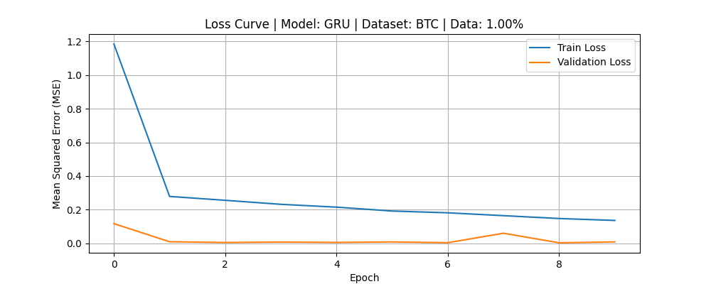
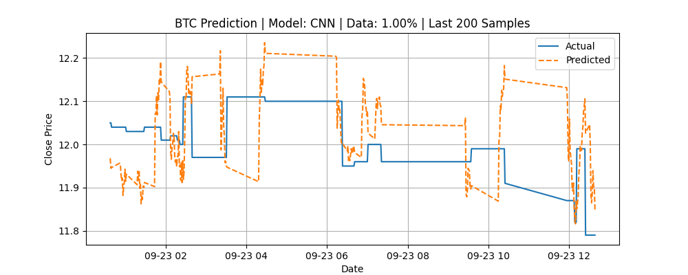
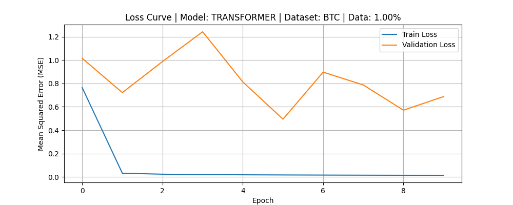
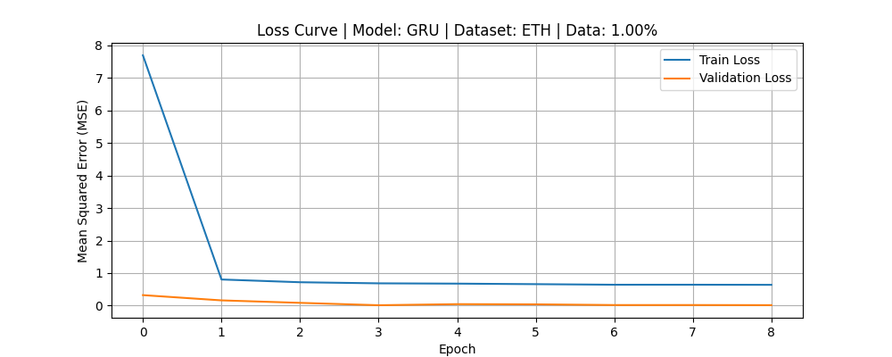
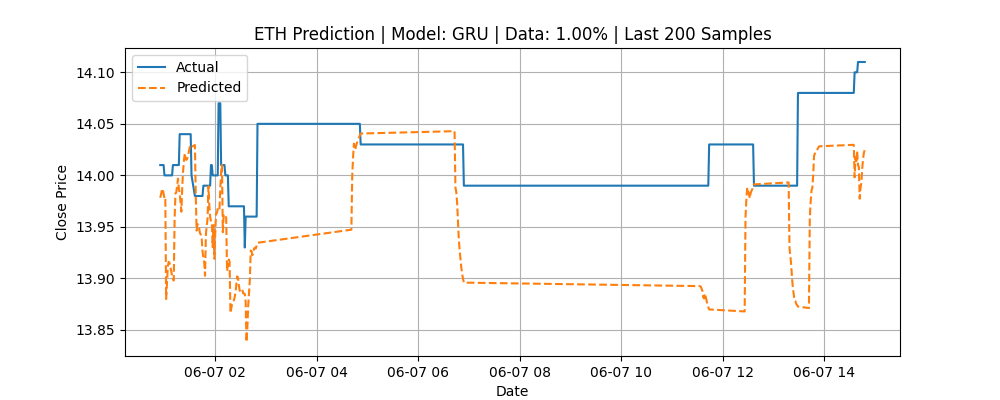
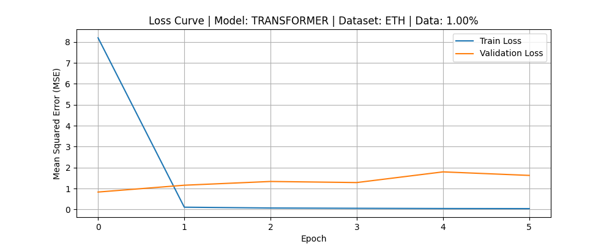

This report summarizes all experiments conducted for this specific data percentage.
Assets Tested: btc, eth
Epochs per Experiment: 10
Stop Loss Setting: 0.003
Stop Loss: 0.300%
Duration: 193.56 seconds
Loading data for asset: btc
Subsetting data...
Total data values in intersection: 6283462
Number of data points to use: 62834
Start of subset: 2012-01-31 10:45:00+00:00
End of subset: 2012-09-23 12:39:00+00:00
Data subset shape: (62834, 44), (62834,)
Normalizing features...
Creating sequences...
Total sequences: 62804
Splitting data into training and testing sets...
Train size: (50243, 30, 40), Test size: (12561, 30, 40)
Building model...
Training model...
Epoch 1/10
1/1571 [..............................] - ETA: 39:46 - loss: 46.0991
10/1571 [..............................] - ETA: 8s - loss: 55.1280
20/1571 [..............................] - ETA: 8s - loss: 42.1398
29/1571 [..............................] - ETA: 8s - loss: 32.1029
38/1571 [..............................] - ETA: 8s - loss: 25.8493
46/1571 [..............................] - ETA: 8s - loss: 22.2871
54/1571 [>.............................] - ETA: 8s - loss: 19.6815
63/1571 [>.............................] - ETA: 8s - loss: 17.5570
72/1571 [>.............................] - ETA: 8s - loss: 15.9496
82/1571 [>.............................] - ETA: 8s - loss: 14.4655
93/1571 [>.............................] - ETA: 8s - loss: 13.1686
105/1571 [=>............................] - ETA: 8s - loss: 12.0588
116/1571 [=>............................] - ETA: 7s - loss: 11.1098
128/1571 [=>............................] - ETA: 7s - loss: 10.1871
139/1571 [=>............................] - ETA: 7s - loss: 9.4660
150/1571 [=>............................] - ETA: 7s - loss: 8.8281
162/1571 [==>...........................] - ETA: 7s - loss: 8.2317
174/1571 [==>...........................] - ETA: 7s - loss: 7.7114
186/1571 [==>...........................] - ETA: 7s - loss: 7.2569
189/1571 [==>...........................] - ETA: 14s - loss: 7.1505
198/1571 [==>...........................] - ETA: 14s - loss: 6.8505
208/1571 [==>...........................] - ETA: 13s - loss: 6.5442
217/1571 [===>..........................] - ETA: 13s - loss: 6.2949
227/1571 [===>..........................] - ETA: 13s - loss: 6.0462
236/1571 [===>..........................] - ETA: 12s - loss: 5.8297
246/1571 [===>..........................] - ETA: 12s - loss: 5.6119
256/1571 [===>..........................] - ETA: 12s - loss: 5.4155
266/1571 [====>.........................] - ETA: 12s - loss: 5.2327
277/1571 [====>.........................] - ETA: 11s - loss: 5.0505
288/1571 [====>.........................] - ETA: 11s - loss: 4.8800
298/1571 [====>.........................] - ETA: 11s - loss: 4.7300
309/1571 [====>.........................] - ETA: 10s - loss: 4.5786
320/1571 [=====>........................] - ETA: 10s - loss: 4.4363
331/1571 [=====>........................] - ETA: 10s - loss: 4.3065
342/1571 [=====>........................] - ETA: 10s - loss: 4.1822
353/1571 [=====>........................] - ETA: 9s - loss: 4.0662
364/1571 [=====>........................] - ETA: 9s - loss: 3.9574
375/1571 [======>.......................] - ETA: 9s - loss: 3.8523
386/1571 [======>.......................] - ETA: 12s - loss: 3.7601
395/1571 [======>.......................] - ETA: 12s - loss: 3.6846
405/1571 [======>.......................] - ETA: 12s - loss: 3.6030
415/1571 [======>.......................] - ETA: 11s - loss: 3.5271
424/1571 [=======>......................] - ETA: 11s - loss: 3.4611
434/1571 [=======>......................] - ETA: 11s - loss: 3.3899
440/1571 [=======>......................] - ETA: 11s - loss: 3.3488
449/1571 [=======>......................] - ETA: 11s - loss: 3.2903
458/1571 [=======>......................] - ETA: 10s - loss: 3.2343
464/1571 [=======>......................] - ETA: 10s - loss: 3.1984
473/1571 [========>.....................] - ETA: 10s - loss: 3.1434
484/1571 [========>.....................] - ETA: 10s - loss: 3.0825
495/1571 [========>.....................] - ETA: 10s - loss: 3.0232
506/1571 [========>.....................] - ETA: 10s - loss: 2.9658
517/1571 [========>.....................] - ETA: 9s - loss: 2.9100
528/1571 [=========>....................] - ETA: 9s - loss: 2.8559
539/1571 [=========>....................] - ETA: 9s - loss: 2.8052
550/1571 [=========>....................] - ETA: 9s - loss: 2.7575
561/1571 [=========>....................] - ETA: 9s - loss: 2.7130
573/1571 [=========>....................] - ETA: 8s - loss: 2.6631
584/1571 [==========>...................] - ETA: 8s - loss: 2.6201
586/1571 [==========>...................] - ETA: 10s - loss: 2.6122
597/1571 [==========>...................] - ETA: 10s - loss: 2.5710
607/1571 [==========>...................] - ETA: 10s - loss: 2.5358
617/1571 [==========>...................] - ETA: 9s - loss: 2.5009
627/1571 [==========>...................] - ETA: 9s - loss: 2.4677
637/1571 [===========>..................] - ETA: 9s - loss: 2.4344
647/1571 [===========>..................] - ETA: 9s - loss: 2.4019
656/1571 [===========>..................] - ETA: 9s - loss: 2.3731
662/1571 [===========>..................] - ETA: 9s - loss: 2.3557
672/1571 [===========>..................] - ETA: 9s - loss: 2.3264
682/1571 [============>.................] - ETA: 8s - loss: 2.2975
693/1571 [============>.................] - ETA: 8s - loss: 2.2674
702/1571 [============>.................] - ETA: 8s - loss: 2.2433
713/1571 [============>.................] - ETA: 8s - loss: 2.2144
724/1571 [============>.................] - ETA: 8s - loss: 2.1854
735/1571 [=============>................] - ETA: 8s - loss: 2.1571
746/1571 [=============>................] - ETA: 7s - loss: 2.1308
757/1571 [=============>................] - ETA: 7s - loss: 2.1059
768/1571 [=============>................] - ETA: 7s - loss: 2.0806
778/1571 [=============>................] - ETA: 7s - loss: 2.0586
789/1571 [==============>...............] - ETA: 7s - loss: 2.0348
790/1571 [==============>...............] - ETA: 8s - loss: 2.0328
801/1571 [==============>...............] - ETA: 8s - loss: 2.0100
811/1571 [==============>...............] - ETA: 8s - loss: 1.9900
821/1571 [==============>...............] - ETA: 7s - loss: 1.9691
830/1571 [==============>...............] - ETA: 7s - loss: 1.9519
840/1571 [===============>..............] - ETA: 7s - loss: 1.9329
848/1571 [===============>..............] - ETA: 7s - loss: 1.9178
855/1571 [===============>..............] - ETA: 7s - loss: 1.9048
864/1571 [===============>..............] - ETA: 7s - loss: 1.8894
874/1571 [===============>..............] - ETA: 7s - loss: 1.8720
885/1571 [===============>..............] - ETA: 6s - loss: 1.8531
896/1571 [================>.............] - ETA: 6s - loss: 1.8344
908/1571 [================>.............] - ETA: 6s - loss: 1.8148
919/1571 [================>.............] - ETA: 6s - loss: 1.7976
930/1571 [================>.............] - ETA: 6s - loss: 1.7800
942/1571 [================>.............] - ETA: 6s - loss: 1.7617
953/1571 [=================>............] - ETA: 6s - loss: 1.7445
964/1571 [=================>............] - ETA: 5s - loss: 1.7279
976/1571 [=================>............] - ETA: 5s - loss: 1.7111
987/1571 [=================>............] - ETA: 5s - loss: 1.6966
996/1571 [==================>...........] - ETA: 6s - loss: 1.6844
1005/1571 [==================>...........] - ETA: 6s - loss: 1.6722
1015/1571 [==================>...........] - ETA: 5s - loss: 1.6595
1025/1571 [==================>...........] - ETA: 5s - loss: 1.6474
1033/1571 [==================>...........] - ETA: 5s - loss: 1.6370
1042/1571 [==================>...........] - ETA: 5s - loss: 1.6263
1051/1571 [===================>..........] - ETA: 5s - loss: 1.6148
1060/1571 [===================>..........] - ETA: 5s - loss: 1.6036
1067/1571 [===================>..........] - ETA: 5s - loss: 1.5953
1077/1571 [===================>..........] - ETA: 5s - loss: 1.5840
1089/1571 [===================>..........] - ETA: 4s - loss: 1.5701
1100/1571 [====================>.........] - ETA: 4s - loss: 1.5571
1112/1571 [====================>.........] - ETA: 4s - loss: 1.5435
1122/1571 [====================>.........] - ETA: 4s - loss: 1.5328
1132/1571 [====================>.........] - ETA: 4s - loss: 1.5223
1143/1571 [====================>.........] - ETA: 4s - loss: 1.5108
1153/1571 [=====================>........] - ETA: 4s - loss: 1.5014
1164/1571 [=====================>........] - ETA: 4s - loss: 1.4898
1175/1571 [=====================>........] - ETA: 3s - loss: 1.4784
1187/1571 [=====================>........] - ETA: 3s - loss: 1.4666
1192/1571 [=====================>........] - ETA: 4s - loss: 1.4616
1202/1571 [=====================>........] - ETA: 3s - loss: 1.4521
1211/1571 [======================>.......] - ETA: 3s - loss: 1.4442
1221/1571 [======================>.......] - ETA: 3s - loss: 1.4351
1229/1571 [======================>.......] - ETA: 3s - loss: 1.4275
1238/1571 [======================>.......] - ETA: 3s - loss: 1.4194
1244/1571 [======================>.......] - ETA: 3s - loss: 1.4139
1249/1571 [======================>.......] - ETA: 3s - loss: 1.4099
1259/1571 [=======================>......] - ETA: 3s - loss: 1.4014
1269/1571 [=======================>......] - ETA: 3s - loss: 1.3925
1280/1571 [=======================>......] - ETA: 3s - loss: 1.3834
1290/1571 [=======================>......] - ETA: 2s - loss: 1.3749
1300/1571 [=======================>......] - ETA: 2s - loss: 1.3669
1312/1571 [========================>.....] - ETA: 2s - loss: 1.3572
1324/1571 [========================>.....] - ETA: 2s - loss: 1.3474
1335/1571 [========================>.....] - ETA: 2s - loss: 1.3391
1346/1571 [========================>.....] - ETA: 2s - loss: 1.3304
1355/1571 [========================>.....] - ETA: 2s - loss: 1.3237
1366/1571 [=========================>....] - ETA: 2s - loss: 1.3154
1377/1571 [=========================>....] - ETA: 1s - loss: 1.3072
1382/1571 [=========================>....] - ETA: 2s - loss: 1.3036
1391/1571 [=========================>....] - ETA: 1s - loss: 1.2972
1400/1571 [=========================>....] - ETA: 1s - loss: 1.2909
1410/1571 [=========================>....] - ETA: 1s - loss: 1.2839
1417/1571 [==========================>...] - ETA: 1s - loss: 1.2793
1426/1571 [==========================>...] - ETA: 1s - loss: 1.2730
1435/1571 [==========================>...] - ETA: 1s - loss: 1.2668
1445/1571 [==========================>...] - ETA: 1s - loss: 1.2601
1454/1571 [==========================>...] - ETA: 1s - loss: 1.2539
1464/1571 [==========================>...] - ETA: 1s - loss: 1.2477
1474/1571 [===========================>..] - ETA: 1s - loss: 1.2412
1484/1571 [===========================>..] - ETA: 0s - loss: 1.2350
1495/1571 [===========================>..] - ETA: 0s - loss: 1.2282
1505/1571 [===========================>..] - ETA: 0s - loss: 1.2221
1516/1571 [===========================>..] - ETA: 0s - loss: 1.2151
1527/1571 [============================>.] - ETA: 0s - loss: 1.2083
1538/1571 [============================>.] - ETA: 0s - loss: 1.2021
1549/1571 [============================>.] - ETA: 0s - loss: 1.1959
1561/1571 [============================>.] - ETA: 0s - loss: 1.1890
Epoch 1: val_loss improved from inf to 0.11766, saving model to models\gru_btc_model_1pct.h5
1571/1571 [==============================] - 21s 12ms/step - loss: 1.1838 - val_loss: 0.1177
Epoch 2/10
1/1571 [..............................] - ETA: 7s - loss: 0.4049
11/1571 [..............................] - ETA: 8s - loss: 0.2864
21/1571 [..............................] - ETA: 8s - loss: 0.2870
30/1571 [..............................] - ETA: 8s - loss: 0.2927
40/1571 [..............................] - ETA: 8s - loss: 0.2870
51/1571 [..............................] - ETA: 8s - loss: 0.2962
62/1571 [>.............................] - ETA: 7s - loss: 0.2929
73/1571 [>.............................] - ETA: 7s - loss: 0.3014
84/1571 [>.............................] - ETA: 7s - loss: 0.3022
95/1571 [>.............................] - ETA: 7s - loss: 0.3019
106/1571 [=>............................] - ETA: 7s - loss: 0.3022
117/1571 [=>............................] - ETA: 7s - loss: 0.3004
128/1571 [=>............................] - ETA: 7s - loss: 0.2973
139/1571 [=>............................] - ETA: 7s - loss: 0.2936
140/1571 [=>............................] - ETA: 18s - loss: 0.2929
150/1571 [=>............................] - ETA: 17s - loss: 0.2933
160/1571 [==>...........................] - ETA: 16s - loss: 0.2950
169/1571 [==>...........................] - ETA: 16s - loss: 0.2964
178/1571 [==>...........................] - ETA: 15s - loss: 0.2962
188/1571 [==>...........................] - ETA: 15s - loss: 0.2953
197/1571 [==>...........................] - ETA: 14s - loss: 0.2957
206/1571 [==>...........................] - ETA: 14s - loss: 0.2957
215/1571 [===>..........................] - ETA: 13s - loss: 0.2957
225/1571 [===>..........................] - ETA: 13s - loss: 0.2950
236/1571 [===>..........................] - ETA: 13s - loss: 0.2948
247/1571 [===>..........................] - ETA: 12s - loss: 0.2957
258/1571 [===>..........................] - ETA: 12s - loss: 0.2956
269/1571 [====>.........................] - ETA: 11s - loss: 0.2980
280/1571 [====>.........................] - ETA: 11s - loss: 0.2975
291/1571 [====>.........................] - ETA: 11s - loss: 0.2964
302/1571 [====>.........................] - ETA: 11s - loss: 0.2935
313/1571 [====>.........................] - ETA: 10s - loss: 0.2922
324/1571 [=====>........................] - ETA: 10s - loss: 0.2938
334/1571 [=====>........................] - ETA: 14s - loss: 0.2927
344/1571 [=====>........................] - ETA: 14s - loss: 0.2921
354/1571 [=====>........................] - ETA: 13s - loss: 0.2909
362/1571 [=====>........................] - ETA: 13s - loss: 0.2923
371/1571 [======>.......................] - ETA: 13s - loss: 0.2917
380/1571 [======>.......................] - ETA: 13s - loss: 0.2917
390/1571 [======>.......................] - ETA: 12s - loss: 0.2907
399/1571 [======>.......................] - ETA: 12s - loss: 0.2908
408/1571 [======>.......................] - ETA: 12s - loss: 0.2909
418/1571 [======>.......................] - ETA: 12s - loss: 0.2908
428/1571 [=======>......................] - ETA: 11s - loss: 0.2910
439/1571 [=======>......................] - ETA: 11s - loss: 0.2913
450/1571 [=======>......................] - ETA: 11s - loss: 0.2906
461/1571 [=======>......................] - ETA: 11s - loss: 0.2918
472/1571 [========>.....................] - ETA: 10s - loss: 0.2921
483/1571 [========>.....................] - ETA: 10s - loss: 0.2918
494/1571 [========>.....................] - ETA: 10s - loss: 0.2906
504/1571 [========>.....................] - ETA: 10s - loss: 0.2899
515/1571 [========>.....................] - ETA: 9s - loss: 0.2909
526/1571 [=========>....................] - ETA: 9s - loss: 0.2913
528/1571 [=========>....................] - ETA: 11s - loss: 0.2911
537/1571 [=========>....................] - ETA: 11s - loss: 0.2907
547/1571 [=========>....................] - ETA: 11s - loss: 0.2898
556/1571 [=========>....................] - ETA: 11s - loss: 0.2891
566/1571 [=========>....................] - ETA: 11s - loss: 0.2894
576/1571 [=========>....................] - ETA: 10s - loss: 0.2906
586/1571 [==========>...................] - ETA: 10s - loss: 0.2908
596/1571 [==========>...................] - ETA: 10s - loss: 0.2910
605/1571 [==========>...................] - ETA: 10s - loss: 0.2900
614/1571 [==========>...................] - ETA: 10s - loss: 0.2897
624/1571 [==========>...................] - ETA: 9s - loss: 0.2901
635/1571 [===========>..................] - ETA: 9s - loss: 0.2907
645/1571 [===========>..................] - ETA: 9s - loss: 0.2904
656/1571 [===========>..................] - ETA: 9s - loss: 0.2897
667/1571 [===========>..................] - ETA: 9s - loss: 0.2894
677/1571 [===========>..................] - ETA: 8s - loss: 0.2897
688/1571 [============>.................] - ETA: 8s - loss: 0.2902
699/1571 [============>.................] - ETA: 8s - loss: 0.2892
710/1571 [============>.................] - ETA: 8s - loss: 0.2894
722/1571 [============>.................] - ETA: 8s - loss: 0.2893
725/1571 [============>.................] - ETA: 9s - loss: 0.2896
734/1571 [=============>................] - ETA: 9s - loss: 0.2895
743/1571 [=============>................] - ETA: 9s - loss: 0.2888
753/1571 [=============>................] - ETA: 8s - loss: 0.2891
762/1571 [=============>................] - ETA: 8s - loss: 0.2887
772/1571 [=============>................] - ETA: 8s - loss: 0.2886
782/1571 [=============>................] - ETA: 8s - loss: 0.2881
791/1571 [==============>...............] - ETA: 8s - loss: 0.2881
801/1571 [==============>...............] - ETA: 8s - loss: 0.2873
811/1571 [==============>...............] - ETA: 8s - loss: 0.2874
821/1571 [==============>...............] - ETA: 7s - loss: 0.2871
832/1571 [==============>...............] - ETA: 7s - loss: 0.2870
844/1571 [===============>..............] - ETA: 7s - loss: 0.2865
854/1571 [===============>..............] - ETA: 7s - loss: 0.2874
866/1571 [===============>..............] - ETA: 7s - loss: 0.2875
878/1571 [===============>..............] - ETA: 7s - loss: 0.2868
889/1571 [===============>..............] - ETA: 6s - loss: 0.2866
900/1571 [================>.............] - ETA: 6s - loss: 0.2865
912/1571 [================>.............] - ETA: 6s - loss: 0.2873
924/1571 [================>.............] - ETA: 6s - loss: 0.2878
926/1571 [================>.............] - ETA: 7s - loss: 0.2879
936/1571 [================>.............] - ETA: 6s - loss: 0.2875
946/1571 [=================>............] - ETA: 6s - loss: 0.2878
955/1571 [=================>............] - ETA: 6s - loss: 0.2877
965/1571 [=================>............] - ETA: 6s - loss: 0.2872
975/1571 [=================>............] - ETA: 6s - loss: 0.2867
985/1571 [=================>............] - ETA: 6s - loss: 0.2859
995/1571 [==================>...........] - ETA: 6s - loss: 0.2854
1004/1571 [==================>...........] - ETA: 5s - loss: 0.2848
1014/1571 [==================>...........] - ETA: 5s - loss: 0.2848
1025/1571 [==================>...........] - ETA: 5s - loss: 0.2845
1036/1571 [==================>...........] - ETA: 5s - loss: 0.2840
1047/1571 [==================>...........] - ETA: 5s - loss: 0.2838
1057/1571 [===================>..........] - ETA: 5s - loss: 0.2839
1068/1571 [===================>..........] - ETA: 5s - loss: 0.2836
1079/1571 [===================>..........] - ETA: 4s - loss: 0.2835
1090/1571 [===================>..........] - ETA: 4s - loss: 0.2843
1101/1571 [====================>.........] - ETA: 4s - loss: 0.2841
1112/1571 [====================>.........] - ETA: 4s - loss: 0.2840
1122/1571 [====================>.........] - ETA: 4s - loss: 0.2841
1132/1571 [====================>.........] - ETA: 4s - loss: 0.2839
1141/1571 [====================>.........] - ETA: 4s - loss: 0.2837
1150/1571 [====================>.........] - ETA: 4s - loss: 0.2832
1160/1571 [=====================>........] - ETA: 4s - loss: 0.2827
1169/1571 [=====================>........] - ETA: 4s - loss: 0.2826
1178/1571 [=====================>........] - ETA: 4s - loss: 0.2824
1188/1571 [=====================>........] - ETA: 4s - loss: 0.2823
1198/1571 [=====================>........] - ETA: 3s - loss: 0.2821
1208/1571 [======================>.......] - ETA: 3s - loss: 0.2823
1217/1571 [======================>.......] - ETA: 3s - loss: 0.2824
1227/1571 [======================>.......] - ETA: 3s - loss: 0.2824
1238/1571 [======================>.......] - ETA: 3s - loss: 0.2825
1250/1571 [======================>.......] - ETA: 3s - loss: 0.2820
1262/1571 [=======================>......] - ETA: 3s - loss: 0.2820
1273/1571 [=======================>......] - ETA: 3s - loss: 0.2823
1285/1571 [=======================>......] - ETA: 2s - loss: 0.2821
1297/1571 [=======================>......] - ETA: 2s - loss: 0.2821
1308/1571 [=======================>......] - ETA: 2s - loss: 0.2820
1320/1571 [========================>.....] - ETA: 2s - loss: 0.2816
1324/1571 [========================>.....] - ETA: 2s - loss: 0.2814
1334/1571 [========================>.....] - ETA: 2s - loss: 0.2817
1344/1571 [========================>.....] - ETA: 2s - loss: 0.2814
1354/1571 [========================>.....] - ETA: 2s - loss: 0.2812
1364/1571 [=========================>....] - ETA: 2s - loss: 0.2809
1373/1571 [=========================>....] - ETA: 2s - loss: 0.2807
1383/1571 [=========================>....] - ETA: 1s - loss: 0.2804
1393/1571 [=========================>....] - ETA: 1s - loss: 0.2799
1403/1571 [=========================>....] - ETA: 1s - loss: 0.2799
1413/1571 [=========================>....] - ETA: 1s - loss: 0.2799
1423/1571 [==========================>...] - ETA: 1s - loss: 0.2796
1434/1571 [==========================>...] - ETA: 1s - loss: 0.2797
1446/1571 [==========================>...] - ETA: 1s - loss: 0.2797
1458/1571 [==========================>...] - ETA: 1s - loss: 0.2793
1470/1571 [===========================>..] - ETA: 1s - loss: 0.2795
1482/1571 [===========================>..] - ETA: 0s - loss: 0.2791
1493/1571 [===========================>..] - ETA: 0s - loss: 0.2791
1505/1571 [===========================>..] - ETA: 0s - loss: 0.2795
1517/1571 [===========================>..] - ETA: 0s - loss: 0.2794
1529/1571 [============================>.] - ETA: 0s - loss: 0.2795
1539/1571 [============================>.] - ETA: 0s - loss: 0.2792
1549/1571 [============================>.] - ETA: 0s - loss: 0.2791
1559/1571 [============================>.] - ETA: 0s - loss: 0.2792
1569/1571 [============================>.] - ETA: 0s - loss: 0.2793
Epoch 2: val_loss improved from 0.11766 to 0.01035, saving model to models\gru_btc_model_1pct.h5
1571/1571 [==============================] - 19s 12ms/step - loss: 0.2792 - val_loss: 0.0104
Epoch 3/10
1/1571 [..............................] - ETA: 7s - loss: 0.2934
11/1571 [..............................] - ETA: 8s - loss: 0.2485
21/1571 [..............................] - ETA: 8s - loss: 0.2344
30/1571 [..............................] - ETA: 8s - loss: 0.2560
39/1571 [..............................] - ETA: 8s - loss: 0.2555
49/1571 [..............................] - ETA: 8s - loss: 0.2479
60/1571 [>.............................] - ETA: 8s - loss: 0.2449
71/1571 [>.............................] - ETA: 7s - loss: 0.2400
82/1571 [>.............................] - ETA: 7s - loss: 0.2393
93/1571 [>.............................] - ETA: 7s - loss: 0.2445
104/1571 [>.............................] - ETA: 7s - loss: 0.2448
115/1571 [=>............................] - ETA: 7s - loss: 0.2468
125/1571 [=>............................] - ETA: 7s - loss: 0.2487
136/1571 [=>............................] - ETA: 7s - loss: 0.2495
148/1571 [=>............................] - ETA: 7s - loss: 0.2536
153/1571 [=>............................] - ETA: 16s - loss: 0.2561
162/1571 [==>...........................] - ETA: 16s - loss: 0.2573
172/1571 [==>...........................] - ETA: 15s - loss: 0.2558
181/1571 [==>...........................] - ETA: 15s - loss: 0.2574
191/1571 [==>...........................] - ETA: 14s - loss: 0.2594
201/1571 [==>...........................] - ETA: 14s - loss: 0.2587
210/1571 [===>..........................] - ETA: 13s - loss: 0.2586
219/1571 [===>..........................] - ETA: 13s - loss: 0.2609
229/1571 [===>..........................] - ETA: 13s - loss: 0.2627
239/1571 [===>..........................] - ETA: 12s - loss: 0.2629
249/1571 [===>..........................] - ETA: 12s - loss: 0.2637
260/1571 [===>..........................] - ETA: 12s - loss: 0.2640
271/1571 [====>.........................] - ETA: 11s - loss: 0.2628
282/1571 [====>.........................] - ETA: 11s - loss: 0.2625
294/1571 [====>.........................] - ETA: 11s - loss: 0.2610
305/1571 [====>.........................] - ETA: 10s - loss: 0.2621
316/1571 [=====>........................] - ETA: 10s - loss: 0.2619
328/1571 [=====>........................] - ETA: 10s - loss: 0.2620
340/1571 [=====>........................] - ETA: 10s - loss: 0.2633
350/1571 [=====>........................] - ETA: 13s - loss: 0.2642
360/1571 [=====>........................] - ETA: 13s - loss: 0.2649
369/1571 [======>.......................] - ETA: 12s - loss: 0.2659
379/1571 [======>.......................] - ETA: 12s - loss: 0.2652
388/1571 [======>.......................] - ETA: 12s - loss: 0.2641
398/1571 [======>.......................] - ETA: 12s - loss: 0.2637
408/1571 [======>.......................] - ETA: 11s - loss: 0.2637
418/1571 [======>.......................] - ETA: 11s - loss: 0.2643
428/1571 [=======>......................] - ETA: 11s - loss: 0.2642
438/1571 [=======>......................] - ETA: 11s - loss: 0.2644
449/1571 [=======>......................] - ETA: 11s - loss: 0.2651
460/1571 [=======>......................] - ETA: 10s - loss: 0.2655
471/1571 [=======>......................] - ETA: 10s - loss: 0.2643
483/1571 [========>.....................] - ETA: 10s - loss: 0.2640
494/1571 [========>.....................] - ETA: 10s - loss: 0.2653
506/1571 [========>.....................] - ETA: 9s - loss: 0.2643
517/1571 [========>.....................] - ETA: 9s - loss: 0.2648
528/1571 [=========>....................] - ETA: 9s - loss: 0.2647
540/1571 [=========>....................] - ETA: 9s - loss: 0.2645
551/1571 [=========>....................] - ETA: 11s - loss: 0.2644
560/1571 [=========>....................] - ETA: 10s - loss: 0.2642
569/1571 [=========>....................] - ETA: 10s - loss: 0.2638
578/1571 [==========>...................] - ETA: 10s - loss: 0.2627
588/1571 [==========>...................] - ETA: 10s - loss: 0.2627
598/1571 [==========>...................] - ETA: 10s - loss: 0.2619
607/1571 [==========>...................] - ETA: 9s - loss: 0.2622
616/1571 [==========>...................] - ETA: 9s - loss: 0.2623
625/1571 [==========>...................] - ETA: 9s - loss: 0.2620
634/1571 [===========>..................] - ETA: 9s - loss: 0.2623
643/1571 [===========>..................] - ETA: 9s - loss: 0.2621
655/1571 [===========>..................] - ETA: 9s - loss: 0.2617
666/1571 [===========>..................] - ETA: 8s - loss: 0.2619
678/1571 [===========>..................] - ETA: 8s - loss: 0.2622
690/1571 [============>.................] - ETA: 8s - loss: 0.2624
701/1571 [============>.................] - ETA: 8s - loss: 0.2625
713/1571 [============>.................] - ETA: 8s - loss: 0.2623
724/1571 [============>.................] - ETA: 8s - loss: 0.2623
736/1571 [=============>................] - ETA: 7s - loss: 0.2623
748/1571 [=============>................] - ETA: 8s - loss: 0.2620
758/1571 [=============>................] - ETA: 8s - loss: 0.2619
768/1571 [=============>................] - ETA: 8s - loss: 0.2615
778/1571 [=============>................] - ETA: 8s - loss: 0.2611
788/1571 [==============>...............] - ETA: 8s - loss: 0.2617
797/1571 [==============>...............] - ETA: 8s - loss: 0.2616
807/1571 [==============>...............] - ETA: 7s - loss: 0.2614
817/1571 [==============>...............] - ETA: 7s - loss: 0.2614
826/1571 [==============>...............] - ETA: 7s - loss: 0.2615
835/1571 [==============>...............] - ETA: 7s - loss: 0.2615
845/1571 [===============>..............] - ETA: 7s - loss: 0.2618
856/1571 [===============>..............] - ETA: 7s - loss: 0.2619
867/1571 [===============>..............] - ETA: 7s - loss: 0.2616
878/1571 [===============>..............] - ETA: 6s - loss: 0.2613
889/1571 [===============>..............] - ETA: 6s - loss: 0.2609
900/1571 [================>.............] - ETA: 6s - loss: 0.2608
912/1571 [================>.............] - ETA: 6s - loss: 0.2603
924/1571 [================>.............] - ETA: 6s - loss: 0.2606
936/1571 [================>.............] - ETA: 6s - loss: 0.2608
948/1571 [=================>............] - ETA: 5s - loss: 0.2610
950/1571 [=================>............] - ETA: 6s - loss: 0.2607
959/1571 [=================>............] - ETA: 6s - loss: 0.2607
969/1571 [=================>............] - ETA: 6s - loss: 0.2607
979/1571 [=================>............] - ETA: 6s - loss: 0.2606
989/1571 [=================>............] - ETA: 6s - loss: 0.2604
999/1571 [==================>...........] - ETA: 5s - loss: 0.2605
1009/1571 [==================>...........] - ETA: 5s - loss: 0.2609
1019/1571 [==================>...........] - ETA: 5s - loss: 0.2607
1028/1571 [==================>...........] - ETA: 5s - loss: 0.2608
1038/1571 [==================>...........] - ETA: 5s - loss: 0.2609
1048/1571 [===================>..........] - ETA: 5s - loss: 0.2603
1059/1571 [===================>..........] - ETA: 5s - loss: 0.2604
1070/1571 [===================>..........] - ETA: 5s - loss: 0.2610
1081/1571 [===================>..........] - ETA: 4s - loss: 0.2605
1093/1571 [===================>..........] - ETA: 4s - loss: 0.2600
1105/1571 [====================>.........] - ETA: 4s - loss: 0.2599
1117/1571 [====================>.........] - ETA: 4s - loss: 0.2597
1128/1571 [====================>.........] - ETA: 4s - loss: 0.2594
1140/1571 [====================>.........] - ETA: 4s - loss: 0.2592
1150/1571 [====================>.........] - ETA: 4s - loss: 0.2591
1151/1571 [====================>.........] - ETA: 4s - loss: 0.2591
1161/1571 [=====================>........] - ETA: 4s - loss: 0.2593
1171/1571 [=====================>........] - ETA: 4s - loss: 0.2589
1181/1571 [=====================>........] - ETA: 4s - loss: 0.2589
1190/1571 [=====================>........] - ETA: 3s - loss: 0.2588
1200/1571 [=====================>........] - ETA: 3s - loss: 0.2591
1210/1571 [======================>.......] - ETA: 3s - loss: 0.2589
1219/1571 [======================>.......] - ETA: 3s - loss: 0.2590
1229/1571 [======================>.......] - ETA: 3s - loss: 0.2590
1239/1571 [======================>.......] - ETA: 3s - loss: 0.2591
1249/1571 [======================>.......] - ETA: 3s - loss: 0.2592
1260/1571 [=======================>......] - ETA: 3s - loss: 0.2589
1271/1571 [=======================>......] - ETA: 3s - loss: 0.2590
1282/1571 [=======================>......] - ETA: 2s - loss: 0.2590
1293/1571 [=======================>......] - ETA: 2s - loss: 0.2587
1305/1571 [=======================>......] - ETA: 2s - loss: 0.2583
1317/1571 [========================>.....] - ETA: 2s - loss: 0.2580
1329/1571 [========================>.....] - ETA: 2s - loss: 0.2580
1339/1571 [========================>.....] - ETA: 2s - loss: 0.2580
1350/1571 [========================>.....] - ETA: 2s - loss: 0.2582
1352/1571 [========================>.....] - ETA: 2s - loss: 0.2582
1362/1571 [=========================>....] - ETA: 2s - loss: 0.2579
1372/1571 [=========================>....] - ETA: 2s - loss: 0.2580
1381/1571 [=========================>....] - ETA: 1s - loss: 0.2579
1391/1571 [=========================>....] - ETA: 1s - loss: 0.2577
1401/1571 [=========================>....] - ETA: 1s - loss: 0.2577
1411/1571 [=========================>....] - ETA: 1s - loss: 0.2578
1421/1571 [==========================>...] - ETA: 1s - loss: 0.2580
1431/1571 [==========================>...] - ETA: 1s - loss: 0.2576
1440/1571 [==========================>...] - ETA: 1s - loss: 0.2577
1451/1571 [==========================>...] - ETA: 1s - loss: 0.2575
1463/1571 [==========================>...] - ETA: 1s - loss: 0.2571
1474/1571 [===========================>..] - ETA: 0s - loss: 0.2567
1486/1571 [===========================>..] - ETA: 0s - loss: 0.2566
1497/1571 [===========================>..] - ETA: 0s - loss: 0.2566
1508/1571 [===========================>..] - ETA: 0s - loss: 0.2563
1518/1571 [===========================>..] - ETA: 0s - loss: 0.2561
1530/1571 [============================>.] - ETA: 0s - loss: 0.2562
1541/1571 [============================>.] - ETA: 0s - loss: 0.2558
1553/1571 [============================>.] - ETA: 0s - loss: 0.2560
1555/1571 [============================>.] - ETA: 0s - loss: 0.2561
1566/1571 [============================>.] - ETA: 0s - loss: 0.2562
Epoch 3: val_loss improved from 0.01035 to 0.00578, saving model to models\gru_btc_model_1pct.h5
1571/1571 [==============================] - 19s 12ms/step - loss: 0.2562 - val_loss: 0.0058
Epoch 4/10
1/1571 [..............................] - ETA: 8s - loss: 0.5369
10/1571 [..............................] - ETA: 9s - loss: 0.2267
20/1571 [..............................] - ETA: 8s - loss: 0.2449
30/1571 [..............................] - ETA: 8s - loss: 0.2542
40/1571 [..............................] - ETA: 8s - loss: 0.2563
49/1571 [..............................] - ETA: 8s - loss: 0.2502
58/1571 [>.............................] - ETA: 8s - loss: 0.2502
68/1571 [>.............................] - ETA: 8s - loss: 0.2489
78/1571 [>.............................] - ETA: 8s - loss: 0.2481
89/1571 [>.............................] - ETA: 8s - loss: 0.2427
100/1571 [>.............................] - ETA: 7s - loss: 0.2403
110/1571 [=>............................] - ETA: 7s - loss: 0.2429
122/1571 [=>............................] - ETA: 7s - loss: 0.2417
133/1571 [=>............................] - ETA: 7s - loss: 0.2418
144/1571 [=>............................] - ETA: 7s - loss: 0.2411
155/1571 [=>............................] - ETA: 7s - loss: 0.2405
166/1571 [==>...........................] - ETA: 7s - loss: 0.2403
178/1571 [==>...........................] - ETA: 7s - loss: 0.2414
179/1571 [==>...........................] - ETA: 15s - loss: 0.2410
188/1571 [==>...........................] - ETA: 14s - loss: 0.2424
198/1571 [==>...........................] - ETA: 14s - loss: 0.2407
208/1571 [==>...........................] - ETA: 14s - loss: 0.2383
217/1571 [===>..........................] - ETA: 13s - loss: 0.2389
227/1571 [===>..........................] - ETA: 13s - loss: 0.2368
237/1571 [===>..........................] - ETA: 12s - loss: 0.2402
247/1571 [===>..........................] - ETA: 12s - loss: 0.2414
257/1571 [===>..........................] - ETA: 12s - loss: 0.2418
267/1571 [====>.........................] - ETA: 11s - loss: 0.2427
277/1571 [====>.........................] - ETA: 11s - loss: 0.2406
288/1571 [====>.........................] - ETA: 11s - loss: 0.2421
298/1571 [====>.........................] - ETA: 11s - loss: 0.2421
309/1571 [====>.........................] - ETA: 10s - loss: 0.2410
321/1571 [=====>........................] - ETA: 10s - loss: 0.2399
333/1571 [=====>........................] - ETA: 10s - loss: 0.2408
345/1571 [=====>........................] - ETA: 10s - loss: 0.2409
356/1571 [=====>........................] - ETA: 9s - loss: 0.2394
368/1571 [======>.......................] - ETA: 9s - loss: 0.2374
380/1571 [======>.......................] - ETA: 9s - loss: 0.2367
384/1571 [======>.......................] - ETA: 12s - loss: 0.2369
393/1571 [======>.......................] - ETA: 12s - loss: 0.2369
402/1571 [======>.......................] - ETA: 12s - loss: 0.2361
410/1571 [======>.......................] - ETA: 11s - loss: 0.2362
419/1571 [=======>......................] - ETA: 11s - loss: 0.2380
428/1571 [=======>......................] - ETA: 11s - loss: 0.2393
438/1571 [=======>......................] - ETA: 11s - loss: 0.2394
448/1571 [=======>......................] - ETA: 11s - loss: 0.2390
458/1571 [=======>......................] - ETA: 10s - loss: 0.2398
467/1571 [=======>......................] - ETA: 10s - loss: 0.2401
477/1571 [========>.....................] - ETA: 10s - loss: 0.2397
488/1571 [========>.....................] - ETA: 10s - loss: 0.2395
500/1571 [========>.....................] - ETA: 10s - loss: 0.2385
512/1571 [========>.....................] - ETA: 9s - loss: 0.2390
524/1571 [=========>....................] - ETA: 9s - loss: 0.2391
536/1571 [=========>....................] - ETA: 9s - loss: 0.2398
548/1571 [=========>....................] - ETA: 9s - loss: 0.2399
560/1571 [=========>....................] - ETA: 8s - loss: 0.2401
572/1571 [=========>....................] - ETA: 8s - loss: 0.2405
581/1571 [==========>...................] - ETA: 10s - loss: 0.2405
590/1571 [==========>...................] - ETA: 10s - loss: 0.2407
600/1571 [==========>...................] - ETA: 10s - loss: 0.2402
609/1571 [==========>...................] - ETA: 9s - loss: 0.2398
619/1571 [==========>...................] - ETA: 9s - loss: 0.2396
629/1571 [===========>..................] - ETA: 9s - loss: 0.2395
638/1571 [===========>..................] - ETA: 9s - loss: 0.2393
647/1571 [===========>..................] - ETA: 9s - loss: 0.2399
657/1571 [===========>..................] - ETA: 9s - loss: 0.2402
667/1571 [===========>..................] - ETA: 8s - loss: 0.2403
677/1571 [===========>..................] - ETA: 8s - loss: 0.2404
688/1571 [============>.................] - ETA: 8s - loss: 0.2399
699/1571 [============>.................] - ETA: 8s - loss: 0.2394
711/1571 [============>.................] - ETA: 8s - loss: 0.2390
723/1571 [============>.................] - ETA: 8s - loss: 0.2385
735/1571 [=============>................] - ETA: 7s - loss: 0.2383
747/1571 [=============>................] - ETA: 7s - loss: 0.2381
759/1571 [=============>................] - ETA: 7s - loss: 0.2378
770/1571 [=============>................] - ETA: 7s - loss: 0.2383
782/1571 [=============>................] - ETA: 7s - loss: 0.2379
783/1571 [=============>................] - ETA: 8s - loss: 0.2378
791/1571 [==============>...............] - ETA: 8s - loss: 0.2378
800/1571 [==============>...............] - ETA: 8s - loss: 0.2375
808/1571 [==============>...............] - ETA: 7s - loss: 0.2375
817/1571 [==============>...............] - ETA: 7s - loss: 0.2373
826/1571 [==============>...............] - ETA: 7s - loss: 0.2374
835/1571 [==============>...............] - ETA: 7s - loss: 0.2375
843/1571 [===============>..............] - ETA: 7s - loss: 0.2372
852/1571 [===============>..............] - ETA: 7s - loss: 0.2371
861/1571 [===============>..............] - ETA: 7s - loss: 0.2375
870/1571 [===============>..............] - ETA: 7s - loss: 0.2373
881/1571 [===============>..............] - ETA: 6s - loss: 0.2376
892/1571 [================>.............] - ETA: 6s - loss: 0.2375
903/1571 [================>.............] - ETA: 6s - loss: 0.2374
913/1571 [================>.............] - ETA: 6s - loss: 0.2373
925/1571 [================>.............] - ETA: 6s - loss: 0.2372
936/1571 [================>.............] - ETA: 6s - loss: 0.2372
946/1571 [=================>............] - ETA: 6s - loss: 0.2370
958/1571 [=================>............] - ETA: 5s - loss: 0.2372
970/1571 [=================>............] - ETA: 5s - loss: 0.2374
979/1571 [=================>............] - ETA: 6s - loss: 0.2376
988/1571 [=================>............] - ETA: 6s - loss: 0.2377
998/1571 [==================>...........] - ETA: 5s - loss: 0.2374
1008/1571 [==================>...........] - ETA: 5s - loss: 0.2377
1018/1571 [==================>...........] - ETA: 5s - loss: 0.2378
1028/1571 [==================>...........] - ETA: 5s - loss: 0.2378
1039/1571 [==================>...........] - ETA: 5s - loss: 0.2377
1050/1571 [===================>..........] - ETA: 5s - loss: 0.2376
1061/1571 [===================>..........] - ETA: 5s - loss: 0.2378
1071/1571 [===================>..........] - ETA: 5s - loss: 0.2380
1082/1571 [===================>..........] - ETA: 4s - loss: 0.2385
1094/1571 [===================>..........] - ETA: 4s - loss: 0.2383
1105/1571 [====================>.........] - ETA: 4s - loss: 0.2378
1116/1571 [====================>.........] - ETA: 4s - loss: 0.2383
1127/1571 [====================>.........] - ETA: 4s - loss: 0.2384
1137/1571 [====================>.........] - ETA: 4s - loss: 0.2381
1149/1571 [====================>.........] - ETA: 4s - loss: 0.2380
1160/1571 [=====================>........] - ETA: 3s - loss: 0.2378
1171/1571 [=====================>........] - ETA: 3s - loss: 0.2374
1183/1571 [=====================>........] - ETA: 3s - loss: 0.2373
1188/1571 [=====================>........] - ETA: 4s - loss: 0.2372
1196/1571 [=====================>........] - ETA: 3s - loss: 0.2371
1205/1571 [======================>.......] - ETA: 3s - loss: 0.2370
1214/1571 [======================>.......] - ETA: 3s - loss: 0.2368
1223/1571 [======================>.......] - ETA: 3s - loss: 0.2369
1232/1571 [======================>.......] - ETA: 3s - loss: 0.2368
1242/1571 [======================>.......] - ETA: 3s - loss: 0.2365
1251/1571 [======================>.......] - ETA: 3s - loss: 0.2362
1261/1571 [=======================>......] - ETA: 3s - loss: 0.2360
1272/1571 [=======================>......] - ETA: 3s - loss: 0.2359
1283/1571 [=======================>......] - ETA: 2s - loss: 0.2357
1294/1571 [=======================>......] - ETA: 2s - loss: 0.2355
1305/1571 [=======================>......] - ETA: 2s - loss: 0.2353
1316/1571 [========================>.....] - ETA: 2s - loss: 0.2355
1327/1571 [========================>.....] - ETA: 2s - loss: 0.2354
1338/1571 [========================>.....] - ETA: 2s - loss: 0.2352
1347/1571 [========================>.....] - ETA: 2s - loss: 0.2350
1358/1571 [========================>.....] - ETA: 2s - loss: 0.2348
1369/1571 [=========================>....] - ETA: 1s - loss: 0.2345
1381/1571 [=========================>....] - ETA: 1s - loss: 0.2347
1389/1571 [=========================>....] - ETA: 1s - loss: 0.2349
1399/1571 [=========================>....] - ETA: 1s - loss: 0.2346
1410/1571 [=========================>....] - ETA: 1s - loss: 0.2346
1420/1571 [==========================>...] - ETA: 1s - loss: 0.2344
1430/1571 [==========================>...] - ETA: 1s - loss: 0.2341
1440/1571 [==========================>...] - ETA: 1s - loss: 0.2339
1451/1571 [==========================>...] - ETA: 1s - loss: 0.2336
1462/1571 [==========================>...] - ETA: 1s - loss: 0.2334
1472/1571 [===========================>..] - ETA: 1s - loss: 0.2333
1482/1571 [===========================>..] - ETA: 0s - loss: 0.2331
1492/1571 [===========================>..] - ETA: 0s - loss: 0.2332
1503/1571 [===========================>..] - ETA: 0s - loss: 0.2334
1514/1571 [===========================>..] - ETA: 0s - loss: 0.2335
1525/1571 [============================>.] - ETA: 0s - loss: 0.2332
1537/1571 [============================>.] - ETA: 0s - loss: 0.2331
1548/1571 [============================>.] - ETA: 0s - loss: 0.2331
1559/1571 [============================>.] - ETA: 0s - loss: 0.2328
1571/1571 [==============================] - ETA: 0s - loss: 0.2324
Epoch 4: val_loss did not improve from 0.00578
1571/1571 [==============================] - 18s 11ms/step - loss: 0.2324 - val_loss: 0.0085
Epoch 5/10
1/1571 [..............................] - ETA: 8s - loss: 0.2190
11/1571 [..............................] - ETA: 7s - loss: 0.2494
16/1571 [..............................] - ETA: 1:59 - loss: 0.2500
26/1571 [..............................] - ETA: 1:14 - loss: 0.2469
36/1571 [..............................] - ETA: 55s - loss: 0.2403
46/1571 [..............................] - ETA: 44s - loss: 0.2389
56/1571 [>.............................] - ETA: 37s - loss: 0.2353
66/1571 [>.............................] - ETA: 32s - loss: 0.2384
76/1571 [>.............................] - ETA: 29s - loss: 0.2351
86/1571 [>.............................] - ETA: 26s - loss: 0.2354
97/1571 [>.............................] - ETA: 24s - loss: 0.2315
108/1571 [=>............................] - ETA: 22s - loss: 0.2278
119/1571 [=>............................] - ETA: 20s - loss: 0.2227
130/1571 [=>............................] - ETA: 19s - loss: 0.2224
141/1571 [=>............................] - ETA: 18s - loss: 0.2212
152/1571 [=>............................] - ETA: 17s - loss: 0.2199
163/1571 [==>...........................] - ETA: 16s - loss: 0.2224
174/1571 [==>...........................] - ETA: 15s - loss: 0.2235
185/1571 [==>...........................] - ETA: 15s - loss: 0.2220
195/1571 [==>...........................] - ETA: 14s - loss: 0.2213
205/1571 [==>...........................] - ETA: 14s - loss: 0.2221
216/1571 [===>..........................] - ETA: 13s - loss: 0.2221
218/1571 [===>..........................] - ETA: 20s - loss: 0.2221
227/1571 [===>..........................] - ETA: 19s - loss: 0.2255
237/1571 [===>..........................] - ETA: 18s - loss: 0.2244
248/1571 [===>..........................] - ETA: 18s - loss: 0.2254
259/1571 [===>..........................] - ETA: 17s - loss: 0.2254
270/1571 [====>.........................] - ETA: 16s - loss: 0.2250
281/1571 [====>.........................] - ETA: 16s - loss: 0.2237
292/1571 [====>.........................] - ETA: 15s - loss: 0.2229
303/1571 [====>.........................] - ETA: 15s - loss: 0.2239
314/1571 [====>.........................] - ETA: 14s - loss: 0.2213
324/1571 [=====>........................] - ETA: 14s - loss: 0.2224
334/1571 [=====>........................] - ETA: 14s - loss: 0.2222
345/1571 [=====>........................] - ETA: 13s - loss: 0.2229
357/1571 [=====>........................] - ETA: 13s - loss: 0.2225
367/1571 [======>.......................] - ETA: 12s - loss: 0.2218
378/1571 [======>.......................] - ETA: 12s - loss: 0.2218
389/1571 [======>.......................] - ETA: 12s - loss: 0.2220
400/1571 [======>.......................] - ETA: 12s - loss: 0.2220
411/1571 [======>.......................] - ETA: 11s - loss: 0.2225
423/1571 [=======>......................] - ETA: 11s - loss: 0.2223
426/1571 [=======>......................] - ETA: 14s - loss: 0.2221
436/1571 [=======>......................] - ETA: 13s - loss: 0.2216
447/1571 [=======>......................] - ETA: 13s - loss: 0.2216
459/1571 [=======>......................] - ETA: 13s - loss: 0.2208
470/1571 [=======>......................] - ETA: 12s - loss: 0.2212
482/1571 [========>.....................] - ETA: 12s - loss: 0.2210
493/1571 [========>.....................] - ETA: 12s - loss: 0.2218
504/1571 [========>.....................] - ETA: 12s - loss: 0.2206
515/1571 [========>.....................] - ETA: 11s - loss: 0.2206
526/1571 [=========>....................] - ETA: 11s - loss: 0.2211
538/1571 [=========>....................] - ETA: 11s - loss: 0.2211
549/1571 [=========>....................] - ETA: 10s - loss: 0.2209
560/1571 [=========>....................] - ETA: 10s - loss: 0.2210
570/1571 [=========>....................] - ETA: 10s - loss: 0.2212
582/1571 [==========>...................] - ETA: 10s - loss: 0.2213
594/1571 [==========>...................] - ETA: 10s - loss: 0.2212
606/1571 [==========>...................] - ETA: 9s - loss: 0.2207
616/1571 [==========>...................] - ETA: 9s - loss: 0.2211
628/1571 [==========>...................] - ETA: 9s - loss: 0.2205
639/1571 [===========>..................] - ETA: 9s - loss: 0.2201
645/1571 [===========>..................] - ETA: 10s - loss: 0.2202
655/1571 [===========>..................] - ETA: 10s - loss: 0.2203
666/1571 [===========>..................] - ETA: 10s - loss: 0.2195
676/1571 [===========>..................] - ETA: 10s - loss: 0.2189
687/1571 [============>.................] - ETA: 9s - loss: 0.2189
698/1571 [============>.................] - ETA: 9s - loss: 0.2187
709/1571 [============>.................] - ETA: 9s - loss: 0.2185
720/1571 [============>.................] - ETA: 9s - loss: 0.2183
731/1571 [============>.................] - ETA: 8s - loss: 0.2189
742/1571 [=============>................] - ETA: 8s - loss: 0.2187
753/1571 [=============>................] - ETA: 8s - loss: 0.2187
763/1571 [=============>................] - ETA: 8s - loss: 0.2192
774/1571 [=============>................] - ETA: 8s - loss: 0.2204
785/1571 [=============>................] - ETA: 8s - loss: 0.2205
796/1571 [==============>...............] - ETA: 7s - loss: 0.2207
807/1571 [==============>...............] - ETA: 7s - loss: 0.2211
819/1571 [==============>...............] - ETA: 7s - loss: 0.2214
831/1571 [==============>...............] - ETA: 7s - loss: 0.2213
842/1571 [===============>..............] - ETA: 7s - loss: 0.2210
854/1571 [===============>..............] - ETA: 7s - loss: 0.2213
856/1571 [===============>..............] - ETA: 7s - loss: 0.2212
865/1571 [===============>..............] - ETA: 7s - loss: 0.2212
874/1571 [===============>..............] - ETA: 7s - loss: 0.2215
884/1571 [===============>..............] - ETA: 7s - loss: 0.2216
894/1571 [================>.............] - ETA: 7s - loss: 0.2216
904/1571 [================>.............] - ETA: 7s - loss: 0.2215
914/1571 [================>.............] - ETA: 7s - loss: 0.2211
923/1571 [================>.............] - ETA: 6s - loss: 0.2212
932/1571 [================>.............] - ETA: 6s - loss: 0.2216
941/1571 [================>.............] - ETA: 6s - loss: 0.2211
951/1571 [=================>............] - ETA: 6s - loss: 0.2211
963/1571 [=================>............] - ETA: 6s - loss: 0.2206
975/1571 [=================>............] - ETA: 6s - loss: 0.2204
986/1571 [=================>............] - ETA: 6s - loss: 0.2201
998/1571 [==================>...........] - ETA: 5s - loss: 0.2201
1010/1571 [==================>...........] - ETA: 5s - loss: 0.2199
1022/1571 [==================>...........] - ETA: 5s - loss: 0.2198
1033/1571 [==================>...........] - ETA: 5s - loss: 0.2199
1044/1571 [==================>...........] - ETA: 5s - loss: 0.2199
1056/1571 [===================>..........] - ETA: 5s - loss: 0.2202
1059/1571 [===================>..........] - ETA: 5s - loss: 0.2205
1068/1571 [===================>..........] - ETA: 5s - loss: 0.2205
1078/1571 [===================>..........] - ETA: 5s - loss: 0.2202
1088/1571 [===================>..........] - ETA: 5s - loss: 0.2199
1097/1571 [===================>..........] - ETA: 5s - loss: 0.2197
1107/1571 [====================>.........] - ETA: 4s - loss: 0.2198
1116/1571 [====================>.........] - ETA: 4s - loss: 0.2201
1125/1571 [====================>.........] - ETA: 4s - loss: 0.2203
1135/1571 [====================>.........] - ETA: 4s - loss: 0.2200
1145/1571 [====================>.........] - ETA: 4s - loss: 0.2200
1156/1571 [=====================>........] - ETA: 4s - loss: 0.2195
1167/1571 [=====================>........] - ETA: 4s - loss: 0.2196
1179/1571 [=====================>........] - ETA: 4s - loss: 0.2196
1191/1571 [=====================>........] - ETA: 3s - loss: 0.2195
1203/1571 [=====================>........] - ETA: 3s - loss: 0.2195
1214/1571 [======================>.......] - ETA: 3s - loss: 0.2191
1226/1571 [======================>.......] - ETA: 3s - loss: 0.2188
1238/1571 [======================>.......] - ETA: 3s - loss: 0.2185
1250/1571 [======================>.......] - ETA: 3s - loss: 0.2180
1262/1571 [=======================>......] - ETA: 3s - loss: 0.2181
1271/1571 [=======================>......] - ETA: 3s - loss: 0.2180
1281/1571 [=======================>......] - ETA: 3s - loss: 0.2178
1291/1571 [=======================>......] - ETA: 2s - loss: 0.2176
1300/1571 [=======================>......] - ETA: 2s - loss: 0.2176
1309/1571 [=======================>......] - ETA: 2s - loss: 0.2174
1318/1571 [========================>.....] - ETA: 2s - loss: 0.2176
1327/1571 [========================>.....] - ETA: 2s - loss: 0.2175
1337/1571 [========================>.....] - ETA: 2s - loss: 0.2169
1346/1571 [========================>.....] - ETA: 2s - loss: 0.2170
1356/1571 [========================>.....] - ETA: 2s - loss: 0.2169
1367/1571 [=========================>....] - ETA: 2s - loss: 0.2171
1379/1571 [=========================>....] - ETA: 1s - loss: 0.2171
1391/1571 [=========================>....] - ETA: 1s - loss: 0.2172
1403/1571 [=========================>....] - ETA: 1s - loss: 0.2174
1414/1571 [==========================>...] - ETA: 1s - loss: 0.2171
1426/1571 [==========================>...] - ETA: 1s - loss: 0.2170
1438/1571 [==========================>...] - ETA: 1s - loss: 0.2168
1449/1571 [==========================>...] - ETA: 1s - loss: 0.2167
1461/1571 [==========================>...] - ETA: 1s - loss: 0.2166
1467/1571 [===========================>..] - ETA: 1s - loss: 0.2165
1477/1571 [===========================>..] - ETA: 1s - loss: 0.2165
1486/1571 [===========================>..] - ETA: 0s - loss: 0.2163
1496/1571 [===========================>..] - ETA: 0s - loss: 0.2162
1505/1571 [===========================>..] - ETA: 0s - loss: 0.2161
1515/1571 [===========================>..] - ETA: 0s - loss: 0.2163
1524/1571 [============================>.] - ETA: 0s - loss: 0.2163
1534/1571 [============================>.] - ETA: 0s - loss: 0.2161
1544/1571 [============================>.] - ETA: 0s - loss: 0.2160
1553/1571 [============================>.] - ETA: 0s - loss: 0.2159
1563/1571 [============================>.] - ETA: 0s - loss: 0.2158
Epoch 5: val_loss did not improve from 0.00578
1571/1571 [==============================] - 18s 12ms/step - loss: 0.2156 - val_loss: 0.0063
Epoch 6/10
1/1571 [..............................] - ETA: 8s - loss: 0.0961
12/1571 [..............................] - ETA: 7s - loss: 0.2311
23/1571 [..............................] - ETA: 7s - loss: 0.2021
34/1571 [..............................] - ETA: 7s - loss: 0.1985
45/1571 [..............................] - ETA: 7s - loss: 0.2048
56/1571 [>.............................] - ETA: 7s - loss: 0.1999
68/1571 [>.............................] - ETA: 7s - loss: 0.1986
80/1571 [>.............................] - ETA: 6s - loss: 0.2012
92/1571 [>.............................] - ETA: 6s - loss: 0.2051
93/1571 [>.............................] - ETA: 24s - loss: 0.2036
102/1571 [>.............................] - ETA: 22s - loss: 0.2019
111/1571 [=>............................] - ETA: 21s - loss: 0.2022
120/1571 [=>............................] - ETA: 20s - loss: 0.2010
129/1571 [=>............................] - ETA: 19s - loss: 0.2021
138/1571 [=>............................] - ETA: 18s - loss: 0.2034
148/1571 [=>............................] - ETA: 17s - loss: 0.2022
157/1571 [=>............................] - ETA: 17s - loss: 0.2026
167/1571 [==>...........................] - ETA: 16s - loss: 0.2009
177/1571 [==>...........................] - ETA: 15s - loss: 0.2006
187/1571 [==>...........................] - ETA: 15s - loss: 0.2002
199/1571 [==>...........................] - ETA: 14s - loss: 0.2011
210/1571 [===>..........................] - ETA: 13s - loss: 0.2022
221/1571 [===>..........................] - ETA: 13s - loss: 0.2022
233/1571 [===>..........................] - ETA: 12s - loss: 0.2025
245/1571 [===>..........................] - ETA: 12s - loss: 0.2025
257/1571 [===>..........................] - ETA: 12s - loss: 0.2026
268/1571 [====>.........................] - ETA: 11s - loss: 0.2027
280/1571 [====>.........................] - ETA: 11s - loss: 0.2023
291/1571 [====>.........................] - ETA: 11s - loss: 0.2021
292/1571 [====>.........................] - ETA: 15s - loss: 0.2020
300/1571 [====>.........................] - ETA: 15s - loss: 0.2014
309/1571 [====>.........................] - ETA: 15s - loss: 0.2010
318/1571 [=====>........................] - ETA: 14s - loss: 0.2000
328/1571 [=====>........................] - ETA: 14s - loss: 0.2003
338/1571 [=====>........................] - ETA: 14s - loss: 0.2003
348/1571 [=====>........................] - ETA: 13s - loss: 0.2007
358/1571 [=====>........................] - ETA: 13s - loss: 0.2007
368/1571 [======>.......................] - ETA: 13s - loss: 0.2002
378/1571 [======>.......................] - ETA: 12s - loss: 0.1997
388/1571 [======>.......................] - ETA: 12s - loss: 0.1996
399/1571 [======>.......................] - ETA: 12s - loss: 0.2001
409/1571 [======>.......................] - ETA: 12s - loss: 0.2013
420/1571 [=======>......................] - ETA: 11s - loss: 0.2001
432/1571 [=======>......................] - ETA: 11s - loss: 0.2000
443/1571 [=======>......................] - ETA: 11s - loss: 0.1997
455/1571 [=======>......................] - ETA: 10s - loss: 0.1994
466/1571 [=======>......................] - ETA: 10s - loss: 0.1986
478/1571 [========>.....................] - ETA: 10s - loss: 0.1987
488/1571 [========>.....................] - ETA: 10s - loss: 0.1979
494/1571 [========>.....................] - ETA: 12s - loss: 0.1975
504/1571 [========>.....................] - ETA: 12s - loss: 0.1979
513/1571 [========>.....................] - ETA: 11s - loss: 0.1983
523/1571 [========>.....................] - ETA: 11s - loss: 0.1979
532/1571 [=========>....................] - ETA: 11s - loss: 0.1985
541/1571 [=========>....................] - ETA: 11s - loss: 0.1992
551/1571 [=========>....................] - ETA: 11s - loss: 0.1987
561/1571 [=========>....................] - ETA: 10s - loss: 0.1981
571/1571 [=========>....................] - ETA: 10s - loss: 0.1981
580/1571 [==========>...................] - ETA: 10s - loss: 0.1976
591/1571 [==========>...................] - ETA: 10s - loss: 0.1978
602/1571 [==========>...................] - ETA: 10s - loss: 0.1975
613/1571 [==========>...................] - ETA: 9s - loss: 0.1979
624/1571 [==========>...................] - ETA: 9s - loss: 0.1976
636/1571 [===========>..................] - ETA: 9s - loss: 0.1976
648/1571 [===========>..................] - ETA: 9s - loss: 0.1972
659/1571 [===========>..................] - ETA: 9s - loss: 0.1970
670/1571 [===========>..................] - ETA: 8s - loss: 0.1963
680/1571 [===========>..................] - ETA: 8s - loss: 0.1967
691/1571 [============>.................] - ETA: 8s - loss: 0.1966
694/1571 [============>.................] - ETA: 9s - loss: 0.1966
703/1571 [============>.................] - ETA: 9s - loss: 0.1968
713/1571 [============>.................] - ETA: 9s - loss: 0.1971
723/1571 [============>.................] - ETA: 9s - loss: 0.1968
733/1571 [============>.................] - ETA: 9s - loss: 0.1970
743/1571 [=============>................] - ETA: 8s - loss: 0.1967
753/1571 [=============>................] - ETA: 8s - loss: 0.1960
762/1571 [=============>................] - ETA: 8s - loss: 0.1959
772/1571 [=============>................] - ETA: 8s - loss: 0.1957
781/1571 [=============>................] - ETA: 8s - loss: 0.1960
791/1571 [==============>...............] - ETA: 8s - loss: 0.1966
802/1571 [==============>...............] - ETA: 8s - loss: 0.1963
814/1571 [==============>...............] - ETA: 7s - loss: 0.1962
825/1571 [==============>...............] - ETA: 7s - loss: 0.1962
837/1571 [==============>...............] - ETA: 7s - loss: 0.1960
847/1571 [===============>..............] - ETA: 7s - loss: 0.1956
858/1571 [===============>..............] - ETA: 7s - loss: 0.1952
869/1571 [===============>..............] - ETA: 6s - loss: 0.1954
880/1571 [===============>..............] - ETA: 6s - loss: 0.1952
892/1571 [================>.............] - ETA: 6s - loss: 0.1954
894/1571 [================>.............] - ETA: 7s - loss: 0.1955
905/1571 [================>.............] - ETA: 7s - loss: 0.1952
915/1571 [================>.............] - ETA: 7s - loss: 0.1951
924/1571 [================>.............] - ETA: 7s - loss: 0.1951
934/1571 [================>.............] - ETA: 6s - loss: 0.1954
943/1571 [=================>............] - ETA: 6s - loss: 0.1959
952/1571 [=================>............] - ETA: 6s - loss: 0.1961
962/1571 [=================>............] - ETA: 6s - loss: 0.1962
972/1571 [=================>............] - ETA: 6s - loss: 0.1965
982/1571 [=================>............] - ETA: 6s - loss: 0.1963
993/1571 [=================>............] - ETA: 6s - loss: 0.1960
1004/1571 [==================>...........] - ETA: 5s - loss: 0.1961
1015/1571 [==================>...........] - ETA: 5s - loss: 0.1959
1026/1571 [==================>...........] - ETA: 5s - loss: 0.1957
1036/1571 [==================>...........] - ETA: 5s - loss: 0.1954
1048/1571 [===================>..........] - ETA: 5s - loss: 0.1956
1059/1571 [===================>..........] - ETA: 5s - loss: 0.1952
1070/1571 [===================>..........] - ETA: 5s - loss: 0.1951
1082/1571 [===================>..........] - ETA: 4s - loss: 0.1949
1093/1571 [===================>..........] - ETA: 5s - loss: 0.1952
1103/1571 [====================>.........] - ETA: 5s - loss: 0.1954
1113/1571 [====================>.........] - ETA: 4s - loss: 0.1954
1123/1571 [====================>.........] - ETA: 4s - loss: 0.1950
1132/1571 [====================>.........] - ETA: 4s - loss: 0.1949
1142/1571 [====================>.........] - ETA: 4s - loss: 0.1949
1151/1571 [====================>.........] - ETA: 4s - loss: 0.1950
1161/1571 [=====================>........] - ETA: 4s - loss: 0.1949
1170/1571 [=====================>........] - ETA: 4s - loss: 0.1947
1180/1571 [=====================>........] - ETA: 4s - loss: 0.1946
1191/1571 [=====================>........] - ETA: 3s - loss: 0.1945
1202/1571 [=====================>........] - ETA: 3s - loss: 0.1944
1213/1571 [======================>.......] - ETA: 3s - loss: 0.1946
1224/1571 [======================>.......] - ETA: 3s - loss: 0.1947
1236/1571 [======================>.......] - ETA: 3s - loss: 0.1946
1248/1571 [======================>.......] - ETA: 3s - loss: 0.1945
1259/1571 [=======================>......] - ETA: 3s - loss: 0.1943
1271/1571 [=======================>......] - ETA: 3s - loss: 0.1944
1283/1571 [=======================>......] - ETA: 2s - loss: 0.1945
1295/1571 [=======================>......] - ETA: 2s - loss: 0.1942
1297/1571 [=======================>......] - ETA: 2s - loss: 0.1942
1306/1571 [=======================>......] - ETA: 2s - loss: 0.1942
1315/1571 [========================>.....] - ETA: 2s - loss: 0.1944
1325/1571 [========================>.....] - ETA: 2s - loss: 0.1946
1334/1571 [========================>.....] - ETA: 2s - loss: 0.1946
1343/1571 [========================>.....] - ETA: 2s - loss: 0.1946
1352/1571 [========================>.....] - ETA: 2s - loss: 0.1946
1362/1571 [=========================>....] - ETA: 2s - loss: 0.1944
1372/1571 [=========================>....] - ETA: 2s - loss: 0.1940
1381/1571 [=========================>....] - ETA: 1s - loss: 0.1941
1390/1571 [=========================>....] - ETA: 1s - loss: 0.1940
1401/1571 [=========================>....] - ETA: 1s - loss: 0.1938
1413/1571 [=========================>....] - ETA: 1s - loss: 0.1934
1425/1571 [==========================>...] - ETA: 1s - loss: 0.1933
1436/1571 [==========================>...] - ETA: 1s - loss: 0.1929
1448/1571 [==========================>...] - ETA: 1s - loss: 0.1925
1460/1571 [==========================>...] - ETA: 1s - loss: 0.1928
1472/1571 [===========================>..] - ETA: 1s - loss: 0.1927
1484/1571 [===========================>..] - ETA: 0s - loss: 0.1926
1494/1571 [===========================>..] - ETA: 0s - loss: 0.1923
1503/1571 [===========================>..] - ETA: 0s - loss: 0.1925
1513/1571 [===========================>..] - ETA: 0s - loss: 0.1924
1522/1571 [============================>.] - ETA: 0s - loss: 0.1924
1531/1571 [============================>.] - ETA: 0s - loss: 0.1925
1541/1571 [============================>.] - ETA: 0s - loss: 0.1924
1550/1571 [============================>.] - ETA: 0s - loss: 0.1924
1559/1571 [============================>.] - ETA: 0s - loss: 0.1925
1568/1571 [============================>.] - ETA: 0s - loss: 0.1925
Epoch 6: val_loss did not improve from 0.00578
1571/1571 [==============================] - 19s 12ms/step - loss: 0.1925 - val_loss: 0.0092
Epoch 7/10
1/1571 [..............................] - ETA: 7s - loss: 0.0775
11/1571 [..............................] - ETA: 8s - loss: 0.1832
22/1571 [..............................] - ETA: 7s - loss: 0.1877
33/1571 [..............................] - ETA: 7s - loss: 0.2020
45/1571 [..............................] - ETA: 7s - loss: 0.2076
56/1571 [>.............................] - ETA: 7s - loss: 0.2034
67/1571 [>.............................] - ETA: 7s - loss: 0.2005
78/1571 [>.............................] - ETA: 7s - loss: 0.2033
88/1571 [>.............................] - ETA: 7s - loss: 0.1991
100/1571 [>.............................] - ETA: 6s - loss: 0.2006
111/1571 [=>............................] - ETA: 6s - loss: 0.2024
122/1571 [=>............................] - ETA: 19s - loss: 0.2021
131/1571 [=>............................] - ETA: 18s - loss: 0.2011
141/1571 [=>............................] - ETA: 17s - loss: 0.2000
151/1571 [=>............................] - ETA: 16s - loss: 0.1976
161/1571 [==>...........................] - ETA: 16s - loss: 0.1995
171/1571 [==>...........................] - ETA: 15s - loss: 0.1980
180/1571 [==>...........................] - ETA: 15s - loss: 0.1976
190/1571 [==>...........................] - ETA: 14s - loss: 0.1983
200/1571 [==>...........................] - ETA: 14s - loss: 0.1964
210/1571 [===>..........................] - ETA: 13s - loss: 0.1947
220/1571 [===>..........................] - ETA: 13s - loss: 0.1952
231/1571 [===>..........................] - ETA: 12s - loss: 0.1950
242/1571 [===>..........................] - ETA: 12s - loss: 0.1951
253/1571 [===>..........................] - ETA: 12s - loss: 0.1956
265/1571 [====>.........................] - ETA: 11s - loss: 0.1943
277/1571 [====>.........................] - ETA: 11s - loss: 0.1926
289/1571 [====>.........................] - ETA: 11s - loss: 0.1917
300/1571 [====>.........................] - ETA: 10s - loss: 0.1916
312/1571 [====>.........................] - ETA: 10s - loss: 0.1904
324/1571 [=====>........................] - ETA: 14s - loss: 0.1902
334/1571 [=====>........................] - ETA: 14s - loss: 0.1888
344/1571 [=====>........................] - ETA: 13s - loss: 0.1886
353/1571 [=====>........................] - ETA: 13s - loss: 0.1885
363/1571 [=====>........................] - ETA: 13s - loss: 0.1894
372/1571 [======>.......................] - ETA: 12s - loss: 0.1889
382/1571 [======>.......................] - ETA: 12s - loss: 0.1893
392/1571 [======>.......................] - ETA: 12s - loss: 0.1894
402/1571 [======>.......................] - ETA: 12s - loss: 0.1885
412/1571 [======>.......................] - ETA: 11s - loss: 0.1881
422/1571 [=======>......................] - ETA: 11s - loss: 0.1878
433/1571 [=======>......................] - ETA: 11s - loss: 0.1875
444/1571 [=======>......................] - ETA: 11s - loss: 0.1867
455/1571 [=======>......................] - ETA: 10s - loss: 0.1879
466/1571 [=======>......................] - ETA: 10s - loss: 0.1882
477/1571 [========>.....................] - ETA: 10s - loss: 0.1878
488/1571 [========>.....................] - ETA: 10s - loss: 0.1882
499/1571 [========>.....................] - ETA: 9s - loss: 0.1881
510/1571 [========>.....................] - ETA: 9s - loss: 0.1888
521/1571 [========>.....................] - ETA: 9s - loss: 0.1885
525/1571 [=========>....................] - ETA: 11s - loss: 0.1887
535/1571 [=========>....................] - ETA: 11s - loss: 0.1882
544/1571 [=========>....................] - ETA: 11s - loss: 0.1890
553/1571 [=========>....................] - ETA: 10s - loss: 0.1888
563/1571 [=========>....................] - ETA: 10s - loss: 0.1891
573/1571 [=========>....................] - ETA: 10s - loss: 0.1890
583/1571 [==========>...................] - ETA: 10s - loss: 0.1888
593/1571 [==========>...................] - ETA: 10s - loss: 0.1881
603/1571 [==========>...................] - ETA: 10s - loss: 0.1881
613/1571 [==========>...................] - ETA: 9s - loss: 0.1881
623/1571 [==========>...................] - ETA: 9s - loss: 0.1877
634/1571 [===========>..................] - ETA: 9s - loss: 0.1873
645/1571 [===========>..................] - ETA: 9s - loss: 0.1872
656/1571 [===========>..................] - ETA: 9s - loss: 0.1880
667/1571 [===========>..................] - ETA: 8s - loss: 0.1877
678/1571 [===========>..................] - ETA: 8s - loss: 0.1873
690/1571 [============>.................] - ETA: 8s - loss: 0.1870
701/1571 [============>.................] - ETA: 8s - loss: 0.1871
712/1571 [============>.................] - ETA: 8s - loss: 0.1877
724/1571 [============>.................] - ETA: 7s - loss: 0.1872
726/1571 [============>.................] - ETA: 9s - loss: 0.1871
736/1571 [=============>................] - ETA: 9s - loss: 0.1871
745/1571 [=============>................] - ETA: 8s - loss: 0.1869
755/1571 [=============>................] - ETA: 8s - loss: 0.1870
764/1571 [=============>................] - ETA: 8s - loss: 0.1870
774/1571 [=============>................] - ETA: 8s - loss: 0.1878
783/1571 [=============>................] - ETA: 8s - loss: 0.1875
793/1571 [==============>...............] - ETA: 8s - loss: 0.1873
803/1571 [==============>...............] - ETA: 7s - loss: 0.1871
814/1571 [==============>...............] - ETA: 7s - loss: 0.1871
825/1571 [==============>...............] - ETA: 7s - loss: 0.1866
836/1571 [==============>...............] - ETA: 7s - loss: 0.1867
847/1571 [===============>..............] - ETA: 7s - loss: 0.1864
859/1571 [===============>..............] - ETA: 7s - loss: 0.1866
871/1571 [===============>..............] - ETA: 6s - loss: 0.1870
882/1571 [===============>..............] - ETA: 6s - loss: 0.1874
894/1571 [================>.............] - ETA: 6s - loss: 0.1869
905/1571 [================>.............] - ETA: 6s - loss: 0.1866
917/1571 [================>.............] - ETA: 6s - loss: 0.1862
928/1571 [================>.............] - ETA: 6s - loss: 0.1865
929/1571 [================>.............] - ETA: 6s - loss: 0.1865
939/1571 [================>.............] - ETA: 6s - loss: 0.1866
949/1571 [=================>............] - ETA: 6s - loss: 0.1863
959/1571 [=================>............] - ETA: 6s - loss: 0.1862
969/1571 [=================>............] - ETA: 6s - loss: 0.1858
979/1571 [=================>............] - ETA: 6s - loss: 0.1857
989/1571 [=================>............] - ETA: 6s - loss: 0.1856
999/1571 [==================>...........] - ETA: 5s - loss: 0.1856
1009/1571 [==================>...........] - ETA: 5s - loss: 0.1854
1019/1571 [==================>...........] - ETA: 5s - loss: 0.1856
1030/1571 [==================>...........] - ETA: 5s - loss: 0.1858
1041/1571 [==================>...........] - ETA: 5s - loss: 0.1857
1053/1571 [===================>..........] - ETA: 5s - loss: 0.1856
1064/1571 [===================>..........] - ETA: 5s - loss: 0.1856
1075/1571 [===================>..........] - ETA: 4s - loss: 0.1852
1086/1571 [===================>..........] - ETA: 4s - loss: 0.1851
1096/1571 [===================>..........] - ETA: 4s - loss: 0.1852
1108/1571 [====================>.........] - ETA: 4s - loss: 0.1853
1119/1571 [====================>.........] - ETA: 4s - loss: 0.1852
1130/1571 [====================>.........] - ETA: 4s - loss: 0.1852
1136/1571 [====================>.........] - ETA: 4s - loss: 0.1851
1147/1571 [====================>.........] - ETA: 4s - loss: 0.1851
1158/1571 [=====================>........] - ETA: 4s - loss: 0.1854
1169/1571 [=====================>........] - ETA: 4s - loss: 0.1853
1180/1571 [=====================>........] - ETA: 4s - loss: 0.1853
1192/1571 [=====================>........] - ETA: 3s - loss: 0.1855
1203/1571 [=====================>........] - ETA: 3s - loss: 0.1853
1215/1571 [======================>.......] - ETA: 3s - loss: 0.1853
1226/1571 [======================>.......] - ETA: 3s - loss: 0.1852
1237/1571 [======================>.......] - ETA: 3s - loss: 0.1854
1248/1571 [======================>.......] - ETA: 3s - loss: 0.1852
1259/1571 [=======================>......] - ETA: 3s - loss: 0.1851
1270/1571 [=======================>......] - ETA: 3s - loss: 0.1848
1281/1571 [=======================>......] - ETA: 2s - loss: 0.1848
1293/1571 [=======================>......] - ETA: 2s - loss: 0.1844
1304/1571 [=======================>......] - ETA: 2s - loss: 0.1845
1315/1571 [========================>.....] - ETA: 2s - loss: 0.1846
1326/1571 [========================>.....] - ETA: 2s - loss: 0.1844
1337/1571 [========================>.....] - ETA: 2s - loss: 0.1842
1349/1571 [========================>.....] - ETA: 2s - loss: 0.1838
1352/1571 [========================>.....] - ETA: 2s - loss: 0.1838
1362/1571 [=========================>....] - ETA: 2s - loss: 0.1837
1373/1571 [=========================>....] - ETA: 2s - loss: 0.1835
1384/1571 [=========================>....] - ETA: 1s - loss: 0.1834
1396/1571 [=========================>....] - ETA: 1s - loss: 0.1834
1407/1571 [=========================>....] - ETA: 1s - loss: 0.1833
1418/1571 [==========================>...] - ETA: 1s - loss: 0.1832
1429/1571 [==========================>...] - ETA: 1s - loss: 0.1830
1441/1571 [==========================>...] - ETA: 1s - loss: 0.1829
1452/1571 [==========================>...] - ETA: 1s - loss: 0.1827
1462/1571 [==========================>...] - ETA: 1s - loss: 0.1828
1473/1571 [===========================>..] - ETA: 0s - loss: 0.1825
1485/1571 [===========================>..] - ETA: 0s - loss: 0.1822
1497/1571 [===========================>..] - ETA: 0s - loss: 0.1823
1509/1571 [===========================>..] - ETA: 0s - loss: 0.1821
1520/1571 [============================>.] - ETA: 0s - loss: 0.1821
1531/1571 [============================>.] - ETA: 0s - loss: 0.1821
1543/1571 [============================>.] - ETA: 0s - loss: 0.1821
1555/1571 [============================>.] - ETA: 0s - loss: 0.1822
1566/1571 [============================>.] - ETA: 0s - loss: 0.1821
Epoch 7: val_loss improved from 0.00578 to 0.00460, saving model to models\gru_btc_model_1pct.h5
1571/1571 [==============================] - 17s 11ms/step - loss: 0.1820 - val_loss: 0.0046
Epoch 8/10
1/1571 [..............................] - ETA: 8s - loss: 0.3328
5/1571 [..............................] - ETA: 7:10 - loss: 0.1769
14/1571 [..............................] - ETA: 2:18 - loss: 0.1773
23/1571 [..............................] - ETA: 1:24 - loss: 0.1728
32/1571 [..............................] - ETA: 1:02 - loss: 0.1871
41/1571 [..............................] - ETA: 49s - loss: 0.1896
51/1571 [..............................] - ETA: 41s - loss: 0.1837
60/1571 [>.............................] - ETA: 36s - loss: 0.1831
69/1571 [>.............................] - ETA: 32s - loss: 0.1808
78/1571 [>.............................] - ETA: 29s - loss: 0.1793
87/1571 [>.............................] - ETA: 27s - loss: 0.1769
98/1571 [>.............................] - ETA: 24s - loss: 0.1763
109/1571 [=>............................] - ETA: 22s - loss: 0.1754
120/1571 [=>............................] - ETA: 21s - loss: 0.1764
131/1571 [=>............................] - ETA: 19s - loss: 0.1741
142/1571 [=>............................] - ETA: 18s - loss: 0.1710
153/1571 [=>............................] - ETA: 17s - loss: 0.1717
164/1571 [==>...........................] - ETA: 16s - loss: 0.1723
175/1571 [==>...........................] - ETA: 15s - loss: 0.1700
187/1571 [==>...........................] - ETA: 15s - loss: 0.1690
198/1571 [==>...........................] - ETA: 14s - loss: 0.1701
203/1571 [==>...........................] - ETA: 21s - loss: 0.1710
213/1571 [===>..........................] - ETA: 20s - loss: 0.1695
223/1571 [===>..........................] - ETA: 20s - loss: 0.1692
233/1571 [===>..........................] - ETA: 19s - loss: 0.1689
243/1571 [===>..........................] - ETA: 18s - loss: 0.1695
252/1571 [===>..........................] - ETA: 18s - loss: 0.1713
262/1571 [====>.........................] - ETA: 17s - loss: 0.1714
272/1571 [====>.........................] - ETA: 17s - loss: 0.1720
282/1571 [====>.........................] - ETA: 16s - loss: 0.1723
292/1571 [====>.........................] - ETA: 16s - loss: 0.1718
302/1571 [====>.........................] - ETA: 15s - loss: 0.1705
313/1571 [====>.........................] - ETA: 15s - loss: 0.1705
324/1571 [=====>........................] - ETA: 14s - loss: 0.1712
335/1571 [=====>........................] - ETA: 14s - loss: 0.1706
346/1571 [=====>........................] - ETA: 13s - loss: 0.1713
357/1571 [=====>........................] - ETA: 13s - loss: 0.1706
368/1571 [======>.......................] - ETA: 13s - loss: 0.1707
379/1571 [======>.......................] - ETA: 12s - loss: 0.1702
390/1571 [======>.......................] - ETA: 12s - loss: 0.1704
401/1571 [======>.......................] - ETA: 12s - loss: 0.1708
403/1571 [======>.......................] - ETA: 15s - loss: 0.1706
413/1571 [======>.......................] - ETA: 14s - loss: 0.1699
423/1571 [=======>......................] - ETA: 14s - loss: 0.1698
433/1571 [=======>......................] - ETA: 14s - loss: 0.1693
441/1571 [=======>......................] - ETA: 14s - loss: 0.1691
450/1571 [=======>......................] - ETA: 13s - loss: 0.1690
460/1571 [=======>......................] - ETA: 13s - loss: 0.1696
469/1571 [=======>......................] - ETA: 13s - loss: 0.1693
478/1571 [========>.....................] - ETA: 13s - loss: 0.1694
487/1571 [========>.....................] - ETA: 12s - loss: 0.1692
498/1571 [========>.....................] - ETA: 12s - loss: 0.1693
509/1571 [========>.....................] - ETA: 12s - loss: 0.1695
520/1571 [========>.....................] - ETA: 11s - loss: 0.1687
532/1571 [=========>....................] - ETA: 11s - loss: 0.1692
543/1571 [=========>....................] - ETA: 11s - loss: 0.1694
554/1571 [=========>....................] - ETA: 11s - loss: 0.1695
566/1571 [=========>....................] - ETA: 10s - loss: 0.1700
577/1571 [==========>...................] - ETA: 10s - loss: 0.1703
588/1571 [==========>...................] - ETA: 10s - loss: 0.1702
599/1571 [==========>...................] - ETA: 10s - loss: 0.1703
601/1571 [==========>...................] - ETA: 11s - loss: 0.1702
610/1571 [==========>...................] - ETA: 11s - loss: 0.1698
620/1571 [==========>...................] - ETA: 11s - loss: 0.1692
630/1571 [===========>..................] - ETA: 11s - loss: 0.1689
639/1571 [===========>..................] - ETA: 10s - loss: 0.1685
649/1571 [===========>..................] - ETA: 10s - loss: 0.1690
658/1571 [===========>..................] - ETA: 10s - loss: 0.1688
668/1571 [===========>..................] - ETA: 10s - loss: 0.1688
677/1571 [===========>..................] - ETA: 10s - loss: 0.1688
687/1571 [============>.................] - ETA: 10s - loss: 0.1687
698/1571 [============>.................] - ETA: 9s - loss: 0.1685
709/1571 [============>.................] - ETA: 9s - loss: 0.1683
720/1571 [============>.................] - ETA: 9s - loss: 0.1676
731/1571 [============>.................] - ETA: 9s - loss: 0.1675
742/1571 [=============>................] - ETA: 8s - loss: 0.1673
753/1571 [=============>................] - ETA: 8s - loss: 0.1670
764/1571 [=============>................] - ETA: 8s - loss: 0.1669
776/1571 [=============>................] - ETA: 8s - loss: 0.1669
788/1571 [==============>...............] - ETA: 8s - loss: 0.1665
799/1571 [==============>...............] - ETA: 8s - loss: 0.1668
801/1571 [==============>...............] - ETA: 9s - loss: 0.1667
811/1571 [==============>...............] - ETA: 8s - loss: 0.1665
821/1571 [==============>...............] - ETA: 8s - loss: 0.1666
830/1571 [==============>...............] - ETA: 8s - loss: 0.1666
839/1571 [===============>..............] - ETA: 8s - loss: 0.1663
849/1571 [===============>..............] - ETA: 8s - loss: 0.1665
859/1571 [===============>..............] - ETA: 8s - loss: 0.1666
868/1571 [===============>..............] - ETA: 7s - loss: 0.1666
877/1571 [===============>..............] - ETA: 7s - loss: 0.1667
886/1571 [===============>..............] - ETA: 7s - loss: 0.1669
896/1571 [================>.............] - ETA: 7s - loss: 0.1669
907/1571 [================>.............] - ETA: 7s - loss: 0.1674
918/1571 [================>.............] - ETA: 7s - loss: 0.1674
930/1571 [================>.............] - ETA: 6s - loss: 0.1672
942/1571 [================>.............] - ETA: 6s - loss: 0.1673
954/1571 [=================>............] - ETA: 6s - loss: 0.1679
965/1571 [=================>............] - ETA: 6s - loss: 0.1677
977/1571 [=================>............] - ETA: 6s - loss: 0.1668
989/1571 [=================>............] - ETA: 6s - loss: 0.1669
1000/1571 [==================>...........] - ETA: 6s - loss: 0.1669
1010/1571 [==================>...........] - ETA: 6s - loss: 0.1667
1019/1571 [==================>...........] - ETA: 6s - loss: 0.1667
1029/1571 [==================>...........] - ETA: 6s - loss: 0.1667
1039/1571 [==================>...........] - ETA: 5s - loss: 0.1668
1049/1571 [===================>..........] - ETA: 5s - loss: 0.1669
1059/1571 [===================>..........] - ETA: 5s - loss: 0.1668
1069/1571 [===================>..........] - ETA: 5s - loss: 0.1667
1079/1571 [===================>..........] - ETA: 5s - loss: 0.1666
1089/1571 [===================>..........] - ETA: 5s - loss: 0.1664
1100/1571 [====================>.........] - ETA: 5s - loss: 0.1665
1111/1571 [====================>.........] - ETA: 4s - loss: 0.1666
1123/1571 [====================>.........] - ETA: 4s - loss: 0.1670
1134/1571 [====================>.........] - ETA: 4s - loss: 0.1670
1145/1571 [====================>.........] - ETA: 4s - loss: 0.1670
1156/1571 [=====================>........] - ETA: 4s - loss: 0.1668
1168/1571 [=====================>........] - ETA: 4s - loss: 0.1667
1180/1571 [=====================>........] - ETA: 4s - loss: 0.1666
1192/1571 [=====================>........] - ETA: 3s - loss: 0.1666
1204/1571 [=====================>........] - ETA: 3s - loss: 0.1665
1206/1571 [======================>.......] - ETA: 4s - loss: 0.1664
1215/1571 [======================>.......] - ETA: 3s - loss: 0.1664
1225/1571 [======================>.......] - ETA: 3s - loss: 0.1664
1235/1571 [======================>.......] - ETA: 3s - loss: 0.1661
1245/1571 [======================>.......] - ETA: 3s - loss: 0.1660
1255/1571 [======================>.......] - ETA: 3s - loss: 0.1656
1265/1571 [=======================>......] - ETA: 3s - loss: 0.1657
1275/1571 [=======================>......] - ETA: 3s - loss: 0.1657
1285/1571 [=======================>......] - ETA: 3s - loss: 0.1655
1295/1571 [=======================>......] - ETA: 2s - loss: 0.1655
1306/1571 [=======================>......] - ETA: 2s - loss: 0.1652
1317/1571 [========================>.....] - ETA: 2s - loss: 0.1651
1328/1571 [========================>.....] - ETA: 2s - loss: 0.1650
1339/1571 [========================>.....] - ETA: 2s - loss: 0.1650
1350/1571 [========================>.....] - ETA: 2s - loss: 0.1650
1361/1571 [========================>.....] - ETA: 2s - loss: 0.1651
1372/1571 [=========================>....] - ETA: 2s - loss: 0.1650
1382/1571 [=========================>....] - ETA: 1s - loss: 0.1650
1393/1571 [=========================>....] - ETA: 1s - loss: 0.1649
1405/1571 [=========================>....] - ETA: 1s - loss: 0.1649
1410/1571 [=========================>....] - ETA: 1s - loss: 0.1650
1419/1571 [==========================>...] - ETA: 1s - loss: 0.1649
1429/1571 [==========================>...] - ETA: 1s - loss: 0.1650
1439/1571 [==========================>...] - ETA: 1s - loss: 0.1649
1448/1571 [==========================>...] - ETA: 1s - loss: 0.1647
1457/1571 [==========================>...] - ETA: 1s - loss: 0.1649
1467/1571 [===========================>..] - ETA: 1s - loss: 0.1646
1477/1571 [===========================>..] - ETA: 1s - loss: 0.1646
1487/1571 [===========================>..] - ETA: 0s - loss: 0.1645
1497/1571 [===========================>..] - ETA: 0s - loss: 0.1644
1508/1571 [===========================>..] - ETA: 0s - loss: 0.1643
1519/1571 [============================>.] - ETA: 0s - loss: 0.1646
1530/1571 [============================>.] - ETA: 0s - loss: 0.1645
1541/1571 [============================>.] - ETA: 0s - loss: 0.1646
1552/1571 [============================>.] - ETA: 0s - loss: 0.1649
1563/1571 [============================>.] - ETA: 0s - loss: 0.1651
Epoch 8: val_loss did not improve from 0.00460
1571/1571 [==============================] - 18s 12ms/step - loss: 0.1651 - val_loss: 0.0608
Epoch 9/10
1/1571 [..............................] - ETA: 7s - loss: 0.1328
13/1571 [..............................] - ETA: 7s - loss: 0.1637
24/1571 [..............................] - ETA: 7s - loss: 0.1618
36/1571 [..............................] - ETA: 53s - loss: 0.1518
46/1571 [..............................] - ETA: 43s - loss: 0.1655
56/1571 [>.............................] - ETA: 36s - loss: 0.1701
65/1571 [>.............................] - ETA: 32s - loss: 0.1665
74/1571 [>.............................] - ETA: 29s - loss: 0.1687
84/1571 [>.............................] - ETA: 26s - loss: 0.1657
93/1571 [>.............................] - ETA: 24s - loss: 0.1635
103/1571 [>.............................] - ETA: 22s - loss: 0.1604
114/1571 [=>............................] - ETA: 21s - loss: 0.1622
123/1571 [=>............................] - ETA: 20s - loss: 0.1628
134/1571 [=>............................] - ETA: 18s - loss: 0.1638
145/1571 [=>............................] - ETA: 17s - loss: 0.1643
156/1571 [=>............................] - ETA: 16s - loss: 0.1621
167/1571 [==>...........................] - ETA: 16s - loss: 0.1624
178/1571 [==>...........................] - ETA: 15s - loss: 0.1622
190/1571 [==>...........................] - ETA: 14s - loss: 0.1606
202/1571 [==>...........................] - ETA: 14s - loss: 0.1610
213/1571 [===>..........................] - ETA: 13s - loss: 0.1602
225/1571 [===>..........................] - ETA: 13s - loss: 0.1590
237/1571 [===>..........................] - ETA: 12s - loss: 0.1596
240/1571 [===>..........................] - ETA: 18s - loss: 0.1592
250/1571 [===>..........................] - ETA: 17s - loss: 0.1590
260/1571 [===>..........................] - ETA: 17s - loss: 0.1583
270/1571 [====>.........................] - ETA: 16s - loss: 0.1581
279/1571 [====>.........................] - ETA: 16s - loss: 0.1566
288/1571 [====>.........................] - ETA: 15s - loss: 0.1562
298/1571 [====>.........................] - ETA: 15s - loss: 0.1564
308/1571 [====>.........................] - ETA: 15s - loss: 0.1561
318/1571 [=====>........................] - ETA: 14s - loss: 0.1565
328/1571 [=====>........................] - ETA: 14s - loss: 0.1556
339/1571 [=====>........................] - ETA: 13s - loss: 0.1556
350/1571 [=====>........................] - ETA: 13s - loss: 0.1562
361/1571 [=====>........................] - ETA: 13s - loss: 0.1565
373/1571 [======>.......................] - ETA: 12s - loss: 0.1551
384/1571 [======>.......................] - ETA: 12s - loss: 0.1547
396/1571 [======>.......................] - ETA: 12s - loss: 0.1549
407/1571 [======>.......................] - ETA: 11s - loss: 0.1546
419/1571 [=======>......................] - ETA: 11s - loss: 0.1555
430/1571 [=======>......................] - ETA: 11s - loss: 0.1562
441/1571 [=======>......................] - ETA: 10s - loss: 0.1566
444/1571 [=======>......................] - ETA: 13s - loss: 0.1566
454/1571 [=======>......................] - ETA: 13s - loss: 0.1565
464/1571 [=======>......................] - ETA: 13s - loss: 0.1560
474/1571 [========>.....................] - ETA: 12s - loss: 0.1566
484/1571 [========>.....................] - ETA: 12s - loss: 0.1560
494/1571 [========>.....................] - ETA: 12s - loss: 0.1558
504/1571 [========>.....................] - ETA: 11s - loss: 0.1554
514/1571 [========>.....................] - ETA: 11s - loss: 0.1555
524/1571 [=========>....................] - ETA: 11s - loss: 0.1558
534/1571 [=========>....................] - ETA: 11s - loss: 0.1555
545/1571 [=========>....................] - ETA: 11s - loss: 0.1549
556/1571 [=========>....................] - ETA: 10s - loss: 0.1549
567/1571 [=========>....................] - ETA: 10s - loss: 0.1549
578/1571 [==========>...................] - ETA: 10s - loss: 0.1544
590/1571 [==========>...................] - ETA: 10s - loss: 0.1540
601/1571 [==========>...................] - ETA: 9s - loss: 0.1539
612/1571 [==========>...................] - ETA: 9s - loss: 0.1538
622/1571 [==========>...................] - ETA: 9s - loss: 0.1536
633/1571 [===========>..................] - ETA: 9s - loss: 0.1534
644/1571 [===========>..................] - ETA: 9s - loss: 0.1537
645/1571 [===========>..................] - ETA: 10s - loss: 0.1536
655/1571 [===========>..................] - ETA: 10s - loss: 0.1540
665/1571 [===========>..................] - ETA: 10s - loss: 0.1538
675/1571 [===========>..................] - ETA: 10s - loss: 0.1538
685/1571 [============>.................] - ETA: 9s - loss: 0.1534
695/1571 [============>.................] - ETA: 9s - loss: 0.1530
705/1571 [============>.................] - ETA: 9s - loss: 0.1528
715/1571 [============>.................] - ETA: 9s - loss: 0.1531
725/1571 [============>.................] - ETA: 9s - loss: 0.1531
735/1571 [=============>................] - ETA: 8s - loss: 0.1537
746/1571 [=============>................] - ETA: 8s - loss: 0.1537
757/1571 [=============>................] - ETA: 8s - loss: 0.1537
769/1571 [=============>................] - ETA: 8s - loss: 0.1539
780/1571 [=============>................] - ETA: 8s - loss: 0.1537
791/1571 [==============>...............] - ETA: 8s - loss: 0.1530
802/1571 [==============>...............] - ETA: 7s - loss: 0.1528
814/1571 [==============>...............] - ETA: 7s - loss: 0.1528
825/1571 [==============>...............] - ETA: 7s - loss: 0.1527
836/1571 [==============>...............] - ETA: 7s - loss: 0.1525
848/1571 [===============>..............] - ETA: 7s - loss: 0.1522
849/1571 [===============>..............] - ETA: 8s - loss: 0.1521
858/1571 [===============>..............] - ETA: 7s - loss: 0.1521
868/1571 [===============>..............] - ETA: 7s - loss: 0.1520
878/1571 [===============>..............] - ETA: 7s - loss: 0.1519
889/1571 [===============>..............] - ETA: 7s - loss: 0.1522
899/1571 [================>.............] - ETA: 7s - loss: 0.1520
909/1571 [================>.............] - ETA: 7s - loss: 0.1518
919/1571 [================>.............] - ETA: 6s - loss: 0.1519
929/1571 [================>.............] - ETA: 6s - loss: 0.1519
939/1571 [================>.............] - ETA: 6s - loss: 0.1517
950/1571 [=================>............] - ETA: 6s - loss: 0.1516
961/1571 [=================>............] - ETA: 6s - loss: 0.1516
972/1571 [=================>............] - ETA: 6s - loss: 0.1519
983/1571 [=================>............] - ETA: 6s - loss: 0.1520
995/1571 [==================>...........] - ETA: 5s - loss: 0.1517
1006/1571 [==================>...........] - ETA: 5s - loss: 0.1517
1017/1571 [==================>...........] - ETA: 5s - loss: 0.1514
1028/1571 [==================>...........] - ETA: 5s - loss: 0.1510
1039/1571 [==================>...........] - ETA: 5s - loss: 0.1515
1050/1571 [===================>..........] - ETA: 5s - loss: 0.1512
1053/1571 [===================>..........] - ETA: 5s - loss: 0.1511
1063/1571 [===================>..........] - ETA: 5s - loss: 0.1509
1073/1571 [===================>..........] - ETA: 5s - loss: 0.1509
1083/1571 [===================>..........] - ETA: 5s - loss: 0.1510
1093/1571 [===================>..........] - ETA: 5s - loss: 0.1510
1104/1571 [====================>.........] - ETA: 4s - loss: 0.1508
1114/1571 [====================>.........] - ETA: 4s - loss: 0.1508
1124/1571 [====================>.........] - ETA: 4s - loss: 0.1505
1134/1571 [====================>.........] - ETA: 4s - loss: 0.1509
1144/1571 [====================>.........] - ETA: 4s - loss: 0.1507
1155/1571 [=====================>........] - ETA: 4s - loss: 0.1503
1166/1571 [=====================>........] - ETA: 4s - loss: 0.1506
1178/1571 [=====================>........] - ETA: 4s - loss: 0.1505
1189/1571 [=====================>........] - ETA: 3s - loss: 0.1507
1200/1571 [=====================>........] - ETA: 3s - loss: 0.1504
1211/1571 [======================>.......] - ETA: 3s - loss: 0.1503
1222/1571 [======================>.......] - ETA: 3s - loss: 0.1502
1233/1571 [======================>.......] - ETA: 3s - loss: 0.1503
1245/1571 [======================>.......] - ETA: 3s - loss: 0.1501
1256/1571 [======================>.......] - ETA: 3s - loss: 0.1500
1260/1571 [=======================>......] - ETA: 3s - loss: 0.1499
1270/1571 [=======================>......] - ETA: 3s - loss: 0.1500
1280/1571 [=======================>......] - ETA: 3s - loss: 0.1500
1290/1571 [=======================>......] - ETA: 2s - loss: 0.1499
1300/1571 [=======================>......] - ETA: 2s - loss: 0.1498
1310/1571 [========================>.....] - ETA: 2s - loss: 0.1496
1320/1571 [========================>.....] - ETA: 2s - loss: 0.1493
1330/1571 [========================>.....] - ETA: 2s - loss: 0.1492
1340/1571 [========================>.....] - ETA: 2s - loss: 0.1493
1350/1571 [========================>.....] - ETA: 2s - loss: 0.1493
1362/1571 [=========================>....] - ETA: 2s - loss: 0.1492
1373/1571 [=========================>....] - ETA: 2s - loss: 0.1494
1384/1571 [=========================>....] - ETA: 1s - loss: 0.1492
1395/1571 [=========================>....] - ETA: 1s - loss: 0.1490
1406/1571 [=========================>....] - ETA: 1s - loss: 0.1488
1418/1571 [==========================>...] - ETA: 1s - loss: 0.1486
1429/1571 [==========================>...] - ETA: 1s - loss: 0.1484
1441/1571 [==========================>...] - ETA: 1s - loss: 0.1482
1453/1571 [==========================>...] - ETA: 1s - loss: 0.1481
1465/1571 [==========================>...] - ETA: 1s - loss: 0.1484
1469/1571 [===========================>..] - ETA: 1s - loss: 0.1484
1479/1571 [===========================>..] - ETA: 0s - loss: 0.1482
1489/1571 [===========================>..] - ETA: 0s - loss: 0.1480
1499/1571 [===========================>..] - ETA: 0s - loss: 0.1481
1508/1571 [===========================>..] - ETA: 0s - loss: 0.1482
1518/1571 [===========================>..] - ETA: 0s - loss: 0.1482
1527/1571 [============================>.] - ETA: 0s - loss: 0.1482
1536/1571 [============================>.] - ETA: 0s - loss: 0.1481
1545/1571 [============================>.] - ETA: 0s - loss: 0.1481
1555/1571 [============================>.] - ETA: 0s - loss: 0.1481
1566/1571 [============================>.] - ETA: 0s - loss: 0.1482
Epoch 9: val_loss improved from 0.00460 to 0.00389, saving model to models\gru_btc_model_1pct.h5
1571/1571 [==============================] - 18s 12ms/step - loss: 0.1481 - val_loss: 0.0039
Epoch 10/10
1/1571 [..............................] - ETA: 7s - loss: 0.1255
12/1571 [..............................] - ETA: 7s - loss: 0.1319
23/1571 [..............................] - ETA: 7s - loss: 0.1259
35/1571 [..............................] - ETA: 7s - loss: 0.1274
46/1571 [..............................] - ETA: 7s - loss: 0.1304
56/1571 [>.............................] - ETA: 7s - loss: 0.1296
65/1571 [>.............................] - ETA: 7s - loss: 0.1313
73/1571 [>.............................] - ETA: 29s - loss: 0.1329
82/1571 [>.............................] - ETA: 27s - loss: 0.1346
91/1571 [>.............................] - ETA: 25s - loss: 0.1369
101/1571 [>.............................] - ETA: 23s - loss: 0.1374
111/1571 [=>............................] - ETA: 21s - loss: 0.1382
121/1571 [=>............................] - ETA: 20s - loss: 0.1387
131/1571 [=>............................] - ETA: 19s - loss: 0.1401
141/1571 [=>............................] - ETA: 18s - loss: 0.1398
150/1571 [=>............................] - ETA: 17s - loss: 0.1407
159/1571 [==>...........................] - ETA: 17s - loss: 0.1398
169/1571 [==>...........................] - ETA: 16s - loss: 0.1422
179/1571 [==>...........................] - ETA: 15s - loss: 0.1408
189/1571 [==>...........................] - ETA: 15s - loss: 0.1398
200/1571 [==>...........................] - ETA: 14s - loss: 0.1396
210/1571 [===>..........................] - ETA: 14s - loss: 0.1413
220/1571 [===>..........................] - ETA: 13s - loss: 0.1412
230/1571 [===>..........................] - ETA: 13s - loss: 0.1414
240/1571 [===>..........................] - ETA: 12s - loss: 0.1409
251/1571 [===>..........................] - ETA: 12s - loss: 0.1410
262/1571 [====>.........................] - ETA: 12s - loss: 0.1407
265/1571 [====>.........................] - ETA: 17s - loss: 0.1410
275/1571 [====>.........................] - ETA: 16s - loss: 0.1405
284/1571 [====>.........................] - ETA: 16s - loss: 0.1400
294/1571 [====>.........................] - ETA: 16s - loss: 0.1395
304/1571 [====>.........................] - ETA: 15s - loss: 0.1399
313/1571 [====>.........................] - ETA: 15s - loss: 0.1398
323/1571 [=====>........................] - ETA: 14s - loss: 0.1396
331/1571 [=====>........................] - ETA: 14s - loss: 0.1396
340/1571 [=====>........................] - ETA: 14s - loss: 0.1396
350/1571 [=====>........................] - ETA: 13s - loss: 0.1405
361/1571 [=====>........................] - ETA: 13s - loss: 0.1400
372/1571 [======>.......................] - ETA: 13s - loss: 0.1400
383/1571 [======>.......................] - ETA: 12s - loss: 0.1395
394/1571 [======>.......................] - ETA: 12s - loss: 0.1391
405/1571 [======>.......................] - ETA: 12s - loss: 0.1397
416/1571 [======>.......................] - ETA: 11s - loss: 0.1400
428/1571 [=======>......................] - ETA: 11s - loss: 0.1398
439/1571 [=======>......................] - ETA: 11s - loss: 0.1398
450/1571 [=======>......................] - ETA: 11s - loss: 0.1401
462/1571 [=======>......................] - ETA: 10s - loss: 0.1409
468/1571 [=======>......................] - ETA: 13s - loss: 0.1410
477/1571 [========>.....................] - ETA: 12s - loss: 0.1411
487/1571 [========>.....................] - ETA: 12s - loss: 0.1410
497/1571 [========>.....................] - ETA: 12s - loss: 0.1407
506/1571 [========>.....................] - ETA: 12s - loss: 0.1404
515/1571 [========>.....................] - ETA: 12s - loss: 0.1407
524/1571 [=========>....................] - ETA: 11s - loss: 0.1404
532/1571 [=========>....................] - ETA: 11s - loss: 0.1397
541/1571 [=========>....................] - ETA: 11s - loss: 0.1395
550/1571 [=========>....................] - ETA: 11s - loss: 0.1395
559/1571 [=========>....................] - ETA: 11s - loss: 0.1398
568/1571 [=========>....................] - ETA: 10s - loss: 0.1400
576/1571 [=========>....................] - ETA: 10s - loss: 0.1401
585/1571 [==========>...................] - ETA: 10s - loss: 0.1406
594/1571 [==========>...................] - ETA: 10s - loss: 0.1404
603/1571 [==========>...................] - ETA: 10s - loss: 0.1402
613/1571 [==========>...................] - ETA: 10s - loss: 0.1397
622/1571 [==========>...................] - ETA: 9s - loss: 0.1398
631/1571 [===========>..................] - ETA: 9s - loss: 0.1396
638/1571 [===========>..................] - ETA: 11s - loss: 0.1396
647/1571 [===========>..................] - ETA: 11s - loss: 0.1394
656/1571 [===========>..................] - ETA: 10s - loss: 0.1396
665/1571 [===========>..................] - ETA: 10s - loss: 0.1395
673/1571 [===========>..................] - ETA: 10s - loss: 0.1399
682/1571 [============>.................] - ETA: 10s - loss: 0.1399
691/1571 [============>.................] - ETA: 10s - loss: 0.1398
700/1571 [============>.................] - ETA: 10s - loss: 0.1394
709/1571 [============>.................] - ETA: 9s - loss: 0.1393
718/1571 [============>.................] - ETA: 9s - loss: 0.1391
728/1571 [============>.................] - ETA: 9s - loss: 0.1391
739/1571 [=============>................] - ETA: 9s - loss: 0.1389
750/1571 [=============>................] - ETA: 9s - loss: 0.1387
762/1571 [=============>................] - ETA: 8s - loss: 0.1385
774/1571 [=============>................] - ETA: 8s - loss: 0.1384
785/1571 [=============>................] - ETA: 8s - loss: 0.1386
797/1571 [==============>...............] - ETA: 8s - loss: 0.1386
806/1571 [==============>...............] - ETA: 8s - loss: 0.1388
815/1571 [==============>...............] - ETA: 8s - loss: 0.1387
826/1571 [==============>...............] - ETA: 7s - loss: 0.1387
830/1571 [==============>...............] - ETA: 8s - loss: 0.1389
839/1571 [===============>..............] - ETA: 8s - loss: 0.1389
848/1571 [===============>..............] - ETA: 8s - loss: 0.1389
858/1571 [===============>..............] - ETA: 8s - loss: 0.1389
868/1571 [===============>..............] - ETA: 8s - loss: 0.1387
878/1571 [===============>..............] - ETA: 7s - loss: 0.1388
888/1571 [===============>..............] - ETA: 7s - loss: 0.1389
898/1571 [================>.............] - ETA: 7s - loss: 0.1390
907/1571 [================>.............] - ETA: 7s - loss: 0.1387
917/1571 [================>.............] - ETA: 7s - loss: 0.1388
927/1571 [================>.............] - ETA: 7s - loss: 0.1389
938/1571 [================>.............] - ETA: 7s - loss: 0.1387
950/1571 [=================>............] - ETA: 6s - loss: 0.1389
962/1571 [=================>............] - ETA: 6s - loss: 0.1389
974/1571 [=================>............] - ETA: 6s - loss: 0.1389
986/1571 [=================>............] - ETA: 6s - loss: 0.1388
998/1571 [==================>...........] - ETA: 6s - loss: 0.1384
1009/1571 [==================>...........] - ETA: 5s - loss: 0.1380
1021/1571 [==================>...........] - ETA: 5s - loss: 0.1382
1032/1571 [==================>...........] - ETA: 5s - loss: 0.1380
1036/1571 [==================>...........] - ETA: 6s - loss: 0.1379
1045/1571 [==================>...........] - ETA: 6s - loss: 0.1378
1055/1571 [===================>..........] - ETA: 5s - loss: 0.1376
1065/1571 [===================>..........] - ETA: 5s - loss: 0.1374
1074/1571 [===================>..........] - ETA: 5s - loss: 0.1377
1083/1571 [===================>..........] - ETA: 5s - loss: 0.1375
1093/1571 [===================>..........] - ETA: 5s - loss: 0.1376
1102/1571 [====================>.........] - ETA: 5s - loss: 0.1375
1112/1571 [====================>.........] - ETA: 5s - loss: 0.1376
1122/1571 [====================>.........] - ETA: 4s - loss: 0.1376
1132/1571 [====================>.........] - ETA: 4s - loss: 0.1377
1144/1571 [====================>.........] - ETA: 4s - loss: 0.1379
1155/1571 [=====================>........] - ETA: 4s - loss: 0.1378
1167/1571 [=====================>........] - ETA: 4s - loss: 0.1379
1179/1571 [=====================>........] - ETA: 4s - loss: 0.1377
1190/1571 [=====================>........] - ETA: 4s - loss: 0.1378
1202/1571 [=====================>........] - ETA: 3s - loss: 0.1379
1213/1571 [======================>.......] - ETA: 3s - loss: 0.1377
1225/1571 [======================>.......] - ETA: 3s - loss: 0.1375
1236/1571 [======================>.......] - ETA: 3s - loss: 0.1372
1239/1571 [======================>.......] - ETA: 3s - loss: 0.1372
1248/1571 [======================>.......] - ETA: 3s - loss: 0.1372
1258/1571 [=======================>......] - ETA: 3s - loss: 0.1371
1268/1571 [=======================>......] - ETA: 3s - loss: 0.1372
1278/1571 [=======================>......] - ETA: 3s - loss: 0.1372
1288/1571 [=======================>......] - ETA: 3s - loss: 0.1371
1297/1571 [=======================>......] - ETA: 3s - loss: 0.1369
1306/1571 [=======================>......] - ETA: 2s - loss: 0.1367
1316/1571 [========================>.....] - ETA: 2s - loss: 0.1368
1326/1571 [========================>.....] - ETA: 2s - loss: 0.1366
1337/1571 [========================>.....] - ETA: 2s - loss: 0.1363
1349/1571 [========================>.....] - ETA: 2s - loss: 0.1362
1360/1571 [========================>.....] - ETA: 2s - loss: 0.1361
1372/1571 [=========================>....] - ETA: 2s - loss: 0.1361
1384/1571 [=========================>....] - ETA: 1s - loss: 0.1360
1396/1571 [=========================>....] - ETA: 1s - loss: 0.1361
1408/1571 [=========================>....] - ETA: 1s - loss: 0.1361
1419/1571 [==========================>...] - ETA: 1s - loss: 0.1360
1430/1571 [==========================>...] - ETA: 1s - loss: 0.1358
1440/1571 [==========================>...] - ETA: 1s - loss: 0.1357
1445/1571 [==========================>...] - ETA: 1s - loss: 0.1357
1454/1571 [==========================>...] - ETA: 1s - loss: 0.1358
1464/1571 [==========================>...] - ETA: 1s - loss: 0.1361
1474/1571 [===========================>..] - ETA: 1s - loss: 0.1363
1483/1571 [===========================>..] - ETA: 0s - loss: 0.1364
1492/1571 [===========================>..] - ETA: 0s - loss: 0.1363
1501/1571 [===========================>..] - ETA: 0s - loss: 0.1365
1511/1571 [===========================>..] - ETA: 0s - loss: 0.1365
1521/1571 [============================>.] - ETA: 0s - loss: 0.1367
1531/1571 [============================>.] - ETA: 0s - loss: 0.1367
1541/1571 [============================>.] - ETA: 0s - loss: 0.1367
1552/1571 [============================>.] - ETA: 0s - loss: 0.1369
1561/1571 [============================>.] - ETA: 0s - loss: 0.1369
1571/1571 [==============================] - ETA: 0s - loss: 0.1368
Epoch 10: val_loss did not improve from 0.00389
1571/1571 [==============================] - 19s 12ms/step - loss: 0.1368 - val_loss: 0.0094
Plotting training loss...
Loss curve saved to: plots\loss_curve_gru_btc_1pct.png
Generating predictions on test set...
1/393 [..............................] - ETA: 7:51
22/393 [>.............................] - ETA: 0s
45/393 [==>...........................] - ETA: 0s
68/393 [====>.........................] - ETA: 0s
92/393 [======>.......................] - ETA: 0s
113/393 [=======>......................] - ETA: 0s
131/393 [=========>....................] - ETA: 0s
151/393 [==========>...................] - ETA: 0s
174/393 [============>.................] - ETA: 0s
196/393 [=============>................] - ETA: 0s
218/393 [===============>..............] - ETA: 0s
240/393 [=================>............] - ETA: 0s
263/393 [===================>..........] - ETA: 0s
286/393 [====================>.........] - ETA: 0s
309/393 [======================>.......] - ETA: 0s
333/393 [========================>.....] - ETA: 0s
358/393 [==========================>...] - ETA: 0s
380/393 [============================>.] - ETA: 0s
393/393 [==============================] - 2s 2ms/step
Predictions shape: (12561, 1)
Plotting predictions and saving comparison CSV...
Prediction plot saved to: plots\prediction_plot_gru_btc_1pct.png
Comparison CSV saved to: model-result-data\gru_btc_1pct_comparison.csv
Printing evaluation metrics...
1.0% | acc 0.0604 prec 0.0399 rec 0.3205 f1 0.0709 mse 0.0094 rmse 0.0971 mae 0.0819
Saving model and scaler...
Model saved to: models\gru_btc_model_1pct.h5
Scaler saved to: models\gru_btc_scaler_1pct.pkl
Training and prediction complete.
Signal distribution:
Signal
1 12000
-1 561
Name: count, dtype: int64
Setting up Backtest object...
Running backtest engine...
Found 12000 +1 signals and 561 -1 signals in the data.
Start 0.0
End 12560.0
Duration 12560.0
Exposure Time [%] 99.77709
Equity Final [$] 191646.93853
Equity Peak [$] 204772.06376
Return [%] 91.64694
Buy & Hold Return [%] 9.3692
Return (Ann.) [%] 0.0
Volatility (Ann.) [%] NaN
Sharpe Ratio NaN
Sortino Ratio NaN
Calmar Ratio 0.0
Alpha [%] 84.04411
Beta 0.81147
Max. Drawdown [%] -8.92111
Avg. Drawdown [%] -1.64917
Max. Drawdown Duration 2545.0
Avg. Drawdown Duration 135.60714
# Trades 915.0
Win Rate [%] 31.47541
Best Trade [%] 5.58767
Worst Trade [%] -4.0553
Avg. Trade [%] 0.07112
Max. Trade Duration 305.0
Avg. Trade Duration 13.29945
Profit Factor 1.22395
Expectancy [%] 0.07733
SQN 1.88924
Kelly Criterion -0.14406
_strategy MLStrategy(stop_...
_equity_curve Equ...
_trades Size Entr...
dtype: object
Trade Details:
Number of trades: 915
Number of closed trades:915
Number of open trades: 0
Saving backtest plot to HTML...
Backtest stats saved to: results\gru_btc_1pct_0_3stloss\backtest_stats.csv
Full pipeline complete.

If the iframe does not display, please click here to view the HTML.
Model: View Model
Scaler: View Scaler
Stop Loss: 0.300%
Duration: 82.21 seconds
Loading data for asset: btc
Subsetting data...
Total data values in intersection: 6283462
Number of data points to use: 62834
Start of subset: 2012-01-31 10:45:00+00:00
End of subset: 2012-09-23 12:39:00+00:00
Data subset shape: (62834, 44), (62834,)
Normalizing features...
Creating sequences...
Total sequences: 62804
Splitting data into training and testing sets...
Train size: (50243, 30, 40), Test size: (12561, 30, 40)
Building model...
Training model...
Epoch 1/10
1/1571 [..............................] - ETA: 7:14 - loss: 59.5815
24/1571 [..............................] - ETA: 3s - loss: 14.9469
47/1571 [..............................] - ETA: 3s - loss: 7.9693
71/1571 [>.............................] - ETA: 3s - loss: 5.3860
95/1571 [>.............................] - ETA: 3s - loss: 4.0893
117/1571 [=>............................] - ETA: 3s - loss: 3.3659
139/1571 [=>............................] - ETA: 3s - loss: 2.8708
160/1571 [==>...........................] - ETA: 3s - loss: 2.5196
184/1571 [==>...........................] - ETA: 3s - loss: 2.2150
207/1571 [==>...........................] - ETA: 12s - loss: 1.9934
229/1571 [===>..........................] - ETA: 11s - loss: 1.8214
253/1571 [===>..........................] - ETA: 10s - loss: 1.6675
277/1571 [====>.........................] - ETA: 9s - loss: 1.5419
300/1571 [====>.........................] - ETA: 8s - loss: 1.4367
321/1571 [=====>........................] - ETA: 8s - loss: 1.3542
343/1571 [=====>........................] - ETA: 7s - loss: 1.2783
367/1571 [======>.......................] - ETA: 7s - loss: 1.2047
390/1571 [======>.......................] - ETA: 6s - loss: 1.1431
412/1571 [======>.......................] - ETA: 6s - loss: 1.0908
436/1571 [=======>......................] - ETA: 6s - loss: 1.0390
461/1571 [=======>......................] - ETA: 5s - loss: 0.9914
485/1571 [========>.....................] - ETA: 5s - loss: 0.9496
509/1571 [========>.....................] - ETA: 5s - loss: 0.9117
532/1571 [=========>....................] - ETA: 4s - loss: 0.8788
556/1571 [=========>....................] - ETA: 4s - loss: 0.8465
581/1571 [==========>...................] - ETA: 4s - loss: 0.8163
605/1571 [==========>...................] - ETA: 4s - loss: 0.7889
629/1571 [===========>..................] - ETA: 4s - loss: 0.7636
652/1571 [===========>..................] - ETA: 3s - loss: 0.7405
667/1571 [===========>..................] - ETA: 5s - loss: 0.7264
687/1571 [============>.................] - ETA: 5s - loss: 0.7088
710/1571 [============>.................] - ETA: 5s - loss: 0.6894
734/1571 [=============>................] - ETA: 4s - loss: 0.6704
755/1571 [=============>................] - ETA: 4s - loss: 0.6553
775/1571 [=============>................] - ETA: 4s - loss: 0.6416
798/1571 [==============>...............] - ETA: 4s - loss: 0.6263
822/1571 [==============>...............] - ETA: 4s - loss: 0.6109
839/1571 [===============>..............] - ETA: 3s - loss: 0.6012
858/1571 [===============>..............] - ETA: 3s - loss: 0.5906
877/1571 [===============>..............] - ETA: 3s - loss: 0.5801
899/1571 [================>.............] - ETA: 3s - loss: 0.5685
922/1571 [================>.............] - ETA: 3s - loss: 0.5572
945/1571 [=================>............] - ETA: 3s - loss: 0.5460
968/1571 [=================>............] - ETA: 2s - loss: 0.5352
992/1571 [=================>............] - ETA: 2s - loss: 0.5249
1015/1571 [==================>...........] - ETA: 2s - loss: 0.5154
1039/1571 [==================>...........] - ETA: 2s - loss: 0.5063
1062/1571 [===================>..........] - ETA: 2s - loss: 0.4978
1085/1571 [===================>..........] - ETA: 2s - loss: 0.4896
1105/1571 [====================>.........] - ETA: 2s - loss: 0.4826
1124/1571 [====================>.........] - ETA: 2s - loss: 0.4760
1147/1571 [====================>.........] - ETA: 2s - loss: 0.4687
1170/1571 [=====================>........] - ETA: 2s - loss: 0.4613
1193/1571 [=====================>........] - ETA: 2s - loss: 0.4542
1215/1571 [======================>.......] - ETA: 1s - loss: 0.4474
1238/1571 [======================>.......] - ETA: 1s - loss: 0.4407
1258/1571 [=======================>......] - ETA: 1s - loss: 0.4352
1281/1571 [=======================>......] - ETA: 1s - loss: 0.4292
1304/1571 [=======================>......] - ETA: 1s - loss: 0.4234
1327/1571 [========================>.....] - ETA: 1s - loss: 0.4183
1350/1571 [========================>.....] - ETA: 1s - loss: 0.4130
1374/1571 [=========================>....] - ETA: 0s - loss: 0.4075
1398/1571 [=========================>....] - ETA: 0s - loss: 0.4021
1422/1571 [==========================>...] - ETA: 0s - loss: 0.3969
1446/1571 [==========================>...] - ETA: 0s - loss: 0.3923
1469/1571 [===========================>..] - ETA: 0s - loss: 0.3879
1493/1571 [===========================>..] - ETA: 0s - loss: 0.3835
1514/1571 [===========================>..] - ETA: 0s - loss: 0.3795
1537/1571 [============================>.] - ETA: 0s - loss: 0.3751
1551/1571 [============================>.] - ETA: 0s - loss: 0.3724
1570/1571 [============================>.] - ETA: 0s - loss: 0.3690
Epoch 1: val_loss improved from inf to 0.01396, saving model to models\cnn_btc_model_1pct.h5
1571/1571 [==============================] - 10s 6ms/step - loss: 0.3689 - val_loss: 0.0140
Epoch 2/10
1/1571 [..............................] - ETA: 3s - loss: 0.0982
25/1571 [..............................] - ETA: 3s - loss: 0.1008
49/1571 [..............................] - ETA: 3s - loss: 0.1052
72/1571 [>.............................] - ETA: 3s - loss: 0.0959
96/1571 [>.............................] - ETA: 3s - loss: 0.0912
119/1571 [=>............................] - ETA: 3s - loss: 0.0887
127/1571 [=>............................] - ETA: 17s - loss: 0.0891
146/1571 [=>............................] - ETA: 15s - loss: 0.0886
164/1571 [==>...........................] - ETA: 14s - loss: 0.0900
182/1571 [==>...........................] - ETA: 12s - loss: 0.0896
201/1571 [==>...........................] - ETA: 11s - loss: 0.0886
219/1571 [===>..........................] - ETA: 11s - loss: 0.0887
238/1571 [===>..........................] - ETA: 10s - loss: 0.0872
260/1571 [===>..........................] - ETA: 9s - loss: 0.0875
278/1571 [====>.........................] - ETA: 9s - loss: 0.0892
298/1571 [====>.........................] - ETA: 8s - loss: 0.0893
318/1571 [=====>........................] - ETA: 8s - loss: 0.0905
340/1571 [=====>........................] - ETA: 7s - loss: 0.0907
364/1571 [=====>........................] - ETA: 7s - loss: 0.0900
387/1571 [======>.......................] - ETA: 6s - loss: 0.0894
410/1571 [======>.......................] - ETA: 6s - loss: 0.0901
433/1571 [=======>......................] - ETA: 6s - loss: 0.0892
457/1571 [=======>......................] - ETA: 5s - loss: 0.0891
480/1571 [========>.....................] - ETA: 5s - loss: 0.0891
503/1571 [========>.....................] - ETA: 5s - loss: 0.0892
527/1571 [=========>....................] - ETA: 4s - loss: 0.0898
540/1571 [=========>....................] - ETA: 7s - loss: 0.0904
560/1571 [=========>....................] - ETA: 6s - loss: 0.0907
582/1571 [==========>...................] - ETA: 6s - loss: 0.0905
606/1571 [==========>...................] - ETA: 6s - loss: 0.0899
626/1571 [==========>...................] - ETA: 6s - loss: 0.0897
648/1571 [===========>..................] - ETA: 5s - loss: 0.0900
671/1571 [===========>..................] - ETA: 5s - loss: 0.0894
693/1571 [============>.................] - ETA: 5s - loss: 0.0891
717/1571 [============>.................] - ETA: 4s - loss: 0.0893
740/1571 [=============>................] - ETA: 4s - loss: 0.0890
764/1571 [=============>................] - ETA: 4s - loss: 0.0889
788/1571 [==============>...............] - ETA: 4s - loss: 0.0884
812/1571 [==============>...............] - ETA: 4s - loss: 0.0882
836/1571 [==============>...............] - ETA: 3s - loss: 0.0876
859/1571 [===============>..............] - ETA: 3s - loss: 0.0877
883/1571 [===============>..............] - ETA: 3s - loss: 0.0876
905/1571 [================>.............] - ETA: 3s - loss: 0.0877
928/1571 [================>.............] - ETA: 3s - loss: 0.0875
952/1571 [=================>............] - ETA: 3s - loss: 0.0876
975/1571 [=================>............] - ETA: 2s - loss: 0.0875
991/1571 [=================>............] - ETA: 3s - loss: 0.0875
1010/1571 [==================>...........] - ETA: 3s - loss: 0.0879
1031/1571 [==================>...........] - ETA: 3s - loss: 0.0879
1051/1571 [===================>..........] - ETA: 3s - loss: 0.0884
1070/1571 [===================>..........] - ETA: 2s - loss: 0.0884
1088/1571 [===================>..........] - ETA: 2s - loss: 0.0881
1107/1571 [====================>.........] - ETA: 2s - loss: 0.0876
1127/1571 [====================>.........] - ETA: 2s - loss: 0.0873
1147/1571 [====================>.........] - ETA: 2s - loss: 0.0872
1169/1571 [=====================>........] - ETA: 2s - loss: 0.0870
1193/1571 [=====================>........] - ETA: 2s - loss: 0.0870
1214/1571 [======================>.......] - ETA: 1s - loss: 0.0868
1235/1571 [======================>.......] - ETA: 1s - loss: 0.0865
1255/1571 [======================>.......] - ETA: 1s - loss: 0.0864
1273/1571 [=======================>......] - ETA: 1s - loss: 0.0863
1291/1571 [=======================>......] - ETA: 1s - loss: 0.0862
1309/1571 [=======================>......] - ETA: 1s - loss: 0.0860
1333/1571 [========================>.....] - ETA: 1s - loss: 0.0858
1354/1571 [========================>.....] - ETA: 1s - loss: 0.0856
1372/1571 [=========================>....] - ETA: 1s - loss: 0.0859
1389/1571 [=========================>....] - ETA: 1s - loss: 0.0858
1409/1571 [=========================>....] - ETA: 0s - loss: 0.0856
1431/1571 [==========================>...] - ETA: 0s - loss: 0.0859
1451/1571 [==========================>...] - ETA: 0s - loss: 0.0861
1472/1571 [===========================>..] - ETA: 0s - loss: 0.0862
1492/1571 [===========================>..] - ETA: 0s - loss: 0.0860
1513/1571 [===========================>..] - ETA: 0s - loss: 0.0859
1535/1571 [============================>.] - ETA: 0s - loss: 0.0861
1558/1571 [============================>.] - ETA: 0s - loss: 0.0860
Epoch 2: val_loss did not improve from 0.01396
1571/1571 [==============================] - 9s 6ms/step - loss: 0.0860 - val_loss: 0.0905
Epoch 3/10
1/1571 [..............................] - ETA: 5s - loss: 0.1085
25/1571 [..............................] - ETA: 1:23 - loss: 0.1084
44/1571 [..............................] - ETA: 47s - loss: 0.1011
67/1571 [>.............................] - ETA: 31s - loss: 0.0936
87/1571 [>.............................] - ETA: 25s - loss: 0.0940
110/1571 [=>............................] - ETA: 20s - loss: 0.0903
131/1571 [=>............................] - ETA: 17s - loss: 0.0887
154/1571 [=>............................] - ETA: 14s - loss: 0.0929
177/1571 [==>...........................] - ETA: 13s - loss: 0.0934
199/1571 [==>...........................] - ETA: 11s - loss: 0.0935
221/1571 [===>..........................] - ETA: 10s - loss: 0.0933
239/1571 [===>..........................] - ETA: 10s - loss: 0.0926
262/1571 [====>.........................] - ETA: 9s - loss: 0.0923
286/1571 [====>.........................] - ETA: 8s - loss: 0.0906
309/1571 [====>.........................] - ETA: 8s - loss: 0.0883
333/1571 [=====>........................] - ETA: 7s - loss: 0.0881
356/1571 [=====>........................] - ETA: 7s - loss: 0.0879
380/1571 [======>.......................] - ETA: 6s - loss: 0.0878
403/1571 [======>.......................] - ETA: 6s - loss: 0.0879
426/1571 [=======>......................] - ETA: 5s - loss: 0.0872
449/1571 [=======>......................] - ETA: 5s - loss: 0.0870
473/1571 [========>.....................] - ETA: 5s - loss: 0.0875
475/1571 [========>.....................] - ETA: 8s - loss: 0.0876
496/1571 [========>.....................] - ETA: 7s - loss: 0.0882
518/1571 [========>.....................] - ETA: 7s - loss: 0.0881
539/1571 [=========>....................] - ETA: 7s - loss: 0.0873
563/1571 [=========>....................] - ETA: 6s - loss: 0.0871
584/1571 [==========>...................] - ETA: 6s - loss: 0.0876
608/1571 [==========>...................] - ETA: 6s - loss: 0.0877
630/1571 [===========>..................] - ETA: 5s - loss: 0.0872
654/1571 [===========>..................] - ETA: 5s - loss: 0.0866
678/1571 [===========>..................] - ETA: 5s - loss: 0.0863
702/1571 [============>.................] - ETA: 5s - loss: 0.0860
725/1571 [============>.................] - ETA: 4s - loss: 0.0855
748/1571 [=============>................] - ETA: 4s - loss: 0.0849
771/1571 [=============>................] - ETA: 4s - loss: 0.0845
795/1571 [==============>...............] - ETA: 4s - loss: 0.0841
818/1571 [==============>...............] - ETA: 4s - loss: 0.0834
843/1571 [===============>..............] - ETA: 3s - loss: 0.0833
866/1571 [===============>..............] - ETA: 3s - loss: 0.0837
889/1571 [===============>..............] - ETA: 3s - loss: 0.0852
913/1571 [================>.............] - ETA: 3s - loss: 0.0856
930/1571 [================>.............] - ETA: 4s - loss: 0.0854
952/1571 [=================>............] - ETA: 3s - loss: 0.0856
973/1571 [=================>............] - ETA: 3s - loss: 0.0858
997/1571 [==================>...........] - ETA: 3s - loss: 0.0857
1021/1571 [==================>...........] - ETA: 3s - loss: 0.0858
1044/1571 [==================>...........] - ETA: 3s - loss: 0.0860
1067/1571 [===================>..........] - ETA: 2s - loss: 0.0857
1091/1571 [===================>..........] - ETA: 2s - loss: 0.0855
1115/1571 [====================>.........] - ETA: 2s - loss: 0.0854
1139/1571 [====================>.........] - ETA: 2s - loss: 0.0853
1162/1571 [=====================>........] - ETA: 2s - loss: 0.0850
1185/1571 [=====================>........] - ETA: 2s - loss: 0.0846
1208/1571 [======================>.......] - ETA: 1s - loss: 0.0844
1231/1571 [======================>.......] - ETA: 1s - loss: 0.0845
1254/1571 [======================>.......] - ETA: 1s - loss: 0.0842
1277/1571 [=======================>......] - ETA: 1s - loss: 0.0844
1297/1571 [=======================>......] - ETA: 1s - loss: 0.0843
1318/1571 [========================>.....] - ETA: 1s - loss: 0.0842
1335/1571 [========================>.....] - ETA: 1s - loss: 0.0840
1355/1571 [========================>.....] - ETA: 1s - loss: 0.0838
1373/1571 [=========================>....] - ETA: 1s - loss: 0.0838
1392/1571 [=========================>....] - ETA: 1s - loss: 0.0841
1414/1571 [==========================>...] - ETA: 0s - loss: 0.0840
1437/1571 [==========================>...] - ETA: 0s - loss: 0.0839
1460/1571 [==========================>...] - ETA: 0s - loss: 0.0837
1480/1571 [===========================>..] - ETA: 0s - loss: 0.0834
1503/1571 [===========================>..] - ETA: 0s - loss: 0.0839
1525/1571 [============================>.] - ETA: 0s - loss: 0.0844
1549/1571 [============================>.] - ETA: 0s - loss: 0.0844
Epoch 3: val_loss improved from 0.01396 to 0.01169, saving model to models\cnn_btc_model_1pct.h5
1571/1571 [==============================] - 9s 6ms/step - loss: 0.0845 - val_loss: 0.0117
Epoch 4/10
1/1571 [..............................] - ETA: 3s - loss: 0.0406
6/1571 [..............................] - ETA: 6:28 - loss: 0.0690
27/1571 [..............................] - ETA: 1:16 - loss: 0.0830
50/1571 [..............................] - ETA: 41s - loss: 0.0737
73/1571 [>.............................] - ETA: 29s - loss: 0.0726
96/1571 [>.............................] - ETA: 22s - loss: 0.0710
120/1571 [=>............................] - ETA: 18s - loss: 0.0708
143/1571 [=>............................] - ETA: 15s - loss: 0.0708
167/1571 [==>...........................] - ETA: 13s - loss: 0.0726
188/1571 [==>...........................] - ETA: 12s - loss: 0.0727
209/1571 [==>...........................] - ETA: 11s - loss: 0.0723
232/1571 [===>..........................] - ETA: 10s - loss: 0.0738
255/1571 [===>..........................] - ETA: 9s - loss: 0.0729
279/1571 [====>.........................] - ETA: 8s - loss: 0.0744
303/1571 [====>.........................] - ETA: 8s - loss: 0.0753
327/1571 [=====>........................] - ETA: 7s - loss: 0.0767
350/1571 [=====>........................] - ETA: 7s - loss: 0.0786
374/1571 [======>.......................] - ETA: 6s - loss: 0.0783
397/1571 [======>.......................] - ETA: 6s - loss: 0.0789
422/1571 [=======>......................] - ETA: 5s - loss: 0.0791
446/1571 [=======>......................] - ETA: 5s - loss: 0.0784
468/1571 [=======>......................] - ETA: 8s - loss: 0.0779
486/1571 [========>.....................] - ETA: 7s - loss: 0.0779
504/1571 [========>.....................] - ETA: 7s - loss: 0.0771
521/1571 [========>.....................] - ETA: 7s - loss: 0.0770
541/1571 [=========>....................] - ETA: 7s - loss: 0.0766
561/1571 [=========>....................] - ETA: 6s - loss: 0.0763
581/1571 [==========>...................] - ETA: 6s - loss: 0.0766
600/1571 [==========>...................] - ETA: 6s - loss: 0.0762
618/1571 [==========>...................] - ETA: 6s - loss: 0.0760
640/1571 [===========>..................] - ETA: 5s - loss: 0.0757
663/1571 [===========>..................] - ETA: 5s - loss: 0.0757
687/1571 [============>.................] - ETA: 5s - loss: 0.0756
710/1571 [============>.................] - ETA: 4s - loss: 0.0754
733/1571 [============>.................] - ETA: 4s - loss: 0.0761
757/1571 [=============>................] - ETA: 4s - loss: 0.0755
781/1571 [=============>................] - ETA: 4s - loss: 0.0754
805/1571 [==============>...............] - ETA: 4s - loss: 0.0749
828/1571 [==============>...............] - ETA: 3s - loss: 0.0746
851/1571 [===============>..............] - ETA: 3s - loss: 0.0741
875/1571 [===============>..............] - ETA: 3s - loss: 0.0738
894/1571 [================>.............] - ETA: 4s - loss: 0.0736
914/1571 [================>.............] - ETA: 4s - loss: 0.0733
934/1571 [================>.............] - ETA: 3s - loss: 0.0733
953/1571 [=================>............] - ETA: 3s - loss: 0.0735
974/1571 [=================>............] - ETA: 3s - loss: 0.0735
996/1571 [==================>...........] - ETA: 3s - loss: 0.0734
1019/1571 [==================>...........] - ETA: 3s - loss: 0.0735
1041/1571 [==================>...........] - ETA: 3s - loss: 0.0739
1060/1571 [===================>..........] - ETA: 2s - loss: 0.0741
1081/1571 [===================>..........] - ETA: 2s - loss: 0.0747
1103/1571 [====================>.........] - ETA: 2s - loss: 0.0747
1127/1571 [====================>.........] - ETA: 2s - loss: 0.0746
1151/1571 [====================>.........] - ETA: 2s - loss: 0.0742
1174/1571 [=====================>........] - ETA: 2s - loss: 0.0742
1198/1571 [=====================>........] - ETA: 2s - loss: 0.0743
1221/1571 [======================>.......] - ETA: 1s - loss: 0.0745
1245/1571 [======================>.......] - ETA: 1s - loss: 0.0748
1269/1571 [=======================>......] - ETA: 1s - loss: 0.0748
1291/1571 [=======================>......] - ETA: 1s - loss: 0.0748
1313/1571 [========================>.....] - ETA: 1s - loss: 0.0746
1331/1571 [========================>.....] - ETA: 1s - loss: 0.0744
1352/1571 [========================>.....] - ETA: 1s - loss: 0.0744
1373/1571 [=========================>....] - ETA: 1s - loss: 0.0744
1397/1571 [=========================>....] - ETA: 1s - loss: 0.0744
1420/1571 [==========================>...] - ETA: 0s - loss: 0.0742
1442/1571 [==========================>...] - ETA: 0s - loss: 0.0741
1465/1571 [==========================>...] - ETA: 0s - loss: 0.0741
1489/1571 [===========================>..] - ETA: 0s - loss: 0.0740
1512/1571 [===========================>..] - ETA: 0s - loss: 0.0744
1536/1571 [============================>.] - ETA: 0s - loss: 0.0746
1559/1571 [============================>.] - ETA: 0s - loss: 0.0744
Epoch 4: val_loss did not improve from 0.01169
1571/1571 [==============================] - 10s 7ms/step - loss: 0.0744 - val_loss: 0.0256
Epoch 5/10
1/1571 [..............................] - ETA: 4s - loss: 0.0574
21/1571 [..............................] - ETA: 4s - loss: 0.0602
43/1571 [..............................] - ETA: 3s - loss: 0.0592
66/1571 [>.............................] - ETA: 3s - loss: 0.0606
89/1571 [>.............................] - ETA: 3s - loss: 0.0608
112/1571 [=>............................] - ETA: 3s - loss: 0.0605
135/1571 [=>............................] - ETA: 3s - loss: 0.0637
158/1571 [==>...........................] - ETA: 3s - loss: 0.0636
178/1571 [==>...........................] - ETA: 3s - loss: 0.0645
201/1571 [==>...........................] - ETA: 3s - loss: 0.0671
223/1571 [===>..........................] - ETA: 3s - loss: 0.0666
245/1571 [===>..........................] - ETA: 3s - loss: 0.0667
269/1571 [====>.........................] - ETA: 2s - loss: 0.0654
292/1571 [====>.........................] - ETA: 2s - loss: 0.0657
316/1571 [=====>........................] - ETA: 2s - loss: 0.0659
340/1571 [=====>........................] - ETA: 2s - loss: 0.0655
363/1571 [=====>........................] - ETA: 2s - loss: 0.0653
387/1571 [======>.......................] - ETA: 2s - loss: 0.0647
411/1571 [======>.......................] - ETA: 2s - loss: 0.0644
430/1571 [=======>......................] - ETA: 5s - loss: 0.0644
449/1571 [=======>......................] - ETA: 5s - loss: 0.0644
470/1571 [=======>......................] - ETA: 5s - loss: 0.0648
493/1571 [========>.....................] - ETA: 5s - loss: 0.0648
515/1571 [========>.....................] - ETA: 4s - loss: 0.0651
535/1571 [=========>....................] - ETA: 4s - loss: 0.0646
552/1571 [=========>....................] - ETA: 4s - loss: 0.0642
573/1571 [=========>....................] - ETA: 4s - loss: 0.0641
596/1571 [==========>...................] - ETA: 4s - loss: 0.0638
621/1571 [==========>...................] - ETA: 4s - loss: 0.0637
644/1571 [===========>..................] - ETA: 3s - loss: 0.0640
665/1571 [===========>..................] - ETA: 3s - loss: 0.0641
687/1571 [============>.................] - ETA: 3s - loss: 0.0644
711/1571 [============>.................] - ETA: 3s - loss: 0.0645
734/1571 [=============>................] - ETA: 3s - loss: 0.0647
756/1571 [=============>................] - ETA: 3s - loss: 0.0648
779/1571 [=============>................] - ETA: 3s - loss: 0.0653
801/1571 [==============>...............] - ETA: 2s - loss: 0.0654
823/1571 [==============>...............] - ETA: 2s - loss: 0.0653
846/1571 [===============>..............] - ETA: 2s - loss: 0.0655
869/1571 [===============>..............] - ETA: 2s - loss: 0.0662
873/1571 [===============>..............] - ETA: 3s - loss: 0.0661
891/1571 [================>.............] - ETA: 3s - loss: 0.0659
913/1571 [================>.............] - ETA: 3s - loss: 0.0657
934/1571 [================>.............] - ETA: 3s - loss: 0.0658
956/1571 [=================>............] - ETA: 3s - loss: 0.0657
979/1571 [=================>............] - ETA: 2s - loss: 0.0657
1000/1571 [==================>...........] - ETA: 2s - loss: 0.0655
1016/1571 [==================>...........] - ETA: 2s - loss: 0.0655
1039/1571 [==================>...........] - ETA: 2s - loss: 0.0655
1063/1571 [===================>..........] - ETA: 2s - loss: 0.0656
1085/1571 [===================>..........] - ETA: 2s - loss: 0.0654
1109/1571 [====================>.........] - ETA: 2s - loss: 0.0651
1133/1571 [====================>.........] - ETA: 2s - loss: 0.0653
1156/1571 [=====================>........] - ETA: 1s - loss: 0.0656
1177/1571 [=====================>........] - ETA: 1s - loss: 0.0656
1195/1571 [=====================>........] - ETA: 1s - loss: 0.0656
1216/1571 [======================>.......] - ETA: 1s - loss: 0.0657
1236/1571 [======================>.......] - ETA: 1s - loss: 0.0658
1260/1571 [=======================>......] - ETA: 1s - loss: 0.0658
1283/1571 [=======================>......] - ETA: 1s - loss: 0.0661
1306/1571 [=======================>......] - ETA: 1s - loss: 0.0658
1307/1571 [=======================>......] - ETA: 1s - loss: 0.0658
1328/1571 [========================>.....] - ETA: 1s - loss: 0.0659
1350/1571 [========================>.....] - ETA: 1s - loss: 0.0657
1372/1571 [=========================>....] - ETA: 1s - loss: 0.0657
1395/1571 [=========================>....] - ETA: 0s - loss: 0.0659
1414/1571 [==========================>...] - ETA: 0s - loss: 0.0661
1431/1571 [==========================>...] - ETA: 0s - loss: 0.0662
1454/1571 [==========================>...] - ETA: 0s - loss: 0.0661
1477/1571 [===========================>..] - ETA: 0s - loss: 0.0662
1500/1571 [===========================>..] - ETA: 0s - loss: 0.0661
1524/1571 [============================>.] - ETA: 0s - loss: 0.0662
1547/1571 [============================>.] - ETA: 0s - loss: 0.0661
1571/1571 [==============================] - ETA: 0s - loss: 0.0662
Epoch 5: val_loss did not improve from 0.01169
1571/1571 [==============================] - 10s 6ms/step - loss: 0.0662 - val_loss: 0.0316
Epoch 6/10
1/1571 [..............................] - ETA: 4s - loss: 0.0605
24/1571 [..............................] - ETA: 3s - loss: 0.0681
39/1571 [..............................] - ETA: 4s - loss: 0.0717
61/1571 [>.............................] - ETA: 3s - loss: 0.0718
84/1571 [>.............................] - ETA: 3s - loss: 0.0702
107/1571 [=>............................] - ETA: 3s - loss: 0.0768
130/1571 [=>............................] - ETA: 3s - loss: 0.0768
154/1571 [=>............................] - ETA: 3s - loss: 0.0772
178/1571 [==>...........................] - ETA: 3s - loss: 0.0733
202/1571 [==>...........................] - ETA: 3s - loss: 0.0711
226/1571 [===>..........................] - ETA: 3s - loss: 0.0698
250/1571 [===>..........................] - ETA: 2s - loss: 0.0689
274/1571 [====>.........................] - ETA: 2s - loss: 0.0673
298/1571 [====>.........................] - ETA: 2s - loss: 0.0658
321/1571 [=====>........................] - ETA: 2s - loss: 0.0652
345/1571 [=====>........................] - ETA: 2s - loss: 0.0645
367/1571 [======>.......................] - ETA: 2s - loss: 0.0646
388/1571 [======>.......................] - ETA: 2s - loss: 0.0644
404/1571 [======>.......................] - ETA: 6s - loss: 0.0645
422/1571 [=======>......................] - ETA: 6s - loss: 0.0646
444/1571 [=======>......................] - ETA: 5s - loss: 0.0650
468/1571 [=======>......................] - ETA: 5s - loss: 0.0652
489/1571 [========>.....................] - ETA: 5s - loss: 0.0652
509/1571 [========>.....................] - ETA: 5s - loss: 0.0651
532/1571 [=========>....................] - ETA: 4s - loss: 0.0649
555/1571 [=========>....................] - ETA: 4s - loss: 0.0644
577/1571 [==========>...................] - ETA: 4s - loss: 0.0641
600/1571 [==========>...................] - ETA: 4s - loss: 0.0639
624/1571 [==========>...................] - ETA: 4s - loss: 0.0635
648/1571 [===========>..................] - ETA: 3s - loss: 0.0632
670/1571 [===========>..................] - ETA: 3s - loss: 0.0627
694/1571 [============>.................] - ETA: 3s - loss: 0.0631
719/1571 [============>.................] - ETA: 3s - loss: 0.0644
743/1571 [=============>................] - ETA: 3s - loss: 0.0643
767/1571 [=============>................] - ETA: 3s - loss: 0.0646
791/1571 [==============>...............] - ETA: 3s - loss: 0.0646
816/1571 [==============>...............] - ETA: 2s - loss: 0.0647
841/1571 [===============>..............] - ETA: 2s - loss: 0.0644
866/1571 [===============>..............] - ETA: 2s - loss: 0.0643
872/1571 [===============>..............] - ETA: 3s - loss: 0.0645
892/1571 [================>.............] - ETA: 3s - loss: 0.0647
914/1571 [================>.............] - ETA: 3s - loss: 0.0645
938/1571 [================>.............] - ETA: 3s - loss: 0.0650
958/1571 [=================>............] - ETA: 3s - loss: 0.0653
979/1571 [=================>............] - ETA: 2s - loss: 0.0653
1002/1571 [==================>...........] - ETA: 2s - loss: 0.0651
1025/1571 [==================>...........] - ETA: 2s - loss: 0.0651
1048/1571 [===================>..........] - ETA: 2s - loss: 0.0649
1072/1571 [===================>..........] - ETA: 2s - loss: 0.0652
1096/1571 [===================>..........] - ETA: 2s - loss: 0.0649
1121/1571 [====================>.........] - ETA: 2s - loss: 0.0648
1145/1571 [====================>.........] - ETA: 1s - loss: 0.0646
1168/1571 [=====================>........] - ETA: 1s - loss: 0.0645
1192/1571 [=====================>........] - ETA: 1s - loss: 0.0643
1216/1571 [======================>.......] - ETA: 1s - loss: 0.0641
1240/1571 [======================>.......] - ETA: 1s - loss: 0.0643
1262/1571 [=======================>......] - ETA: 1s - loss: 0.0641
1286/1571 [=======================>......] - ETA: 1s - loss: 0.0639
1309/1571 [=======================>......] - ETA: 1s - loss: 0.0639
1326/1571 [========================>.....] - ETA: 1s - loss: 0.0641
1346/1571 [========================>.....] - ETA: 1s - loss: 0.0640
1367/1571 [=========================>....] - ETA: 1s - loss: 0.0641
1387/1571 [=========================>....] - ETA: 0s - loss: 0.0642
1407/1571 [=========================>....] - ETA: 0s - loss: 0.0643
1425/1571 [==========================>...] - ETA: 0s - loss: 0.0642
1449/1571 [==========================>...] - ETA: 0s - loss: 0.0643
1472/1571 [===========================>..] - ETA: 0s - loss: 0.0642
1494/1571 [===========================>..] - ETA: 0s - loss: 0.0640
1516/1571 [===========================>..] - ETA: 0s - loss: 0.0641
1540/1571 [============================>.] - ETA: 0s - loss: 0.0642
1564/1571 [============================>.] - ETA: 0s - loss: 0.0640
Epoch 6: val_loss did not improve from 0.01169
1571/1571 [==============================] - 9s 6ms/step - loss: 0.0640 - val_loss: 0.0229
Epoch 7/10
1/1571 [..............................] - ETA: 4s - loss: 0.0412
24/1571 [..............................] - ETA: 3s - loss: 0.0563
47/1571 [..............................] - ETA: 3s - loss: 0.0553
68/1571 [>.............................] - ETA: 3s - loss: 0.0593
90/1571 [>.............................] - ETA: 3s - loss: 0.0577
114/1571 [=>............................] - ETA: 3s - loss: 0.0569
138/1571 [=>............................] - ETA: 3s - loss: 0.0588
162/1571 [==>...........................] - ETA: 3s - loss: 0.0601
184/1571 [==>...........................] - ETA: 3s - loss: 0.0607
208/1571 [==>...........................] - ETA: 3s - loss: 0.0591
231/1571 [===>..........................] - ETA: 2s - loss: 0.0591
253/1571 [===>..........................] - ETA: 2s - loss: 0.0589
276/1571 [====>.........................] - ETA: 2s - loss: 0.0587
298/1571 [====>.........................] - ETA: 2s - loss: 0.0587
322/1571 [=====>........................] - ETA: 2s - loss: 0.0587
346/1571 [=====>........................] - ETA: 2s - loss: 0.0598
370/1571 [======>.......................] - ETA: 2s - loss: 0.0596
393/1571 [======>.......................] - ETA: 2s - loss: 0.0594
417/1571 [======>.......................] - ETA: 2s - loss: 0.0590
422/1571 [=======>......................] - ETA: 6s - loss: 0.0587
442/1571 [=======>......................] - ETA: 5s - loss: 0.0587
466/1571 [=======>......................] - ETA: 5s - loss: 0.0585
489/1571 [========>.....................] - ETA: 5s - loss: 0.0588
509/1571 [========>.....................] - ETA: 5s - loss: 0.0586
532/1571 [=========>....................] - ETA: 4s - loss: 0.0585
554/1571 [=========>....................] - ETA: 4s - loss: 0.0582
577/1571 [==========>...................] - ETA: 4s - loss: 0.0578
601/1571 [==========>...................] - ETA: 4s - loss: 0.0579
625/1571 [==========>...................] - ETA: 4s - loss: 0.0581
648/1571 [===========>..................] - ETA: 3s - loss: 0.0576
672/1571 [===========>..................] - ETA: 3s - loss: 0.0572
696/1571 [============>.................] - ETA: 3s - loss: 0.0576
719/1571 [============>.................] - ETA: 3s - loss: 0.0577
743/1571 [=============>................] - ETA: 3s - loss: 0.0576
767/1571 [=============>................] - ETA: 3s - loss: 0.0579
791/1571 [==============>...............] - ETA: 3s - loss: 0.0581
815/1571 [==============>...............] - ETA: 2s - loss: 0.0584
839/1571 [===============>..............] - ETA: 2s - loss: 0.0587
862/1571 [===============>..............] - ETA: 2s - loss: 0.0588
883/1571 [===============>..............] - ETA: 3s - loss: 0.0587
904/1571 [================>.............] - ETA: 3s - loss: 0.0587
927/1571 [================>.............] - ETA: 3s - loss: 0.0590
950/1571 [=================>............] - ETA: 3s - loss: 0.0588
972/1571 [=================>............] - ETA: 2s - loss: 0.0589
992/1571 [=================>............] - ETA: 2s - loss: 0.0589
1016/1571 [==================>...........] - ETA: 2s - loss: 0.0586
1040/1571 [==================>...........] - ETA: 2s - loss: 0.0584
1063/1571 [===================>..........] - ETA: 2s - loss: 0.0586
1086/1571 [===================>..........] - ETA: 2s - loss: 0.0585
1109/1571 [====================>.........] - ETA: 2s - loss: 0.0593
1131/1571 [====================>.........] - ETA: 2s - loss: 0.0592
1153/1571 [=====================>........] - ETA: 1s - loss: 0.0595
1177/1571 [=====================>........] - ETA: 1s - loss: 0.0595
1200/1571 [=====================>........] - ETA: 1s - loss: 0.0596
1223/1571 [======================>.......] - ETA: 1s - loss: 0.0595
1247/1571 [======================>.......] - ETA: 1s - loss: 0.0593
1270/1571 [=======================>......] - ETA: 1s - loss: 0.0592
1294/1571 [=======================>......] - ETA: 1s - loss: 0.0594
1316/1571 [========================>.....] - ETA: 1s - loss: 0.0594
1332/1571 [========================>.....] - ETA: 1s - loss: 0.0593
1352/1571 [========================>.....] - ETA: 1s - loss: 0.0592
1374/1571 [=========================>....] - ETA: 1s - loss: 0.0590
1395/1571 [=========================>....] - ETA: 0s - loss: 0.0591
1418/1571 [==========================>...] - ETA: 0s - loss: 0.0591
1439/1571 [==========================>...] - ETA: 0s - loss: 0.0589
1462/1571 [==========================>...] - ETA: 0s - loss: 0.0589
1486/1571 [===========================>..] - ETA: 0s - loss: 0.0593
1509/1571 [===========================>..] - ETA: 0s - loss: 0.0591
1533/1571 [============================>.] - ETA: 0s - loss: 0.0591
1556/1571 [============================>.] - ETA: 0s - loss: 0.0590
Epoch 7: val_loss did not improve from 0.01169
1571/1571 [==============================] - 9s 6ms/step - loss: 0.0589 - val_loss: 0.0208
Epoch 8/10
1/1571 [..............................] - ETA: 5s - loss: 0.0356
24/1571 [..............................] - ETA: 3s - loss: 0.0569
46/1571 [..............................] - ETA: 3s - loss: 0.0528
64/1571 [>.............................] - ETA: 3s - loss: 0.0507
81/1571 [>.............................] - ETA: 3s - loss: 0.0509
103/1571 [>.............................] - ETA: 3s - loss: 0.0526
125/1571 [=>............................] - ETA: 3s - loss: 0.0546
141/1571 [=>............................] - ETA: 3s - loss: 0.0560
158/1571 [==>...........................] - ETA: 3s - loss: 0.0557
177/1571 [==>...........................] - ETA: 3s - loss: 0.0553
199/1571 [==>...........................] - ETA: 3s - loss: 0.0563
223/1571 [===>..........................] - ETA: 3s - loss: 0.0568
246/1571 [===>..........................] - ETA: 3s - loss: 0.0565
266/1571 [====>.........................] - ETA: 3s - loss: 0.0563
289/1571 [====>.........................] - ETA: 3s - loss: 0.0557
313/1571 [====>.........................] - ETA: 3s - loss: 0.0565
336/1571 [=====>........................] - ETA: 3s - loss: 0.0561
360/1571 [=====>........................] - ETA: 2s - loss: 0.0566
383/1571 [======>.......................] - ETA: 2s - loss: 0.0560
397/1571 [======>.......................] - ETA: 6s - loss: 0.0557
418/1571 [======>.......................] - ETA: 6s - loss: 0.0553
439/1571 [=======>......................] - ETA: 6s - loss: 0.0550
460/1571 [=======>......................] - ETA: 6s - loss: 0.0547
480/1571 [========>.....................] - ETA: 5s - loss: 0.0545
499/1571 [========>.....................] - ETA: 5s - loss: 0.0545
512/1571 [========>.....................] - ETA: 5s - loss: 0.0543
528/1571 [=========>....................] - ETA: 5s - loss: 0.0545
548/1571 [=========>....................] - ETA: 5s - loss: 0.0551
568/1571 [=========>....................] - ETA: 4s - loss: 0.0551
588/1571 [==========>...................] - ETA: 4s - loss: 0.0549
611/1571 [==========>...................] - ETA: 4s - loss: 0.0549
631/1571 [===========>..................] - ETA: 4s - loss: 0.0551
652/1571 [===========>..................] - ETA: 4s - loss: 0.0549
675/1571 [===========>..................] - ETA: 4s - loss: 0.0546
698/1571 [============>.................] - ETA: 3s - loss: 0.0543
721/1571 [============>.................] - ETA: 3s - loss: 0.0546
743/1571 [=============>................] - ETA: 3s - loss: 0.0545
766/1571 [=============>................] - ETA: 3s - loss: 0.0544
789/1571 [==============>...............] - ETA: 3s - loss: 0.0550
800/1571 [==============>...............] - ETA: 4s - loss: 0.0554
821/1571 [==============>...............] - ETA: 4s - loss: 0.0555
839/1571 [===============>..............] - ETA: 4s - loss: 0.0557
860/1571 [===============>..............] - ETA: 4s - loss: 0.0557
880/1571 [===============>..............] - ETA: 3s - loss: 0.0558
898/1571 [================>.............] - ETA: 3s - loss: 0.0555
920/1571 [================>.............] - ETA: 3s - loss: 0.0551
941/1571 [================>.............] - ETA: 3s - loss: 0.0547
964/1571 [=================>............] - ETA: 3s - loss: 0.0545
986/1571 [=================>............] - ETA: 3s - loss: 0.0545
1009/1571 [==================>...........] - ETA: 2s - loss: 0.0544
1032/1571 [==================>...........] - ETA: 2s - loss: 0.0543
1055/1571 [===================>..........] - ETA: 2s - loss: 0.0545
1078/1571 [===================>..........] - ETA: 2s - loss: 0.0546
1101/1571 [====================>.........] - ETA: 2s - loss: 0.0544
1124/1571 [====================>.........] - ETA: 2s - loss: 0.0543
1147/1571 [====================>.........] - ETA: 2s - loss: 0.0541
1170/1571 [=====================>........] - ETA: 1s - loss: 0.0543
1193/1571 [=====================>........] - ETA: 1s - loss: 0.0544
1217/1571 [======================>.......] - ETA: 1s - loss: 0.0542
1239/1571 [======================>.......] - ETA: 1s - loss: 0.0543
1254/1571 [======================>.......] - ETA: 1s - loss: 0.0544
1273/1571 [=======================>......] - ETA: 1s - loss: 0.0549
1290/1571 [=======================>......] - ETA: 1s - loss: 0.0552
1309/1571 [=======================>......] - ETA: 1s - loss: 0.0552
1326/1571 [========================>.....] - ETA: 1s - loss: 0.0551
1345/1571 [========================>.....] - ETA: 1s - loss: 0.0550
1364/1571 [=========================>....] - ETA: 1s - loss: 0.0551
1385/1571 [=========================>....] - ETA: 1s - loss: 0.0553
1408/1571 [=========================>....] - ETA: 0s - loss: 0.0552
1430/1571 [==========================>...] - ETA: 0s - loss: 0.0550
1451/1571 [==========================>...] - ETA: 0s - loss: 0.0548
1474/1571 [===========================>..] - ETA: 0s - loss: 0.0547
1497/1571 [===========================>..] - ETA: 0s - loss: 0.0546
1518/1571 [===========================>..] - ETA: 0s - loss: 0.0546
1541/1571 [============================>.] - ETA: 0s - loss: 0.0547
1564/1571 [============================>.] - ETA: 0s - loss: 0.0549
Epoch 8: val_loss did not improve from 0.01169
Restoring model weights from the end of the best epoch: 3.
1571/1571 [==============================] - 10s 6ms/step - loss: 0.0550 - val_loss: 0.0208
Epoch 8: early stopping
Plotting training loss...
Loss curve saved to: plots\loss_curve_cnn_btc_1pct.png
Generating predictions on test set...
1/393 [..............................] - ETA: 18s
50/393 [==>...........................] - ETA: 0s
102/393 [======>.......................] - ETA: 0s
155/393 [==========>...................] - ETA: 0s
204/393 [==============>...............] - ETA: 0s
255/393 [==================>...........] - ETA: 0s
303/393 [======================>.......] - ETA: 0s
350/393 [=========================>....] - ETA: 0s
371/393 [===========================>..] - ETA: 0s
393/393 [==============================] - 2s 4ms/step
Predictions shape: (12561, 1)
Plotting predictions and saving comparison CSV...
Prediction plot saved to: plots\prediction_plot_cnn_btc_1pct.png
Comparison CSV saved to: model-result-data\cnn_btc_1pct_comparison.csv
Printing evaluation metrics...
1.0% | acc 0.0650 prec 0.2099 rec 0.3445 f1 0.0769 mse 0.0117 rmse 0.1081 mae 0.0818
Saving model and scaler...
Model saved to: models\cnn_btc_model_1pct.h5
Scaler saved to: models\cnn_btc_scaler_1pct.pkl
Training and prediction complete.
Signal distribution:
Signal
1 8383
-1 4178
Name: count, dtype: int64
Setting up Backtest object...
Running backtest engine...
Found 8383 +1 signals and 4178 -1 signals in the data.
Start 0.0
End 12560.0
Duration 12560.0
Exposure Time [%] 95.84428
Equity Final [$] 360652.65906
Equity Peak [$] 385197.74062
Return [%] 260.65266
Buy & Hold Return [%] 9.3692
Return (Ann.) [%] 0.0
Volatility (Ann.) [%] NaN
Sharpe Ratio NaN
Sortino Ratio NaN
Calmar Ratio 0.0
Alpha [%] 254.57814
Beta 0.64835
Max. Drawdown [%] -6.54149
Avg. Drawdown [%] -1.46396
Max. Drawdown Duration 1243.0
Avg. Drawdown Duration 89.25
# Trades 1235.0
Win Rate [%] 37.81377
Best Trade [%] 5.58767
Worst Trade [%] -4.0553
Avg. Trade [%] 0.10392
Max. Trade Duration 227.0
Avg. Trade Duration 9.42672
Profit Factor 1.42015
Expectancy [%] 0.10843
SQN 3.33124
Kelly Criterion -0.14727
_strategy MLStrategy(stop_...
_equity_curve Equ...
_trades Size Ent...
dtype: object
Trade Details:
Number of trades: 1235
Number of closed trades:1235
Number of open trades: 0
Saving backtest plot to HTML...
Backtest stats saved to: results\cnn_btc_1pct_0_3stloss\backtest_stats.csv
Full pipeline complete.

If the iframe does not display, please click here to view the HTML.
Model: View Model
Scaler: View Scaler
Stop Loss: 0.300%
Duration: 164.70 seconds
Loading data for asset: btc
Subsetting data...
Total data values in intersection: 6283462
Number of data points to use: 62834
Start of subset: 2012-01-31 10:45:00+00:00
End of subset: 2012-09-23 12:39:00+00:00
Data subset shape: (62834, 44), (62834,)
Normalizing features...
Creating sequences...
Total sequences: 62804
Splitting data into training and testing sets...
Train size: (50243, 30, 40), Test size: (12561, 30, 40)
Building model...
Building Transformer model with input shape: (30, 40)
Training model...
Epoch 1/10
1/1571 [..............................] - ETA: 13:25 - loss: 84.0093
13/1571 [..............................] - ETA: 6s - loss: 50.9617
26/1571 [..............................] - ETA: 6s - loss: 33.7245
39/1571 [..............................] - ETA: 6s - loss: 24.5803
52/1571 [..............................] - ETA: 6s - loss: 19.5277
65/1571 [>.............................] - ETA: 6s - loss: 16.1830
78/1571 [>.............................] - ETA: 6s - loss: 13.7885
79/1571 [>.............................] - ETA: 29s - loss: 13.6265
90/1571 [>.............................] - ETA: 26s - loss: 12.0240
102/1571 [>.............................] - ETA: 24s - loss: 10.6850
113/1571 [=>............................] - ETA: 22s - loss: 9.6890
125/1571 [=>............................] - ETA: 20s - loss: 8.7909
137/1571 [=>............................] - ETA: 19s - loss: 8.0440
149/1571 [=>............................] - ETA: 17s - loss: 7.4183
161/1571 [==>...........................] - ETA: 16s - loss: 6.8849
173/1571 [==>...........................] - ETA: 16s - loss: 6.4244
186/1571 [==>...........................] - ETA: 15s - loss: 5.9934
199/1571 [==>...........................] - ETA: 14s - loss: 5.6185
212/1571 [===>..........................] - ETA: 13s - loss: 5.2874
225/1571 [===>..........................] - ETA: 13s - loss: 4.9953
237/1571 [===>..........................] - ETA: 12s - loss: 4.7515
249/1571 [===>..........................] - ETA: 12s - loss: 4.5278
263/1571 [====>.........................] - ETA: 11s - loss: 4.2935
276/1571 [====>.........................] - ETA: 11s - loss: 4.0976
289/1571 [====>.........................] - ETA: 10s - loss: 3.9192
302/1571 [====>.........................] - ETA: 10s - loss: 3.7545
314/1571 [====>.........................] - ETA: 15s - loss: 3.6140
326/1571 [=====>........................] - ETA: 14s - loss: 3.4849
339/1571 [=====>........................] - ETA: 14s - loss: 3.3542
351/1571 [=====>........................] - ETA: 13s - loss: 3.2421
363/1571 [=====>........................] - ETA: 13s - loss: 3.1377
375/1571 [======>.......................] - ETA: 12s - loss: 3.0401
387/1571 [======>.......................] - ETA: 12s - loss: 2.9480
398/1571 [======>.......................] - ETA: 12s - loss: 2.8689
409/1571 [======>.......................] - ETA: 11s - loss: 2.7936
421/1571 [=======>......................] - ETA: 11s - loss: 2.7163
434/1571 [=======>......................] - ETA: 11s - loss: 2.6368
447/1571 [=======>......................] - ETA: 10s - loss: 2.5636
459/1571 [=======>......................] - ETA: 10s - loss: 2.4983
472/1571 [========>.....................] - ETA: 10s - loss: 2.4311
484/1571 [========>.....................] - ETA: 10s - loss: 2.3725
497/1571 [========>.....................] - ETA: 9s - loss: 2.3121
509/1571 [========>.....................] - ETA: 9s - loss: 2.2591
522/1571 [========>.....................] - ETA: 9s - loss: 2.2042
534/1571 [=========>....................] - ETA: 9s - loss: 2.1560
547/1571 [=========>....................] - ETA: 8s - loss: 2.1061
549/1571 [=========>....................] - ETA: 11s - loss: 2.0986
560/1571 [=========>....................] - ETA: 10s - loss: 2.0584
572/1571 [=========>....................] - ETA: 10s - loss: 2.0165
583/1571 [==========>...................] - ETA: 10s - loss: 1.9795
595/1571 [==========>...................] - ETA: 10s - loss: 1.9412
606/1571 [==========>...................] - ETA: 9s - loss: 1.9072
617/1571 [==========>...................] - ETA: 9s - loss: 1.8743
629/1571 [===========>..................] - ETA: 9s - loss: 1.8397
641/1571 [===========>..................] - ETA: 9s - loss: 1.8061
654/1571 [===========>..................] - ETA: 8s - loss: 1.7711
667/1571 [===========>..................] - ETA: 8s - loss: 1.7379
680/1571 [===========>..................] - ETA: 8s - loss: 1.7058
693/1571 [============>.................] - ETA: 8s - loss: 1.6749
705/1571 [============>.................] - ETA: 8s - loss: 1.6474
718/1571 [============>.................] - ETA: 7s - loss: 1.6190
731/1571 [============>.................] - ETA: 7s - loss: 1.5912
744/1571 [=============>................] - ETA: 7s - loss: 1.5644
757/1571 [=============>................] - ETA: 7s - loss: 1.5382
770/1571 [=============>................] - ETA: 7s - loss: 1.5134
783/1571 [=============>................] - ETA: 6s - loss: 1.4893
790/1571 [==============>...............] - ETA: 8s - loss: 1.4765
801/1571 [==============>...............] - ETA: 7s - loss: 1.4570
812/1571 [==============>...............] - ETA: 7s - loss: 1.4377
823/1571 [==============>...............] - ETA: 7s - loss: 1.4192
835/1571 [==============>...............] - ETA: 7s - loss: 1.3996
847/1571 [===============>..............] - ETA: 7s - loss: 1.3806
858/1571 [===============>..............] - ETA: 7s - loss: 1.3636
870/1571 [===============>..............] - ETA: 6s - loss: 1.3455
882/1571 [===============>..............] - ETA: 6s - loss: 1.3279
895/1571 [================>.............] - ETA: 6s - loss: 1.3093
908/1571 [================>.............] - ETA: 6s - loss: 1.2912
921/1571 [================>.............] - ETA: 6s - loss: 1.2738
933/1571 [================>.............] - ETA: 5s - loss: 1.2580
946/1571 [=================>............] - ETA: 5s - loss: 1.2414
959/1571 [=================>............] - ETA: 5s - loss: 1.2251
972/1571 [=================>............] - ETA: 5s - loss: 1.2094
985/1571 [=================>............] - ETA: 5s - loss: 1.1942
998/1571 [==================>...........] - ETA: 5s - loss: 1.1793
1010/1571 [==================>...........] - ETA: 5s - loss: 1.1657
1022/1571 [==================>...........] - ETA: 4s - loss: 1.1527
1028/1571 [==================>...........] - ETA: 5s - loss: 1.1463
1040/1571 [==================>...........] - ETA: 5s - loss: 1.1334
1053/1571 [===================>..........] - ETA: 5s - loss: 1.1200
1065/1571 [===================>..........] - ETA: 4s - loss: 1.1078
1077/1571 [===================>..........] - ETA: 4s - loss: 1.0962
1088/1571 [===================>..........] - ETA: 4s - loss: 1.0855
1100/1571 [====================>.........] - ETA: 4s - loss: 1.0742
1111/1571 [====================>.........] - ETA: 4s - loss: 1.0640
1123/1571 [====================>.........] - ETA: 4s - loss: 1.0532
1136/1571 [====================>.........] - ETA: 4s - loss: 1.0418
1149/1571 [====================>.........] - ETA: 3s - loss: 1.0304
1161/1571 [=====================>........] - ETA: 3s - loss: 1.0201
1174/1571 [=====================>........] - ETA: 3s - loss: 1.0094
1187/1571 [=====================>........] - ETA: 3s - loss: 0.9988
1200/1571 [=====================>........] - ETA: 3s - loss: 0.9884
1213/1571 [======================>.......] - ETA: 3s - loss: 0.9783
1225/1571 [======================>.......] - ETA: 3s - loss: 0.9690
1238/1571 [======================>.......] - ETA: 3s - loss: 0.9595
1251/1571 [======================>.......] - ETA: 2s - loss: 0.9498
1264/1571 [=======================>......] - ETA: 2s - loss: 0.9404
1268/1571 [=======================>......] - ETA: 2s - loss: 0.9376
1280/1571 [=======================>......] - ETA: 2s - loss: 0.9291
1291/1571 [=======================>......] - ETA: 2s - loss: 0.9215
1303/1571 [=======================>......] - ETA: 2s - loss: 0.9133
1315/1571 [========================>.....] - ETA: 2s - loss: 0.9053
1327/1571 [========================>.....] - ETA: 2s - loss: 0.8975
1339/1571 [========================>.....] - ETA: 2s - loss: 0.8898
1351/1571 [========================>.....] - ETA: 2s - loss: 0.8823
1363/1571 [=========================>....] - ETA: 1s - loss: 0.8748
1375/1571 [=========================>....] - ETA: 1s - loss: 0.8675
1388/1571 [=========================>....] - ETA: 1s - loss: 0.8599
1401/1571 [=========================>....] - ETA: 1s - loss: 0.8524
1414/1571 [==========================>...] - ETA: 1s - loss: 0.8448
1427/1571 [==========================>...] - ETA: 1s - loss: 0.8375
1440/1571 [==========================>...] - ETA: 1s - loss: 0.8302
1452/1571 [==========================>...] - ETA: 1s - loss: 0.8237
1465/1571 [==========================>...] - ETA: 0s - loss: 0.8168
1478/1571 [===========================>..] - ETA: 0s - loss: 0.8099
1491/1571 [===========================>..] - ETA: 0s - loss: 0.8031
1504/1571 [===========================>..] - ETA: 0s - loss: 0.7966
1507/1571 [===========================>..] - ETA: 0s - loss: 0.7952
1517/1571 [===========================>..] - ETA: 0s - loss: 0.7902
1529/1571 [============================>.] - ETA: 0s - loss: 0.7842
1540/1571 [============================>.] - ETA: 0s - loss: 0.7789
1551/1571 [============================>.] - ETA: 0s - loss: 0.7736
1563/1571 [============================>.] - ETA: 0s - loss: 0.7679
Epoch 1: val_loss improved from inf to 1.01541, saving model to models\transformer_btc_model_1pct.h5
1571/1571 [==============================] - 18s 11ms/step - loss: 0.7646 - val_loss: 1.0154
Epoch 2/10
1/1571 [..............................] - ETA: 9s - loss: 0.0686
12/1571 [..............................] - ETA: 7s - loss: 0.0556
23/1571 [..............................] - ETA: 7s - loss: 0.0476
34/1571 [..............................] - ETA: 7s - loss: 0.0419
46/1571 [..............................] - ETA: 7s - loss: 0.0397
57/1571 [>.............................] - ETA: 7s - loss: 0.0375
65/1571 [>.............................] - ETA: 7s - loss: 0.0367
78/1571 [>.............................] - ETA: 7s - loss: 0.0351
91/1571 [>.............................] - ETA: 6s - loss: 0.0352
103/1571 [>.............................] - ETA: 6s - loss: 0.0356
115/1571 [=>............................] - ETA: 6s - loss: 0.0356
127/1571 [=>............................] - ETA: 6s - loss: 0.0376
139/1571 [=>............................] - ETA: 6s - loss: 0.0367
151/1571 [=>............................] - ETA: 6s - loss: 0.0373
164/1571 [==>...........................] - ETA: 6s - loss: 0.0373
177/1571 [==>...........................] - ETA: 6s - loss: 0.0368
190/1571 [==>...........................] - ETA: 6s - loss: 0.0365
201/1571 [==>...........................] - ETA: 14s - loss: 0.0361
212/1571 [===>..........................] - ETA: 13s - loss: 0.0368
223/1571 [===>..........................] - ETA: 13s - loss: 0.0367
234/1571 [===>..........................] - ETA: 12s - loss: 0.0365
246/1571 [===>..........................] - ETA: 12s - loss: 0.0360
257/1571 [===>..........................] - ETA: 11s - loss: 0.0358
268/1571 [====>.........................] - ETA: 11s - loss: 0.0355
279/1571 [====>.........................] - ETA: 11s - loss: 0.0354
290/1571 [====>.........................] - ETA: 10s - loss: 0.0355
302/1571 [====>.........................] - ETA: 10s - loss: 0.0356
314/1571 [====>.........................] - ETA: 10s - loss: 0.0353
327/1571 [=====>........................] - ETA: 10s - loss: 0.0349
340/1571 [=====>........................] - ETA: 9s - loss: 0.0352
353/1571 [=====>........................] - ETA: 9s - loss: 0.0355
366/1571 [=====>........................] - ETA: 9s - loss: 0.0364
379/1571 [======>.......................] - ETA: 8s - loss: 0.0370
391/1571 [======>.......................] - ETA: 8s - loss: 0.0370
404/1571 [======>.......................] - ETA: 8s - loss: 0.0368
417/1571 [======>.......................] - ETA: 8s - loss: 0.0368
430/1571 [=======>......................] - ETA: 8s - loss: 0.0367
433/1571 [=======>......................] - ETA: 11s - loss: 0.0367
444/1571 [=======>......................] - ETA: 10s - loss: 0.0364
455/1571 [=======>......................] - ETA: 10s - loss: 0.0361
467/1571 [=======>......................] - ETA: 10s - loss: 0.0360
478/1571 [========>.....................] - ETA: 10s - loss: 0.0358
491/1571 [========>.....................] - ETA: 9s - loss: 0.0357
504/1571 [========>.....................] - ETA: 9s - loss: 0.0355
517/1571 [========>.....................] - ETA: 9s - loss: 0.0354
530/1571 [=========>....................] - ETA: 9s - loss: 0.0353
543/1571 [=========>....................] - ETA: 9s - loss: 0.0351
557/1571 [=========>....................] - ETA: 8s - loss: 0.0349
570/1571 [=========>....................] - ETA: 8s - loss: 0.0351
583/1571 [==========>...................] - ETA: 8s - loss: 0.0354
596/1571 [==========>...................] - ETA: 8s - loss: 0.0353
609/1571 [==========>...................] - ETA: 7s - loss: 0.0351
622/1571 [==========>...................] - ETA: 7s - loss: 0.0351
635/1571 [===========>..................] - ETA: 7s - loss: 0.0352
648/1571 [===========>..................] - ETA: 7s - loss: 0.0350
661/1571 [===========>..................] - ETA: 7s - loss: 0.0350
674/1571 [===========>..................] - ETA: 7s - loss: 0.0349
677/1571 [===========>..................] - ETA: 8s - loss: 0.0350
689/1571 [============>.................] - ETA: 8s - loss: 0.0349
700/1571 [============>.................] - ETA: 8s - loss: 0.0350
711/1571 [============>.................] - ETA: 8s - loss: 0.0350
723/1571 [============>.................] - ETA: 7s - loss: 0.0347
735/1571 [=============>................] - ETA: 7s - loss: 0.0345
747/1571 [=============>................] - ETA: 7s - loss: 0.0344
760/1571 [=============>................] - ETA: 7s - loss: 0.0343
773/1571 [=============>................] - ETA: 7s - loss: 0.0343
786/1571 [==============>...............] - ETA: 6s - loss: 0.0341
799/1571 [==============>...............] - ETA: 6s - loss: 0.0340
812/1571 [==============>...............] - ETA: 6s - loss: 0.0340
825/1571 [==============>...............] - ETA: 6s - loss: 0.0339
838/1571 [===============>..............] - ETA: 6s - loss: 0.0339
850/1571 [===============>..............] - ETA: 6s - loss: 0.0338
862/1571 [===============>..............] - ETA: 5s - loss: 0.0338
874/1571 [===============>..............] - ETA: 5s - loss: 0.0337
886/1571 [===============>..............] - ETA: 5s - loss: 0.0337
899/1571 [================>.............] - ETA: 5s - loss: 0.0336
912/1571 [================>.............] - ETA: 5s - loss: 0.0336
920/1571 [================>.............] - ETA: 6s - loss: 0.0337
932/1571 [================>.............] - ETA: 5s - loss: 0.0337
944/1571 [=================>............] - ETA: 5s - loss: 0.0338
955/1571 [=================>............] - ETA: 5s - loss: 0.0338
966/1571 [=================>............] - ETA: 5s - loss: 0.0337
978/1571 [=================>............] - ETA: 5s - loss: 0.0336
991/1571 [=================>............] - ETA: 5s - loss: 0.0337
1003/1571 [==================>...........] - ETA: 5s - loss: 0.0337
1015/1571 [==================>...........] - ETA: 4s - loss: 0.0338
1028/1571 [==================>...........] - ETA: 4s - loss: 0.0337
1040/1571 [==================>...........] - ETA: 4s - loss: 0.0337
1053/1571 [===================>..........] - ETA: 4s - loss: 0.0339
1064/1571 [===================>..........] - ETA: 4s - loss: 0.0339
1075/1571 [===================>..........] - ETA: 4s - loss: 0.0338
1088/1571 [===================>..........] - ETA: 4s - loss: 0.0337
1101/1571 [====================>.........] - ETA: 4s - loss: 0.0337
1114/1571 [====================>.........] - ETA: 3s - loss: 0.0336
1127/1571 [====================>.........] - ETA: 3s - loss: 0.0335
1140/1571 [====================>.........] - ETA: 3s - loss: 0.0335
1153/1571 [=====================>........] - ETA: 3s - loss: 0.0334
1161/1571 [=====================>........] - ETA: 3s - loss: 0.0334
1173/1571 [=====================>........] - ETA: 3s - loss: 0.0333
1184/1571 [=====================>........] - ETA: 3s - loss: 0.0334
1196/1571 [=====================>........] - ETA: 3s - loss: 0.0335
1208/1571 [======================>.......] - ETA: 3s - loss: 0.0334
1220/1571 [======================>.......] - ETA: 3s - loss: 0.0334
1231/1571 [======================>.......] - ETA: 3s - loss: 0.0333
1243/1571 [======================>.......] - ETA: 2s - loss: 0.0333
1256/1571 [======================>.......] - ETA: 2s - loss: 0.0334
1268/1571 [=======================>......] - ETA: 2s - loss: 0.0334
1281/1571 [=======================>......] - ETA: 2s - loss: 0.0333
1294/1571 [=======================>......] - ETA: 2s - loss: 0.0332
1307/1571 [=======================>......] - ETA: 2s - loss: 0.0331
1320/1571 [========================>.....] - ETA: 2s - loss: 0.0330
1334/1571 [========================>.....] - ETA: 2s - loss: 0.0330
1348/1571 [========================>.....] - ETA: 1s - loss: 0.0329
1362/1571 [=========================>....] - ETA: 1s - loss: 0.0328
1376/1571 [=========================>....] - ETA: 1s - loss: 0.0328
1390/1571 [=========================>....] - ETA: 1s - loss: 0.0327
1404/1571 [=========================>....] - ETA: 1s - loss: 0.0325
1410/1571 [=========================>....] - ETA: 1s - loss: 0.0325
1421/1571 [==========================>...] - ETA: 1s - loss: 0.0324
1432/1571 [==========================>...] - ETA: 1s - loss: 0.0325
1443/1571 [==========================>...] - ETA: 1s - loss: 0.0325
1455/1571 [==========================>...] - ETA: 1s - loss: 0.0324
1467/1571 [===========================>..] - ETA: 0s - loss: 0.0324
1478/1571 [===========================>..] - ETA: 0s - loss: 0.0323
1489/1571 [===========================>..] - ETA: 0s - loss: 0.0322
1501/1571 [===========================>..] - ETA: 0s - loss: 0.0321
1513/1571 [===========================>..] - ETA: 0s - loss: 0.0321
1526/1571 [============================>.] - ETA: 0s - loss: 0.0320
1539/1571 [============================>.] - ETA: 0s - loss: 0.0319
1552/1571 [============================>.] - ETA: 0s - loss: 0.0318
1565/1571 [============================>.] - ETA: 0s - loss: 0.0318
Epoch 2: val_loss improved from 1.01541 to 0.72189, saving model to models\transformer_btc_model_1pct.h5
1571/1571 [==============================] - 16s 10ms/step - loss: 0.0318 - val_loss: 0.7219
Epoch 3/10
1/1571 [..............................] - ETA: 6s - loss: 0.0124
14/1571 [..............................] - ETA: 6s - loss: 0.0270
27/1571 [..............................] - ETA: 6s - loss: 0.0320
41/1571 [..............................] - ETA: 5s - loss: 0.0310
55/1571 [>.............................] - ETA: 5s - loss: 0.0279
68/1571 [>.............................] - ETA: 5s - loss: 0.0269
81/1571 [>.............................] - ETA: 5s - loss: 0.0266
93/1571 [>.............................] - ETA: 5s - loss: 0.0254
106/1571 [=>............................] - ETA: 5s - loss: 0.0254
120/1571 [=>............................] - ETA: 5s - loss: 0.0246
133/1571 [=>............................] - ETA: 5s - loss: 0.0244
145/1571 [=>............................] - ETA: 5s - loss: 0.0241
157/1571 [=>............................] - ETA: 5s - loss: 0.0246
161/1571 [==>...........................] - ETA: 16s - loss: 0.0246
174/1571 [==>...........................] - ETA: 15s - loss: 0.0243
186/1571 [==>...........................] - ETA: 14s - loss: 0.0246
199/1571 [==>...........................] - ETA: 13s - loss: 0.0251
212/1571 [===>..........................] - ETA: 13s - loss: 0.0255
225/1571 [===>..........................] - ETA: 12s - loss: 0.0257
238/1571 [===>..........................] - ETA: 12s - loss: 0.0253
251/1571 [===>..........................] - ETA: 11s - loss: 0.0251
264/1571 [====>.........................] - ETA: 11s - loss: 0.0255
278/1571 [====>.........................] - ETA: 10s - loss: 0.0255
292/1571 [====>.........................] - ETA: 10s - loss: 0.0256
306/1571 [====>.........................] - ETA: 9s - loss: 0.0257
319/1571 [=====>........................] - ETA: 9s - loss: 0.0255
332/1571 [=====>........................] - ETA: 9s - loss: 0.0251
344/1571 [=====>........................] - ETA: 9s - loss: 0.0251
357/1571 [=====>........................] - ETA: 8s - loss: 0.0252
370/1571 [======>.......................] - ETA: 8s - loss: 0.0254
383/1571 [======>.......................] - ETA: 8s - loss: 0.0253
396/1571 [======>.......................] - ETA: 8s - loss: 0.0251
410/1571 [======>.......................] - ETA: 8s - loss: 0.0250
415/1571 [======>.......................] - ETA: 11s - loss: 0.0250
426/1571 [=======>......................] - ETA: 10s - loss: 0.0251
439/1571 [=======>......................] - ETA: 10s - loss: 0.0254
452/1571 [=======>......................] - ETA: 10s - loss: 0.0254
465/1571 [=======>......................] - ETA: 10s - loss: 0.0259
479/1571 [========>.....................] - ETA: 9s - loss: 0.0257
492/1571 [========>.....................] - ETA: 9s - loss: 0.0258
506/1571 [========>.....................] - ETA: 9s - loss: 0.0255
519/1571 [========>.....................] - ETA: 9s - loss: 0.0254
533/1571 [=========>....................] - ETA: 8s - loss: 0.0255
546/1571 [=========>....................] - ETA: 8s - loss: 0.0256
557/1571 [=========>....................] - ETA: 8s - loss: 0.0257
570/1571 [=========>....................] - ETA: 8s - loss: 0.0256
583/1571 [==========>...................] - ETA: 7s - loss: 0.0255
597/1571 [==========>...................] - ETA: 7s - loss: 0.0252
609/1571 [==========>...................] - ETA: 7s - loss: 0.0252
622/1571 [==========>...................] - ETA: 7s - loss: 0.0251
636/1571 [===========>..................] - ETA: 7s - loss: 0.0251
650/1571 [===========>..................] - ETA: 7s - loss: 0.0251
664/1571 [===========>..................] - ETA: 6s - loss: 0.0249
667/1571 [===========>..................] - ETA: 8s - loss: 0.0250
678/1571 [===========>..................] - ETA: 8s - loss: 0.0249
691/1571 [============>.................] - ETA: 8s - loss: 0.0248
703/1571 [============>.................] - ETA: 7s - loss: 0.0247
715/1571 [============>.................] - ETA: 7s - loss: 0.0248
725/1571 [============>.................] - ETA: 7s - loss: 0.0246
736/1571 [=============>................] - ETA: 7s - loss: 0.0247
749/1571 [=============>................] - ETA: 7s - loss: 0.0247
761/1571 [=============>................] - ETA: 7s - loss: 0.0245
773/1571 [=============>................] - ETA: 6s - loss: 0.0245
787/1571 [==============>...............] - ETA: 6s - loss: 0.0246
800/1571 [==============>...............] - ETA: 6s - loss: 0.0245
813/1571 [==============>...............] - ETA: 6s - loss: 0.0245
827/1571 [==============>...............] - ETA: 6s - loss: 0.0244
840/1571 [===============>..............] - ETA: 6s - loss: 0.0244
853/1571 [===============>..............] - ETA: 5s - loss: 0.0245
867/1571 [===============>..............] - ETA: 5s - loss: 0.0244
880/1571 [===============>..............] - ETA: 5s - loss: 0.0244
894/1571 [================>.............] - ETA: 5s - loss: 0.0243
907/1571 [================>.............] - ETA: 5s - loss: 0.0242
912/1571 [================>.............] - ETA: 6s - loss: 0.0242
923/1571 [================>.............] - ETA: 5s - loss: 0.0242
935/1571 [================>.............] - ETA: 5s - loss: 0.0241
946/1571 [=================>............] - ETA: 5s - loss: 0.0241
959/1571 [=================>............] - ETA: 5s - loss: 0.0241
972/1571 [=================>............] - ETA: 5s - loss: 0.0241
985/1571 [=================>............] - ETA: 5s - loss: 0.0241
997/1571 [==================>...........] - ETA: 5s - loss: 0.0242
1009/1571 [==================>...........] - ETA: 4s - loss: 0.0242
1022/1571 [==================>...........] - ETA: 4s - loss: 0.0244
1036/1571 [==================>...........] - ETA: 4s - loss: 0.0244
1050/1571 [===================>..........] - ETA: 4s - loss: 0.0245
1063/1571 [===================>..........] - ETA: 4s - loss: 0.0244
1077/1571 [===================>..........] - ETA: 4s - loss: 0.0244
1090/1571 [===================>..........] - ETA: 4s - loss: 0.0243
1104/1571 [====================>.........] - ETA: 3s - loss: 0.0243
1117/1571 [====================>.........] - ETA: 3s - loss: 0.0242
1131/1571 [====================>.........] - ETA: 3s - loss: 0.0241
1144/1571 [====================>.........] - ETA: 3s - loss: 0.0240
1158/1571 [=====================>........] - ETA: 3s - loss: 0.0240
1165/1571 [=====================>........] - ETA: 3s - loss: 0.0239
1177/1571 [=====================>........] - ETA: 3s - loss: 0.0239
1190/1571 [=====================>........] - ETA: 3s - loss: 0.0238
1203/1571 [=====================>........] - ETA: 3s - loss: 0.0238
1215/1571 [======================>.......] - ETA: 3s - loss: 0.0238
1228/1571 [======================>.......] - ETA: 3s - loss: 0.0237
1241/1571 [======================>.......] - ETA: 2s - loss: 0.0237
1255/1571 [======================>.......] - ETA: 2s - loss: 0.0237
1268/1571 [=======================>......] - ETA: 2s - loss: 0.0236
1282/1571 [=======================>......] - ETA: 2s - loss: 0.0235
1296/1571 [=======================>......] - ETA: 2s - loss: 0.0235
1310/1571 [========================>.....] - ETA: 2s - loss: 0.0235
1324/1571 [========================>.....] - ETA: 2s - loss: 0.0235
1338/1571 [========================>.....] - ETA: 1s - loss: 0.0234
1351/1571 [========================>.....] - ETA: 1s - loss: 0.0234
1365/1571 [=========================>....] - ETA: 1s - loss: 0.0235
1379/1571 [=========================>....] - ETA: 1s - loss: 0.0234
1392/1571 [=========================>....] - ETA: 1s - loss: 0.0233
1404/1571 [=========================>....] - ETA: 1s - loss: 0.0233
1417/1571 [==========================>...] - ETA: 1s - loss: 0.0232
1422/1571 [==========================>...] - ETA: 1s - loss: 0.0232
1435/1571 [==========================>...] - ETA: 1s - loss: 0.0232
1447/1571 [==========================>...] - ETA: 1s - loss: 0.0232
1460/1571 [==========================>...] - ETA: 0s - loss: 0.0232
1473/1571 [===========================>..] - ETA: 0s - loss: 0.0232
1486/1571 [===========================>..] - ETA: 0s - loss: 0.0233
1499/1571 [===========================>..] - ETA: 0s - loss: 0.0234
1513/1571 [===========================>..] - ETA: 0s - loss: 0.0234
1526/1571 [============================>.] - ETA: 0s - loss: 0.0234
1540/1571 [============================>.] - ETA: 0s - loss: 0.0233
1554/1571 [============================>.] - ETA: 0s - loss: 0.0234
1568/1571 [============================>.] - ETA: 0s - loss: 0.0234
Epoch 3: val_loss did not improve from 0.72189
1571/1571 [==============================] - 15s 10ms/step - loss: 0.0234 - val_loss: 0.9880
Epoch 4/10
1/1571 [..............................] - ETA: 6s - loss: 0.0293
13/1571 [..............................] - ETA: 6s - loss: 0.0340
26/1571 [..............................] - ETA: 6s - loss: 0.0325
40/1571 [..............................] - ETA: 6s - loss: 0.0288
54/1571 [>.............................] - ETA: 6s - loss: 0.0270
67/1571 [>.............................] - ETA: 5s - loss: 0.0251
80/1571 [>.............................] - ETA: 5s - loss: 0.0244
92/1571 [>.............................] - ETA: 5s - loss: 0.0232
103/1571 [>.............................] - ETA: 5s - loss: 0.0237
117/1571 [=>............................] - ETA: 5s - loss: 0.0252
131/1571 [=>............................] - ETA: 5s - loss: 0.0254
143/1571 [=>............................] - ETA: 5s - loss: 0.0247
157/1571 [=>............................] - ETA: 5s - loss: 0.0245
170/1571 [==>...........................] - ETA: 5s - loss: 0.0241
184/1571 [==>...........................] - ETA: 5s - loss: 0.0241
197/1571 [==>...........................] - ETA: 13s - loss: 0.0239
208/1571 [==>...........................] - ETA: 13s - loss: 0.0234
220/1571 [===>..........................] - ETA: 12s - loss: 0.0231
233/1571 [===>..........................] - ETA: 12s - loss: 0.0235
246/1571 [===>..........................] - ETA: 11s - loss: 0.0231
259/1571 [===>..........................] - ETA: 11s - loss: 0.0228
272/1571 [====>.........................] - ETA: 10s - loss: 0.0228
283/1571 [====>.........................] - ETA: 10s - loss: 0.0227
296/1571 [====>.........................] - ETA: 10s - loss: 0.0224
309/1571 [====>.........................] - ETA: 9s - loss: 0.0223
322/1571 [=====>........................] - ETA: 9s - loss: 0.0221
335/1571 [=====>........................] - ETA: 9s - loss: 0.0220
347/1571 [=====>........................] - ETA: 9s - loss: 0.0218
360/1571 [=====>........................] - ETA: 8s - loss: 0.0218
374/1571 [======>.......................] - ETA: 8s - loss: 0.0222
387/1571 [======>.......................] - ETA: 8s - loss: 0.0228
401/1571 [======>.......................] - ETA: 8s - loss: 0.0231
414/1571 [======>.......................] - ETA: 7s - loss: 0.0230
428/1571 [=======>......................] - ETA: 7s - loss: 0.0228
442/1571 [=======>......................] - ETA: 7s - loss: 0.0227
450/1571 [=======>......................] - ETA: 10s - loss: 0.0226
462/1571 [=======>......................] - ETA: 10s - loss: 0.0225
475/1571 [========>.....................] - ETA: 9s - loss: 0.0224
488/1571 [========>.....................] - ETA: 9s - loss: 0.0224
500/1571 [========>.....................] - ETA: 9s - loss: 0.0223
512/1571 [========>.....................] - ETA: 9s - loss: 0.0224
525/1571 [=========>....................] - ETA: 8s - loss: 0.0223
538/1571 [=========>....................] - ETA: 8s - loss: 0.0221
550/1571 [=========>....................] - ETA: 8s - loss: 0.0220
563/1571 [=========>....................] - ETA: 8s - loss: 0.0220
576/1571 [=========>....................] - ETA: 8s - loss: 0.0219
590/1571 [==========>...................] - ETA: 7s - loss: 0.0219
603/1571 [==========>...................] - ETA: 7s - loss: 0.0218
616/1571 [==========>...................] - ETA: 7s - loss: 0.0219
630/1571 [===========>..................] - ETA: 7s - loss: 0.0218
644/1571 [===========>..................] - ETA: 7s - loss: 0.0219
658/1571 [===========>..................] - ETA: 6s - loss: 0.0218
672/1571 [===========>..................] - ETA: 6s - loss: 0.0220
685/1571 [============>.................] - ETA: 6s - loss: 0.0220
699/1571 [============>.................] - ETA: 6s - loss: 0.0219
704/1571 [============>.................] - ETA: 7s - loss: 0.0219
716/1571 [============>.................] - ETA: 7s - loss: 0.0218
729/1571 [============>.................] - ETA: 7s - loss: 0.0216
742/1571 [=============>................] - ETA: 7s - loss: 0.0215
755/1571 [=============>................] - ETA: 7s - loss: 0.0214
767/1571 [=============>................] - ETA: 6s - loss: 0.0213
780/1571 [=============>................] - ETA: 6s - loss: 0.0213
793/1571 [==============>...............] - ETA: 6s - loss: 0.0213
806/1571 [==============>...............] - ETA: 6s - loss: 0.0213
820/1571 [==============>...............] - ETA: 6s - loss: 0.0213
834/1571 [==============>...............] - ETA: 6s - loss: 0.0214
848/1571 [===============>..............] - ETA: 5s - loss: 0.0213
861/1571 [===============>..............] - ETA: 5s - loss: 0.0212
874/1571 [===============>..............] - ETA: 5s - loss: 0.0212
887/1571 [===============>..............] - ETA: 5s - loss: 0.0212
901/1571 [================>.............] - ETA: 5s - loss: 0.0212
915/1571 [================>.............] - ETA: 5s - loss: 0.0211
928/1571 [================>.............] - ETA: 5s - loss: 0.0212
941/1571 [================>.............] - ETA: 4s - loss: 0.0213
954/1571 [=================>............] - ETA: 4s - loss: 0.0212
959/1571 [=================>............] - ETA: 5s - loss: 0.0211
970/1571 [=================>............] - ETA: 5s - loss: 0.0211
982/1571 [=================>............] - ETA: 5s - loss: 0.0211
995/1571 [==================>...........] - ETA: 5s - loss: 0.0211
1008/1571 [==================>...........] - ETA: 4s - loss: 0.0212
1021/1571 [==================>...........] - ETA: 4s - loss: 0.0212
1033/1571 [==================>...........] - ETA: 4s - loss: 0.0212
1045/1571 [==================>...........] - ETA: 4s - loss: 0.0212
1058/1571 [===================>..........] - ETA: 4s - loss: 0.0212
1071/1571 [===================>..........] - ETA: 4s - loss: 0.0212
1084/1571 [===================>..........] - ETA: 4s - loss: 0.0212
1098/1571 [===================>..........] - ETA: 3s - loss: 0.0212
1111/1571 [====================>.........] - ETA: 3s - loss: 0.0211
1125/1571 [====================>.........] - ETA: 3s - loss: 0.0211
1138/1571 [====================>.........] - ETA: 3s - loss: 0.0210
1150/1571 [====================>.........] - ETA: 3s - loss: 0.0209
1162/1571 [=====================>........] - ETA: 3s - loss: 0.0209
1174/1571 [=====================>........] - ETA: 3s - loss: 0.0209
1187/1571 [=====================>........] - ETA: 3s - loss: 0.0209
1200/1571 [=====================>........] - ETA: 2s - loss: 0.0209
1203/1571 [=====================>........] - ETA: 3s - loss: 0.0209
1213/1571 [======================>.......] - ETA: 3s - loss: 0.0209
1225/1571 [======================>.......] - ETA: 3s - loss: 0.0209
1238/1571 [======================>.......] - ETA: 2s - loss: 0.0208
1251/1571 [======================>.......] - ETA: 2s - loss: 0.0208
1264/1571 [=======================>......] - ETA: 2s - loss: 0.0208
1277/1571 [=======================>......] - ETA: 2s - loss: 0.0207
1290/1571 [=======================>......] - ETA: 2s - loss: 0.0207
1303/1571 [=======================>......] - ETA: 2s - loss: 0.0206
1317/1571 [========================>.....] - ETA: 2s - loss: 0.0208
1330/1571 [========================>.....] - ETA: 2s - loss: 0.0210
1344/1571 [========================>.....] - ETA: 1s - loss: 0.0211
1357/1571 [========================>.....] - ETA: 1s - loss: 0.0211
1368/1571 [=========================>....] - ETA: 1s - loss: 0.0210
1381/1571 [=========================>....] - ETA: 1s - loss: 0.0210
1394/1571 [=========================>....] - ETA: 1s - loss: 0.0210
1407/1571 [=========================>....] - ETA: 1s - loss: 0.0210
1420/1571 [==========================>...] - ETA: 1s - loss: 0.0209
1433/1571 [==========================>...] - ETA: 1s - loss: 0.0209
1445/1571 [==========================>...] - ETA: 1s - loss: 0.0208
1456/1571 [==========================>...] - ETA: 1s - loss: 0.0208
1467/1571 [===========================>..] - ETA: 0s - loss: 0.0208
1479/1571 [===========================>..] - ETA: 0s - loss: 0.0207
1492/1571 [===========================>..] - ETA: 0s - loss: 0.0207
1505/1571 [===========================>..] - ETA: 0s - loss: 0.0207
1518/1571 [===========================>..] - ETA: 0s - loss: 0.0207
1531/1571 [============================>.] - ETA: 0s - loss: 0.0206
1544/1571 [============================>.] - ETA: 0s - loss: 0.0206
1557/1571 [============================>.] - ETA: 0s - loss: 0.0205
1569/1571 [============================>.] - ETA: 0s - loss: 0.0205
Epoch 4: val_loss did not improve from 0.72189
1571/1571 [==============================] - 15s 10ms/step - loss: 0.0205 - val_loss: 1.2425
Epoch 5/10
1/1571 [..............................] - ETA: 6s - loss: 0.0803
13/1571 [..............................] - ETA: 6s - loss: 0.0369
26/1571 [..............................] - ETA: 6s - loss: 0.0289
37/1571 [..............................] - ETA: 6s - loss: 0.0255
49/1571 [..............................] - ETA: 6s - loss: 0.0235
62/1571 [>.............................] - ETA: 6s - loss: 0.0219
75/1571 [>.............................] - ETA: 6s - loss: 0.0212
88/1571 [>.............................] - ETA: 6s - loss: 0.0212
101/1571 [>.............................] - ETA: 6s - loss: 0.0218
114/1571 [=>............................] - ETA: 6s - loss: 0.0220
127/1571 [=>............................] - ETA: 6s - loss: 0.0215
140/1571 [=>............................] - ETA: 5s - loss: 0.0209
154/1571 [=>............................] - ETA: 5s - loss: 0.0205
168/1571 [==>...........................] - ETA: 5s - loss: 0.0204
182/1571 [==>...........................] - ETA: 5s - loss: 0.0209
196/1571 [==>...........................] - ETA: 5s - loss: 0.0211
209/1571 [==>...........................] - ETA: 5s - loss: 0.0208
223/1571 [===>..........................] - ETA: 12s - loss: 0.0206
234/1571 [===>..........................] - ETA: 12s - loss: 0.0204
246/1571 [===>..........................] - ETA: 11s - loss: 0.0206
259/1571 [===>..........................] - ETA: 11s - loss: 0.0214
272/1571 [====>.........................] - ETA: 10s - loss: 0.0214
285/1571 [====>.........................] - ETA: 10s - loss: 0.0212
298/1571 [====>.........................] - ETA: 10s - loss: 0.0209
312/1571 [====>.........................] - ETA: 9s - loss: 0.0207
325/1571 [=====>........................] - ETA: 9s - loss: 0.0206
338/1571 [=====>........................] - ETA: 9s - loss: 0.0205
352/1571 [=====>........................] - ETA: 9s - loss: 0.0205
365/1571 [=====>........................] - ETA: 8s - loss: 0.0205
378/1571 [======>.......................] - ETA: 8s - loss: 0.0205
392/1571 [======>.......................] - ETA: 8s - loss: 0.0203
406/1571 [======>.......................] - ETA: 8s - loss: 0.0202
419/1571 [=======>......................] - ETA: 7s - loss: 0.0201
433/1571 [=======>......................] - ETA: 7s - loss: 0.0198
447/1571 [=======>......................] - ETA: 7s - loss: 0.0198
461/1571 [=======>......................] - ETA: 7s - loss: 0.0198
475/1571 [========>.....................] - ETA: 7s - loss: 0.0200
480/1571 [========>.....................] - ETA: 9s - loss: 0.0199
493/1571 [========>.....................] - ETA: 9s - loss: 0.0198
505/1571 [========>.....................] - ETA: 9s - loss: 0.0196
517/1571 [========>.....................] - ETA: 9s - loss: 0.0195
530/1571 [=========>....................] - ETA: 8s - loss: 0.0195
542/1571 [=========>....................] - ETA: 8s - loss: 0.0194
554/1571 [=========>....................] - ETA: 8s - loss: 0.0193
567/1571 [=========>....................] - ETA: 8s - loss: 0.0193
580/1571 [==========>...................] - ETA: 7s - loss: 0.0193
593/1571 [==========>...................] - ETA: 7s - loss: 0.0194
607/1571 [==========>...................] - ETA: 7s - loss: 0.0193
621/1571 [==========>...................] - ETA: 7s - loss: 0.0192
635/1571 [===========>..................] - ETA: 7s - loss: 0.0191
648/1571 [===========>..................] - ETA: 7s - loss: 0.0191
661/1571 [===========>..................] - ETA: 6s - loss: 0.0190
674/1571 [===========>..................] - ETA: 6s - loss: 0.0189
687/1571 [============>.................] - ETA: 6s - loss: 0.0190
700/1571 [============>.................] - ETA: 6s - loss: 0.0189
712/1571 [============>.................] - ETA: 6s - loss: 0.0189
725/1571 [============>.................] - ETA: 6s - loss: 0.0190
734/1571 [=============>................] - ETA: 7s - loss: 0.0189
743/1571 [=============>................] - ETA: 7s - loss: 0.0189
755/1571 [=============>................] - ETA: 7s - loss: 0.0188
767/1571 [=============>................] - ETA: 6s - loss: 0.0187
780/1571 [=============>................] - ETA: 6s - loss: 0.0187
793/1571 [==============>...............] - ETA: 6s - loss: 0.0187
805/1571 [==============>...............] - ETA: 6s - loss: 0.0188
817/1571 [==============>...............] - ETA: 6s - loss: 0.0188
830/1571 [==============>...............] - ETA: 6s - loss: 0.0189
842/1571 [===============>..............] - ETA: 5s - loss: 0.0189
855/1571 [===============>..............] - ETA: 5s - loss: 0.0189
868/1571 [===============>..............] - ETA: 5s - loss: 0.0189
881/1571 [===============>..............] - ETA: 5s - loss: 0.0191
892/1571 [================>.............] - ETA: 5s - loss: 0.0190
905/1571 [================>.............] - ETA: 5s - loss: 0.0190
917/1571 [================>.............] - ETA: 5s - loss: 0.0189
930/1571 [================>.............] - ETA: 5s - loss: 0.0188
943/1571 [=================>............] - ETA: 4s - loss: 0.0189
956/1571 [=================>............] - ETA: 4s - loss: 0.0189
969/1571 [=================>............] - ETA: 4s - loss: 0.0188
978/1571 [=================>............] - ETA: 5s - loss: 0.0188
989/1571 [=================>............] - ETA: 5s - loss: 0.0187
1001/1571 [==================>...........] - ETA: 4s - loss: 0.0187
1012/1571 [==================>...........] - ETA: 4s - loss: 0.0188
1021/1571 [==================>...........] - ETA: 4s - loss: 0.0188
1031/1571 [==================>...........] - ETA: 4s - loss: 0.0189
1040/1571 [==================>...........] - ETA: 4s - loss: 0.0189
1049/1571 [===================>..........] - ETA: 4s - loss: 0.0189
1060/1571 [===================>..........] - ETA: 4s - loss: 0.0188
1070/1571 [===================>..........] - ETA: 4s - loss: 0.0188
1081/1571 [===================>..........] - ETA: 4s - loss: 0.0187
1093/1571 [===================>..........] - ETA: 4s - loss: 0.0187
1106/1571 [====================>.........] - ETA: 3s - loss: 0.0187
1120/1571 [====================>.........] - ETA: 3s - loss: 0.0187
1133/1571 [====================>.........] - ETA: 3s - loss: 0.0187
1146/1571 [====================>.........] - ETA: 3s - loss: 0.0187
1159/1571 [=====================>........] - ETA: 3s - loss: 0.0186
1171/1571 [=====================>........] - ETA: 3s - loss: 0.0186
1184/1571 [=====================>........] - ETA: 3s - loss: 0.0188
1197/1571 [=====================>........] - ETA: 3s - loss: 0.0187
1202/1571 [=====================>........] - ETA: 3s - loss: 0.0187
1213/1571 [======================>.......] - ETA: 3s - loss: 0.0186
1226/1571 [======================>.......] - ETA: 3s - loss: 0.0187
1239/1571 [======================>.......] - ETA: 2s - loss: 0.0186
1252/1571 [======================>.......] - ETA: 2s - loss: 0.0186
1265/1571 [=======================>......] - ETA: 2s - loss: 0.0186
1276/1571 [=======================>......] - ETA: 2s - loss: 0.0185
1286/1571 [=======================>......] - ETA: 2s - loss: 0.0185
1297/1571 [=======================>......] - ETA: 2s - loss: 0.0185
1310/1571 [========================>.....] - ETA: 2s - loss: 0.0184
1323/1571 [========================>.....] - ETA: 2s - loss: 0.0184
1336/1571 [========================>.....] - ETA: 2s - loss: 0.0184
1349/1571 [========================>.....] - ETA: 1s - loss: 0.0184
1362/1571 [=========================>....] - ETA: 1s - loss: 0.0183
1374/1571 [=========================>....] - ETA: 1s - loss: 0.0183
1387/1571 [=========================>....] - ETA: 1s - loss: 0.0183
1400/1571 [=========================>....] - ETA: 1s - loss: 0.0183
1414/1571 [==========================>...] - ETA: 1s - loss: 0.0182
1427/1571 [==========================>...] - ETA: 1s - loss: 0.0182
1438/1571 [==========================>...] - ETA: 1s - loss: 0.0182
1450/1571 [==========================>...] - ETA: 1s - loss: 0.0183
1462/1571 [==========================>...] - ETA: 0s - loss: 0.0183
1475/1571 [===========================>..] - ETA: 0s - loss: 0.0183
1487/1571 [===========================>..] - ETA: 0s - loss: 0.0183
1500/1571 [===========================>..] - ETA: 0s - loss: 0.0183
1513/1571 [===========================>..] - ETA: 0s - loss: 0.0183
1526/1571 [============================>.] - ETA: 0s - loss: 0.0183
1539/1571 [============================>.] - ETA: 0s - loss: 0.0182
1552/1571 [============================>.] - ETA: 0s - loss: 0.0182
1563/1571 [============================>.] - ETA: 0s - loss: 0.0182
Epoch 5: val_loss did not improve from 0.72189
1571/1571 [==============================] - 16s 10ms/step - loss: 0.0183 - val_loss: 0.8130
Epoch 6/10
1/1571 [..............................] - ETA: 6s - loss: 0.0274
13/1571 [..............................] - ETA: 7s - loss: 0.0272
23/1571 [..............................] - ETA: 7s - loss: 0.0209
34/1571 [..............................] - ETA: 7s - loss: 0.0201
46/1571 [..............................] - ETA: 7s - loss: 0.0194
57/1571 [>.............................] - ETA: 7s - loss: 0.0197
70/1571 [>.............................] - ETA: 6s - loss: 0.0206
82/1571 [>.............................] - ETA: 6s - loss: 0.0197
95/1571 [>.............................] - ETA: 6s - loss: 0.0190
108/1571 [=>............................] - ETA: 6s - loss: 0.0182
120/1571 [=>............................] - ETA: 6s - loss: 0.0176
133/1571 [=>............................] - ETA: 6s - loss: 0.0178
145/1571 [=>............................] - ETA: 6s - loss: 0.0175
157/1571 [=>............................] - ETA: 6s - loss: 0.0172
169/1571 [==>...........................] - ETA: 6s - loss: 0.0167
178/1571 [==>...........................] - ETA: 16s - loss: 0.0167
188/1571 [==>...........................] - ETA: 15s - loss: 0.0170
200/1571 [==>...........................] - ETA: 14s - loss: 0.0170
211/1571 [===>..........................] - ETA: 14s - loss: 0.0170
222/1571 [===>..........................] - ETA: 13s - loss: 0.0169
234/1571 [===>..........................] - ETA: 13s - loss: 0.0172
246/1571 [===>..........................] - ETA: 12s - loss: 0.0171
258/1571 [===>..........................] - ETA: 12s - loss: 0.0170
270/1571 [====>.........................] - ETA: 11s - loss: 0.0169
283/1571 [====>.........................] - ETA: 11s - loss: 0.0169
296/1571 [====>.........................] - ETA: 11s - loss: 0.0168
309/1571 [====>.........................] - ETA: 10s - loss: 0.0167
321/1571 [=====>........................] - ETA: 10s - loss: 0.0166
333/1571 [=====>........................] - ETA: 10s - loss: 0.0167
346/1571 [=====>........................] - ETA: 9s - loss: 0.0172
359/1571 [=====>........................] - ETA: 9s - loss: 0.0173
372/1571 [======>.......................] - ETA: 9s - loss: 0.0174
385/1571 [======>.......................] - ETA: 9s - loss: 0.0174
397/1571 [======>.......................] - ETA: 8s - loss: 0.0173
410/1571 [======>.......................] - ETA: 8s - loss: 0.0173
417/1571 [======>.......................] - ETA: 11s - loss: 0.0172
430/1571 [=======>......................] - ETA: 11s - loss: 0.0172
442/1571 [=======>......................] - ETA: 11s - loss: 0.0172
454/1571 [=======>......................] - ETA: 11s - loss: 0.0171
466/1571 [=======>......................] - ETA: 10s - loss: 0.0172
478/1571 [========>.....................] - ETA: 10s - loss: 0.0175
490/1571 [========>.....................] - ETA: 10s - loss: 0.0177
503/1571 [========>.....................] - ETA: 9s - loss: 0.0179
514/1571 [========>.....................] - ETA: 9s - loss: 0.0180
525/1571 [=========>....................] - ETA: 9s - loss: 0.0180
536/1571 [=========>....................] - ETA: 9s - loss: 0.0179
547/1571 [=========>....................] - ETA: 9s - loss: 0.0177
558/1571 [=========>....................] - ETA: 8s - loss: 0.0177
569/1571 [=========>....................] - ETA: 8s - loss: 0.0176
580/1571 [==========>...................] - ETA: 8s - loss: 0.0176
590/1571 [==========>...................] - ETA: 8s - loss: 0.0176
602/1571 [==========>...................] - ETA: 8s - loss: 0.0176
614/1571 [==========>...................] - ETA: 8s - loss: 0.0177
625/1571 [==========>...................] - ETA: 7s - loss: 0.0176
636/1571 [===========>..................] - ETA: 7s - loss: 0.0175
639/1571 [===========>..................] - ETA: 9s - loss: 0.0175
651/1571 [===========>..................] - ETA: 9s - loss: 0.0177
662/1571 [===========>..................] - ETA: 9s - loss: 0.0176
675/1571 [===========>..................] - ETA: 8s - loss: 0.0176
686/1571 [============>.................] - ETA: 8s - loss: 0.0176
698/1571 [============>.................] - ETA: 8s - loss: 0.0175
709/1571 [============>.................] - ETA: 8s - loss: 0.0175
721/1571 [============>.................] - ETA: 8s - loss: 0.0175
732/1571 [============>.................] - ETA: 8s - loss: 0.0176
744/1571 [=============>................] - ETA: 7s - loss: 0.0176
755/1571 [=============>................] - ETA: 7s - loss: 0.0175
766/1571 [=============>................] - ETA: 7s - loss: 0.0175
777/1571 [=============>................] - ETA: 7s - loss: 0.0175
788/1571 [==============>...............] - ETA: 7s - loss: 0.0175
801/1571 [==============>...............] - ETA: 7s - loss: 0.0175
814/1571 [==============>...............] - ETA: 6s - loss: 0.0175
827/1571 [==============>...............] - ETA: 6s - loss: 0.0177
840/1571 [===============>..............] - ETA: 6s - loss: 0.0177
853/1571 [===============>..............] - ETA: 6s - loss: 0.0178
865/1571 [===============>..............] - ETA: 6s - loss: 0.0178
869/1571 [===============>..............] - ETA: 7s - loss: 0.0178
881/1571 [===============>..............] - ETA: 6s - loss: 0.0178
894/1571 [================>.............] - ETA: 6s - loss: 0.0178
906/1571 [================>.............] - ETA: 6s - loss: 0.0177
917/1571 [================>.............] - ETA: 6s - loss: 0.0177
928/1571 [================>.............] - ETA: 6s - loss: 0.0176
940/1571 [================>.............] - ETA: 6s - loss: 0.0176
952/1571 [=================>............] - ETA: 5s - loss: 0.0176
964/1571 [=================>............] - ETA: 5s - loss: 0.0175
976/1571 [=================>............] - ETA: 5s - loss: 0.0175
987/1571 [=================>............] - ETA: 5s - loss: 0.0175
998/1571 [==================>...........] - ETA: 5s - loss: 0.0174
1010/1571 [==================>...........] - ETA: 5s - loss: 0.0173
1021/1571 [==================>...........] - ETA: 5s - loss: 0.0174
1033/1571 [==================>...........] - ETA: 4s - loss: 0.0173
1046/1571 [==================>...........] - ETA: 4s - loss: 0.0172
1059/1571 [===================>..........] - ETA: 4s - loss: 0.0172
1070/1571 [===================>..........] - ETA: 4s - loss: 0.0173
1082/1571 [===================>..........] - ETA: 4s - loss: 0.0173
1095/1571 [===================>..........] - ETA: 4s - loss: 0.0173
1097/1571 [===================>..........] - ETA: 4s - loss: 0.0173
1108/1571 [====================>.........] - ETA: 4s - loss: 0.0172
1119/1571 [====================>.........] - ETA: 4s - loss: 0.0172
1131/1571 [====================>.........] - ETA: 4s - loss: 0.0172
1144/1571 [====================>.........] - ETA: 4s - loss: 0.0172
1157/1571 [=====================>........] - ETA: 4s - loss: 0.0172
1171/1571 [=====================>........] - ETA: 3s - loss: 0.0173
1184/1571 [=====================>........] - ETA: 3s - loss: 0.0172
1197/1571 [=====================>........] - ETA: 3s - loss: 0.0172
1209/1571 [======================>.......] - ETA: 3s - loss: 0.0173
1220/1571 [======================>.......] - ETA: 3s - loss: 0.0173
1231/1571 [======================>.......] - ETA: 3s - loss: 0.0173
1242/1571 [======================>.......] - ETA: 3s - loss: 0.0174
1254/1571 [======================>.......] - ETA: 2s - loss: 0.0174
1266/1571 [=======================>......] - ETA: 2s - loss: 0.0174
1279/1571 [=======================>......] - ETA: 2s - loss: 0.0173
1292/1571 [=======================>......] - ETA: 2s - loss: 0.0173
1305/1571 [=======================>......] - ETA: 2s - loss: 0.0174
1318/1571 [========================>.....] - ETA: 2s - loss: 0.0174
1332/1571 [========================>.....] - ETA: 2s - loss: 0.0173
1338/1571 [========================>.....] - ETA: 2s - loss: 0.0174
1349/1571 [========================>.....] - ETA: 2s - loss: 0.0174
1361/1571 [========================>.....] - ETA: 2s - loss: 0.0173
1374/1571 [=========================>....] - ETA: 1s - loss: 0.0173
1387/1571 [=========================>....] - ETA: 1s - loss: 0.0173
1400/1571 [=========================>....] - ETA: 1s - loss: 0.0172
1413/1571 [=========================>....] - ETA: 1s - loss: 0.0172
1426/1571 [==========================>...] - ETA: 1s - loss: 0.0172
1439/1571 [==========================>...] - ETA: 1s - loss: 0.0171
1451/1571 [==========================>...] - ETA: 1s - loss: 0.0171
1463/1571 [==========================>...] - ETA: 1s - loss: 0.0172
1476/1571 [===========================>..] - ETA: 0s - loss: 0.0172
1489/1571 [===========================>..] - ETA: 0s - loss: 0.0172
1502/1571 [===========================>..] - ETA: 0s - loss: 0.0171
1515/1571 [===========================>..] - ETA: 0s - loss: 0.0171
1526/1571 [============================>.] - ETA: 0s - loss: 0.0171
1538/1571 [============================>.] - ETA: 0s - loss: 0.0171
1549/1571 [============================>.] - ETA: 0s - loss: 0.0171
1561/1571 [============================>.] - ETA: 0s - loss: 0.0170
Epoch 6: val_loss improved from 0.72189 to 0.49440, saving model to models\transformer_btc_model_1pct.h5
1571/1571 [==============================] - 16s 10ms/step - loss: 0.0170 - val_loss: 0.4944
Epoch 7/10
1/1571 [..............................] - ETA: 8s - loss: 0.0160
14/1571 [..............................] - ETA: 6s - loss: 0.0180
27/1571 [..............................] - ETA: 6s - loss: 0.0170
40/1571 [..............................] - ETA: 6s - loss: 0.0196
53/1571 [>.............................] - ETA: 5s - loss: 0.0178
66/1571 [>.............................] - ETA: 5s - loss: 0.0173
79/1571 [>.............................] - ETA: 5s - loss: 0.0166
86/1571 [>.............................] - ETA: 26s - loss: 0.0161
98/1571 [>.............................] - ETA: 24s - loss: 0.0158
111/1571 [=>............................] - ETA: 21s - loss: 0.0156
123/1571 [=>............................] - ETA: 20s - loss: 0.0152
136/1571 [=>............................] - ETA: 18s - loss: 0.0149
149/1571 [=>............................] - ETA: 17s - loss: 0.0153
162/1571 [==>...........................] - ETA: 16s - loss: 0.0155
175/1571 [==>...........................] - ETA: 15s - loss: 0.0155
188/1571 [==>...........................] - ETA: 14s - loss: 0.0154
200/1571 [==>...........................] - ETA: 13s - loss: 0.0153
213/1571 [===>..........................] - ETA: 13s - loss: 0.0150
227/1571 [===>..........................] - ETA: 12s - loss: 0.0149
238/1571 [===>..........................] - ETA: 12s - loss: 0.0153
252/1571 [===>..........................] - ETA: 11s - loss: 0.0152
266/1571 [====>.........................] - ETA: 11s - loss: 0.0152
280/1571 [====>.........................] - ETA: 10s - loss: 0.0151
293/1571 [====>.........................] - ETA: 10s - loss: 0.0154
307/1571 [====>.........................] - ETA: 9s - loss: 0.0153
320/1571 [=====>........................] - ETA: 9s - loss: 0.0152
333/1571 [=====>........................] - ETA: 9s - loss: 0.0154
338/1571 [=====>........................] - ETA: 13s - loss: 0.0153
350/1571 [=====>........................] - ETA: 13s - loss: 0.0152
363/1571 [=====>........................] - ETA: 12s - loss: 0.0151
376/1571 [======>.......................] - ETA: 12s - loss: 0.0152
389/1571 [======>.......................] - ETA: 12s - loss: 0.0152
402/1571 [======>.......................] - ETA: 11s - loss: 0.0151
415/1571 [======>.......................] - ETA: 11s - loss: 0.0150
428/1571 [=======>......................] - ETA: 11s - loss: 0.0150
441/1571 [=======>......................] - ETA: 10s - loss: 0.0149
454/1571 [=======>......................] - ETA: 10s - loss: 0.0149
468/1571 [=======>......................] - ETA: 10s - loss: 0.0149
481/1571 [========>.....................] - ETA: 9s - loss: 0.0148
493/1571 [========>.....................] - ETA: 9s - loss: 0.0149
505/1571 [========>.....................] - ETA: 9s - loss: 0.0155
518/1571 [========>.....................] - ETA: 9s - loss: 0.0158
531/1571 [=========>....................] - ETA: 8s - loss: 0.0159
542/1571 [=========>....................] - ETA: 8s - loss: 0.0160
553/1571 [=========>....................] - ETA: 8s - loss: 0.0160
565/1571 [=========>....................] - ETA: 8s - loss: 0.0160
578/1571 [==========>...................] - ETA: 8s - loss: 0.0161
589/1571 [==========>...................] - ETA: 10s - loss: 0.0160
601/1571 [==========>...................] - ETA: 9s - loss: 0.0160
614/1571 [==========>...................] - ETA: 9s - loss: 0.0159
627/1571 [==========>...................] - ETA: 9s - loss: 0.0158
640/1571 [===========>..................] - ETA: 9s - loss: 0.0157
653/1571 [===========>..................] - ETA: 8s - loss: 0.0157
666/1571 [===========>..................] - ETA: 8s - loss: 0.0156
679/1571 [===========>..................] - ETA: 8s - loss: 0.0156
692/1571 [============>.................] - ETA: 8s - loss: 0.0156
705/1571 [============>.................] - ETA: 7s - loss: 0.0156
719/1571 [============>.................] - ETA: 7s - loss: 0.0155
731/1571 [============>.................] - ETA: 7s - loss: 0.0155
744/1571 [=============>................] - ETA: 7s - loss: 0.0155
757/1571 [=============>................] - ETA: 7s - loss: 0.0156
770/1571 [=============>................] - ETA: 7s - loss: 0.0157
783/1571 [=============>................] - ETA: 6s - loss: 0.0157
796/1571 [==============>...............] - ETA: 6s - loss: 0.0156
810/1571 [==============>...............] - ETA: 6s - loss: 0.0155
824/1571 [==============>...............] - ETA: 6s - loss: 0.0155
837/1571 [==============>...............] - ETA: 6s - loss: 0.0156
843/1571 [===============>..............] - ETA: 7s - loss: 0.0156
855/1571 [===============>..............] - ETA: 6s - loss: 0.0156
868/1571 [===============>..............] - ETA: 6s - loss: 0.0156
881/1571 [===============>..............] - ETA: 6s - loss: 0.0157
894/1571 [================>.............] - ETA: 6s - loss: 0.0156
907/1571 [================>.............] - ETA: 6s - loss: 0.0156
920/1571 [================>.............] - ETA: 6s - loss: 0.0156
933/1571 [================>.............] - ETA: 5s - loss: 0.0157
945/1571 [=================>............] - ETA: 5s - loss: 0.0156
957/1571 [=================>............] - ETA: 5s - loss: 0.0156
970/1571 [=================>............] - ETA: 5s - loss: 0.0156
983/1571 [=================>............] - ETA: 5s - loss: 0.0156
996/1571 [==================>...........] - ETA: 5s - loss: 0.0156
1010/1571 [==================>...........] - ETA: 4s - loss: 0.0157
1023/1571 [==================>...........] - ETA: 4s - loss: 0.0157
1037/1571 [==================>...........] - ETA: 4s - loss: 0.0156
1049/1571 [===================>..........] - ETA: 4s - loss: 0.0156
1061/1571 [===================>..........] - ETA: 4s - loss: 0.0156
1074/1571 [===================>..........] - ETA: 4s - loss: 0.0156
1087/1571 [===================>..........] - ETA: 4s - loss: 0.0155
1093/1571 [===================>..........] - ETA: 4s - loss: 0.0156
1104/1571 [====================>.........] - ETA: 4s - loss: 0.0157
1115/1571 [====================>.........] - ETA: 4s - loss: 0.0157
1125/1571 [====================>.........] - ETA: 4s - loss: 0.0157
1136/1571 [====================>.........] - ETA: 4s - loss: 0.0158
1146/1571 [====================>.........] - ETA: 3s - loss: 0.0158
1157/1571 [=====================>........] - ETA: 3s - loss: 0.0159
1167/1571 [=====================>........] - ETA: 3s - loss: 0.0159
1178/1571 [=====================>........] - ETA: 3s - loss: 0.0159
1189/1571 [=====================>........] - ETA: 3s - loss: 0.0159
1202/1571 [=====================>........] - ETA: 3s - loss: 0.0159
1214/1571 [======================>.......] - ETA: 3s - loss: 0.0158
1226/1571 [======================>.......] - ETA: 3s - loss: 0.0159
1239/1571 [======================>.......] - ETA: 2s - loss: 0.0158
1251/1571 [======================>.......] - ETA: 2s - loss: 0.0159
1264/1571 [=======================>......] - ETA: 2s - loss: 0.0159
1277/1571 [=======================>......] - ETA: 2s - loss: 0.0159
1290/1571 [=======================>......] - ETA: 2s - loss: 0.0159
1302/1571 [=======================>......] - ETA: 2s - loss: 0.0161
1314/1571 [========================>.....] - ETA: 2s - loss: 0.0161
1317/1571 [========================>.....] - ETA: 2s - loss: 0.0162
1328/1571 [========================>.....] - ETA: 2s - loss: 0.0162
1340/1571 [========================>.....] - ETA: 2s - loss: 0.0162
1350/1571 [========================>.....] - ETA: 2s - loss: 0.0162
1362/1571 [=========================>....] - ETA: 1s - loss: 0.0161
1374/1571 [=========================>....] - ETA: 1s - loss: 0.0161
1387/1571 [=========================>....] - ETA: 1s - loss: 0.0161
1400/1571 [=========================>....] - ETA: 1s - loss: 0.0161
1413/1571 [=========================>....] - ETA: 1s - loss: 0.0161
1425/1571 [==========================>...] - ETA: 1s - loss: 0.0161
1436/1571 [==========================>...] - ETA: 1s - loss: 0.0161
1445/1571 [==========================>...] - ETA: 1s - loss: 0.0161
1457/1571 [==========================>...] - ETA: 1s - loss: 0.0160
1469/1571 [===========================>..] - ETA: 0s - loss: 0.0160
1482/1571 [===========================>..] - ETA: 0s - loss: 0.0160
1495/1571 [===========================>..] - ETA: 0s - loss: 0.0160
1507/1571 [===========================>..] - ETA: 0s - loss: 0.0160
1520/1571 [============================>.] - ETA: 0s - loss: 0.0160
1533/1571 [============================>.] - ETA: 0s - loss: 0.0159
1546/1571 [============================>.] - ETA: 0s - loss: 0.0159
1550/1571 [============================>.] - ETA: 0s - loss: 0.0159
1562/1571 [============================>.] - ETA: 0s - loss: 0.0159
Epoch 7: val_loss did not improve from 0.49440
1571/1571 [==============================] - 16s 10ms/step - loss: 0.0159 - val_loss: 0.8970
Epoch 8/10
1/1571 [..............................] - ETA: 6s - loss: 0.0751
14/1571 [..............................] - ETA: 6s - loss: 0.0248
27/1571 [..............................] - ETA: 6s - loss: 0.0182
40/1571 [..............................] - ETA: 6s - loss: 0.0159
53/1571 [>.............................] - ETA: 6s - loss: 0.0151
60/1571 [>.............................] - ETA: 38s - loss: 0.0149
72/1571 [>.............................] - ETA: 32s - loss: 0.0155
83/1571 [>.............................] - ETA: 29s - loss: 0.0157
95/1571 [>.............................] - ETA: 26s - loss: 0.0155
108/1571 [=>............................] - ETA: 23s - loss: 0.0158
120/1571 [=>............................] - ETA: 21s - loss: 0.0163
133/1571 [=>............................] - ETA: 19s - loss: 0.0165
145/1571 [=>............................] - ETA: 18s - loss: 0.0166
158/1571 [==>...........................] - ETA: 17s - loss: 0.0163
170/1571 [==>...........................] - ETA: 16s - loss: 0.0163
184/1571 [==>...........................] - ETA: 15s - loss: 0.0159
197/1571 [==>...........................] - ETA: 14s - loss: 0.0158
210/1571 [===>..........................] - ETA: 13s - loss: 0.0156
223/1571 [===>..........................] - ETA: 13s - loss: 0.0155
236/1571 [===>..........................] - ETA: 12s - loss: 0.0154
249/1571 [===>..........................] - ETA: 12s - loss: 0.0152
262/1571 [====>.........................] - ETA: 11s - loss: 0.0150
275/1571 [====>.........................] - ETA: 11s - loss: 0.0149
288/1571 [====>.........................] - ETA: 10s - loss: 0.0147
302/1571 [====>.........................] - ETA: 10s - loss: 0.0144
307/1571 [====>.........................] - ETA: 15s - loss: 0.0144
318/1571 [=====>........................] - ETA: 14s - loss: 0.0143
330/1571 [=====>........................] - ETA: 14s - loss: 0.0143
341/1571 [=====>........................] - ETA: 14s - loss: 0.0142
352/1571 [=====>........................] - ETA: 13s - loss: 0.0140
362/1571 [=====>........................] - ETA: 13s - loss: 0.0140
374/1571 [======>.......................] - ETA: 12s - loss: 0.0139
385/1571 [======>.......................] - ETA: 12s - loss: 0.0137
396/1571 [======>.......................] - ETA: 12s - loss: 0.0138
408/1571 [======>.......................] - ETA: 12s - loss: 0.0139
421/1571 [=======>......................] - ETA: 11s - loss: 0.0138
434/1571 [=======>......................] - ETA: 11s - loss: 0.0138
447/1571 [=======>......................] - ETA: 10s - loss: 0.0139
460/1571 [=======>......................] - ETA: 10s - loss: 0.0139
473/1571 [========>.....................] - ETA: 10s - loss: 0.0141
486/1571 [========>.....................] - ETA: 10s - loss: 0.0145
499/1571 [========>.....................] - ETA: 9s - loss: 0.0147
513/1571 [========>.....................] - ETA: 9s - loss: 0.0146
526/1571 [=========>....................] - ETA: 9s - loss: 0.0146
539/1571 [=========>....................] - ETA: 9s - loss: 0.0145
542/1571 [=========>....................] - ETA: 11s - loss: 0.0145
552/1571 [=========>....................] - ETA: 11s - loss: 0.0146
563/1571 [=========>....................] - ETA: 10s - loss: 0.0148
574/1571 [=========>....................] - ETA: 10s - loss: 0.0148
584/1571 [==========>...................] - ETA: 10s - loss: 0.0147
596/1571 [==========>...................] - ETA: 10s - loss: 0.0147
609/1571 [==========>...................] - ETA: 9s - loss: 0.0148
622/1571 [==========>...................] - ETA: 9s - loss: 0.0147
635/1571 [===========>..................] - ETA: 9s - loss: 0.0147
648/1571 [===========>..................] - ETA: 9s - loss: 0.0147
661/1571 [===========>..................] - ETA: 8s - loss: 0.0148
674/1571 [===========>..................] - ETA: 8s - loss: 0.0148
687/1571 [============>.................] - ETA: 8s - loss: 0.0148
700/1571 [============>.................] - ETA: 8s - loss: 0.0148
714/1571 [============>.................] - ETA: 7s - loss: 0.0148
727/1571 [============>.................] - ETA: 7s - loss: 0.0148
740/1571 [=============>................] - ETA: 7s - loss: 0.0148
753/1571 [=============>................] - ETA: 7s - loss: 0.0148
764/1571 [=============>................] - ETA: 7s - loss: 0.0148
777/1571 [=============>................] - ETA: 7s - loss: 0.0148
783/1571 [=============>................] - ETA: 8s - loss: 0.0149
793/1571 [==============>...............] - ETA: 8s - loss: 0.0149
804/1571 [==============>...............] - ETA: 7s - loss: 0.0148
815/1571 [==============>...............] - ETA: 7s - loss: 0.0149
826/1571 [==============>...............] - ETA: 7s - loss: 0.0150
837/1571 [==============>...............] - ETA: 7s - loss: 0.0151
849/1571 [===============>..............] - ETA: 7s - loss: 0.0151
862/1571 [===============>..............] - ETA: 6s - loss: 0.0151
875/1571 [===============>..............] - ETA: 6s - loss: 0.0151
888/1571 [===============>..............] - ETA: 6s - loss: 0.0151
901/1571 [================>.............] - ETA: 6s - loss: 0.0151
914/1571 [================>.............] - ETA: 6s - loss: 0.0151
927/1571 [================>.............] - ETA: 6s - loss: 0.0150
940/1571 [================>.............] - ETA: 5s - loss: 0.0149
953/1571 [=================>............] - ETA: 5s - loss: 0.0149
966/1571 [=================>............] - ETA: 5s - loss: 0.0149
979/1571 [=================>............] - ETA: 5s - loss: 0.0150
991/1571 [=================>............] - ETA: 5s - loss: 0.0149
1004/1571 [==================>...........] - ETA: 5s - loss: 0.0149
1017/1571 [==================>...........] - ETA: 4s - loss: 0.0149
1026/1571 [==================>...........] - ETA: 5s - loss: 0.0148
1037/1571 [==================>...........] - ETA: 5s - loss: 0.0148
1050/1571 [===================>..........] - ETA: 5s - loss: 0.0148
1063/1571 [===================>..........] - ETA: 5s - loss: 0.0148
1074/1571 [===================>..........] - ETA: 4s - loss: 0.0148
1087/1571 [===================>..........] - ETA: 4s - loss: 0.0148
1099/1571 [===================>..........] - ETA: 4s - loss: 0.0149
1111/1571 [====================>.........] - ETA: 4s - loss: 0.0149
1121/1571 [====================>.........] - ETA: 4s - loss: 0.0149
1132/1571 [====================>.........] - ETA: 4s - loss: 0.0149
1145/1571 [====================>.........] - ETA: 4s - loss: 0.0149
1157/1571 [=====================>........] - ETA: 3s - loss: 0.0148
1170/1571 [=====================>........] - ETA: 3s - loss: 0.0148
1183/1571 [=====================>........] - ETA: 3s - loss: 0.0148
1196/1571 [=====================>........] - ETA: 3s - loss: 0.0147
1209/1571 [======================>.......] - ETA: 3s - loss: 0.0147
1222/1571 [======================>.......] - ETA: 3s - loss: 0.0147
1235/1571 [======================>.......] - ETA: 3s - loss: 0.0147
1248/1571 [======================>.......] - ETA: 2s - loss: 0.0147
1261/1571 [=======================>......] - ETA: 2s - loss: 0.0148
1268/1571 [=======================>......] - ETA: 3s - loss: 0.0148
1280/1571 [=======================>......] - ETA: 2s - loss: 0.0148
1293/1571 [=======================>......] - ETA: 2s - loss: 0.0148
1307/1571 [=======================>......] - ETA: 2s - loss: 0.0148
1320/1571 [========================>.....] - ETA: 2s - loss: 0.0149
1332/1571 [========================>.....] - ETA: 2s - loss: 0.0149
1344/1571 [========================>.....] - ETA: 2s - loss: 0.0149
1355/1571 [========================>.....] - ETA: 2s - loss: 0.0149
1367/1571 [=========================>....] - ETA: 1s - loss: 0.0149
1380/1571 [=========================>....] - ETA: 1s - loss: 0.0149
1393/1571 [=========================>....] - ETA: 1s - loss: 0.0149
1404/1571 [=========================>....] - ETA: 1s - loss: 0.0149
1417/1571 [==========================>...] - ETA: 1s - loss: 0.0149
1431/1571 [==========================>...] - ETA: 1s - loss: 0.0149
1445/1571 [==========================>...] - ETA: 1s - loss: 0.0150
1458/1571 [==========================>...] - ETA: 1s - loss: 0.0150
1472/1571 [===========================>..] - ETA: 0s - loss: 0.0151
1485/1571 [===========================>..] - ETA: 0s - loss: 0.0151
1498/1571 [===========================>..] - ETA: 0s - loss: 0.0151
1511/1571 [===========================>..] - ETA: 0s - loss: 0.0151
1523/1571 [============================>.] - ETA: 0s - loss: 0.0150
1534/1571 [============================>.] - ETA: 0s - loss: 0.0150
1545/1571 [============================>.] - ETA: 0s - loss: 0.0150
1558/1571 [============================>.] - ETA: 0s - loss: 0.0150
1570/1571 [============================>.] - ETA: 0s - loss: 0.0150
Epoch 8: val_loss did not improve from 0.49440
1571/1571 [==============================] - 16s 10ms/step - loss: 0.0150 - val_loss: 0.7873
Epoch 9/10
1/1571 [..............................] - ETA: 7s - loss: 0.0236
14/1571 [..............................] - ETA: 6s - loss: 0.0096
27/1571 [..............................] - ETA: 6s - loss: 0.0120
35/1571 [..............................] - ETA: 59s - loss: 0.0118
46/1571 [..............................] - ETA: 46s - loss: 0.0115
59/1571 [>.............................] - ETA: 37s - loss: 0.0117
71/1571 [>.............................] - ETA: 31s - loss: 0.0119
84/1571 [>.............................] - ETA: 27s - loss: 0.0151
97/1571 [>.............................] - ETA: 24s - loss: 0.0157
108/1571 [=>............................] - ETA: 22s - loss: 0.0154
119/1571 [=>............................] - ETA: 20s - loss: 0.0149
132/1571 [=>............................] - ETA: 19s - loss: 0.0149
145/1571 [=>............................] - ETA: 17s - loss: 0.0154
158/1571 [==>...........................] - ETA: 16s - loss: 0.0154
172/1571 [==>...........................] - ETA: 15s - loss: 0.0152
185/1571 [==>...........................] - ETA: 14s - loss: 0.0155
198/1571 [==>...........................] - ETA: 13s - loss: 0.0153
211/1571 [===>..........................] - ETA: 13s - loss: 0.0151
224/1571 [===>..........................] - ETA: 12s - loss: 0.0150
237/1571 [===>..........................] - ETA: 12s - loss: 0.0149
249/1571 [===>..........................] - ETA: 11s - loss: 0.0151
262/1571 [====>.........................] - ETA: 11s - loss: 0.0150
274/1571 [====>.........................] - ETA: 11s - loss: 0.0149
283/1571 [====>.........................] - ETA: 16s - loss: 0.0150
293/1571 [====>.........................] - ETA: 15s - loss: 0.0149
304/1571 [====>.........................] - ETA: 15s - loss: 0.0148
316/1571 [=====>........................] - ETA: 14s - loss: 0.0150
329/1571 [=====>........................] - ETA: 14s - loss: 0.0149
341/1571 [=====>........................] - ETA: 13s - loss: 0.0147
354/1571 [=====>........................] - ETA: 13s - loss: 0.0145
367/1571 [======>.......................] - ETA: 12s - loss: 0.0145
379/1571 [======>.......................] - ETA: 12s - loss: 0.0147
392/1571 [======>.......................] - ETA: 12s - loss: 0.0147
405/1571 [======>.......................] - ETA: 11s - loss: 0.0147
418/1571 [======>.......................] - ETA: 11s - loss: 0.0146
431/1571 [=======>......................] - ETA: 11s - loss: 0.0148
443/1571 [=======>......................] - ETA: 10s - loss: 0.0147
456/1571 [=======>......................] - ETA: 10s - loss: 0.0147
468/1571 [=======>......................] - ETA: 10s - loss: 0.0148
482/1571 [========>.....................] - ETA: 9s - loss: 0.0149
495/1571 [========>.....................] - ETA: 9s - loss: 0.0148
508/1571 [========>.....................] - ETA: 9s - loss: 0.0148
521/1571 [========>.....................] - ETA: 9s - loss: 0.0149
533/1571 [=========>....................] - ETA: 11s - loss: 0.0150
545/1571 [=========>....................] - ETA: 11s - loss: 0.0149
557/1571 [=========>....................] - ETA: 10s - loss: 0.0149
567/1571 [=========>....................] - ETA: 10s - loss: 0.0148
580/1571 [==========>...................] - ETA: 10s - loss: 0.0147
591/1571 [==========>...................] - ETA: 10s - loss: 0.0147
604/1571 [==========>...................] - ETA: 9s - loss: 0.0147
616/1571 [==========>...................] - ETA: 9s - loss: 0.0147
627/1571 [==========>...................] - ETA: 9s - loss: 0.0147
639/1571 [===========>..................] - ETA: 9s - loss: 0.0147
651/1571 [===========>..................] - ETA: 8s - loss: 0.0146
664/1571 [===========>..................] - ETA: 8s - loss: 0.0145
677/1571 [===========>..................] - ETA: 8s - loss: 0.0145
690/1571 [============>.................] - ETA: 8s - loss: 0.0145
704/1571 [============>.................] - ETA: 8s - loss: 0.0145
717/1571 [============>.................] - ETA: 7s - loss: 0.0145
730/1571 [============>.................] - ETA: 7s - loss: 0.0146
743/1571 [=============>................] - ETA: 7s - loss: 0.0146
756/1571 [=============>................] - ETA: 7s - loss: 0.0145
769/1571 [=============>................] - ETA: 7s - loss: 0.0144
777/1571 [=============>................] - ETA: 8s - loss: 0.0144
789/1571 [==============>...............] - ETA: 8s - loss: 0.0145
800/1571 [==============>...............] - ETA: 7s - loss: 0.0144
810/1571 [==============>...............] - ETA: 7s - loss: 0.0144
820/1571 [==============>...............] - ETA: 7s - loss: 0.0144
831/1571 [==============>...............] - ETA: 7s - loss: 0.0145
840/1571 [===============>..............] - ETA: 7s - loss: 0.0146
850/1571 [===============>..............] - ETA: 7s - loss: 0.0146
860/1571 [===============>..............] - ETA: 7s - loss: 0.0146
871/1571 [===============>..............] - ETA: 6s - loss: 0.0146
882/1571 [===============>..............] - ETA: 6s - loss: 0.0146
892/1571 [================>.............] - ETA: 6s - loss: 0.0146
905/1571 [================>.............] - ETA: 6s - loss: 0.0146
918/1571 [================>.............] - ETA: 6s - loss: 0.0145
932/1571 [================>.............] - ETA: 6s - loss: 0.0144
946/1571 [=================>............] - ETA: 5s - loss: 0.0143
959/1571 [=================>............] - ETA: 5s - loss: 0.0143
973/1571 [=================>............] - ETA: 5s - loss: 0.0143
985/1571 [=================>............] - ETA: 5s - loss: 0.0144
998/1571 [==================>...........] - ETA: 5s - loss: 0.0144
1001/1571 [==================>...........] - ETA: 5s - loss: 0.0144
1012/1571 [==================>...........] - ETA: 5s - loss: 0.0143
1022/1571 [==================>...........] - ETA: 5s - loss: 0.0145
1034/1571 [==================>...........] - ETA: 5s - loss: 0.0145
1046/1571 [==================>...........] - ETA: 5s - loss: 0.0145
1057/1571 [===================>..........] - ETA: 5s - loss: 0.0144
1069/1571 [===================>..........] - ETA: 4s - loss: 0.0144
1081/1571 [===================>..........] - ETA: 4s - loss: 0.0144
1094/1571 [===================>..........] - ETA: 4s - loss: 0.0143
1107/1571 [====================>.........] - ETA: 4s - loss: 0.0144
1120/1571 [====================>.........] - ETA: 4s - loss: 0.0143
1133/1571 [====================>.........] - ETA: 4s - loss: 0.0143
1146/1571 [====================>.........] - ETA: 4s - loss: 0.0143
1159/1571 [=====================>........] - ETA: 3s - loss: 0.0143
1172/1571 [=====================>........] - ETA: 3s - loss: 0.0143
1185/1571 [=====================>........] - ETA: 3s - loss: 0.0144
1198/1571 [=====================>........] - ETA: 3s - loss: 0.0143
1211/1571 [======================>.......] - ETA: 3s - loss: 0.0143
1224/1571 [======================>.......] - ETA: 3s - loss: 0.0143
1235/1571 [======================>.......] - ETA: 3s - loss: 0.0143
1238/1571 [======================>.......] - ETA: 3s - loss: 0.0143
1249/1571 [======================>.......] - ETA: 3s - loss: 0.0143
1261/1571 [=======================>......] - ETA: 3s - loss: 0.0143
1274/1571 [=======================>......] - ETA: 2s - loss: 0.0143
1287/1571 [=======================>......] - ETA: 2s - loss: 0.0143
1300/1571 [=======================>......] - ETA: 2s - loss: 0.0143
1314/1571 [========================>.....] - ETA: 2s - loss: 0.0143
1327/1571 [========================>.....] - ETA: 2s - loss: 0.0143
1341/1571 [========================>.....] - ETA: 2s - loss: 0.0142
1354/1571 [========================>.....] - ETA: 2s - loss: 0.0142
1367/1571 [=========================>....] - ETA: 1s - loss: 0.0142
1381/1571 [=========================>....] - ETA: 1s - loss: 0.0142
1394/1571 [=========================>....] - ETA: 1s - loss: 0.0142
1408/1571 [=========================>....] - ETA: 1s - loss: 0.0142
1421/1571 [==========================>...] - ETA: 1s - loss: 0.0142
1433/1571 [==========================>...] - ETA: 1s - loss: 0.0142
1446/1571 [==========================>...] - ETA: 1s - loss: 0.0142
1459/1571 [==========================>...] - ETA: 1s - loss: 0.0142
1471/1571 [===========================>..] - ETA: 0s - loss: 0.0142
1484/1571 [===========================>..] - ETA: 0s - loss: 0.0142
1491/1571 [===========================>..] - ETA: 0s - loss: 0.0143
1500/1571 [===========================>..] - ETA: 0s - loss: 0.0143
1511/1571 [===========================>..] - ETA: 0s - loss: 0.0143
1524/1571 [============================>.] - ETA: 0s - loss: 0.0143
1537/1571 [============================>.] - ETA: 0s - loss: 0.0143
1549/1571 [============================>.] - ETA: 0s - loss: 0.0143
1561/1571 [============================>.] - ETA: 0s - loss: 0.0143
Epoch 9: val_loss did not improve from 0.49440
1571/1571 [==============================] - 16s 10ms/step - loss: 0.0143 - val_loss: 0.5714
Epoch 10/10
1/1571 [..............................] - ETA: 7s - loss: 0.0128
12/1571 [..............................] - ETA: 7s - loss: 0.0088
24/1571 [..............................] - ETA: 6s - loss: 0.0093
35/1571 [..............................] - ETA: 6s - loss: 0.0097
48/1571 [..............................] - ETA: 6s - loss: 0.0101
61/1571 [>.............................] - ETA: 6s - loss: 0.0111
73/1571 [>.............................] - ETA: 6s - loss: 0.0110
86/1571 [>.............................] - ETA: 6s - loss: 0.0116
97/1571 [>.............................] - ETA: 6s - loss: 0.0116
110/1571 [=>............................] - ETA: 6s - loss: 0.0114
121/1571 [=>............................] - ETA: 6s - loss: 0.0112
134/1571 [=>............................] - ETA: 6s - loss: 0.0115
147/1571 [=>............................] - ETA: 6s - loss: 0.0122
161/1571 [==>...........................] - ETA: 5s - loss: 0.0123
174/1571 [==>...........................] - ETA: 5s - loss: 0.0122
187/1571 [==>...........................] - ETA: 5s - loss: 0.0123
200/1571 [==>...........................] - ETA: 5s - loss: 0.0129
213/1571 [===>..........................] - ETA: 5s - loss: 0.0130
226/1571 [===>..........................] - ETA: 5s - loss: 0.0133
239/1571 [===>..........................] - ETA: 5s - loss: 0.0137
243/1571 [===>..........................] - ETA: 11s - loss: 0.0138
256/1571 [===>..........................] - ETA: 11s - loss: 0.0138
269/1571 [====>.........................] - ETA: 11s - loss: 0.0140
279/1571 [====>.........................] - ETA: 10s - loss: 0.0141
292/1571 [====>.........................] - ETA: 10s - loss: 0.0143
304/1571 [====>.........................] - ETA: 10s - loss: 0.0143
317/1571 [=====>........................] - ETA: 9s - loss: 0.0143
329/1571 [=====>........................] - ETA: 9s - loss: 0.0144
342/1571 [=====>........................] - ETA: 9s - loss: 0.0144
355/1571 [=====>........................] - ETA: 9s - loss: 0.0149
369/1571 [======>.......................] - ETA: 8s - loss: 0.0149
382/1571 [======>.......................] - ETA: 8s - loss: 0.0148
395/1571 [======>.......................] - ETA: 8s - loss: 0.0149
409/1571 [======>.......................] - ETA: 8s - loss: 0.0148
422/1571 [=======>......................] - ETA: 7s - loss: 0.0147
435/1571 [=======>......................] - ETA: 7s - loss: 0.0145
448/1571 [=======>......................] - ETA: 7s - loss: 0.0145
461/1571 [=======>......................] - ETA: 7s - loss: 0.0145
474/1571 [========>.....................] - ETA: 7s - loss: 0.0143
487/1571 [========>.....................] - ETA: 7s - loss: 0.0142
493/1571 [========>.....................] - ETA: 9s - loss: 0.0142
504/1571 [========>.....................] - ETA: 9s - loss: 0.0143
515/1571 [========>.....................] - ETA: 9s - loss: 0.0142
528/1571 [=========>....................] - ETA: 8s - loss: 0.0142
540/1571 [=========>....................] - ETA: 8s - loss: 0.0141
553/1571 [=========>....................] - ETA: 8s - loss: 0.0140
566/1571 [=========>....................] - ETA: 8s - loss: 0.0139
579/1571 [==========>...................] - ETA: 8s - loss: 0.0138
593/1571 [==========>...................] - ETA: 7s - loss: 0.0137
606/1571 [==========>...................] - ETA: 7s - loss: 0.0136
620/1571 [==========>...................] - ETA: 7s - loss: 0.0136
633/1571 [===========>..................] - ETA: 7s - loss: 0.0136
646/1571 [===========>..................] - ETA: 7s - loss: 0.0137
660/1571 [===========>..................] - ETA: 6s - loss: 0.0137
674/1571 [===========>..................] - ETA: 6s - loss: 0.0137
687/1571 [============>.................] - ETA: 6s - loss: 0.0137
701/1571 [============>.................] - ETA: 6s - loss: 0.0137
714/1571 [============>.................] - ETA: 6s - loss: 0.0137
728/1571 [============>.................] - ETA: 6s - loss: 0.0139
741/1571 [=============>................] - ETA: 5s - loss: 0.0139
748/1571 [=============>................] - ETA: 7s - loss: 0.0139
759/1571 [=============>................] - ETA: 7s - loss: 0.0139
772/1571 [=============>................] - ETA: 6s - loss: 0.0139
785/1571 [=============>................] - ETA: 6s - loss: 0.0140
798/1571 [==============>...............] - ETA: 6s - loss: 0.0140
811/1571 [==============>...............] - ETA: 6s - loss: 0.0139
824/1571 [==============>...............] - ETA: 6s - loss: 0.0139
838/1571 [===============>..............] - ETA: 6s - loss: 0.0139
851/1571 [===============>..............] - ETA: 5s - loss: 0.0138
864/1571 [===============>..............] - ETA: 5s - loss: 0.0138
878/1571 [===============>..............] - ETA: 5s - loss: 0.0139
892/1571 [================>.............] - ETA: 5s - loss: 0.0139
906/1571 [================>.............] - ETA: 5s - loss: 0.0140
919/1571 [================>.............] - ETA: 5s - loss: 0.0140
933/1571 [================>.............] - ETA: 4s - loss: 0.0140
945/1571 [=================>............] - ETA: 4s - loss: 0.0140
959/1571 [=================>............] - ETA: 4s - loss: 0.0139
972/1571 [=================>............] - ETA: 4s - loss: 0.0140
985/1571 [=================>............] - ETA: 4s - loss: 0.0140
998/1571 [==================>...........] - ETA: 4s - loss: 0.0140
1002/1571 [==================>...........] - ETA: 4s - loss: 0.0140
1013/1571 [==================>...........] - ETA: 4s - loss: 0.0139
1026/1571 [==================>...........] - ETA: 4s - loss: 0.0139
1039/1571 [==================>...........] - ETA: 4s - loss: 0.0140
1052/1571 [===================>..........] - ETA: 4s - loss: 0.0140
1066/1571 [===================>..........] - ETA: 4s - loss: 0.0140
1079/1571 [===================>..........] - ETA: 4s - loss: 0.0140
1092/1571 [===================>..........] - ETA: 3s - loss: 0.0139
1105/1571 [====================>.........] - ETA: 3s - loss: 0.0139
1119/1571 [====================>.........] - ETA: 3s - loss: 0.0140
1132/1571 [====================>.........] - ETA: 3s - loss: 0.0140
1144/1571 [====================>.........] - ETA: 3s - loss: 0.0140
1157/1571 [=====================>........] - ETA: 3s - loss: 0.0143
1170/1571 [=====================>........] - ETA: 3s - loss: 0.0144
1183/1571 [=====================>........] - ETA: 3s - loss: 0.0144
1197/1571 [=====================>........] - ETA: 2s - loss: 0.0144
1210/1571 [======================>.......] - ETA: 2s - loss: 0.0144
1224/1571 [======================>.......] - ETA: 2s - loss: 0.0144
1238/1571 [======================>.......] - ETA: 2s - loss: 0.0143
1251/1571 [======================>.......] - ETA: 2s - loss: 0.0143
1258/1571 [=======================>......] - ETA: 2s - loss: 0.0144
1271/1571 [=======================>......] - ETA: 2s - loss: 0.0144
1284/1571 [=======================>......] - ETA: 2s - loss: 0.0143
1297/1571 [=======================>......] - ETA: 2s - loss: 0.0143
1310/1571 [========================>.....] - ETA: 2s - loss: 0.0143
1323/1571 [========================>.....] - ETA: 2s - loss: 0.0143
1336/1571 [========================>.....] - ETA: 1s - loss: 0.0143
1349/1571 [========================>.....] - ETA: 1s - loss: 0.0142
1360/1571 [========================>.....] - ETA: 1s - loss: 0.0142
1371/1571 [=========================>....] - ETA: 1s - loss: 0.0143
1383/1571 [=========================>....] - ETA: 1s - loss: 0.0143
1395/1571 [=========================>....] - ETA: 1s - loss: 0.0143
1408/1571 [=========================>....] - ETA: 1s - loss: 0.0144
1421/1571 [==========================>...] - ETA: 1s - loss: 0.0144
1434/1571 [==========================>...] - ETA: 1s - loss: 0.0144
1448/1571 [==========================>...] - ETA: 0s - loss: 0.0143
1461/1571 [==========================>...] - ETA: 0s - loss: 0.0143
1474/1571 [===========================>..] - ETA: 0s - loss: 0.0142
1488/1571 [===========================>..] - ETA: 0s - loss: 0.0142
1502/1571 [===========================>..] - ETA: 0s - loss: 0.0142
1505/1571 [===========================>..] - ETA: 0s - loss: 0.0142
1515/1571 [===========================>..] - ETA: 0s - loss: 0.0142
1526/1571 [============================>.] - ETA: 0s - loss: 0.0142
1538/1571 [============================>.] - ETA: 0s - loss: 0.0142
1551/1571 [============================>.] - ETA: 0s - loss: 0.0141
1563/1571 [============================>.] - ETA: 0s - loss: 0.0142
Epoch 10: val_loss did not improve from 0.49440
1571/1571 [==============================] - 14s 9ms/step - loss: 0.0142 - val_loss: 0.6880
Plotting training loss...
Loss curve saved to: plots\loss_curve_transformer_btc_1pct.png
Generating predictions on test set...
1/393 [..............................] - ETA: 27s
35/393 [=>............................] - ETA: 0s
71/393 [====>.........................] - ETA: 0s
102/393 [======>.......................] - ETA: 0s
138/393 [=========>....................] - ETA: 0s
173/393 [============>.................] - ETA: 0s
199/393 [==============>...............] - ETA: 0s
229/393 [================>.............] - ETA: 0s
259/393 [==================>...........] - ETA: 0s
296/393 [=====================>........] - ETA: 0s
334/393 [========================>.....] - ETA: 0s
370/393 [===========================>..] - ETA: 0s
393/393 [==============================] - 1s 2ms/step
Predictions shape: (12561, 1)
Plotting predictions and saving comparison CSV...
Prediction plot saved to: plots\prediction_plot_transformer_btc_1pct.png
Comparison CSV saved to: model-result-data\transformer_btc_1pct_comparison.csv
Printing evaluation metrics...
1.0% | acc 0.0603 prec 0.0403 rec 0.3200 f1 0.0715 mse 0.6880 rmse 0.8294 mae 0.8180
Saving model and scaler...
Model saved to: models\transformer_btc_model_1pct.h5
Scaler saved to: models\transformer_btc_scaler_1pct.pkl
Training and prediction complete.
Signal distribution:
Signal
1 12561
Name: count, dtype: int64
Setting up Backtest object...
Running backtest engine...
Found 12561 +1 signals and 0 -1 signals in the data.
Start 0.0
End 12560.0
Duration 12560.0
Exposure Time [%] 24.79898
Equity Final [$] 105478.97593
Equity Peak [$] 113261.99593
Return [%] 5.47898
Buy & Hold Return [%] 9.3692
Return (Ann.) [%] 0.0
Volatility (Ann.) [%] NaN
Sharpe Ratio NaN
Sortino Ratio NaN
Calmar Ratio 0.0
Alpha [%] -3.65172
Beta 0.97454
Max. Drawdown [%] -14.3197
Avg. Drawdown [%] -1.82484
Max. Drawdown Duration 8815.0
Avg. Drawdown Duration 378.15625
# Trades 12.0
Win Rate [%] 0.0
Best Trade [%] -0.20496
Worst Trade [%] -2.43902
Avg. Trade [%] -0.93164
Max. Trade Duration 1042.0
Avg. Trade Duration 258.58333
Profit Factor 0.0
Expectancy [%] -0.92837
SQN -3.79522
Kelly Criterion NaN
_strategy MLStrategy(stop_...
_equity_curve Equ...
_trades Size EntryB...
dtype: object
Trade Details:
Number of trades: 12
Number of closed trades:12
Number of open trades: 0
Saving backtest plot to HTML...
Backtest stats saved to: results\transformer_btc_1pct_0_3stloss\backtest_stats.csv
Full pipeline complete.

If the iframe does not display, please click here to view the HTML.
Model: View Model
Scaler: View Scaler
Stop Loss: 0.300%
Duration: 588.58 seconds
Loading data for asset: btc
Subsetting data...
Total data values in intersection: 6283462
Number of data points to use: 62834
Start of subset: 2012-01-31 10:45:00+00:00
End of subset: 2012-09-23 12:39:00+00:00
Data subset shape: (62834, 44), (62834,)
Normalizing features...
Creating sequences...
Total sequences: 62804
Splitting data into training and testing sets...
Train size: (50243, 30, 40), Test size: (12561, 30, 40)
Building model...
Building RNN model with input shape: (30, 40)
Training model...
Epoch 1/10
1/1571 [..............................] - ETA: 12:43 - loss: 72.6663
4/1571 [..............................] - ETA: 27s - loss: 65.0200
8/1571 [..............................] - ETA: 25s - loss: 54.7660
12/1571 [..............................] - ETA: 25s - loss: 47.0120
16/1571 [..............................] - ETA: 25s - loss: 40.3584
20/1571 [..............................] - ETA: 25s - loss: 35.1295
24/1571 [..............................] - ETA: 1:44 - loss: 31.2232
27/1571 [..............................] - ETA: 1:35 - loss: 28.7821
30/1571 [..............................] - ETA: 1:28 - loss: 26.7929
33/1571 [..............................] - ETA: 1:22 - loss: 25.1922
37/1571 [..............................] - ETA: 1:15 - loss: 23.0626
40/1571 [..............................] - ETA: 1:11 - loss: 21.7709
43/1571 [..............................] - ETA: 1:08 - loss: 20.6795
46/1571 [..............................] - ETA: 1:05 - loss: 19.7205
49/1571 [..............................] - ETA: 1:03 - loss: 18.8490
52/1571 [..............................] - ETA: 1:00 - loss: 18.1764
56/1571 [>.............................] - ETA: 58s - loss: 17.2189
59/1571 [>.............................] - ETA: 56s - loss: 16.5466
63/1571 [>.............................] - ETA: 54s - loss: 15.8057
66/1571 [>.............................] - ETA: 52s - loss: 15.2969
70/1571 [>.............................] - ETA: 50s - loss: 14.6585
74/1571 [>.............................] - ETA: 49s - loss: 14.0513
78/1571 [>.............................] - ETA: 47s - loss: 13.5106
82/1571 [>.............................] - ETA: 46s - loss: 12.9775
85/1571 [>.............................] - ETA: 1:06 - loss: 12.6114
88/1571 [>.............................] - ETA: 1:05 - loss: 12.2676
91/1571 [>.............................] - ETA: 1:03 - loss: 11.9442
94/1571 [>.............................] - ETA: 1:02 - loss: 11.6325
97/1571 [>.............................] - ETA: 1:01 - loss: 11.3686
100/1571 [>.............................] - ETA: 59s - loss: 11.0753
103/1571 [>.............................] - ETA: 58s - loss: 10.8236
106/1571 [=>............................] - ETA: 57s - loss: 10.5735
110/1571 [=>............................] - ETA: 56s - loss: 10.2412
113/1571 [=>............................] - ETA: 55s - loss: 10.0069
117/1571 [=>............................] - ETA: 54s - loss: 9.7085
120/1571 [=>............................] - ETA: 53s - loss: 9.5050
123/1571 [=>............................] - ETA: 52s - loss: 9.3233
127/1571 [=>............................] - ETA: 51s - loss: 9.0708
131/1571 [=>............................] - ETA: 50s - loss: 8.8367
134/1571 [=>............................] - ETA: 49s - loss: 8.6623
138/1571 [=>............................] - ETA: 48s - loss: 8.4350
142/1571 [=>............................] - ETA: 48s - loss: 8.2249
143/1571 [=>............................] - ETA: 59s - loss: 8.1753
146/1571 [=>............................] - ETA: 58s - loss: 8.0198
149/1571 [=>............................] - ETA: 57s - loss: 7.8792
152/1571 [=>............................] - ETA: 57s - loss: 7.7338
155/1571 [=>............................] - ETA: 56s - loss: 7.6028
158/1571 [==>...........................] - ETA: 55s - loss: 7.4806
161/1571 [==>...........................] - ETA: 55s - loss: 7.3566
165/1571 [==>...........................] - ETA: 54s - loss: 7.1989
169/1571 [==>...........................] - ETA: 53s - loss: 7.0594
173/1571 [==>...........................] - ETA: 52s - loss: 6.9085
177/1571 [==>...........................] - ETA: 51s - loss: 6.7720
181/1571 [==>...........................] - ETA: 50s - loss: 6.6432
185/1571 [==>...........................] - ETA: 49s - loss: 6.5181
189/1571 [==>...........................] - ETA: 49s - loss: 6.3994
193/1571 [==>...........................] - ETA: 48s - loss: 6.2913
196/1571 [==>...........................] - ETA: 48s - loss: 6.2053
199/1571 [==>...........................] - ETA: 47s - loss: 6.1237
202/1571 [==>...........................] - ETA: 47s - loss: 6.0408
204/1571 [==>...........................] - ETA: 54s - loss: 5.9935
207/1571 [==>...........................] - ETA: 54s - loss: 5.9150
210/1571 [===>..........................] - ETA: 53s - loss: 5.8433
213/1571 [===>..........................] - ETA: 53s - loss: 5.7707
216/1571 [===>..........................] - ETA: 52s - loss: 5.6991
219/1571 [===>..........................] - ETA: 52s - loss: 5.6263
222/1571 [===>..........................] - ETA: 51s - loss: 5.5588
225/1571 [===>..........................] - ETA: 51s - loss: 5.4941
229/1571 [===>..........................] - ETA: 50s - loss: 5.4139
233/1571 [===>..........................] - ETA: 49s - loss: 5.3323
237/1571 [===>..........................] - ETA: 49s - loss: 5.2508
241/1571 [===>..........................] - ETA: 48s - loss: 5.1738
245/1571 [===>..........................] - ETA: 47s - loss: 5.1011
248/1571 [===>..........................] - ETA: 47s - loss: 5.0470
251/1571 [===>..........................] - ETA: 47s - loss: 4.9951
254/1571 [===>..........................] - ETA: 46s - loss: 4.9438
257/1571 [===>..........................] - ETA: 46s - loss: 4.8943
260/1571 [===>..........................] - ETA: 45s - loss: 4.8433
264/1571 [====>.........................] - ETA: 51s - loss: 4.7803
267/1571 [====>.........................] - ETA: 50s - loss: 4.7338
270/1571 [====>.........................] - ETA: 50s - loss: 4.6856
273/1571 [====>.........................] - ETA: 50s - loss: 4.6418
276/1571 [====>.........................] - ETA: 49s - loss: 4.6005
279/1571 [====>.........................] - ETA: 49s - loss: 4.5560
283/1571 [====>.........................] - ETA: 48s - loss: 4.5045
287/1571 [====>.........................] - ETA: 48s - loss: 4.4531
291/1571 [====>.........................] - ETA: 47s - loss: 4.4000
294/1571 [====>.........................] - ETA: 47s - loss: 4.3644
297/1571 [====>.........................] - ETA: 46s - loss: 4.3251
301/1571 [====>.........................] - ETA: 46s - loss: 4.2777
305/1571 [====>.........................] - ETA: 45s - loss: 4.2293
309/1571 [====>.........................] - ETA: 45s - loss: 4.1832
313/1571 [====>.........................] - ETA: 44s - loss: 4.1349
317/1571 [=====>........................] - ETA: 44s - loss: 4.0920
321/1571 [=====>........................] - ETA: 44s - loss: 4.0483
325/1571 [=====>........................] - ETA: 43s - loss: 4.0066
326/1571 [=====>........................] - ETA: 48s - loss: 3.9955
329/1571 [=====>........................] - ETA: 47s - loss: 3.9650
332/1571 [=====>........................] - ETA: 47s - loss: 3.9337
335/1571 [=====>........................] - ETA: 46s - loss: 3.9053
338/1571 [=====>........................] - ETA: 46s - loss: 3.8764
341/1571 [=====>........................] - ETA: 46s - loss: 3.8489
344/1571 [=====>........................] - ETA: 45s - loss: 3.8234
347/1571 [=====>........................] - ETA: 45s - loss: 3.7947
350/1571 [=====>........................] - ETA: 45s - loss: 3.7683
353/1571 [=====>........................] - ETA: 45s - loss: 3.7398
357/1571 [=====>........................] - ETA: 44s - loss: 3.7066
360/1571 [=====>........................] - ETA: 44s - loss: 3.6801
364/1571 [=====>........................] - ETA: 43s - loss: 3.6471
368/1571 [======>.......................] - ETA: 43s - loss: 3.6153
372/1571 [======>.......................] - ETA: 43s - loss: 3.5825
376/1571 [======>.......................] - ETA: 42s - loss: 3.5509
380/1571 [======>.......................] - ETA: 42s - loss: 3.5200
384/1571 [======>.......................] - ETA: 41s - loss: 3.4903
386/1571 [======>.......................] - ETA: 45s - loss: 3.4758
389/1571 [======>.......................] - ETA: 45s - loss: 3.4526
392/1571 [======>.......................] - ETA: 44s - loss: 3.4294
395/1571 [======>.......................] - ETA: 44s - loss: 3.4073
398/1571 [======>.......................] - ETA: 44s - loss: 3.3854
402/1571 [======>.......................] - ETA: 43s - loss: 3.3574
405/1571 [======>.......................] - ETA: 43s - loss: 3.3376
408/1571 [======>.......................] - ETA: 43s - loss: 3.3171
411/1571 [======>.......................] - ETA: 42s - loss: 3.2986
414/1571 [======>.......................] - ETA: 42s - loss: 3.2788
418/1571 [======>.......................] - ETA: 42s - loss: 3.2524
422/1571 [=======>......................] - ETA: 41s - loss: 3.2275
426/1571 [=======>......................] - ETA: 41s - loss: 3.2030
430/1571 [=======>......................] - ETA: 41s - loss: 3.1784
434/1571 [=======>......................] - ETA: 40s - loss: 3.1532
438/1571 [=======>......................] - ETA: 40s - loss: 3.1291
442/1571 [=======>......................] - ETA: 40s - loss: 3.1065
446/1571 [=======>......................] - ETA: 39s - loss: 3.0837
448/1571 [=======>......................] - ETA: 42s - loss: 3.0728
451/1571 [=======>......................] - ETA: 42s - loss: 3.0560
454/1571 [=======>......................] - ETA: 42s - loss: 3.0401
457/1571 [=======>......................] - ETA: 41s - loss: 3.0240
460/1571 [=======>......................] - ETA: 41s - loss: 3.0077
463/1571 [=======>......................] - ETA: 41s - loss: 2.9932
466/1571 [=======>......................] - ETA: 41s - loss: 2.9802
469/1571 [=======>......................] - ETA: 40s - loss: 2.9641
472/1571 [========>.....................] - ETA: 40s - loss: 2.9495
475/1571 [========>.....................] - ETA: 40s - loss: 2.9335
478/1571 [========>.....................] - ETA: 40s - loss: 2.9178
481/1571 [========>.....................] - ETA: 39s - loss: 2.9047
485/1571 [========>.....................] - ETA: 39s - loss: 2.8862
489/1571 [========>.....................] - ETA: 39s - loss: 2.8682
493/1571 [========>.....................] - ETA: 38s - loss: 2.8512
496/1571 [========>.....................] - ETA: 38s - loss: 2.8374
499/1571 [========>.....................] - ETA: 38s - loss: 2.8244
502/1571 [========>.....................] - ETA: 38s - loss: 2.8107
504/1571 [========>.....................] - ETA: 40s - loss: 2.8010
507/1571 [========>.....................] - ETA: 40s - loss: 2.7866
510/1571 [========>.....................] - ETA: 40s - loss: 2.7727
513/1571 [========>.....................] - ETA: 40s - loss: 2.7603
516/1571 [========>.....................] - ETA: 39s - loss: 2.7480
519/1571 [========>.....................] - ETA: 39s - loss: 2.7354
522/1571 [========>.....................] - ETA: 39s - loss: 2.7228
525/1571 [=========>....................] - ETA: 39s - loss: 2.7095
528/1571 [=========>....................] - ETA: 38s - loss: 2.6977
532/1571 [=========>....................] - ETA: 38s - loss: 2.6816
535/1571 [=========>....................] - ETA: 38s - loss: 2.6702
538/1571 [=========>....................] - ETA: 38s - loss: 2.6579
541/1571 [=========>....................] - ETA: 37s - loss: 2.6461
545/1571 [=========>....................] - ETA: 37s - loss: 2.6301
549/1571 [=========>....................] - ETA: 37s - loss: 2.6146
552/1571 [=========>....................] - ETA: 37s - loss: 2.6036
555/1571 [=========>....................] - ETA: 36s - loss: 2.5940
558/1571 [=========>....................] - ETA: 36s - loss: 2.5842
560/1571 [=========>....................] - ETA: 38s - loss: 2.5763
563/1571 [=========>....................] - ETA: 38s - loss: 2.5657
566/1571 [=========>....................] - ETA: 38s - loss: 2.5545
569/1571 [=========>....................] - ETA: 38s - loss: 2.5442
572/1571 [=========>....................] - ETA: 38s - loss: 2.5341
575/1571 [=========>....................] - ETA: 37s - loss: 2.5244
578/1571 [==========>...................] - ETA: 37s - loss: 2.5138
581/1571 [==========>...................] - ETA: 37s - loss: 2.5025
584/1571 [==========>...................] - ETA: 37s - loss: 2.4928
587/1571 [==========>...................] - ETA: 37s - loss: 2.4834
591/1571 [==========>...................] - ETA: 36s - loss: 2.4702
594/1571 [==========>...................] - ETA: 36s - loss: 2.4601
597/1571 [==========>...................] - ETA: 36s - loss: 2.4498
601/1571 [==========>...................] - ETA: 36s - loss: 2.4371
604/1571 [==========>...................] - ETA: 35s - loss: 2.4274
608/1571 [==========>...................] - ETA: 35s - loss: 2.4144
611/1571 [==========>...................] - ETA: 35s - loss: 2.4052
614/1571 [==========>...................] - ETA: 35s - loss: 2.3960
617/1571 [==========>...................] - ETA: 36s - loss: 2.3863
620/1571 [==========>...................] - ETA: 36s - loss: 2.3768
623/1571 [==========>...................] - ETA: 36s - loss: 2.3676
626/1571 [==========>...................] - ETA: 36s - loss: 2.3585
629/1571 [===========>..................] - ETA: 36s - loss: 2.3487
632/1571 [===========>..................] - ETA: 35s - loss: 2.3398
635/1571 [===========>..................] - ETA: 35s - loss: 2.3309
638/1571 [===========>..................] - ETA: 35s - loss: 2.3222
641/1571 [===========>..................] - ETA: 35s - loss: 2.3134
645/1571 [===========>..................] - ETA: 35s - loss: 2.3017
649/1571 [===========>..................] - ETA: 34s - loss: 2.2905
653/1571 [===========>..................] - ETA: 34s - loss: 2.2793
656/1571 [===========>..................] - ETA: 34s - loss: 2.2714
659/1571 [===========>..................] - ETA: 34s - loss: 2.2630
663/1571 [===========>..................] - ETA: 33s - loss: 2.2525
666/1571 [===========>..................] - ETA: 33s - loss: 2.2445
669/1571 [===========>..................] - ETA: 33s - loss: 2.2366
672/1571 [===========>..................] - ETA: 33s - loss: 2.2281
674/1571 [===========>..................] - ETA: 34s - loss: 2.2229
677/1571 [===========>..................] - ETA: 34s - loss: 2.2153
680/1571 [===========>..................] - ETA: 34s - loss: 2.2078
683/1571 [============>.................] - ETA: 34s - loss: 2.2003
686/1571 [============>.................] - ETA: 34s - loss: 2.1934
689/1571 [============>.................] - ETA: 33s - loss: 2.1860
692/1571 [============>.................] - ETA: 33s - loss: 2.1785
695/1571 [============>.................] - ETA: 33s - loss: 2.1712
698/1571 [============>.................] - ETA: 33s - loss: 2.1645
701/1571 [============>.................] - ETA: 33s - loss: 2.1573
704/1571 [============>.................] - ETA: 32s - loss: 2.1519
707/1571 [============>.................] - ETA: 32s - loss: 2.1448
710/1571 [============>.................] - ETA: 32s - loss: 2.1374
713/1571 [============>.................] - ETA: 32s - loss: 2.1307
716/1571 [============>.................] - ETA: 32s - loss: 2.1240
719/1571 [============>.................] - ETA: 31s - loss: 2.1174
722/1571 [============>.................] - ETA: 31s - loss: 2.1114
725/1571 [============>.................] - ETA: 31s - loss: 2.1045
728/1571 [============>.................] - ETA: 31s - loss: 2.0977
729/1571 [============>.................] - ETA: 32s - loss: 2.0955
732/1571 [============>.................] - ETA: 32s - loss: 2.0888
735/1571 [=============>................] - ETA: 32s - loss: 2.0821
738/1571 [=============>................] - ETA: 32s - loss: 2.0752
741/1571 [=============>................] - ETA: 32s - loss: 2.0688
744/1571 [=============>................] - ETA: 31s - loss: 2.0619
747/1571 [=============>................] - ETA: 31s - loss: 2.0555
750/1571 [=============>................] - ETA: 31s - loss: 2.0493
753/1571 [=============>................] - ETA: 31s - loss: 2.0431
756/1571 [=============>................] - ETA: 31s - loss: 2.0369
759/1571 [=============>................] - ETA: 31s - loss: 2.0308
762/1571 [=============>................] - ETA: 30s - loss: 2.0244
766/1571 [=============>................] - ETA: 30s - loss: 2.0166
769/1571 [=============>................] - ETA: 30s - loss: 2.0110
772/1571 [=============>................] - ETA: 30s - loss: 2.0047
775/1571 [=============>................] - ETA: 30s - loss: 1.9989
778/1571 [=============>................] - ETA: 29s - loss: 1.9929
781/1571 [=============>................] - ETA: 29s - loss: 1.9875
784/1571 [=============>................] - ETA: 29s - loss: 1.9821
787/1571 [==============>...............] - ETA: 30s - loss: 1.9761
790/1571 [==============>...............] - ETA: 30s - loss: 1.9706
793/1571 [==============>...............] - ETA: 30s - loss: 1.9647
796/1571 [==============>...............] - ETA: 30s - loss: 1.9589
799/1571 [==============>...............] - ETA: 29s - loss: 1.9533
802/1571 [==============>...............] - ETA: 29s - loss: 1.9477
805/1571 [==============>...............] - ETA: 29s - loss: 1.9416
808/1571 [==============>...............] - ETA: 29s - loss: 1.9358
811/1571 [==============>...............] - ETA: 29s - loss: 1.9301
814/1571 [==============>...............] - ETA: 29s - loss: 1.9245
817/1571 [==============>...............] - ETA: 28s - loss: 1.9191
820/1571 [==============>...............] - ETA: 28s - loss: 1.9134
823/1571 [==============>...............] - ETA: 28s - loss: 1.9092
826/1571 [==============>...............] - ETA: 28s - loss: 1.9036
829/1571 [==============>...............] - ETA: 28s - loss: 1.8982
832/1571 [==============>...............] - ETA: 28s - loss: 1.8933
835/1571 [==============>...............] - ETA: 27s - loss: 1.8879
838/1571 [===============>..............] - ETA: 27s - loss: 1.8833
841/1571 [===============>..............] - ETA: 27s - loss: 1.8778
843/1571 [===============>..............] - ETA: 28s - loss: 1.8754
846/1571 [===============>..............] - ETA: 28s - loss: 1.8703
849/1571 [===============>..............] - ETA: 28s - loss: 1.8653
852/1571 [===============>..............] - ETA: 28s - loss: 1.8599
855/1571 [===============>..............] - ETA: 27s - loss: 1.8552
858/1571 [===============>..............] - ETA: 27s - loss: 1.8506
862/1571 [===============>..............] - ETA: 27s - loss: 1.8436
865/1571 [===============>..............] - ETA: 27s - loss: 1.8383
869/1571 [===============>..............] - ETA: 27s - loss: 1.8320
873/1571 [===============>..............] - ETA: 26s - loss: 1.8255
877/1571 [===============>..............] - ETA: 26s - loss: 1.8196
881/1571 [===============>..............] - ETA: 26s - loss: 1.8134
885/1571 [===============>..............] - ETA: 26s - loss: 1.8073
889/1571 [===============>..............] - ETA: 25s - loss: 1.8014
893/1571 [================>.............] - ETA: 25s - loss: 1.7953
897/1571 [================>.............] - ETA: 25s - loss: 1.7892
900/1571 [================>.............] - ETA: 25s - loss: 1.7849
903/1571 [================>.............] - ETA: 25s - loss: 1.7806
904/1571 [================>.............] - ETA: 26s - loss: 1.7792
907/1571 [================>.............] - ETA: 25s - loss: 1.7746
910/1571 [================>.............] - ETA: 25s - loss: 1.7708
913/1571 [================>.............] - ETA: 25s - loss: 1.7661
917/1571 [================>.............] - ETA: 25s - loss: 1.7602
921/1571 [================>.............] - ETA: 25s - loss: 1.7544
925/1571 [================>.............] - ETA: 24s - loss: 1.7492
929/1571 [================>.............] - ETA: 24s - loss: 1.7441
933/1571 [================>.............] - ETA: 24s - loss: 1.7388
937/1571 [================>.............] - ETA: 24s - loss: 1.7339
941/1571 [================>.............] - ETA: 24s - loss: 1.7291
945/1571 [=================>............] - ETA: 23s - loss: 1.7234
948/1571 [=================>............] - ETA: 23s - loss: 1.7192
952/1571 [=================>............] - ETA: 23s - loss: 1.7133
955/1571 [=================>............] - ETA: 23s - loss: 1.7096
958/1571 [=================>............] - ETA: 23s - loss: 1.7055
962/1571 [=================>............] - ETA: 22s - loss: 1.7010
965/1571 [=================>............] - ETA: 23s - loss: 1.6971
968/1571 [=================>............] - ETA: 23s - loss: 1.6934
972/1571 [=================>............] - ETA: 23s - loss: 1.6885
975/1571 [=================>............] - ETA: 23s - loss: 1.6847
978/1571 [=================>............] - ETA: 22s - loss: 1.6810
981/1571 [=================>............] - ETA: 22s - loss: 1.6773
984/1571 [=================>............] - ETA: 22s - loss: 1.6735
987/1571 [=================>............] - ETA: 22s - loss: 1.6699
990/1571 [=================>............] - ETA: 22s - loss: 1.6658
993/1571 [=================>............] - ETA: 22s - loss: 1.6621
997/1571 [==================>...........] - ETA: 21s - loss: 1.6572
1001/1571 [==================>...........] - ETA: 21s - loss: 1.6525
1004/1571 [==================>...........] - ETA: 21s - loss: 1.6494
1007/1571 [==================>...........] - ETA: 21s - loss: 1.6456
1010/1571 [==================>...........] - ETA: 21s - loss: 1.6419
1013/1571 [==================>...........] - ETA: 21s - loss: 1.6385
1016/1571 [==================>...........] - ETA: 20s - loss: 1.6348
1019/1571 [==================>...........] - ETA: 20s - loss: 1.6314
1022/1571 [==================>...........] - ETA: 21s - loss: 1.6280
1025/1571 [==================>...........] - ETA: 21s - loss: 1.6248
1028/1571 [==================>...........] - ETA: 21s - loss: 1.6212
1031/1571 [==================>...........] - ETA: 20s - loss: 1.6179
1034/1571 [==================>...........] - ETA: 20s - loss: 1.6147
1037/1571 [==================>...........] - ETA: 20s - loss: 1.6112
1040/1571 [==================>...........] - ETA: 20s - loss: 1.6079
1043/1571 [==================>...........] - ETA: 20s - loss: 1.6045
1046/1571 [==================>...........] - ETA: 20s - loss: 1.6010
1049/1571 [===================>..........] - ETA: 20s - loss: 1.5978
1052/1571 [===================>..........] - ETA: 19s - loss: 1.5944
1055/1571 [===================>..........] - ETA: 19s - loss: 1.5911
1059/1571 [===================>..........] - ETA: 19s - loss: 1.5865
1063/1571 [===================>..........] - ETA: 19s - loss: 1.5816
1067/1571 [===================>..........] - ETA: 19s - loss: 1.5771
1071/1571 [===================>..........] - ETA: 18s - loss: 1.5725
1075/1571 [===================>..........] - ETA: 18s - loss: 1.5684
1079/1571 [===================>..........] - ETA: 18s - loss: 1.5641
1080/1571 [===================>..........] - ETA: 19s - loss: 1.5629
1083/1571 [===================>..........] - ETA: 18s - loss: 1.5598
1086/1571 [===================>..........] - ETA: 18s - loss: 1.5564
1089/1571 [===================>..........] - ETA: 18s - loss: 1.5535
1092/1571 [===================>..........] - ETA: 18s - loss: 1.5501
1095/1571 [===================>..........] - ETA: 18s - loss: 1.5467
1098/1571 [===================>..........] - ETA: 18s - loss: 1.5437
1101/1571 [====================>.........] - ETA: 18s - loss: 1.5409
1104/1571 [====================>.........] - ETA: 17s - loss: 1.5380
1107/1571 [====================>.........] - ETA: 17s - loss: 1.5347
1111/1571 [====================>.........] - ETA: 17s - loss: 1.5303
1115/1571 [====================>.........] - ETA: 17s - loss: 1.5261
1119/1571 [====================>.........] - ETA: 17s - loss: 1.5221
1123/1571 [====================>.........] - ETA: 17s - loss: 1.5179
1127/1571 [====================>.........] - ETA: 16s - loss: 1.5141
1131/1571 [====================>.........] - ETA: 16s - loss: 1.5102
1134/1571 [====================>.........] - ETA: 16s - loss: 1.5072
1138/1571 [====================>.........] - ETA: 16s - loss: 1.5034
1140/1571 [====================>.........] - ETA: 16s - loss: 1.5012
1143/1571 [====================>.........] - ETA: 16s - loss: 1.4983
1146/1571 [====================>.........] - ETA: 16s - loss: 1.4956
1149/1571 [====================>.........] - ETA: 16s - loss: 1.4925
1152/1571 [====================>.........] - ETA: 16s - loss: 1.4898
1155/1571 [=====================>........] - ETA: 16s - loss: 1.4870
1159/1571 [=====================>........] - ETA: 15s - loss: 1.4836
1163/1571 [=====================>........] - ETA: 15s - loss: 1.4799
1166/1571 [=====================>........] - ETA: 15s - loss: 1.4770
1170/1571 [=====================>........] - ETA: 15s - loss: 1.4735
1174/1571 [=====================>........] - ETA: 15s - loss: 1.4698
1177/1571 [=====================>........] - ETA: 15s - loss: 1.4674
1181/1571 [=====================>........] - ETA: 14s - loss: 1.4637
1184/1571 [=====================>........] - ETA: 14s - loss: 1.4609
1187/1571 [=====================>........] - ETA: 14s - loss: 1.4582
1191/1571 [=====================>........] - ETA: 14s - loss: 1.4551
1195/1571 [=====================>........] - ETA: 14s - loss: 1.4517
1199/1571 [=====================>........] - ETA: 14s - loss: 1.4481
1201/1571 [=====================>........] - ETA: 14s - loss: 1.4462
1204/1571 [=====================>........] - ETA: 14s - loss: 1.4437
1207/1571 [======================>.......] - ETA: 14s - loss: 1.4414
1210/1571 [======================>.......] - ETA: 13s - loss: 1.4386
1213/1571 [======================>.......] - ETA: 13s - loss: 1.4363
1217/1571 [======================>.......] - ETA: 13s - loss: 1.4333
1220/1571 [======================>.......] - ETA: 13s - loss: 1.4306
1223/1571 [======================>.......] - ETA: 13s - loss: 1.4277
1227/1571 [======================>.......] - ETA: 13s - loss: 1.4242
1230/1571 [======================>.......] - ETA: 13s - loss: 1.4214
1233/1571 [======================>.......] - ETA: 12s - loss: 1.4189
1237/1571 [======================>.......] - ETA: 12s - loss: 1.4155
1241/1571 [======================>.......] - ETA: 12s - loss: 1.4121
1245/1571 [======================>.......] - ETA: 12s - loss: 1.4094
1248/1571 [======================>.......] - ETA: 12s - loss: 1.4069
1251/1571 [======================>.......] - ETA: 12s - loss: 1.4046
1255/1571 [======================>.......] - ETA: 11s - loss: 1.4010
1259/1571 [=======================>......] - ETA: 11s - loss: 1.3982
1261/1571 [=======================>......] - ETA: 11s - loss: 1.3965
1264/1571 [=======================>......] - ETA: 11s - loss: 1.3942
1267/1571 [=======================>......] - ETA: 11s - loss: 1.3919
1271/1571 [=======================>......] - ETA: 11s - loss: 1.3888
1274/1571 [=======================>......] - ETA: 11s - loss: 1.3865
1277/1571 [=======================>......] - ETA: 11s - loss: 1.3845
1280/1571 [=======================>......] - ETA: 11s - loss: 1.3822
1284/1571 [=======================>......] - ETA: 10s - loss: 1.3792
1287/1571 [=======================>......] - ETA: 10s - loss: 1.3772
1290/1571 [=======================>......] - ETA: 10s - loss: 1.3751
1294/1571 [=======================>......] - ETA: 10s - loss: 1.3721
1298/1571 [=======================>......] - ETA: 10s - loss: 1.3690
1301/1571 [=======================>......] - ETA: 10s - loss: 1.3669
1305/1571 [=======================>......] - ETA: 10s - loss: 1.3638
1309/1571 [=======================>......] - ETA: 9s - loss: 1.3611
1313/1571 [========================>.....] - ETA: 9s - loss: 1.3582
1317/1571 [========================>.....] - ETA: 9s - loss: 1.3550
1321/1571 [========================>.....] - ETA: 9s - loss: 1.3524
1323/1571 [========================>.....] - ETA: 9s - loss: 1.3508
1326/1571 [========================>.....] - ETA: 9s - loss: 1.3486
1329/1571 [========================>.....] - ETA: 9s - loss: 1.3463
1332/1571 [========================>.....] - ETA: 9s - loss: 1.3439
1335/1571 [========================>.....] - ETA: 9s - loss: 1.3417
1338/1571 [========================>.....] - ETA: 8s - loss: 1.3394
1342/1571 [========================>.....] - ETA: 8s - loss: 1.3366
1345/1571 [========================>.....] - ETA: 8s - loss: 1.3344
1348/1571 [========================>.....] - ETA: 8s - loss: 1.3322
1351/1571 [========================>.....] - ETA: 8s - loss: 1.3298
1354/1571 [========================>.....] - ETA: 8s - loss: 1.3276
1358/1571 [========================>.....] - ETA: 8s - loss: 1.3249
1362/1571 [=========================>....] - ETA: 7s - loss: 1.3220
1366/1571 [=========================>....] - ETA: 7s - loss: 1.3191
1369/1571 [=========================>....] - ETA: 7s - loss: 1.3168
1373/1571 [=========================>....] - ETA: 7s - loss: 1.3141
1376/1571 [=========================>....] - ETA: 7s - loss: 1.3117
1379/1571 [=========================>....] - ETA: 7s - loss: 1.3097
1383/1571 [=========================>....] - ETA: 7s - loss: 1.3070
1386/1571 [=========================>....] - ETA: 7s - loss: 1.3049
1389/1571 [=========================>....] - ETA: 6s - loss: 1.3030
1392/1571 [=========================>....] - ETA: 6s - loss: 1.3013
1395/1571 [=========================>....] - ETA: 6s - loss: 1.2996
1398/1571 [=========================>....] - ETA: 6s - loss: 1.2976
1401/1571 [=========================>....] - ETA: 6s - loss: 1.2959
1404/1571 [=========================>....] - ETA: 6s - loss: 1.2938
1408/1571 [=========================>....] - ETA: 6s - loss: 1.2915
1412/1571 [=========================>....] - ETA: 6s - loss: 1.2891
1416/1571 [==========================>...] - ETA: 5s - loss: 1.2864
1420/1571 [==========================>...] - ETA: 5s - loss: 1.2839
1424/1571 [==========================>...] - ETA: 5s - loss: 1.2815
1428/1571 [==========================>...] - ETA: 5s - loss: 1.2787
1432/1571 [==========================>...] - ETA: 5s - loss: 1.2763
1435/1571 [==========================>...] - ETA: 5s - loss: 1.2744
1438/1571 [==========================>...] - ETA: 4s - loss: 1.2724
1442/1571 [==========================>...] - ETA: 4s - loss: 1.2699
1443/1571 [==========================>...] - ETA: 4s - loss: 1.2694
1447/1571 [==========================>...] - ETA: 4s - loss: 1.2668
1450/1571 [==========================>...] - ETA: 4s - loss: 1.2649
1453/1571 [==========================>...] - ETA: 4s - loss: 1.2633
1456/1571 [==========================>...] - ETA: 4s - loss: 1.2613
1459/1571 [==========================>...] - ETA: 4s - loss: 1.2600
1463/1571 [==========================>...] - ETA: 4s - loss: 1.2574
1467/1571 [===========================>..] - ETA: 3s - loss: 1.2549
1470/1571 [===========================>..] - ETA: 3s - loss: 1.2530
1474/1571 [===========================>..] - ETA: 3s - loss: 1.2504
1478/1571 [===========================>..] - ETA: 3s - loss: 1.2479
1482/1571 [===========================>..] - ETA: 3s - loss: 1.2457
1486/1571 [===========================>..] - ETA: 3s - loss: 1.2431
1489/1571 [===========================>..] - ETA: 3s - loss: 1.2413
1493/1571 [===========================>..] - ETA: 2s - loss: 1.2390
1496/1571 [===========================>..] - ETA: 2s - loss: 1.2374
1500/1571 [===========================>..] - ETA: 2s - loss: 1.2352
1503/1571 [===========================>..] - ETA: 2s - loss: 1.2336
1504/1571 [===========================>..] - ETA: 2s - loss: 1.2332
1507/1571 [===========================>..] - ETA: 2s - loss: 1.2313
1510/1571 [===========================>..] - ETA: 2s - loss: 1.2298
1513/1571 [===========================>..] - ETA: 2s - loss: 1.2281
1516/1571 [===========================>..] - ETA: 2s - loss: 1.2265
1520/1571 [============================>.] - ETA: 1s - loss: 1.2242
1523/1571 [============================>.] - ETA: 1s - loss: 1.2226
1526/1571 [============================>.] - ETA: 1s - loss: 1.2209
1529/1571 [============================>.] - ETA: 1s - loss: 1.2192
1532/1571 [============================>.] - ETA: 1s - loss: 1.2175
1535/1571 [============================>.] - ETA: 1s - loss: 1.2157
1538/1571 [============================>.] - ETA: 1s - loss: 1.2140
1542/1571 [============================>.] - ETA: 1s - loss: 1.2118
1546/1571 [============================>.] - ETA: 0s - loss: 1.2098
1550/1571 [============================>.] - ETA: 0s - loss: 1.2076
1553/1571 [============================>.] - ETA: 0s - loss: 1.2058
1556/1571 [============================>.] - ETA: 0s - loss: 1.2040
1559/1571 [============================>.] - ETA: 0s - loss: 1.2025
1562/1571 [============================>.] - ETA: 0s - loss: 1.2011
1564/1571 [============================>.] - ETA: 0s - loss: 1.2001
1567/1571 [============================>.] - ETA: 0s - loss: 1.1983
1570/1571 [============================>.] - ETA: 0s - loss: 1.1967
Epoch 1: val_loss improved from inf to 0.01808, saving model to models\rnn_btc_model_1pct.h5
1571/1571 [==============================] - 65s 41ms/step - loss: 1.1967 - val_loss: 0.0181
Epoch 2/10
1/1571 [..............................] - ETA: 30s - loss: 0.2095
4/1571 [..............................] - ETA: 27s - loss: 0.2855
8/1571 [..............................] - ETA: 26s - loss: 0.3197
12/1571 [..............................] - ETA: 25s - loss: 0.3361
16/1571 [..............................] - ETA: 25s - loss: 0.3314
19/1571 [..............................] - ETA: 25s - loss: 0.3300
23/1571 [..............................] - ETA: 25s - loss: 0.3463
27/1571 [..............................] - ETA: 25s - loss: 0.3573
31/1571 [..............................] - ETA: 25s - loss: 0.3566
35/1571 [..............................] - ETA: 25s - loss: 0.3522
39/1571 [..............................] - ETA: 25s - loss: 0.3557
43/1571 [..............................] - ETA: 24s - loss: 0.3610
47/1571 [..............................] - ETA: 24s - loss: 0.3630
51/1571 [..............................] - ETA: 24s - loss: 0.3574
52/1571 [..............................] - ETA: 1:00 - loss: 0.3568
55/1571 [>.............................] - ETA: 58s - loss: 0.3570
59/1571 [>.............................] - ETA: 55s - loss: 0.3599
63/1571 [>.............................] - ETA: 53s - loss: 0.3565
67/1571 [>.............................] - ETA: 51s - loss: 0.3525
71/1571 [>.............................] - ETA: 49s - loss: 0.3486
75/1571 [>.............................] - ETA: 48s - loss: 0.3483
79/1571 [>.............................] - ETA: 46s - loss: 0.3474
82/1571 [>.............................] - ETA: 46s - loss: 0.3484
85/1571 [>.............................] - ETA: 45s - loss: 0.3514
89/1571 [>.............................] - ETA: 44s - loss: 0.3507
93/1571 [>.............................] - ETA: 43s - loss: 0.3504
97/1571 [>.............................] - ETA: 42s - loss: 0.3479
101/1571 [>.............................] - ETA: 41s - loss: 0.3473
104/1571 [>.............................] - ETA: 40s - loss: 0.3472
107/1571 [=>............................] - ETA: 40s - loss: 0.3444
110/1571 [=>............................] - ETA: 39s - loss: 0.3441
113/1571 [=>............................] - ETA: 55s - loss: 0.3470
117/1571 [=>............................] - ETA: 53s - loss: 0.3435
121/1571 [=>............................] - ETA: 52s - loss: 0.3467
125/1571 [=>............................] - ETA: 51s - loss: 0.3447
129/1571 [=>............................] - ETA: 50s - loss: 0.3465
133/1571 [=>............................] - ETA: 49s - loss: 0.3464
136/1571 [=>............................] - ETA: 48s - loss: 0.3448
139/1571 [=>............................] - ETA: 48s - loss: 0.3453
143/1571 [=>............................] - ETA: 47s - loss: 0.3435
147/1571 [=>............................] - ETA: 46s - loss: 0.3445
150/1571 [=>............................] - ETA: 46s - loss: 0.3436
154/1571 [=>............................] - ETA: 45s - loss: 0.3424
158/1571 [==>...........................] - ETA: 44s - loss: 0.3421
161/1571 [==>...........................] - ETA: 44s - loss: 0.3411
165/1571 [==>...........................] - ETA: 43s - loss: 0.3415
169/1571 [==>...........................] - ETA: 43s - loss: 0.3426
173/1571 [==>...........................] - ETA: 42s - loss: 0.3420
174/1571 [==>...........................] - ETA: 51s - loss: 0.3419
178/1571 [==>...........................] - ETA: 51s - loss: 0.3436
182/1571 [==>...........................] - ETA: 50s - loss: 0.3436
185/1571 [==>...........................] - ETA: 49s - loss: 0.3432
188/1571 [==>...........................] - ETA: 49s - loss: 0.3440
191/1571 [==>...........................] - ETA: 48s - loss: 0.3441
195/1571 [==>...........................] - ETA: 48s - loss: 0.3424
199/1571 [==>...........................] - ETA: 47s - loss: 0.3430
203/1571 [==>...........................] - ETA: 46s - loss: 0.3428
207/1571 [==>...........................] - ETA: 46s - loss: 0.3434
211/1571 [===>..........................] - ETA: 45s - loss: 0.3434
215/1571 [===>..........................] - ETA: 44s - loss: 0.3428
219/1571 [===>..........................] - ETA: 44s - loss: 0.3431
223/1571 [===>..........................] - ETA: 43s - loss: 0.3427
227/1571 [===>..........................] - ETA: 43s - loss: 0.3434
230/1571 [===>..........................] - ETA: 42s - loss: 0.3438
234/1571 [===>..........................] - ETA: 42s - loss: 0.3428
236/1571 [===>..........................] - ETA: 48s - loss: 0.3424
239/1571 [===>..........................] - ETA: 48s - loss: 0.3430
242/1571 [===>..........................] - ETA: 47s - loss: 0.3419
246/1571 [===>..........................] - ETA: 47s - loss: 0.3418
249/1571 [===>..........................] - ETA: 46s - loss: 0.3415
253/1571 [===>..........................] - ETA: 46s - loss: 0.3401
257/1571 [===>..........................] - ETA: 45s - loss: 0.3391
261/1571 [===>..........................] - ETA: 45s - loss: 0.3394
264/1571 [====>.........................] - ETA: 45s - loss: 0.3390
268/1571 [====>.........................] - ETA: 44s - loss: 0.3405
272/1571 [====>.........................] - ETA: 44s - loss: 0.3399
276/1571 [====>.........................] - ETA: 43s - loss: 0.3405
280/1571 [====>.........................] - ETA: 43s - loss: 0.3412
284/1571 [====>.........................] - ETA: 42s - loss: 0.3425
287/1571 [====>.........................] - ETA: 42s - loss: 0.3435
291/1571 [====>.........................] - ETA: 41s - loss: 0.3433
295/1571 [====>.........................] - ETA: 41s - loss: 0.3426
296/1571 [====>.........................] - ETA: 46s - loss: 0.3421
299/1571 [====>.........................] - ETA: 46s - loss: 0.3418
303/1571 [====>.........................] - ETA: 45s - loss: 0.3414
306/1571 [====>.........................] - ETA: 45s - loss: 0.3403
310/1571 [====>.........................] - ETA: 44s - loss: 0.3401
313/1571 [====>.........................] - ETA: 44s - loss: 0.3389
316/1571 [=====>........................] - ETA: 44s - loss: 0.3390
319/1571 [=====>........................] - ETA: 43s - loss: 0.3386
322/1571 [=====>........................] - ETA: 43s - loss: 0.3376
326/1571 [=====>........................] - ETA: 43s - loss: 0.3374
330/1571 [=====>........................] - ETA: 42s - loss: 0.3375
334/1571 [=====>........................] - ETA: 42s - loss: 0.3366
338/1571 [=====>........................] - ETA: 41s - loss: 0.3376
342/1571 [=====>........................] - ETA: 41s - loss: 0.3379
345/1571 [=====>........................] - ETA: 41s - loss: 0.3381
349/1571 [=====>........................] - ETA: 40s - loss: 0.3390
352/1571 [=====>........................] - ETA: 40s - loss: 0.3387
356/1571 [=====>........................] - ETA: 44s - loss: 0.3392
359/1571 [=====>........................] - ETA: 44s - loss: 0.3395
362/1571 [=====>........................] - ETA: 43s - loss: 0.3386
365/1571 [=====>........................] - ETA: 43s - loss: 0.3383
368/1571 [======>.......................] - ETA: 43s - loss: 0.3392
371/1571 [======>.......................] - ETA: 42s - loss: 0.3384
374/1571 [======>.......................] - ETA: 42s - loss: 0.3383
377/1571 [======>.......................] - ETA: 42s - loss: 0.3379
380/1571 [======>.......................] - ETA: 42s - loss: 0.3377
383/1571 [======>.......................] - ETA: 41s - loss: 0.3376
387/1571 [======>.......................] - ETA: 41s - loss: 0.3383
391/1571 [======>.......................] - ETA: 40s - loss: 0.3391
394/1571 [======>.......................] - ETA: 40s - loss: 0.3395
397/1571 [======>.......................] - ETA: 40s - loss: 0.3407
400/1571 [======>.......................] - ETA: 40s - loss: 0.3412
404/1571 [======>.......................] - ETA: 39s - loss: 0.3447
408/1571 [======>.......................] - ETA: 39s - loss: 0.3444
412/1571 [======>.......................] - ETA: 39s - loss: 0.3439
415/1571 [======>.......................] - ETA: 38s - loss: 0.3440
416/1571 [======>.......................] - ETA: 42s - loss: 0.3443
419/1571 [=======>......................] - ETA: 41s - loss: 0.3441
423/1571 [=======>......................] - ETA: 41s - loss: 0.3444
426/1571 [=======>......................] - ETA: 41s - loss: 0.3440
429/1571 [=======>......................] - ETA: 41s - loss: 0.3434
432/1571 [=======>......................] - ETA: 40s - loss: 0.3434
435/1571 [=======>......................] - ETA: 40s - loss: 0.3428
438/1571 [=======>......................] - ETA: 40s - loss: 0.3427
441/1571 [=======>......................] - ETA: 40s - loss: 0.3423
444/1571 [=======>......................] - ETA: 39s - loss: 0.3419
447/1571 [=======>......................] - ETA: 39s - loss: 0.3418
450/1571 [=======>......................] - ETA: 39s - loss: 0.3415
453/1571 [=======>......................] - ETA: 39s - loss: 0.3428
456/1571 [=======>......................] - ETA: 38s - loss: 0.3428
459/1571 [=======>......................] - ETA: 38s - loss: 0.3428
463/1571 [=======>......................] - ETA: 38s - loss: 0.3432
467/1571 [=======>......................] - ETA: 38s - loss: 0.3428
470/1571 [=======>......................] - ETA: 37s - loss: 0.3427
474/1571 [========>.....................] - ETA: 40s - loss: 0.3424
478/1571 [========>.....................] - ETA: 39s - loss: 0.3427
481/1571 [========>.....................] - ETA: 39s - loss: 0.3422
484/1571 [========>.....................] - ETA: 39s - loss: 0.3431
487/1571 [========>.....................] - ETA: 39s - loss: 0.3426
490/1571 [========>.....................] - ETA: 38s - loss: 0.3423
493/1571 [========>.....................] - ETA: 38s - loss: 0.3422
496/1571 [========>.....................] - ETA: 38s - loss: 0.3421
499/1571 [========>.....................] - ETA: 38s - loss: 0.3431
503/1571 [========>.....................] - ETA: 38s - loss: 0.3437
506/1571 [========>.....................] - ETA: 37s - loss: 0.3433
510/1571 [========>.....................] - ETA: 37s - loss: 0.3436
514/1571 [========>.....................] - ETA: 37s - loss: 0.3432
517/1571 [========>.....................] - ETA: 36s - loss: 0.3430
521/1571 [========>.....................] - ETA: 36s - loss: 0.3440
525/1571 [=========>....................] - ETA: 36s - loss: 0.3442
529/1571 [=========>....................] - ETA: 36s - loss: 0.3438
533/1571 [=========>....................] - ETA: 35s - loss: 0.3437
534/1571 [=========>....................] - ETA: 38s - loss: 0.3443
537/1571 [=========>....................] - ETA: 37s - loss: 0.3443
541/1571 [=========>....................] - ETA: 37s - loss: 0.3449
544/1571 [=========>....................] - ETA: 37s - loss: 0.3452
547/1571 [=========>....................] - ETA: 37s - loss: 0.3450
550/1571 [=========>....................] - ETA: 36s - loss: 0.3446
553/1571 [=========>....................] - ETA: 36s - loss: 0.3449
556/1571 [=========>....................] - ETA: 36s - loss: 0.3447
559/1571 [=========>....................] - ETA: 36s - loss: 0.3449
562/1571 [=========>....................] - ETA: 36s - loss: 0.3448
566/1571 [=========>....................] - ETA: 35s - loss: 0.3452
570/1571 [=========>....................] - ETA: 35s - loss: 0.3447
574/1571 [=========>....................] - ETA: 35s - loss: 0.3440
578/1571 [==========>...................] - ETA: 34s - loss: 0.3442
582/1571 [==========>...................] - ETA: 34s - loss: 0.3451
586/1571 [==========>...................] - ETA: 34s - loss: 0.3450
590/1571 [==========>...................] - ETA: 34s - loss: 0.3449
594/1571 [==========>...................] - ETA: 33s - loss: 0.3445
595/1571 [==========>...................] - ETA: 35s - loss: 0.3443
599/1571 [==========>...................] - ETA: 35s - loss: 0.3441
603/1571 [==========>...................] - ETA: 35s - loss: 0.3432
607/1571 [==========>...................] - ETA: 34s - loss: 0.3432
611/1571 [==========>...................] - ETA: 34s - loss: 0.3429
615/1571 [==========>...................] - ETA: 34s - loss: 0.3423
619/1571 [==========>...................] - ETA: 34s - loss: 0.3424
623/1571 [==========>...................] - ETA: 33s - loss: 0.3422
627/1571 [==========>...................] - ETA: 33s - loss: 0.3421
631/1571 [===========>..................] - ETA: 33s - loss: 0.3420
635/1571 [===========>..................] - ETA: 33s - loss: 0.3417
639/1571 [===========>..................] - ETA: 32s - loss: 0.3413
643/1571 [===========>..................] - ETA: 32s - loss: 0.3408
647/1571 [===========>..................] - ETA: 32s - loss: 0.3405
651/1571 [===========>..................] - ETA: 32s - loss: 0.3404
655/1571 [===========>..................] - ETA: 31s - loss: 0.3410
658/1571 [===========>..................] - ETA: 33s - loss: 0.3415
661/1571 [===========>..................] - ETA: 33s - loss: 0.3418
664/1571 [===========>..................] - ETA: 32s - loss: 0.3419
667/1571 [===========>..................] - ETA: 32s - loss: 0.3423
670/1571 [===========>..................] - ETA: 32s - loss: 0.3421
674/1571 [===========>..................] - ETA: 32s - loss: 0.3417
677/1571 [===========>..................] - ETA: 32s - loss: 0.3412
681/1571 [============>.................] - ETA: 31s - loss: 0.3412
684/1571 [============>.................] - ETA: 31s - loss: 0.3412
688/1571 [============>.................] - ETA: 31s - loss: 0.3403
692/1571 [============>.................] - ETA: 31s - loss: 0.3402
696/1571 [============>.................] - ETA: 30s - loss: 0.3401
700/1571 [============>.................] - ETA: 30s - loss: 0.3398
704/1571 [============>.................] - ETA: 30s - loss: 0.3394
708/1571 [============>.................] - ETA: 30s - loss: 0.3386
712/1571 [============>.................] - ETA: 30s - loss: 0.3388
716/1571 [============>.................] - ETA: 29s - loss: 0.3385
720/1571 [============>.................] - ETA: 30s - loss: 0.3391
723/1571 [============>.................] - ETA: 30s - loss: 0.3389
727/1571 [============>.................] - ETA: 30s - loss: 0.3392
730/1571 [============>.................] - ETA: 30s - loss: 0.3391
733/1571 [============>.................] - ETA: 30s - loss: 0.3389
736/1571 [=============>................] - ETA: 30s - loss: 0.3392
739/1571 [=============>................] - ETA: 29s - loss: 0.3390
742/1571 [=============>................] - ETA: 29s - loss: 0.3387
745/1571 [=============>................] - ETA: 29s - loss: 0.3386
749/1571 [=============>................] - ETA: 29s - loss: 0.3384
753/1571 [=============>................] - ETA: 29s - loss: 0.3380
756/1571 [=============>................] - ETA: 28s - loss: 0.3378
759/1571 [=============>................] - ETA: 28s - loss: 0.3376
763/1571 [=============>................] - ETA: 28s - loss: 0.3378
767/1571 [=============>................] - ETA: 28s - loss: 0.3375
771/1571 [=============>................] - ETA: 28s - loss: 0.3373
775/1571 [=============>................] - ETA: 27s - loss: 0.3375
779/1571 [=============>................] - ETA: 27s - loss: 0.3376
782/1571 [=============>................] - ETA: 28s - loss: 0.3373
786/1571 [==============>...............] - ETA: 28s - loss: 0.3373
790/1571 [==============>...............] - ETA: 28s - loss: 0.3375
794/1571 [==============>...............] - ETA: 28s - loss: 0.3369
798/1571 [==============>...............] - ETA: 27s - loss: 0.3365
802/1571 [==============>...............] - ETA: 27s - loss: 0.3364
806/1571 [==============>...............] - ETA: 27s - loss: 0.3364
810/1571 [==============>...............] - ETA: 27s - loss: 0.3364
814/1571 [==============>...............] - ETA: 26s - loss: 0.3361
817/1571 [==============>...............] - ETA: 26s - loss: 0.3360
821/1571 [==============>...............] - ETA: 26s - loss: 0.3361
825/1571 [==============>...............] - ETA: 26s - loss: 0.3363
829/1571 [==============>...............] - ETA: 26s - loss: 0.3362
833/1571 [==============>...............] - ETA: 25s - loss: 0.3358
837/1571 [==============>...............] - ETA: 25s - loss: 0.3357
841/1571 [===============>..............] - ETA: 25s - loss: 0.3354
844/1571 [===============>..............] - ETA: 26s - loss: 0.3349
847/1571 [===============>..............] - ETA: 26s - loss: 0.3350
851/1571 [===============>..............] - ETA: 26s - loss: 0.3354
854/1571 [===============>..............] - ETA: 25s - loss: 0.3352
857/1571 [===============>..............] - ETA: 25s - loss: 0.3352
861/1571 [===============>..............] - ETA: 25s - loss: 0.3351
865/1571 [===============>..............] - ETA: 25s - loss: 0.3346
868/1571 [===============>..............] - ETA: 25s - loss: 0.3342
871/1571 [===============>..............] - ETA: 24s - loss: 0.3338
875/1571 [===============>..............] - ETA: 24s - loss: 0.3336
878/1571 [===============>..............] - ETA: 24s - loss: 0.3338
881/1571 [===============>..............] - ETA: 24s - loss: 0.3333
885/1571 [===============>..............] - ETA: 24s - loss: 0.3329
889/1571 [===============>..............] - ETA: 24s - loss: 0.3329
893/1571 [================>.............] - ETA: 23s - loss: 0.3326
897/1571 [================>.............] - ETA: 23s - loss: 0.3330
900/1571 [================>.............] - ETA: 23s - loss: 0.3328
904/1571 [================>.............] - ETA: 23s - loss: 0.3325
905/1571 [================>.............] - ETA: 24s - loss: 0.3323
908/1571 [================>.............] - ETA: 24s - loss: 0.3324
912/1571 [================>.............] - ETA: 23s - loss: 0.3326
916/1571 [================>.............] - ETA: 23s - loss: 0.3321
920/1571 [================>.............] - ETA: 23s - loss: 0.3321
923/1571 [================>.............] - ETA: 23s - loss: 0.3322
927/1571 [================>.............] - ETA: 23s - loss: 0.3323
930/1571 [================>.............] - ETA: 22s - loss: 0.3321
934/1571 [================>.............] - ETA: 22s - loss: 0.3322
937/1571 [================>.............] - ETA: 22s - loss: 0.3321
940/1571 [================>.............] - ETA: 22s - loss: 0.3318
943/1571 [=================>............] - ETA: 22s - loss: 0.3316
946/1571 [=================>............] - ETA: 22s - loss: 0.3317
950/1571 [=================>............] - ETA: 21s - loss: 0.3316
954/1571 [=================>............] - ETA: 21s - loss: 0.3313
957/1571 [=================>............] - ETA: 21s - loss: 0.3314
961/1571 [=================>............] - ETA: 21s - loss: 0.3311
964/1571 [=================>............] - ETA: 21s - loss: 0.3310
965/1571 [=================>............] - ETA: 21s - loss: 0.3309
968/1571 [=================>............] - ETA: 21s - loss: 0.3306
971/1571 [=================>............] - ETA: 21s - loss: 0.3305
974/1571 [=================>............] - ETA: 21s - loss: 0.3302
977/1571 [=================>............] - ETA: 21s - loss: 0.3302
980/1571 [=================>............] - ETA: 21s - loss: 0.3300
983/1571 [=================>............] - ETA: 21s - loss: 0.3299
986/1571 [=================>............] - ETA: 21s - loss: 0.3299
989/1571 [=================>............] - ETA: 20s - loss: 0.3296
993/1571 [=================>............] - ETA: 20s - loss: 0.3296
997/1571 [==================>...........] - ETA: 20s - loss: 0.3294
1001/1571 [==================>...........] - ETA: 20s - loss: 0.3293
1005/1571 [==================>...........] - ETA: 20s - loss: 0.3291
1009/1571 [==================>...........] - ETA: 19s - loss: 0.3293
1012/1571 [==================>...........] - ETA: 19s - loss: 0.3290
1016/1571 [==================>...........] - ETA: 19s - loss: 0.3292
1020/1571 [==================>...........] - ETA: 19s - loss: 0.3290
1024/1571 [==================>...........] - ETA: 19s - loss: 0.3288
1027/1571 [==================>...........] - ETA: 19s - loss: 0.3285
1030/1571 [==================>...........] - ETA: 19s - loss: 0.3283
1033/1571 [==================>...........] - ETA: 19s - loss: 0.3281
1037/1571 [==================>...........] - ETA: 19s - loss: 0.3279
1040/1571 [==================>...........] - ETA: 19s - loss: 0.3283
1044/1571 [==================>...........] - ETA: 18s - loss: 0.3281
1047/1571 [==================>...........] - ETA: 18s - loss: 0.3280
1051/1571 [===================>..........] - ETA: 18s - loss: 0.3278
1055/1571 [===================>..........] - ETA: 18s - loss: 0.3275
1058/1571 [===================>..........] - ETA: 18s - loss: 0.3275
1062/1571 [===================>..........] - ETA: 18s - loss: 0.3273
1066/1571 [===================>..........] - ETA: 17s - loss: 0.3270
1070/1571 [===================>..........] - ETA: 17s - loss: 0.3267
1074/1571 [===================>..........] - ETA: 17s - loss: 0.3265
1077/1571 [===================>..........] - ETA: 17s - loss: 0.3268
1080/1571 [===================>..........] - ETA: 17s - loss: 0.3269
1083/1571 [===================>..........] - ETA: 17s - loss: 0.3271
1085/1571 [===================>..........] - ETA: 17s - loss: 0.3270
1089/1571 [===================>..........] - ETA: 17s - loss: 0.3268
1093/1571 [===================>..........] - ETA: 17s - loss: 0.3266
1097/1571 [===================>..........] - ETA: 17s - loss: 0.3264
1100/1571 [====================>.........] - ETA: 17s - loss: 0.3265
1103/1571 [====================>.........] - ETA: 16s - loss: 0.3264
1106/1571 [====================>.........] - ETA: 16s - loss: 0.3262
1110/1571 [====================>.........] - ETA: 16s - loss: 0.3259
1114/1571 [====================>.........] - ETA: 16s - loss: 0.3260
1118/1571 [====================>.........] - ETA: 16s - loss: 0.3263
1122/1571 [====================>.........] - ETA: 16s - loss: 0.3263
1126/1571 [====================>.........] - ETA: 15s - loss: 0.3260
1130/1571 [====================>.........] - ETA: 15s - loss: 0.3258
1134/1571 [====================>.........] - ETA: 15s - loss: 0.3258
1137/1571 [====================>.........] - ETA: 15s - loss: 0.3257
1140/1571 [====================>.........] - ETA: 15s - loss: 0.3257
1144/1571 [====================>.........] - ETA: 15s - loss: 0.3256
1145/1571 [====================>.........] - ETA: 15s - loss: 0.3256
1148/1571 [====================>.........] - ETA: 15s - loss: 0.3257
1152/1571 [====================>.........] - ETA: 15s - loss: 0.3256
1156/1571 [=====================>........] - ETA: 15s - loss: 0.3253
1160/1571 [=====================>........] - ETA: 14s - loss: 0.3253
1164/1571 [=====================>........] - ETA: 14s - loss: 0.3251
1168/1571 [=====================>........] - ETA: 14s - loss: 0.3249
1172/1571 [=====================>........] - ETA: 14s - loss: 0.3248
1175/1571 [=====================>........] - ETA: 14s - loss: 0.3245
1179/1571 [=====================>........] - ETA: 14s - loss: 0.3243
1183/1571 [=====================>........] - ETA: 13s - loss: 0.3240
1187/1571 [=====================>........] - ETA: 13s - loss: 0.3239
1191/1571 [=====================>........] - ETA: 13s - loss: 0.3236
1194/1571 [=====================>........] - ETA: 13s - loss: 0.3238
1197/1571 [=====================>........] - ETA: 13s - loss: 0.3240
1201/1571 [=====================>........] - ETA: 13s - loss: 0.3241
1205/1571 [======================>.......] - ETA: 12s - loss: 0.3242
1206/1571 [======================>.......] - ETA: 13s - loss: 0.3241
1209/1571 [======================>.......] - ETA: 13s - loss: 0.3241
1213/1571 [======================>.......] - ETA: 13s - loss: 0.3237
1216/1571 [======================>.......] - ETA: 12s - loss: 0.3236
1220/1571 [======================>.......] - ETA: 12s - loss: 0.3233
1223/1571 [======================>.......] - ETA: 12s - loss: 0.3231
1226/1571 [======================>.......] - ETA: 12s - loss: 0.3229
1230/1571 [======================>.......] - ETA: 12s - loss: 0.3227
1233/1571 [======================>.......] - ETA: 12s - loss: 0.3226
1236/1571 [======================>.......] - ETA: 12s - loss: 0.3226
1239/1571 [======================>.......] - ETA: 11s - loss: 0.3224
1242/1571 [======================>.......] - ETA: 11s - loss: 0.3224
1246/1571 [======================>.......] - ETA: 11s - loss: 0.3225
1250/1571 [======================>.......] - ETA: 11s - loss: 0.3223
1254/1571 [======================>.......] - ETA: 11s - loss: 0.3221
1257/1571 [=======================>......] - ETA: 11s - loss: 0.3221
1260/1571 [=======================>......] - ETA: 11s - loss: 0.3219
1264/1571 [=======================>......] - ETA: 10s - loss: 0.3220
1266/1571 [=======================>......] - ETA: 11s - loss: 0.3219
1270/1571 [=======================>......] - ETA: 10s - loss: 0.3222
1273/1571 [=======================>......] - ETA: 10s - loss: 0.3220
1276/1571 [=======================>......] - ETA: 10s - loss: 0.3222
1279/1571 [=======================>......] - ETA: 10s - loss: 0.3220
1282/1571 [=======================>......] - ETA: 10s - loss: 0.3217
1285/1571 [=======================>......] - ETA: 10s - loss: 0.3217
1288/1571 [=======================>......] - ETA: 10s - loss: 0.3215
1291/1571 [=======================>......] - ETA: 10s - loss: 0.3214
1294/1571 [=======================>......] - ETA: 9s - loss: 0.3214
1297/1571 [=======================>......] - ETA: 9s - loss: 0.3214
1300/1571 [=======================>......] - ETA: 9s - loss: 0.3211
1303/1571 [=======================>......] - ETA: 9s - loss: 0.3213
1306/1571 [=======================>......] - ETA: 9s - loss: 0.3212
1309/1571 [=======================>......] - ETA: 9s - loss: 0.3210
1312/1571 [========================>.....] - ETA: 9s - loss: 0.3210
1315/1571 [========================>.....] - ETA: 9s - loss: 0.3209
1318/1571 [========================>.....] - ETA: 9s - loss: 0.3207
1321/1571 [========================>.....] - ETA: 8s - loss: 0.3206
1324/1571 [========================>.....] - ETA: 9s - loss: 0.3206
1327/1571 [========================>.....] - ETA: 8s - loss: 0.3206
1330/1571 [========================>.....] - ETA: 8s - loss: 0.3204
1334/1571 [========================>.....] - ETA: 8s - loss: 0.3203
1338/1571 [========================>.....] - ETA: 8s - loss: 0.3205
1342/1571 [========================>.....] - ETA: 8s - loss: 0.3208
1345/1571 [========================>.....] - ETA: 8s - loss: 0.3205
1349/1571 [========================>.....] - ETA: 8s - loss: 0.3204
1352/1571 [========================>.....] - ETA: 7s - loss: 0.3200
1356/1571 [========================>.....] - ETA: 7s - loss: 0.3199
1359/1571 [========================>.....] - ETA: 7s - loss: 0.3198
1363/1571 [=========================>....] - ETA: 7s - loss: 0.3194
1367/1571 [=========================>....] - ETA: 7s - loss: 0.3196
1371/1571 [=========================>....] - ETA: 7s - loss: 0.3196
1374/1571 [=========================>....] - ETA: 7s - loss: 0.3195
1378/1571 [=========================>....] - ETA: 6s - loss: 0.3196
1382/1571 [=========================>....] - ETA: 6s - loss: 0.3197
1385/1571 [=========================>....] - ETA: 6s - loss: 0.3194
1388/1571 [=========================>....] - ETA: 6s - loss: 0.3198
1391/1571 [=========================>....] - ETA: 6s - loss: 0.3198
1394/1571 [=========================>....] - ETA: 6s - loss: 0.3196
1397/1571 [=========================>....] - ETA: 6s - loss: 0.3196
1400/1571 [=========================>....] - ETA: 6s - loss: 0.3196
1403/1571 [=========================>....] - ETA: 6s - loss: 0.3197
1406/1571 [=========================>....] - ETA: 5s - loss: 0.3195
1409/1571 [=========================>....] - ETA: 5s - loss: 0.3192
1412/1571 [=========================>....] - ETA: 5s - loss: 0.3191
1415/1571 [==========================>...] - ETA: 5s - loss: 0.3189
1418/1571 [==========================>...] - ETA: 5s - loss: 0.3188
1421/1571 [==========================>...] - ETA: 5s - loss: 0.3187
1424/1571 [==========================>...] - ETA: 5s - loss: 0.3188
1427/1571 [==========================>...] - ETA: 5s - loss: 0.3188
1431/1571 [==========================>...] - ETA: 5s - loss: 0.3186
1434/1571 [==========================>...] - ETA: 4s - loss: 0.3186
1437/1571 [==========================>...] - ETA: 4s - loss: 0.3189
1440/1571 [==========================>...] - ETA: 4s - loss: 0.3186
1441/1571 [==========================>...] - ETA: 4s - loss: 0.3185
1444/1571 [==========================>...] - ETA: 4s - loss: 0.3183
1447/1571 [==========================>...] - ETA: 4s - loss: 0.3182
1450/1571 [==========================>...] - ETA: 4s - loss: 0.3180
1453/1571 [==========================>...] - ETA: 4s - loss: 0.3180
1456/1571 [==========================>...] - ETA: 4s - loss: 0.3178
1459/1571 [==========================>...] - ETA: 4s - loss: 0.3178
1462/1571 [==========================>...] - ETA: 3s - loss: 0.3177
1465/1571 [==========================>...] - ETA: 3s - loss: 0.3176
1468/1571 [===========================>..] - ETA: 3s - loss: 0.3174
1471/1571 [===========================>..] - ETA: 3s - loss: 0.3173
1474/1571 [===========================>..] - ETA: 3s - loss: 0.3171
1477/1571 [===========================>..] - ETA: 3s - loss: 0.3172
1481/1571 [===========================>..] - ETA: 3s - loss: 0.3171
1484/1571 [===========================>..] - ETA: 3s - loss: 0.3170
1488/1571 [===========================>..] - ETA: 2s - loss: 0.3170
1491/1571 [===========================>..] - ETA: 2s - loss: 0.3170
1495/1571 [===========================>..] - ETA: 2s - loss: 0.3169
1499/1571 [===========================>..] - ETA: 2s - loss: 0.3169
1502/1571 [===========================>..] - ETA: 2s - loss: 0.3169
1505/1571 [===========================>..] - ETA: 2s - loss: 0.3169
1508/1571 [===========================>..] - ETA: 2s - loss: 0.3168
1512/1571 [===========================>..] - ETA: 2s - loss: 0.3166
1516/1571 [===========================>..] - ETA: 2s - loss: 0.3165
1520/1571 [============================>.] - ETA: 1s - loss: 0.3165
1523/1571 [============================>.] - ETA: 1s - loss: 0.3166
1527/1571 [============================>.] - ETA: 1s - loss: 0.3166
1531/1571 [============================>.] - ETA: 1s - loss: 0.3164
1534/1571 [============================>.] - ETA: 1s - loss: 0.3164
1537/1571 [============================>.] - ETA: 1s - loss: 0.3163
1541/1571 [============================>.] - ETA: 1s - loss: 0.3161
1544/1571 [============================>.] - ETA: 0s - loss: 0.3160
1547/1571 [============================>.] - ETA: 0s - loss: 0.3158
1550/1571 [============================>.] - ETA: 0s - loss: 0.3161
1554/1571 [============================>.] - ETA: 0s - loss: 0.3161
1557/1571 [============================>.] - ETA: 0s - loss: 0.3159
1560/1571 [============================>.] - ETA: 0s - loss: 0.3159
1563/1571 [============================>.] - ETA: 0s - loss: 0.3158
1567/1571 [============================>.] - ETA: 0s - loss: 0.3155
1570/1571 [============================>.] - ETA: 0s - loss: 0.3154
Epoch 2: val_loss improved from 0.01808 to 0.00720, saving model to models\rnn_btc_model_1pct.h5
1571/1571 [==============================] - 62s 39ms/step - loss: 0.3154 - val_loss: 0.0072
Epoch 3/10
1/1571 [..............................] - ETA: 26s - loss: 0.1804
4/1571 [..............................] - ETA: 27s - loss: 0.2740
8/1571 [..............................] - ETA: 26s - loss: 0.2976
11/1571 [..............................] - ETA: 26s - loss: 0.2830
14/1571 [..............................] - ETA: 26s - loss: 0.2819
17/1571 [..............................] - ETA: 26s - loss: 0.2906
20/1571 [..............................] - ETA: 26s - loss: 0.2843
24/1571 [..............................] - ETA: 25s - loss: 0.2731
28/1571 [..............................] - ETA: 25s - loss: 0.2733
32/1571 [..............................] - ETA: 25s - loss: 0.2789
35/1571 [..............................] - ETA: 25s - loss: 0.2754
38/1571 [..............................] - ETA: 25s - loss: 0.2756
42/1571 [..............................] - ETA: 25s - loss: 0.2759
46/1571 [..............................] - ETA: 25s - loss: 0.2795
49/1571 [..............................] - ETA: 25s - loss: 0.2810
53/1571 [>.............................] - ETA: 25s - loss: 0.2800
56/1571 [>.............................] - ETA: 25s - loss: 0.2781
57/1571 [>.............................] - ETA: 56s - loss: 0.2761
60/1571 [>.............................] - ETA: 55s - loss: 0.2785
64/1571 [>.............................] - ETA: 53s - loss: 0.2728
68/1571 [>.............................] - ETA: 51s - loss: 0.2760
72/1571 [>.............................] - ETA: 49s - loss: 0.2754
76/1571 [>.............................] - ETA: 48s - loss: 0.2737
80/1571 [>.............................] - ETA: 46s - loss: 0.2728
84/1571 [>.............................] - ETA: 45s - loss: 0.2740
88/1571 [>.............................] - ETA: 44s - loss: 0.2724
92/1571 [>.............................] - ETA: 43s - loss: 0.2757
96/1571 [>.............................] - ETA: 42s - loss: 0.2744
99/1571 [>.............................] - ETA: 41s - loss: 0.2734
103/1571 [>.............................] - ETA: 41s - loss: 0.2744
107/1571 [=>............................] - ETA: 40s - loss: 0.2752
111/1571 [=>............................] - ETA: 39s - loss: 0.2724
115/1571 [=>............................] - ETA: 38s - loss: 0.2701
118/1571 [=>............................] - ETA: 53s - loss: 0.2711
121/1571 [=>............................] - ETA: 52s - loss: 0.2743
124/1571 [=>............................] - ETA: 51s - loss: 0.2748
128/1571 [=>............................] - ETA: 50s - loss: 0.2749
131/1571 [=>............................] - ETA: 49s - loss: 0.2741
135/1571 [=>............................] - ETA: 48s - loss: 0.2714
138/1571 [=>............................] - ETA: 48s - loss: 0.2728
142/1571 [=>............................] - ETA: 47s - loss: 0.2715
146/1571 [=>............................] - ETA: 46s - loss: 0.2699
149/1571 [=>............................] - ETA: 46s - loss: 0.2719
153/1571 [=>............................] - ETA: 45s - loss: 0.2703
157/1571 [=>............................] - ETA: 44s - loss: 0.2710
160/1571 [==>...........................] - ETA: 44s - loss: 0.2704
163/1571 [==>...........................] - ETA: 43s - loss: 0.2702
167/1571 [==>...........................] - ETA: 43s - loss: 0.2690
171/1571 [==>...........................] - ETA: 42s - loss: 0.2676
174/1571 [==>...........................] - ETA: 42s - loss: 0.2667
178/1571 [==>...........................] - ETA: 41s - loss: 0.2678
182/1571 [==>...........................] - ETA: 40s - loss: 0.2676
186/1571 [==>...........................] - ETA: 40s - loss: 0.2682
189/1571 [==>...........................] - ETA: 40s - loss: 0.2687
192/1571 [==>...........................] - ETA: 39s - loss: 0.2675
195/1571 [==>...........................] - ETA: 39s - loss: 0.2676
199/1571 [==>...........................] - ETA: 38s - loss: 0.2673
202/1571 [==>...........................] - ETA: 38s - loss: 0.2677
206/1571 [==>...........................] - ETA: 38s - loss: 0.2682
209/1571 [==>...........................] - ETA: 37s - loss: 0.2676
212/1571 [===>..........................] - ETA: 37s - loss: 0.2668
215/1571 [===>..........................] - ETA: 37s - loss: 0.2671
219/1571 [===>..........................] - ETA: 37s - loss: 0.2672
223/1571 [===>..........................] - ETA: 36s - loss: 0.2677
227/1571 [===>..........................] - ETA: 36s - loss: 0.2668
231/1571 [===>..........................] - ETA: 35s - loss: 0.2660
234/1571 [===>..........................] - ETA: 35s - loss: 0.2664
238/1571 [===>..........................] - ETA: 35s - loss: 0.2668
241/1571 [===>..........................] - ETA: 35s - loss: 0.2665
244/1571 [===>..........................] - ETA: 34s - loss: 0.2662
247/1571 [===>..........................] - ETA: 34s - loss: 0.2662
251/1571 [===>..........................] - ETA: 34s - loss: 0.2658
254/1571 [===>..........................] - ETA: 34s - loss: 0.2662
257/1571 [===>..........................] - ETA: 33s - loss: 0.2667
260/1571 [===>..........................] - ETA: 33s - loss: 0.2667
264/1571 [====>.........................] - ETA: 33s - loss: 0.2667
267/1571 [====>.........................] - ETA: 33s - loss: 0.2664
271/1571 [====>.........................] - ETA: 32s - loss: 0.2665
275/1571 [====>.........................] - ETA: 32s - loss: 0.2682
279/1571 [====>.........................] - ETA: 32s - loss: 0.2683
283/1571 [====>.........................] - ETA: 32s - loss: 0.2690
286/1571 [====>.........................] - ETA: 31s - loss: 0.2700
289/1571 [====>.........................] - ETA: 31s - loss: 0.2698
293/1571 [====>.........................] - ETA: 31s - loss: 0.2692
296/1571 [====>.........................] - ETA: 31s - loss: 0.2683
300/1571 [====>.........................] - ETA: 31s - loss: 0.2677
303/1571 [====>.........................] - ETA: 30s - loss: 0.2684
307/1571 [====>.........................] - ETA: 30s - loss: 0.2683
311/1571 [====>.........................] - ETA: 30s - loss: 0.2684
315/1571 [=====>........................] - ETA: 30s - loss: 0.2688
318/1571 [=====>........................] - ETA: 30s - loss: 0.2682
322/1571 [=====>........................] - ETA: 29s - loss: 0.2686
326/1571 [=====>........................] - ETA: 29s - loss: 0.2687
329/1571 [=====>........................] - ETA: 29s - loss: 0.2685
333/1571 [=====>........................] - ETA: 29s - loss: 0.2687
336/1571 [=====>........................] - ETA: 29s - loss: 0.2690
339/1571 [=====>........................] - ETA: 29s - loss: 0.2685
342/1571 [=====>........................] - ETA: 28s - loss: 0.2686
346/1571 [=====>........................] - ETA: 28s - loss: 0.2697
349/1571 [=====>........................] - ETA: 28s - loss: 0.2694
352/1571 [=====>........................] - ETA: 28s - loss: 0.2690
355/1571 [=====>........................] - ETA: 28s - loss: 0.2691
358/1571 [=====>........................] - ETA: 28s - loss: 0.2687
361/1571 [=====>........................] - ETA: 28s - loss: 0.2687
364/1571 [=====>........................] - ETA: 28s - loss: 0.2685
367/1571 [======>.......................] - ETA: 27s - loss: 0.2685
370/1571 [======>.......................] - ETA: 27s - loss: 0.2681
373/1571 [======>.......................] - ETA: 27s - loss: 0.2694
376/1571 [======>.......................] - ETA: 27s - loss: 0.2698
379/1571 [======>.......................] - ETA: 27s - loss: 0.2706
382/1571 [======>.......................] - ETA: 27s - loss: 0.2700
385/1571 [======>.......................] - ETA: 27s - loss: 0.2704
389/1571 [======>.......................] - ETA: 27s - loss: 0.2703
393/1571 [======>.......................] - ETA: 26s - loss: 0.2698
396/1571 [======>.......................] - ETA: 26s - loss: 0.2697
400/1571 [======>.......................] - ETA: 26s - loss: 0.2693
403/1571 [======>.......................] - ETA: 26s - loss: 0.2695
406/1571 [======>.......................] - ETA: 26s - loss: 0.2697
409/1571 [======>.......................] - ETA: 26s - loss: 0.2696
412/1571 [======>.......................] - ETA: 26s - loss: 0.2692
415/1571 [======>.......................] - ETA: 26s - loss: 0.2689
418/1571 [======>.......................] - ETA: 26s - loss: 0.2693
421/1571 [=======>......................] - ETA: 25s - loss: 0.2696
424/1571 [=======>......................] - ETA: 25s - loss: 0.2692
427/1571 [=======>......................] - ETA: 25s - loss: 0.2690
430/1571 [=======>......................] - ETA: 25s - loss: 0.2693
433/1571 [=======>......................] - ETA: 25s - loss: 0.2691
436/1571 [=======>......................] - ETA: 25s - loss: 0.2688
439/1571 [=======>......................] - ETA: 25s - loss: 0.2690
442/1571 [=======>......................] - ETA: 25s - loss: 0.2691
445/1571 [=======>......................] - ETA: 25s - loss: 0.2692
448/1571 [=======>......................] - ETA: 25s - loss: 0.2689
452/1571 [=======>......................] - ETA: 24s - loss: 0.2684
456/1571 [=======>......................] - ETA: 24s - loss: 0.2680
459/1571 [=======>......................] - ETA: 24s - loss: 0.2678
463/1571 [=======>......................] - ETA: 24s - loss: 0.2679
466/1571 [=======>......................] - ETA: 24s - loss: 0.2675
469/1571 [=======>......................] - ETA: 24s - loss: 0.2675
472/1571 [========>.....................] - ETA: 24s - loss: 0.2672
475/1571 [========>.....................] - ETA: 24s - loss: 0.2669
478/1571 [========>.....................] - ETA: 24s - loss: 0.2670
481/1571 [========>.....................] - ETA: 23s - loss: 0.2669
484/1571 [========>.....................] - ETA: 23s - loss: 0.2671
487/1571 [========>.....................] - ETA: 23s - loss: 0.2675
490/1571 [========>.....................] - ETA: 23s - loss: 0.2678
493/1571 [========>.....................] - ETA: 23s - loss: 0.2681
496/1571 [========>.....................] - ETA: 23s - loss: 0.2686
499/1571 [========>.....................] - ETA: 23s - loss: 0.2684
502/1571 [========>.....................] - ETA: 23s - loss: 0.2681
505/1571 [========>.....................] - ETA: 23s - loss: 0.2681
508/1571 [========>.....................] - ETA: 23s - loss: 0.2683
511/1571 [========>.....................] - ETA: 23s - loss: 0.2687
514/1571 [========>.....................] - ETA: 23s - loss: 0.2683
517/1571 [========>.....................] - ETA: 22s - loss: 0.2677
520/1571 [========>.....................] - ETA: 22s - loss: 0.2676
524/1571 [=========>....................] - ETA: 22s - loss: 0.2679
528/1571 [=========>....................] - ETA: 22s - loss: 0.2672
531/1571 [=========>....................] - ETA: 22s - loss: 0.2673
535/1571 [=========>....................] - ETA: 22s - loss: 0.2672
538/1571 [=========>....................] - ETA: 22s - loss: 0.2671
541/1571 [=========>....................] - ETA: 22s - loss: 0.2667
544/1571 [=========>....................] - ETA: 22s - loss: 0.2669
547/1571 [=========>....................] - ETA: 22s - loss: 0.2672
551/1571 [=========>....................] - ETA: 21s - loss: 0.2676
554/1571 [=========>....................] - ETA: 21s - loss: 0.2678
557/1571 [=========>....................] - ETA: 21s - loss: 0.2688
561/1571 [=========>....................] - ETA: 21s - loss: 0.2688
565/1571 [=========>....................] - ETA: 21s - loss: 0.2687
569/1571 [=========>....................] - ETA: 21s - loss: 0.2690
572/1571 [=========>....................] - ETA: 21s - loss: 0.2691
575/1571 [=========>....................] - ETA: 21s - loss: 0.2695
579/1571 [==========>...................] - ETA: 21s - loss: 0.2695
582/1571 [==========>...................] - ETA: 21s - loss: 0.2693
585/1571 [==========>...................] - ETA: 20s - loss: 0.2693
588/1571 [==========>...................] - ETA: 20s - loss: 0.2692
591/1571 [==========>...................] - ETA: 20s - loss: 0.2694
594/1571 [==========>...................] - ETA: 20s - loss: 0.2698
597/1571 [==========>...................] - ETA: 20s - loss: 0.2698
600/1571 [==========>...................] - ETA: 20s - loss: 0.2705
603/1571 [==========>...................] - ETA: 20s - loss: 0.2710
606/1571 [==========>...................] - ETA: 20s - loss: 0.2709
609/1571 [==========>...................] - ETA: 20s - loss: 0.2708
612/1571 [==========>...................] - ETA: 20s - loss: 0.2707
615/1571 [==========>...................] - ETA: 20s - loss: 0.2708
618/1571 [==========>...................] - ETA: 20s - loss: 0.2717
621/1571 [==========>...................] - ETA: 20s - loss: 0.2718
624/1571 [==========>...................] - ETA: 19s - loss: 0.2717
626/1571 [==========>...................] - ETA: 19s - loss: 0.2716
629/1571 [===========>..................] - ETA: 19s - loss: 0.2718
632/1571 [===========>..................] - ETA: 19s - loss: 0.2718
635/1571 [===========>..................] - ETA: 19s - loss: 0.2719
638/1571 [===========>..................] - ETA: 19s - loss: 0.2720
641/1571 [===========>..................] - ETA: 19s - loss: 0.2723
644/1571 [===========>..................] - ETA: 19s - loss: 0.2721
647/1571 [===========>..................] - ETA: 19s - loss: 0.2720
650/1571 [===========>..................] - ETA: 19s - loss: 0.2723
653/1571 [===========>..................] - ETA: 19s - loss: 0.2723
656/1571 [===========>..................] - ETA: 19s - loss: 0.2721
659/1571 [===========>..................] - ETA: 19s - loss: 0.2722
662/1571 [===========>..................] - ETA: 19s - loss: 0.2720
665/1571 [===========>..................] - ETA: 19s - loss: 0.2718
668/1571 [===========>..................] - ETA: 18s - loss: 0.2716
672/1571 [===========>..................] - ETA: 18s - loss: 0.2720
676/1571 [===========>..................] - ETA: 18s - loss: 0.2719
679/1571 [===========>..................] - ETA: 18s - loss: 0.2718
682/1571 [============>.................] - ETA: 18s - loss: 0.2715
685/1571 [============>.................] - ETA: 18s - loss: 0.2715
688/1571 [============>.................] - ETA: 18s - loss: 0.2715
691/1571 [============>.................] - ETA: 18s - loss: 0.2714
694/1571 [============>.................] - ETA: 18s - loss: 0.2711
697/1571 [============>.................] - ETA: 18s - loss: 0.2709
700/1571 [============>.................] - ETA: 18s - loss: 0.2712
703/1571 [============>.................] - ETA: 18s - loss: 0.2712
706/1571 [============>.................] - ETA: 18s - loss: 0.2709
709/1571 [============>.................] - ETA: 17s - loss: 0.2707
712/1571 [============>.................] - ETA: 17s - loss: 0.2708
715/1571 [============>.................] - ETA: 17s - loss: 0.2713
718/1571 [============>.................] - ETA: 17s - loss: 0.2713
721/1571 [============>.................] - ETA: 17s - loss: 0.2711
724/1571 [============>.................] - ETA: 17s - loss: 0.2711
727/1571 [============>.................] - ETA: 17s - loss: 0.2711
730/1571 [============>.................] - ETA: 17s - loss: 0.2716
733/1571 [============>.................] - ETA: 17s - loss: 0.2716
736/1571 [=============>................] - ETA: 17s - loss: 0.2717
739/1571 [=============>................] - ETA: 17s - loss: 0.2717
742/1571 [=============>................] - ETA: 17s - loss: 0.2718
745/1571 [=============>................] - ETA: 17s - loss: 0.2716
748/1571 [=============>................] - ETA: 17s - loss: 0.2716
751/1571 [=============>................] - ETA: 16s - loss: 0.2714
754/1571 [=============>................] - ETA: 16s - loss: 0.2712
757/1571 [=============>................] - ETA: 16s - loss: 0.2710
760/1571 [=============>................] - ETA: 16s - loss: 0.2712
763/1571 [=============>................] - ETA: 16s - loss: 0.2709
766/1571 [=============>................] - ETA: 16s - loss: 0.2707
769/1571 [=============>................] - ETA: 16s - loss: 0.2709
772/1571 [=============>................] - ETA: 16s - loss: 0.2708
775/1571 [=============>................] - ETA: 16s - loss: 0.2705
778/1571 [=============>................] - ETA: 16s - loss: 0.2705
781/1571 [=============>................] - ETA: 16s - loss: 0.2705
784/1571 [=============>................] - ETA: 16s - loss: 0.2704
787/1571 [==============>...............] - ETA: 16s - loss: 0.2710
790/1571 [==============>...............] - ETA: 15s - loss: 0.2710
793/1571 [==============>...............] - ETA: 15s - loss: 0.2709
796/1571 [==============>...............] - ETA: 15s - loss: 0.2708
799/1571 [==============>...............] - ETA: 15s - loss: 0.2709
802/1571 [==============>...............] - ETA: 15s - loss: 0.2709
805/1571 [==============>...............] - ETA: 15s - loss: 0.2707
808/1571 [==============>...............] - ETA: 15s - loss: 0.2704
811/1571 [==============>...............] - ETA: 15s - loss: 0.2703
814/1571 [==============>...............] - ETA: 15s - loss: 0.2699
817/1571 [==============>...............] - ETA: 15s - loss: 0.2699
820/1571 [==============>...............] - ETA: 15s - loss: 0.2699
823/1571 [==============>...............] - ETA: 15s - loss: 0.2696
826/1571 [==============>...............] - ETA: 15s - loss: 0.2695
829/1571 [==============>...............] - ETA: 15s - loss: 0.2694
832/1571 [==============>...............] - ETA: 15s - loss: 0.2693
835/1571 [==============>...............] - ETA: 14s - loss: 0.2695
838/1571 [===============>..............] - ETA: 14s - loss: 0.2693
841/1571 [===============>..............] - ETA: 14s - loss: 0.2695
844/1571 [===============>..............] - ETA: 14s - loss: 0.2694
847/1571 [===============>..............] - ETA: 14s - loss: 0.2694
850/1571 [===============>..............] - ETA: 14s - loss: 0.2693
853/1571 [===============>..............] - ETA: 14s - loss: 0.2692
856/1571 [===============>..............] - ETA: 14s - loss: 0.2689
859/1571 [===============>..............] - ETA: 14s - loss: 0.2688
862/1571 [===============>..............] - ETA: 14s - loss: 0.2689
865/1571 [===============>..............] - ETA: 14s - loss: 0.2688
868/1571 [===============>..............] - ETA: 14s - loss: 0.2685
871/1571 [===============>..............] - ETA: 14s - loss: 0.2689
874/1571 [===============>..............] - ETA: 14s - loss: 0.2689
877/1571 [===============>..............] - ETA: 14s - loss: 0.2694
880/1571 [===============>..............] - ETA: 13s - loss: 0.2695
883/1571 [===============>..............] - ETA: 13s - loss: 0.2694
886/1571 [===============>..............] - ETA: 13s - loss: 0.2697
889/1571 [===============>..............] - ETA: 13s - loss: 0.2697
893/1571 [================>.............] - ETA: 13s - loss: 0.2701
896/1571 [================>.............] - ETA: 13s - loss: 0.2702
899/1571 [================>.............] - ETA: 13s - loss: 0.2702
902/1571 [================>.............] - ETA: 13s - loss: 0.2701
905/1571 [================>.............] - ETA: 13s - loss: 0.2700
909/1571 [================>.............] - ETA: 13s - loss: 0.2699
912/1571 [================>.............] - ETA: 13s - loss: 0.2704
915/1571 [================>.............] - ETA: 13s - loss: 0.2706
918/1571 [================>.............] - ETA: 13s - loss: 0.2707
922/1571 [================>.............] - ETA: 13s - loss: 0.2702
925/1571 [================>.............] - ETA: 12s - loss: 0.2702
928/1571 [================>.............] - ETA: 12s - loss: 0.2703
931/1571 [================>.............] - ETA: 12s - loss: 0.2702
934/1571 [================>.............] - ETA: 12s - loss: 0.2706
937/1571 [================>.............] - ETA: 12s - loss: 0.2704
940/1571 [================>.............] - ETA: 12s - loss: 0.2703
943/1571 [=================>............] - ETA: 12s - loss: 0.2707
946/1571 [=================>............] - ETA: 12s - loss: 0.2706
950/1571 [=================>............] - ETA: 12s - loss: 0.2705
953/1571 [=================>............] - ETA: 12s - loss: 0.2706
956/1571 [=================>............] - ETA: 12s - loss: 0.2705
959/1571 [=================>............] - ETA: 12s - loss: 0.2702
962/1571 [=================>............] - ETA: 12s - loss: 0.2702
965/1571 [=================>............] - ETA: 12s - loss: 0.2703
968/1571 [=================>............] - ETA: 12s - loss: 0.2703
971/1571 [=================>............] - ETA: 11s - loss: 0.2701
974/1571 [=================>............] - ETA: 11s - loss: 0.2699
977/1571 [=================>............] - ETA: 11s - loss: 0.2697
981/1571 [=================>............] - ETA: 11s - loss: 0.2697
984/1571 [=================>............] - ETA: 11s - loss: 0.2696
987/1571 [=================>............] - ETA: 11s - loss: 0.2696
990/1571 [=================>............] - ETA: 11s - loss: 0.2695
993/1571 [=================>............] - ETA: 11s - loss: 0.2692
996/1571 [==================>...........] - ETA: 11s - loss: 0.2695
999/1571 [==================>...........] - ETA: 11s - loss: 0.2693
1002/1571 [==================>...........] - ETA: 11s - loss: 0.2694
1005/1571 [==================>...........] - ETA: 11s - loss: 0.2693
1008/1571 [==================>...........] - ETA: 11s - loss: 0.2691
1011/1571 [==================>...........] - ETA: 11s - loss: 0.2691
1014/1571 [==================>...........] - ETA: 11s - loss: 0.2693
1017/1571 [==================>...........] - ETA: 10s - loss: 0.2692
1020/1571 [==================>...........] - ETA: 10s - loss: 0.2692
1023/1571 [==================>...........] - ETA: 10s - loss: 0.2691
1026/1571 [==================>...........] - ETA: 10s - loss: 0.2691
1029/1571 [==================>...........] - ETA: 10s - loss: 0.2691
1032/1571 [==================>...........] - ETA: 10s - loss: 0.2690
1035/1571 [==================>...........] - ETA: 10s - loss: 0.2693
1038/1571 [==================>...........] - ETA: 10s - loss: 0.2691
1041/1571 [==================>...........] - ETA: 10s - loss: 0.2690
1044/1571 [==================>...........] - ETA: 10s - loss: 0.2691
1047/1571 [==================>...........] - ETA: 10s - loss: 0.2690
1050/1571 [===================>..........] - ETA: 10s - loss: 0.2690
1053/1571 [===================>..........] - ETA: 10s - loss: 0.2688
1056/1571 [===================>..........] - ETA: 10s - loss: 0.2689
1059/1571 [===================>..........] - ETA: 10s - loss: 0.2688
1062/1571 [===================>..........] - ETA: 10s - loss: 0.2688
1065/1571 [===================>..........] - ETA: 9s - loss: 0.2687
1068/1571 [===================>..........] - ETA: 9s - loss: 0.2686
1071/1571 [===================>..........] - ETA: 9s - loss: 0.2686
1074/1571 [===================>..........] - ETA: 9s - loss: 0.2684
1077/1571 [===================>..........] - ETA: 9s - loss: 0.2685
1080/1571 [===================>..........] - ETA: 9s - loss: 0.2684
1083/1571 [===================>..........] - ETA: 9s - loss: 0.2683
1086/1571 [===================>..........] - ETA: 9s - loss: 0.2682
1089/1571 [===================>..........] - ETA: 9s - loss: 0.2682
1092/1571 [===================>..........] - ETA: 9s - loss: 0.2684
1095/1571 [===================>..........] - ETA: 9s - loss: 0.2683
1098/1571 [===================>..........] - ETA: 9s - loss: 0.2682
1101/1571 [====================>.........] - ETA: 9s - loss: 0.2681
1104/1571 [====================>.........] - ETA: 9s - loss: 0.2682
1107/1571 [====================>.........] - ETA: 9s - loss: 0.2683
1110/1571 [====================>.........] - ETA: 9s - loss: 0.2684
1113/1571 [====================>.........] - ETA: 8s - loss: 0.2683
1116/1571 [====================>.........] - ETA: 8s - loss: 0.2680
1119/1571 [====================>.........] - ETA: 8s - loss: 0.2679
1122/1571 [====================>.........] - ETA: 8s - loss: 0.2678
1125/1571 [====================>.........] - ETA: 8s - loss: 0.2679
1128/1571 [====================>.........] - ETA: 8s - loss: 0.2682
1131/1571 [====================>.........] - ETA: 8s - loss: 0.2681
1134/1571 [====================>.........] - ETA: 8s - loss: 0.2680
1137/1571 [====================>.........] - ETA: 8s - loss: 0.2680
1140/1571 [====================>.........] - ETA: 8s - loss: 0.2681
1143/1571 [====================>.........] - ETA: 8s - loss: 0.2682
1146/1571 [====================>.........] - ETA: 8s - loss: 0.2683
1149/1571 [====================>.........] - ETA: 8s - loss: 0.2682
1152/1571 [====================>.........] - ETA: 8s - loss: 0.2681
1155/1571 [=====================>........] - ETA: 8s - loss: 0.2680
1158/1571 [=====================>........] - ETA: 8s - loss: 0.2680
1161/1571 [=====================>........] - ETA: 8s - loss: 0.2681
1164/1571 [=====================>........] - ETA: 7s - loss: 0.2682
1167/1571 [=====================>........] - ETA: 7s - loss: 0.2680
1170/1571 [=====================>........] - ETA: 7s - loss: 0.2679
1173/1571 [=====================>........] - ETA: 7s - loss: 0.2677
1176/1571 [=====================>........] - ETA: 7s - loss: 0.2676
1179/1571 [=====================>........] - ETA: 7s - loss: 0.2676
1182/1571 [=====================>........] - ETA: 7s - loss: 0.2675
1185/1571 [=====================>........] - ETA: 7s - loss: 0.2678
1188/1571 [=====================>........] - ETA: 7s - loss: 0.2678
1191/1571 [=====================>........] - ETA: 7s - loss: 0.2677
1194/1571 [=====================>........] - ETA: 7s - loss: 0.2676
1197/1571 [=====================>........] - ETA: 7s - loss: 0.2674
1200/1571 [=====================>........] - ETA: 7s - loss: 0.2674
1203/1571 [=====================>........] - ETA: 7s - loss: 0.2673
1206/1571 [======================>.......] - ETA: 7s - loss: 0.2674
1209/1571 [======================>.......] - ETA: 7s - loss: 0.2677
1212/1571 [======================>.......] - ETA: 6s - loss: 0.2678
1215/1571 [======================>.......] - ETA: 6s - loss: 0.2679
1218/1571 [======================>.......] - ETA: 6s - loss: 0.2677
1221/1571 [======================>.......] - ETA: 6s - loss: 0.2677
1224/1571 [======================>.......] - ETA: 6s - loss: 0.2677
1227/1571 [======================>.......] - ETA: 6s - loss: 0.2678
1230/1571 [======================>.......] - ETA: 6s - loss: 0.2679
1233/1571 [======================>.......] - ETA: 6s - loss: 0.2678
1236/1571 [======================>.......] - ETA: 6s - loss: 0.2678
1239/1571 [======================>.......] - ETA: 6s - loss: 0.2677
1242/1571 [======================>.......] - ETA: 6s - loss: 0.2680
1245/1571 [======================>.......] - ETA: 6s - loss: 0.2681
1248/1571 [======================>.......] - ETA: 6s - loss: 0.2682
1251/1571 [======================>.......] - ETA: 6s - loss: 0.2681
1254/1571 [======================>.......] - ETA: 6s - loss: 0.2684
1257/1571 [=======================>......] - ETA: 6s - loss: 0.2682
1260/1571 [=======================>......] - ETA: 6s - loss: 0.2682
1263/1571 [=======================>......] - ETA: 5s - loss: 0.2681
1266/1571 [=======================>......] - ETA: 5s - loss: 0.2680
1269/1571 [=======================>......] - ETA: 5s - loss: 0.2682
1272/1571 [=======================>......] - ETA: 5s - loss: 0.2680
1275/1571 [=======================>......] - ETA: 5s - loss: 0.2677
1278/1571 [=======================>......] - ETA: 5s - loss: 0.2678
1281/1571 [=======================>......] - ETA: 5s - loss: 0.2681
1284/1571 [=======================>......] - ETA: 5s - loss: 0.2680
1287/1571 [=======================>......] - ETA: 5s - loss: 0.2679
1290/1571 [=======================>......] - ETA: 5s - loss: 0.2678
1293/1571 [=======================>......] - ETA: 5s - loss: 0.2678
1296/1571 [=======================>......] - ETA: 5s - loss: 0.2679
1299/1571 [=======================>......] - ETA: 5s - loss: 0.2678
1302/1571 [=======================>......] - ETA: 5s - loss: 0.2677
1305/1571 [=======================>......] - ETA: 5s - loss: 0.2679
1308/1571 [=======================>......] - ETA: 5s - loss: 0.2680
1311/1571 [========================>.....] - ETA: 5s - loss: 0.2680
1314/1571 [========================>.....] - ETA: 4s - loss: 0.2680
1317/1571 [========================>.....] - ETA: 4s - loss: 0.2680
1320/1571 [========================>.....] - ETA: 4s - loss: 0.2679
1323/1571 [========================>.....] - ETA: 4s - loss: 0.2678
1326/1571 [========================>.....] - ETA: 4s - loss: 0.2677
1329/1571 [========================>.....] - ETA: 4s - loss: 0.2679
1332/1571 [========================>.....] - ETA: 4s - loss: 0.2676
1335/1571 [========================>.....] - ETA: 4s - loss: 0.2675
1338/1571 [========================>.....] - ETA: 4s - loss: 0.2673
1341/1571 [========================>.....] - ETA: 4s - loss: 0.2672
1344/1571 [========================>.....] - ETA: 4s - loss: 0.2671
1347/1571 [========================>.....] - ETA: 4s - loss: 0.2670
1350/1571 [========================>.....] - ETA: 4s - loss: 0.2668
1353/1571 [========================>.....] - ETA: 4s - loss: 0.2668
1356/1571 [========================>.....] - ETA: 4s - loss: 0.2668
1359/1571 [========================>.....] - ETA: 4s - loss: 0.2668
1362/1571 [=========================>....] - ETA: 4s - loss: 0.2666
1365/1571 [=========================>....] - ETA: 3s - loss: 0.2665
1368/1571 [=========================>....] - ETA: 3s - loss: 0.2666
1371/1571 [=========================>....] - ETA: 3s - loss: 0.2666
1374/1571 [=========================>....] - ETA: 3s - loss: 0.2668
1377/1571 [=========================>....] - ETA: 3s - loss: 0.2669
1380/1571 [=========================>....] - ETA: 3s - loss: 0.2670
1383/1571 [=========================>....] - ETA: 3s - loss: 0.2671
1386/1571 [=========================>....] - ETA: 3s - loss: 0.2670
1389/1571 [=========================>....] - ETA: 3s - loss: 0.2669
1392/1571 [=========================>....] - ETA: 3s - loss: 0.2669
1395/1571 [=========================>....] - ETA: 3s - loss: 0.2670
1398/1571 [=========================>....] - ETA: 3s - loss: 0.2669
1401/1571 [=========================>....] - ETA: 3s - loss: 0.2669
1404/1571 [=========================>....] - ETA: 3s - loss: 0.2669
1407/1571 [=========================>....] - ETA: 3s - loss: 0.2667
1410/1571 [=========================>....] - ETA: 3s - loss: 0.2667
1413/1571 [=========================>....] - ETA: 3s - loss: 0.2666
1416/1571 [==========================>...] - ETA: 2s - loss: 0.2667
1419/1571 [==========================>...] - ETA: 2s - loss: 0.2669
1422/1571 [==========================>...] - ETA: 2s - loss: 0.2669
1425/1571 [==========================>...] - ETA: 2s - loss: 0.2668
1428/1571 [==========================>...] - ETA: 2s - loss: 0.2668
1431/1571 [==========================>...] - ETA: 2s - loss: 0.2667
1434/1571 [==========================>...] - ETA: 2s - loss: 0.2666
1437/1571 [==========================>...] - ETA: 2s - loss: 0.2666
1440/1571 [==========================>...] - ETA: 2s - loss: 0.2666
1443/1571 [==========================>...] - ETA: 2s - loss: 0.2665
1446/1571 [==========================>...] - ETA: 2s - loss: 0.2664
1449/1571 [==========================>...] - ETA: 2s - loss: 0.2663
1452/1571 [==========================>...] - ETA: 2s - loss: 0.2663
1455/1571 [==========================>...] - ETA: 2s - loss: 0.2662
1458/1571 [==========================>...] - ETA: 2s - loss: 0.2661
1461/1571 [==========================>...] - ETA: 2s - loss: 0.2659
1464/1571 [==========================>...] - ETA: 2s - loss: 0.2659
1467/1571 [===========================>..] - ETA: 2s - loss: 0.2657
1470/1571 [===========================>..] - ETA: 1s - loss: 0.2657
1473/1571 [===========================>..] - ETA: 1s - loss: 0.2658
1476/1571 [===========================>..] - ETA: 1s - loss: 0.2659
1479/1571 [===========================>..] - ETA: 1s - loss: 0.2659
1482/1571 [===========================>..] - ETA: 1s - loss: 0.2660
1485/1571 [===========================>..] - ETA: 1s - loss: 0.2658
1488/1571 [===========================>..] - ETA: 1s - loss: 0.2659
1491/1571 [===========================>..] - ETA: 1s - loss: 0.2658
1494/1571 [===========================>..] - ETA: 1s - loss: 0.2657
1497/1571 [===========================>..] - ETA: 1s - loss: 0.2656
1500/1571 [===========================>..] - ETA: 1s - loss: 0.2656
1503/1571 [===========================>..] - ETA: 1s - loss: 0.2656
1506/1571 [===========================>..] - ETA: 1s - loss: 0.2655
1509/1571 [===========================>..] - ETA: 1s - loss: 0.2655
1512/1571 [===========================>..] - ETA: 1s - loss: 0.2654
1515/1571 [===========================>..] - ETA: 1s - loss: 0.2654
1518/1571 [===========================>..] - ETA: 1s - loss: 0.2653
1521/1571 [============================>.] - ETA: 0s - loss: 0.2654
1524/1571 [============================>.] - ETA: 0s - loss: 0.2654
1527/1571 [============================>.] - ETA: 0s - loss: 0.2653
1530/1571 [============================>.] - ETA: 0s - loss: 0.2653
1533/1571 [============================>.] - ETA: 0s - loss: 0.2650
1536/1571 [============================>.] - ETA: 0s - loss: 0.2650
1539/1571 [============================>.] - ETA: 0s - loss: 0.2647
1542/1571 [============================>.] - ETA: 0s - loss: 0.2648
1545/1571 [============================>.] - ETA: 0s - loss: 0.2647
1548/1571 [============================>.] - ETA: 0s - loss: 0.2647
1551/1571 [============================>.] - ETA: 0s - loss: 0.2648
1554/1571 [============================>.] - ETA: 0s - loss: 0.2649
1557/1571 [============================>.] - ETA: 0s - loss: 0.2649
1560/1571 [============================>.] - ETA: 0s - loss: 0.2650
1563/1571 [============================>.] - ETA: 0s - loss: 0.2649
1566/1571 [============================>.] - ETA: 0s - loss: 0.2648
1569/1571 [============================>.] - ETA: 0s - loss: 0.2648
Epoch 3: val_loss did not improve from 0.00720
1571/1571 [==============================] - 34s 21ms/step - loss: 0.2648 - val_loss: 0.0658
Epoch 4/10
1/1571 [..............................] - ETA: 28s - loss: 0.1714
4/1571 [..............................] - ETA: 29s - loss: 0.2240
7/1571 [..............................] - ETA: 28s - loss: 0.2819
10/1571 [..............................] - ETA: 28s - loss: 0.2626
13/1571 [..............................] - ETA: 28s - loss: 0.2341
16/1571 [..............................] - ETA: 29s - loss: 0.2416
20/1571 [..............................] - ETA: 28s - loss: 0.2355
24/1571 [..............................] - ETA: 1:50 - loss: 0.2351
27/1571 [..............................] - ETA: 1:40 - loss: 0.2306
30/1571 [..............................] - ETA: 1:32 - loss: 0.2400
33/1571 [..............................] - ETA: 1:26 - loss: 0.2399
36/1571 [..............................] - ETA: 1:20 - loss: 0.2389
39/1571 [..............................] - ETA: 1:16 - loss: 0.2385
42/1571 [..............................] - ETA: 1:12 - loss: 0.2476
45/1571 [..............................] - ETA: 1:09 - loss: 0.2443
48/1571 [..............................] - ETA: 1:06 - loss: 0.2449
51/1571 [..............................] - ETA: 1:04 - loss: 0.2430
54/1571 [>.............................] - ETA: 1:02 - loss: 0.2408
57/1571 [>.............................] - ETA: 1:00 - loss: 0.2388
60/1571 [>.............................] - ETA: 58s - loss: 0.2418
63/1571 [>.............................] - ETA: 56s - loss: 0.2390
66/1571 [>.............................] - ETA: 55s - loss: 0.2414
69/1571 [>.............................] - ETA: 54s - loss: 0.2393
72/1571 [>.............................] - ETA: 52s - loss: 0.2401
76/1571 [>.............................] - ETA: 51s - loss: 0.2425
79/1571 [>.............................] - ETA: 50s - loss: 0.2428
81/1571 [>.............................] - ETA: 1:12 - loss: 0.2436
84/1571 [>.............................] - ETA: 1:11 - loss: 0.2395
87/1571 [>.............................] - ETA: 1:09 - loss: 0.2399
90/1571 [>.............................] - ETA: 1:07 - loss: 0.2403
93/1571 [>.............................] - ETA: 1:06 - loss: 0.2417
96/1571 [>.............................] - ETA: 1:04 - loss: 0.2427
100/1571 [>.............................] - ETA: 1:03 - loss: 0.2422
103/1571 [>.............................] - ETA: 1:01 - loss: 0.2414
106/1571 [=>............................] - ETA: 1:00 - loss: 0.2433
109/1571 [=>............................] - ETA: 59s - loss: 0.2426
112/1571 [=>............................] - ETA: 58s - loss: 0.2416
115/1571 [=>............................] - ETA: 57s - loss: 0.2406
118/1571 [=>............................] - ETA: 56s - loss: 0.2397
121/1571 [=>............................] - ETA: 55s - loss: 0.2403
124/1571 [=>............................] - ETA: 54s - loss: 0.2415
127/1571 [=>............................] - ETA: 54s - loss: 0.2430
130/1571 [=>............................] - ETA: 53s - loss: 0.2411
134/1571 [=>............................] - ETA: 52s - loss: 0.2404
138/1571 [=>............................] - ETA: 51s - loss: 0.2423
140/1571 [=>............................] - ETA: 1:03 - loss: 0.2427
143/1571 [=>............................] - ETA: 1:03 - loss: 0.2421
146/1571 [=>............................] - ETA: 1:02 - loss: 0.2433
149/1571 [=>............................] - ETA: 1:01 - loss: 0.2436
152/1571 [=>............................] - ETA: 1:00 - loss: 0.2431
155/1571 [=>............................] - ETA: 59s - loss: 0.2426
158/1571 [==>...........................] - ETA: 58s - loss: 0.2419
161/1571 [==>...........................] - ETA: 58s - loss: 0.2414
164/1571 [==>...........................] - ETA: 57s - loss: 0.2415
167/1571 [==>...........................] - ETA: 56s - loss: 0.2429
170/1571 [==>...........................] - ETA: 55s - loss: 0.2438
173/1571 [==>...........................] - ETA: 55s - loss: 0.2441
176/1571 [==>...........................] - ETA: 54s - loss: 0.2442
179/1571 [==>...........................] - ETA: 53s - loss: 0.2440
182/1571 [==>...........................] - ETA: 53s - loss: 0.2451
185/1571 [==>...........................] - ETA: 52s - loss: 0.2461
188/1571 [==>...........................] - ETA: 52s - loss: 0.2467
192/1571 [==>...........................] - ETA: 51s - loss: 0.2472
195/1571 [==>...........................] - ETA: 50s - loss: 0.2473
198/1571 [==>...........................] - ETA: 50s - loss: 0.2487
199/1571 [==>...........................] - ETA: 58s - loss: 0.2487
202/1571 [==>...........................] - ETA: 58s - loss: 0.2474
205/1571 [==>...........................] - ETA: 57s - loss: 0.2473
208/1571 [==>...........................] - ETA: 57s - loss: 0.2469
211/1571 [===>..........................] - ETA: 56s - loss: 0.2467
215/1571 [===>..........................] - ETA: 55s - loss: 0.2461
219/1571 [===>..........................] - ETA: 54s - loss: 0.2468
222/1571 [===>..........................] - ETA: 54s - loss: 0.2480
226/1571 [===>..........................] - ETA: 53s - loss: 0.2484
230/1571 [===>..........................] - ETA: 52s - loss: 0.2488
233/1571 [===>..........................] - ETA: 52s - loss: 0.2493
236/1571 [===>..........................] - ETA: 51s - loss: 0.2496
240/1571 [===>..........................] - ETA: 51s - loss: 0.2492
244/1571 [===>..........................] - ETA: 50s - loss: 0.2505
247/1571 [===>..........................] - ETA: 50s - loss: 0.2498
251/1571 [===>..........................] - ETA: 49s - loss: 0.2506
255/1571 [===>..........................] - ETA: 48s - loss: 0.2500
259/1571 [===>..........................] - ETA: 48s - loss: 0.2498
260/1571 [===>..........................] - ETA: 54s - loss: 0.2502
263/1571 [====>.........................] - ETA: 54s - loss: 0.2498
267/1571 [====>.........................] - ETA: 53s - loss: 0.2499
271/1571 [====>.........................] - ETA: 52s - loss: 0.2497
274/1571 [====>.........................] - ETA: 52s - loss: 0.2498
277/1571 [====>.........................] - ETA: 51s - loss: 0.2498
280/1571 [====>.........................] - ETA: 51s - loss: 0.2509
284/1571 [====>.........................] - ETA: 50s - loss: 0.2513
287/1571 [====>.........................] - ETA: 50s - loss: 0.2511
290/1571 [====>.........................] - ETA: 50s - loss: 0.2508
293/1571 [====>.........................] - ETA: 49s - loss: 0.2506
297/1571 [====>.........................] - ETA: 49s - loss: 0.2501
300/1571 [====>.........................] - ETA: 48s - loss: 0.2500
304/1571 [====>.........................] - ETA: 48s - loss: 0.2491
308/1571 [====>.........................] - ETA: 47s - loss: 0.2494
312/1571 [====>.........................] - ETA: 47s - loss: 0.2493
315/1571 [=====>........................] - ETA: 46s - loss: 0.2489
318/1571 [=====>........................] - ETA: 46s - loss: 0.2486
322/1571 [=====>........................] - ETA: 50s - loss: 0.2499
325/1571 [=====>........................] - ETA: 50s - loss: 0.2501
329/1571 [=====>........................] - ETA: 49s - loss: 0.2509
333/1571 [=====>........................] - ETA: 49s - loss: 0.2508
336/1571 [=====>........................] - ETA: 48s - loss: 0.2513
339/1571 [=====>........................] - ETA: 48s - loss: 0.2518
342/1571 [=====>........................] - ETA: 48s - loss: 0.2529
346/1571 [=====>........................] - ETA: 47s - loss: 0.2539
349/1571 [=====>........................] - ETA: 47s - loss: 0.2527
352/1571 [=====>........................] - ETA: 47s - loss: 0.2525
356/1571 [=====>........................] - ETA: 46s - loss: 0.2521
360/1571 [=====>........................] - ETA: 46s - loss: 0.2519
364/1571 [=====>........................] - ETA: 45s - loss: 0.2515
368/1571 [======>.......................] - ETA: 45s - loss: 0.2519
372/1571 [======>.......................] - ETA: 44s - loss: 0.2521
376/1571 [======>.......................] - ETA: 44s - loss: 0.2515
380/1571 [======>.......................] - ETA: 44s - loss: 0.2515
383/1571 [======>.......................] - ETA: 47s - loss: 0.2510
387/1571 [======>.......................] - ETA: 47s - loss: 0.2515
391/1571 [======>.......................] - ETA: 46s - loss: 0.2516
395/1571 [======>.......................] - ETA: 46s - loss: 0.2515
398/1571 [======>.......................] - ETA: 46s - loss: 0.2510
401/1571 [======>.......................] - ETA: 45s - loss: 0.2512
404/1571 [======>.......................] - ETA: 45s - loss: 0.2514
407/1571 [======>.......................] - ETA: 45s - loss: 0.2520
410/1571 [======>.......................] - ETA: 44s - loss: 0.2522
414/1571 [======>.......................] - ETA: 44s - loss: 0.2522
418/1571 [======>.......................] - ETA: 44s - loss: 0.2527
422/1571 [=======>......................] - ETA: 43s - loss: 0.2528
426/1571 [=======>......................] - ETA: 43s - loss: 0.2525
430/1571 [=======>......................] - ETA: 42s - loss: 0.2524
433/1571 [=======>......................] - ETA: 42s - loss: 0.2525
437/1571 [=======>......................] - ETA: 42s - loss: 0.2524
441/1571 [=======>......................] - ETA: 41s - loss: 0.2523
444/1571 [=======>......................] - ETA: 41s - loss: 0.2523
445/1571 [=======>......................] - ETA: 44s - loss: 0.2523
448/1571 [=======>......................] - ETA: 44s - loss: 0.2522
451/1571 [=======>......................] - ETA: 44s - loss: 0.2524
455/1571 [=======>......................] - ETA: 43s - loss: 0.2524
458/1571 [=======>......................] - ETA: 43s - loss: 0.2528
461/1571 [=======>......................] - ETA: 43s - loss: 0.2532
464/1571 [=======>......................] - ETA: 42s - loss: 0.2529
467/1571 [=======>......................] - ETA: 42s - loss: 0.2523
470/1571 [=======>......................] - ETA: 42s - loss: 0.2521
473/1571 [========>.....................] - ETA: 42s - loss: 0.2518
476/1571 [========>.....................] - ETA: 41s - loss: 0.2517
480/1571 [========>.....................] - ETA: 41s - loss: 0.2513
484/1571 [========>.....................] - ETA: 41s - loss: 0.2506
488/1571 [========>.....................] - ETA: 40s - loss: 0.2506
492/1571 [========>.....................] - ETA: 40s - loss: 0.2504
495/1571 [========>.....................] - ETA: 40s - loss: 0.2507
498/1571 [========>.....................] - ETA: 40s - loss: 0.2506
501/1571 [========>.....................] - ETA: 39s - loss: 0.2505
505/1571 [========>.....................] - ETA: 39s - loss: 0.2499
506/1571 [========>.....................] - ETA: 42s - loss: 0.2499
510/1571 [========>.....................] - ETA: 41s - loss: 0.2492
513/1571 [========>.....................] - ETA: 41s - loss: 0.2494
516/1571 [========>.....................] - ETA: 41s - loss: 0.2494
519/1571 [========>.....................] - ETA: 40s - loss: 0.2493
522/1571 [========>.....................] - ETA: 40s - loss: 0.2497
525/1571 [=========>....................] - ETA: 40s - loss: 0.2497
529/1571 [=========>....................] - ETA: 40s - loss: 0.2492
532/1571 [=========>....................] - ETA: 39s - loss: 0.2487
536/1571 [=========>....................] - ETA: 39s - loss: 0.2491
540/1571 [=========>....................] - ETA: 39s - loss: 0.2489
543/1571 [=========>....................] - ETA: 39s - loss: 0.2488
546/1571 [=========>....................] - ETA: 38s - loss: 0.2485
549/1571 [=========>....................] - ETA: 38s - loss: 0.2484
553/1571 [=========>....................] - ETA: 38s - loss: 0.2483
557/1571 [=========>....................] - ETA: 37s - loss: 0.2485
561/1571 [=========>....................] - ETA: 37s - loss: 0.2488
565/1571 [=========>....................] - ETA: 37s - loss: 0.2490
569/1571 [=========>....................] - ETA: 37s - loss: 0.2490
570/1571 [=========>....................] - ETA: 39s - loss: 0.2491
573/1571 [=========>....................] - ETA: 38s - loss: 0.2491
576/1571 [=========>....................] - ETA: 38s - loss: 0.2489
580/1571 [==========>...................] - ETA: 38s - loss: 0.2494
583/1571 [==========>...................] - ETA: 38s - loss: 0.2490
586/1571 [==========>...................] - ETA: 37s - loss: 0.2486
589/1571 [==========>...................] - ETA: 37s - loss: 0.2488
592/1571 [==========>...................] - ETA: 37s - loss: 0.2489
595/1571 [==========>...................] - ETA: 37s - loss: 0.2486
599/1571 [==========>...................] - ETA: 37s - loss: 0.2488
602/1571 [==========>...................] - ETA: 36s - loss: 0.2490
606/1571 [==========>...................] - ETA: 36s - loss: 0.2492
610/1571 [==========>...................] - ETA: 36s - loss: 0.2495
614/1571 [==========>...................] - ETA: 35s - loss: 0.2496
618/1571 [==========>...................] - ETA: 35s - loss: 0.2497
622/1571 [==========>...................] - ETA: 35s - loss: 0.2495
626/1571 [==========>...................] - ETA: 35s - loss: 0.2491
630/1571 [===========>..................] - ETA: 34s - loss: 0.2487
634/1571 [===========>..................] - ETA: 36s - loss: 0.2485
637/1571 [===========>..................] - ETA: 36s - loss: 0.2484
640/1571 [===========>..................] - ETA: 35s - loss: 0.2482
644/1571 [===========>..................] - ETA: 35s - loss: 0.2477
647/1571 [===========>..................] - ETA: 35s - loss: 0.2478
650/1571 [===========>..................] - ETA: 35s - loss: 0.2475
654/1571 [===========>..................] - ETA: 35s - loss: 0.2472
657/1571 [===========>..................] - ETA: 34s - loss: 0.2470
660/1571 [===========>..................] - ETA: 34s - loss: 0.2471
663/1571 [===========>..................] - ETA: 34s - loss: 0.2476
666/1571 [===========>..................] - ETA: 34s - loss: 0.2481
670/1571 [===========>..................] - ETA: 33s - loss: 0.2477
674/1571 [===========>..................] - ETA: 33s - loss: 0.2475
678/1571 [===========>..................] - ETA: 33s - loss: 0.2475
681/1571 [============>.................] - ETA: 33s - loss: 0.2475
685/1571 [============>.................] - ETA: 32s - loss: 0.2470
689/1571 [============>.................] - ETA: 32s - loss: 0.2467
693/1571 [============>.................] - ETA: 32s - loss: 0.2464
694/1571 [============>.................] - ETA: 33s - loss: 0.2464
697/1571 [============>.................] - ETA: 33s - loss: 0.2464
700/1571 [============>.................] - ETA: 33s - loss: 0.2462
704/1571 [============>.................] - ETA: 33s - loss: 0.2465
707/1571 [============>.................] - ETA: 33s - loss: 0.2463
710/1571 [============>.................] - ETA: 32s - loss: 0.2460
713/1571 [============>.................] - ETA: 32s - loss: 0.2458
717/1571 [============>.................] - ETA: 32s - loss: 0.2459
721/1571 [============>.................] - ETA: 32s - loss: 0.2461
724/1571 [============>.................] - ETA: 32s - loss: 0.2463
727/1571 [============>.................] - ETA: 31s - loss: 0.2462
731/1571 [============>.................] - ETA: 31s - loss: 0.2459
735/1571 [=============>................] - ETA: 31s - loss: 0.2459
739/1571 [=============>................] - ETA: 31s - loss: 0.2458
743/1571 [=============>................] - ETA: 30s - loss: 0.2454
746/1571 [=============>................] - ETA: 30s - loss: 0.2454
750/1571 [=============>................] - ETA: 30s - loss: 0.2454
754/1571 [=============>................] - ETA: 30s - loss: 0.2451
758/1571 [=============>................] - ETA: 31s - loss: 0.2448
761/1571 [=============>................] - ETA: 31s - loss: 0.2445
764/1571 [=============>................] - ETA: 30s - loss: 0.2442
768/1571 [=============>................] - ETA: 30s - loss: 0.2443
771/1571 [=============>................] - ETA: 30s - loss: 0.2444
774/1571 [=============>................] - ETA: 30s - loss: 0.2441
777/1571 [=============>................] - ETA: 30s - loss: 0.2442
780/1571 [=============>................] - ETA: 29s - loss: 0.2441
783/1571 [=============>................] - ETA: 29s - loss: 0.2440
787/1571 [==============>...............] - ETA: 29s - loss: 0.2438
791/1571 [==============>...............] - ETA: 29s - loss: 0.2440
795/1571 [==============>...............] - ETA: 29s - loss: 0.2437
799/1571 [==============>...............] - ETA: 28s - loss: 0.2439
803/1571 [==============>...............] - ETA: 28s - loss: 0.2441
807/1571 [==============>...............] - ETA: 28s - loss: 0.2440
811/1571 [==============>...............] - ETA: 28s - loss: 0.2440
815/1571 [==============>...............] - ETA: 27s - loss: 0.2441
819/1571 [==============>...............] - ETA: 28s - loss: 0.2440
822/1571 [==============>...............] - ETA: 28s - loss: 0.2442
825/1571 [==============>...............] - ETA: 28s - loss: 0.2440
828/1571 [==============>...............] - ETA: 28s - loss: 0.2439
831/1571 [==============>...............] - ETA: 28s - loss: 0.2441
834/1571 [==============>...............] - ETA: 28s - loss: 0.2442
837/1571 [==============>...............] - ETA: 27s - loss: 0.2442
840/1571 [===============>..............] - ETA: 27s - loss: 0.2442
843/1571 [===============>..............] - ETA: 27s - loss: 0.2440
846/1571 [===============>..............] - ETA: 27s - loss: 0.2439
849/1571 [===============>..............] - ETA: 27s - loss: 0.2440
852/1571 [===============>..............] - ETA: 27s - loss: 0.2439
856/1571 [===============>..............] - ETA: 26s - loss: 0.2441
859/1571 [===============>..............] - ETA: 26s - loss: 0.2439
862/1571 [===============>..............] - ETA: 26s - loss: 0.2440
865/1571 [===============>..............] - ETA: 26s - loss: 0.2438
868/1571 [===============>..............] - ETA: 26s - loss: 0.2436
871/1571 [===============>..............] - ETA: 26s - loss: 0.2436
875/1571 [===============>..............] - ETA: 25s - loss: 0.2439
876/1571 [===============>..............] - ETA: 26s - loss: 0.2439
879/1571 [===============>..............] - ETA: 26s - loss: 0.2441
882/1571 [===============>..............] - ETA: 26s - loss: 0.2441
885/1571 [===============>..............] - ETA: 26s - loss: 0.2442
889/1571 [===============>..............] - ETA: 26s - loss: 0.2446
893/1571 [================>.............] - ETA: 25s - loss: 0.2447
896/1571 [================>.............] - ETA: 25s - loss: 0.2447
899/1571 [================>.............] - ETA: 25s - loss: 0.2448
902/1571 [================>.............] - ETA: 25s - loss: 0.2446
906/1571 [================>.............] - ETA: 25s - loss: 0.2444
910/1571 [================>.............] - ETA: 24s - loss: 0.2448
914/1571 [================>.............] - ETA: 24s - loss: 0.2448
918/1571 [================>.............] - ETA: 24s - loss: 0.2448
921/1571 [================>.............] - ETA: 24s - loss: 0.2447
925/1571 [================>.............] - ETA: 24s - loss: 0.2446
929/1571 [================>.............] - ETA: 23s - loss: 0.2447
933/1571 [================>.............] - ETA: 23s - loss: 0.2447
937/1571 [================>.............] - ETA: 24s - loss: 0.2451
940/1571 [================>.............] - ETA: 24s - loss: 0.2449
944/1571 [=================>............] - ETA: 23s - loss: 0.2450
947/1571 [=================>............] - ETA: 23s - loss: 0.2449
950/1571 [=================>............] - ETA: 23s - loss: 0.2448
953/1571 [=================>............] - ETA: 23s - loss: 0.2447
956/1571 [=================>............] - ETA: 23s - loss: 0.2448
959/1571 [=================>............] - ETA: 23s - loss: 0.2449
962/1571 [=================>............] - ETA: 23s - loss: 0.2447
966/1571 [=================>............] - ETA: 22s - loss: 0.2448
970/1571 [=================>............] - ETA: 22s - loss: 0.2447
974/1571 [=================>............] - ETA: 22s - loss: 0.2449
978/1571 [=================>............] - ETA: 22s - loss: 0.2447
982/1571 [=================>............] - ETA: 22s - loss: 0.2446
985/1571 [=================>............] - ETA: 21s - loss: 0.2446
988/1571 [=================>............] - ETA: 21s - loss: 0.2449
991/1571 [=================>............] - ETA: 21s - loss: 0.2451
995/1571 [==================>...........] - ETA: 21s - loss: 0.2451
997/1571 [==================>...........] - ETA: 21s - loss: 0.2451
1001/1571 [==================>...........] - ETA: 21s - loss: 0.2450
1004/1571 [==================>...........] - ETA: 21s - loss: 0.2448
1007/1571 [==================>...........] - ETA: 21s - loss: 0.2450
1010/1571 [==================>...........] - ETA: 21s - loss: 0.2450
1013/1571 [==================>...........] - ETA: 21s - loss: 0.2452
1016/1571 [==================>...........] - ETA: 21s - loss: 0.2450
1019/1571 [==================>...........] - ETA: 20s - loss: 0.2451
1022/1571 [==================>...........] - ETA: 20s - loss: 0.2451
1026/1571 [==================>...........] - ETA: 20s - loss: 0.2450
1030/1571 [==================>...........] - ETA: 20s - loss: 0.2449
1033/1571 [==================>...........] - ETA: 20s - loss: 0.2448
1037/1571 [==================>...........] - ETA: 20s - loss: 0.2447
1041/1571 [==================>...........] - ETA: 19s - loss: 0.2449
1045/1571 [==================>...........] - ETA: 19s - loss: 0.2451
1049/1571 [===================>..........] - ETA: 19s - loss: 0.2450
1053/1571 [===================>..........] - ETA: 19s - loss: 0.2449
1057/1571 [===================>..........] - ETA: 19s - loss: 0.2447
1058/1571 [===================>..........] - ETA: 19s - loss: 0.2447
1062/1571 [===================>..........] - ETA: 19s - loss: 0.2450
1065/1571 [===================>..........] - ETA: 19s - loss: 0.2452
1069/1571 [===================>..........] - ETA: 19s - loss: 0.2450
1072/1571 [===================>..........] - ETA: 18s - loss: 0.2451
1075/1571 [===================>..........] - ETA: 18s - loss: 0.2449
1078/1571 [===================>..........] - ETA: 18s - loss: 0.2450
1081/1571 [===================>..........] - ETA: 18s - loss: 0.2448
1085/1571 [===================>..........] - ETA: 18s - loss: 0.2449
1088/1571 [===================>..........] - ETA: 18s - loss: 0.2448
1092/1571 [===================>..........] - ETA: 17s - loss: 0.2446
1095/1571 [===================>..........] - ETA: 17s - loss: 0.2447
1099/1571 [===================>..........] - ETA: 17s - loss: 0.2445
1103/1571 [====================>.........] - ETA: 17s - loss: 0.2444
1107/1571 [====================>.........] - ETA: 17s - loss: 0.2445
1111/1571 [====================>.........] - ETA: 17s - loss: 0.2444
1114/1571 [====================>.........] - ETA: 16s - loss: 0.2444
1118/1571 [====================>.........] - ETA: 16s - loss: 0.2445
1120/1571 [====================>.........] - ETA: 17s - loss: 0.2446
1123/1571 [====================>.........] - ETA: 17s - loss: 0.2444
1127/1571 [====================>.........] - ETA: 16s - loss: 0.2445
1130/1571 [====================>.........] - ETA: 16s - loss: 0.2444
1133/1571 [====================>.........] - ETA: 16s - loss: 0.2443
1136/1571 [====================>.........] - ETA: 16s - loss: 0.2445
1139/1571 [====================>.........] - ETA: 16s - loss: 0.2445
1142/1571 [====================>.........] - ETA: 16s - loss: 0.2444
1146/1571 [====================>.........] - ETA: 16s - loss: 0.2444
1149/1571 [====================>.........] - ETA: 15s - loss: 0.2444
1153/1571 [=====================>........] - ETA: 15s - loss: 0.2443
1156/1571 [=====================>........] - ETA: 15s - loss: 0.2443
1160/1571 [=====================>........] - ETA: 15s - loss: 0.2443
1163/1571 [=====================>........] - ETA: 15s - loss: 0.2442
1167/1571 [=====================>........] - ETA: 15s - loss: 0.2441
1171/1571 [=====================>........] - ETA: 14s - loss: 0.2441
1175/1571 [=====================>........] - ETA: 14s - loss: 0.2438
1179/1571 [=====================>........] - ETA: 14s - loss: 0.2439
1181/1571 [=====================>........] - ETA: 14s - loss: 0.2440
1184/1571 [=====================>........] - ETA: 14s - loss: 0.2439
1187/1571 [=====================>........] - ETA: 14s - loss: 0.2440
1190/1571 [=====================>........] - ETA: 14s - loss: 0.2439
1193/1571 [=====================>........] - ETA: 14s - loss: 0.2439
1196/1571 [=====================>........] - ETA: 14s - loss: 0.2437
1199/1571 [=====================>........] - ETA: 14s - loss: 0.2436
1202/1571 [=====================>........] - ETA: 13s - loss: 0.2436
1205/1571 [======================>.......] - ETA: 13s - loss: 0.2438
1208/1571 [======================>.......] - ETA: 13s - loss: 0.2436
1211/1571 [======================>.......] - ETA: 13s - loss: 0.2437
1214/1571 [======================>.......] - ETA: 13s - loss: 0.2436
1217/1571 [======================>.......] - ETA: 13s - loss: 0.2435
1221/1571 [======================>.......] - ETA: 13s - loss: 0.2437
1224/1571 [======================>.......] - ETA: 12s - loss: 0.2435
1228/1571 [======================>.......] - ETA: 12s - loss: 0.2436
1231/1571 [======================>.......] - ETA: 12s - loss: 0.2436
1234/1571 [======================>.......] - ETA: 12s - loss: 0.2435
1237/1571 [======================>.......] - ETA: 12s - loss: 0.2435
1240/1571 [======================>.......] - ETA: 12s - loss: 0.2434
1243/1571 [======================>.......] - ETA: 12s - loss: 0.2434
1247/1571 [======================>.......] - ETA: 12s - loss: 0.2438
1250/1571 [======================>.......] - ETA: 12s - loss: 0.2438
1253/1571 [======================>.......] - ETA: 12s - loss: 0.2439
1256/1571 [======================>.......] - ETA: 11s - loss: 0.2438
1260/1571 [=======================>......] - ETA: 11s - loss: 0.2436
1264/1571 [=======================>......] - ETA: 11s - loss: 0.2438
1268/1571 [=======================>......] - ETA: 11s - loss: 0.2437
1272/1571 [=======================>......] - ETA: 11s - loss: 0.2437
1275/1571 [=======================>......] - ETA: 11s - loss: 0.2438
1279/1571 [=======================>......] - ETA: 10s - loss: 0.2436
1283/1571 [=======================>......] - ETA: 10s - loss: 0.2434
1287/1571 [=======================>......] - ETA: 10s - loss: 0.2432
1291/1571 [=======================>......] - ETA: 10s - loss: 0.2432
1295/1571 [=======================>......] - ETA: 10s - loss: 0.2432
1299/1571 [=======================>......] - ETA: 10s - loss: 0.2431
1301/1571 [=======================>......] - ETA: 10s - loss: 0.2429
1304/1571 [=======================>......] - ETA: 10s - loss: 0.2430
1307/1571 [=======================>......] - ETA: 10s - loss: 0.2431
1310/1571 [========================>.....] - ETA: 9s - loss: 0.2429
1313/1571 [========================>.....] - ETA: 9s - loss: 0.2429
1316/1571 [========================>.....] - ETA: 9s - loss: 0.2429
1320/1571 [========================>.....] - ETA: 9s - loss: 0.2429
1323/1571 [========================>.....] - ETA: 9s - loss: 0.2428
1326/1571 [========================>.....] - ETA: 9s - loss: 0.2427
1329/1571 [========================>.....] - ETA: 9s - loss: 0.2427
1333/1571 [========================>.....] - ETA: 8s - loss: 0.2427
1336/1571 [========================>.....] - ETA: 8s - loss: 0.2426
1339/1571 [========================>.....] - ETA: 8s - loss: 0.2426
1343/1571 [========================>.....] - ETA: 8s - loss: 0.2426
1346/1571 [========================>.....] - ETA: 8s - loss: 0.2424
1349/1571 [========================>.....] - ETA: 8s - loss: 0.2422
1352/1571 [========================>.....] - ETA: 8s - loss: 0.2423
1355/1571 [========================>.....] - ETA: 8s - loss: 0.2424
1358/1571 [========================>.....] - ETA: 7s - loss: 0.2424
1361/1571 [========================>.....] - ETA: 7s - loss: 0.2425
1364/1571 [=========================>....] - ETA: 7s - loss: 0.2427
1365/1571 [=========================>....] - ETA: 7s - loss: 0.2427
1368/1571 [=========================>....] - ETA: 7s - loss: 0.2427
1371/1571 [=========================>....] - ETA: 7s - loss: 0.2426
1374/1571 [=========================>....] - ETA: 7s - loss: 0.2427
1377/1571 [=========================>....] - ETA: 7s - loss: 0.2424
1380/1571 [=========================>....] - ETA: 7s - loss: 0.2423
1384/1571 [=========================>....] - ETA: 7s - loss: 0.2421
1387/1571 [=========================>....] - ETA: 6s - loss: 0.2420
1390/1571 [=========================>....] - ETA: 6s - loss: 0.2419
1394/1571 [=========================>....] - ETA: 6s - loss: 0.2418
1398/1571 [=========================>....] - ETA: 6s - loss: 0.2419
1402/1571 [=========================>....] - ETA: 6s - loss: 0.2421
1406/1571 [=========================>....] - ETA: 6s - loss: 0.2420
1409/1571 [=========================>....] - ETA: 6s - loss: 0.2420
1412/1571 [=========================>....] - ETA: 5s - loss: 0.2418
1416/1571 [==========================>...] - ETA: 5s - loss: 0.2420
1420/1571 [==========================>...] - ETA: 5s - loss: 0.2420
1424/1571 [==========================>...] - ETA: 5s - loss: 0.2421
1426/1571 [==========================>...] - ETA: 5s - loss: 0.2420
1429/1571 [==========================>...] - ETA: 5s - loss: 0.2421
1432/1571 [==========================>...] - ETA: 5s - loss: 0.2420
1435/1571 [==========================>...] - ETA: 5s - loss: 0.2420
1438/1571 [==========================>...] - ETA: 5s - loss: 0.2419
1441/1571 [==========================>...] - ETA: 4s - loss: 0.2418
1444/1571 [==========================>...] - ETA: 4s - loss: 0.2417
1447/1571 [==========================>...] - ETA: 4s - loss: 0.2416
1450/1571 [==========================>...] - ETA: 4s - loss: 0.2418
1453/1571 [==========================>...] - ETA: 4s - loss: 0.2419
1456/1571 [==========================>...] - ETA: 4s - loss: 0.2420
1460/1571 [==========================>...] - ETA: 4s - loss: 0.2418
1463/1571 [==========================>...] - ETA: 4s - loss: 0.2421
1467/1571 [===========================>..] - ETA: 3s - loss: 0.2420
1471/1571 [===========================>..] - ETA: 3s - loss: 0.2422
1475/1571 [===========================>..] - ETA: 3s - loss: 0.2421
1479/1571 [===========================>..] - ETA: 3s - loss: 0.2422
1483/1571 [===========================>..] - ETA: 3s - loss: 0.2421
1487/1571 [===========================>..] - ETA: 3s - loss: 0.2421
1488/1571 [===========================>..] - ETA: 3s - loss: 0.2420
1491/1571 [===========================>..] - ETA: 3s - loss: 0.2419
1494/1571 [===========================>..] - ETA: 2s - loss: 0.2420
1497/1571 [===========================>..] - ETA: 2s - loss: 0.2421
1500/1571 [===========================>..] - ETA: 2s - loss: 0.2421
1503/1571 [===========================>..] - ETA: 2s - loss: 0.2420
1506/1571 [===========================>..] - ETA: 2s - loss: 0.2420
1509/1571 [===========================>..] - ETA: 2s - loss: 0.2420
1512/1571 [===========================>..] - ETA: 2s - loss: 0.2421
1515/1571 [===========================>..] - ETA: 2s - loss: 0.2421
1519/1571 [============================>.] - ETA: 1s - loss: 0.2420
1522/1571 [============================>.] - ETA: 1s - loss: 0.2420
1526/1571 [============================>.] - ETA: 1s - loss: 0.2419
1530/1571 [============================>.] - ETA: 1s - loss: 0.2418
1534/1571 [============================>.] - ETA: 1s - loss: 0.2418
1538/1571 [============================>.] - ETA: 1s - loss: 0.2419
1541/1571 [============================>.] - ETA: 1s - loss: 0.2418
1545/1571 [============================>.] - ETA: 0s - loss: 0.2418
1548/1571 [============================>.] - ETA: 0s - loss: 0.2418
1551/1571 [============================>.] - ETA: 0s - loss: 0.2418
1555/1571 [============================>.] - ETA: 0s - loss: 0.2417
1558/1571 [============================>.] - ETA: 0s - loss: 0.2417
1561/1571 [============================>.] - ETA: 0s - loss: 0.2416
1564/1571 [============================>.] - ETA: 0s - loss: 0.2417
1567/1571 [============================>.] - ETA: 0s - loss: 0.2417
1571/1571 [==============================] - ETA: 0s - loss: 0.2417
Epoch 4: val_loss improved from 0.00720 to 0.00579, saving model to models\rnn_btc_model_1pct.h5
1571/1571 [==============================] - 64s 40ms/step - loss: 0.2417 - val_loss: 0.0058
Epoch 5/10
1/1571 [..............................] - ETA: 26s - loss: 0.2615
4/1571 [..............................] - ETA: 28s - loss: 0.2401
7/1571 [..............................] - ETA: 27s - loss: 0.2314
11/1571 [..............................] - ETA: 26s - loss: 0.2314
14/1571 [..............................] - ETA: 26s - loss: 0.2302
18/1571 [..............................] - ETA: 26s - loss: 0.2224
22/1571 [..............................] - ETA: 26s - loss: 0.2260
25/1571 [..............................] - ETA: 26s - loss: 0.2381
29/1571 [..............................] - ETA: 25s - loss: 0.2372
33/1571 [..............................] - ETA: 25s - loss: 0.2337
37/1571 [..............................] - ETA: 25s - loss: 0.2340
41/1571 [..............................] - ETA: 25s - loss: 0.2333
45/1571 [..............................] - ETA: 25s - loss: 0.2392
49/1571 [..............................] - ETA: 1:01 - loss: 0.2441
52/1571 [..............................] - ETA: 59s - loss: 0.2388
55/1571 [>.............................] - ETA: 57s - loss: 0.2365
59/1571 [>.............................] - ETA: 55s - loss: 0.2373
63/1571 [>.............................] - ETA: 53s - loss: 0.2361
66/1571 [>.............................] - ETA: 51s - loss: 0.2357
70/1571 [>.............................] - ETA: 50s - loss: 0.2390
74/1571 [>.............................] - ETA: 48s - loss: 0.2397
78/1571 [>.............................] - ETA: 47s - loss: 0.2394
82/1571 [>.............................] - ETA: 46s - loss: 0.2368
86/1571 [>.............................] - ETA: 44s - loss: 0.2361
90/1571 [>.............................] - ETA: 43s - loss: 0.2381
94/1571 [>.............................] - ETA: 42s - loss: 0.2407
98/1571 [>.............................] - ETA: 41s - loss: 0.2397
102/1571 [>.............................] - ETA: 41s - loss: 0.2394
105/1571 [=>............................] - ETA: 40s - loss: 0.2393
109/1571 [=>............................] - ETA: 39s - loss: 0.2399
113/1571 [=>............................] - ETA: 54s - loss: 0.2392
116/1571 [=>............................] - ETA: 53s - loss: 0.2384
119/1571 [=>............................] - ETA: 52s - loss: 0.2375
123/1571 [=>............................] - ETA: 51s - loss: 0.2382
126/1571 [=>............................] - ETA: 50s - loss: 0.2369
129/1571 [=>............................] - ETA: 50s - loss: 0.2346
133/1571 [=>............................] - ETA: 49s - loss: 0.2352
136/1571 [=>............................] - ETA: 48s - loss: 0.2343
140/1571 [=>............................] - ETA: 47s - loss: 0.2349
143/1571 [=>............................] - ETA: 47s - loss: 0.2344
147/1571 [=>............................] - ETA: 46s - loss: 0.2326
151/1571 [=>............................] - ETA: 45s - loss: 0.2326
155/1571 [=>............................] - ETA: 44s - loss: 0.2315
159/1571 [==>...........................] - ETA: 44s - loss: 0.2320
163/1571 [==>...........................] - ETA: 43s - loss: 0.2329
166/1571 [==>...........................] - ETA: 43s - loss: 0.2342
170/1571 [==>...........................] - ETA: 42s - loss: 0.2336
174/1571 [==>...........................] - ETA: 51s - loss: 0.2338
177/1571 [==>...........................] - ETA: 50s - loss: 0.2339
180/1571 [==>...........................] - ETA: 50s - loss: 0.2340
184/1571 [==>...........................] - ETA: 49s - loss: 0.2341
187/1571 [==>...........................] - ETA: 48s - loss: 0.2360
190/1571 [==>...........................] - ETA: 48s - loss: 0.2360
193/1571 [==>...........................] - ETA: 47s - loss: 0.2359
196/1571 [==>...........................] - ETA: 47s - loss: 0.2363
199/1571 [==>...........................] - ETA: 47s - loss: 0.2354
203/1571 [==>...........................] - ETA: 46s - loss: 0.2359
207/1571 [==>...........................] - ETA: 45s - loss: 0.2364
211/1571 [===>..........................] - ETA: 45s - loss: 0.2368
214/1571 [===>..........................] - ETA: 44s - loss: 0.2364
217/1571 [===>..........................] - ETA: 44s - loss: 0.2366
221/1571 [===>..........................] - ETA: 43s - loss: 0.2363
225/1571 [===>..........................] - ETA: 43s - loss: 0.2367
228/1571 [===>..........................] - ETA: 43s - loss: 0.2365
231/1571 [===>..........................] - ETA: 42s - loss: 0.2357
235/1571 [===>..........................] - ETA: 48s - loss: 0.2352
238/1571 [===>..........................] - ETA: 48s - loss: 0.2344
241/1571 [===>..........................] - ETA: 47s - loss: 0.2347
245/1571 [===>..........................] - ETA: 47s - loss: 0.2355
249/1571 [===>..........................] - ETA: 46s - loss: 0.2355
252/1571 [===>..........................] - ETA: 46s - loss: 0.2355
256/1571 [===>..........................] - ETA: 45s - loss: 0.2349
260/1571 [===>..........................] - ETA: 45s - loss: 0.2348
264/1571 [====>.........................] - ETA: 44s - loss: 0.2356
267/1571 [====>.........................] - ETA: 44s - loss: 0.2354
271/1571 [====>.........................] - ETA: 44s - loss: 0.2351
275/1571 [====>.........................] - ETA: 43s - loss: 0.2366
279/1571 [====>.........................] - ETA: 43s - loss: 0.2369
282/1571 [====>.........................] - ETA: 42s - loss: 0.2367
286/1571 [====>.........................] - ETA: 42s - loss: 0.2370
290/1571 [====>.........................] - ETA: 41s - loss: 0.2370
294/1571 [====>.........................] - ETA: 41s - loss: 0.2368
297/1571 [====>.........................] - ETA: 46s - loss: 0.2370
301/1571 [====>.........................] - ETA: 45s - loss: 0.2370
304/1571 [====>.........................] - ETA: 45s - loss: 0.2373
308/1571 [====>.........................] - ETA: 44s - loss: 0.2380
311/1571 [====>.........................] - ETA: 44s - loss: 0.2379
315/1571 [=====>........................] - ETA: 44s - loss: 0.2380
318/1571 [=====>........................] - ETA: 43s - loss: 0.2376
321/1571 [=====>........................] - ETA: 43s - loss: 0.2379
325/1571 [=====>........................] - ETA: 43s - loss: 0.2378
329/1571 [=====>........................] - ETA: 42s - loss: 0.2390
332/1571 [=====>........................] - ETA: 42s - loss: 0.2388
335/1571 [=====>........................] - ETA: 42s - loss: 0.2387
339/1571 [=====>........................] - ETA: 41s - loss: 0.2386
342/1571 [=====>........................] - ETA: 41s - loss: 0.2383
346/1571 [=====>........................] - ETA: 41s - loss: 0.2374
350/1571 [=====>........................] - ETA: 40s - loss: 0.2367
354/1571 [=====>........................] - ETA: 40s - loss: 0.2360
358/1571 [=====>........................] - ETA: 43s - loss: 0.2364
361/1571 [=====>........................] - ETA: 43s - loss: 0.2368
364/1571 [=====>........................] - ETA: 43s - loss: 0.2368
367/1571 [======>.......................] - ETA: 43s - loss: 0.2364
370/1571 [======>.......................] - ETA: 42s - loss: 0.2359
373/1571 [======>.......................] - ETA: 42s - loss: 0.2357
376/1571 [======>.......................] - ETA: 42s - loss: 0.2355
379/1571 [======>.......................] - ETA: 41s - loss: 0.2350
382/1571 [======>.......................] - ETA: 41s - loss: 0.2352
386/1571 [======>.......................] - ETA: 41s - loss: 0.2352
389/1571 [======>.......................] - ETA: 41s - loss: 0.2355
393/1571 [======>.......................] - ETA: 40s - loss: 0.2349
396/1571 [======>.......................] - ETA: 40s - loss: 0.2350
400/1571 [======>.......................] - ETA: 40s - loss: 0.2349
404/1571 [======>.......................] - ETA: 39s - loss: 0.2352
408/1571 [======>.......................] - ETA: 39s - loss: 0.2345
412/1571 [======>.......................] - ETA: 39s - loss: 0.2345
416/1571 [======>.......................] - ETA: 38s - loss: 0.2346
418/1571 [======>.......................] - ETA: 41s - loss: 0.2350
421/1571 [=======>......................] - ETA: 41s - loss: 0.2348
424/1571 [=======>......................] - ETA: 41s - loss: 0.2345
427/1571 [=======>......................] - ETA: 41s - loss: 0.2349
430/1571 [=======>......................] - ETA: 40s - loss: 0.2348
433/1571 [=======>......................] - ETA: 40s - loss: 0.2352
436/1571 [=======>......................] - ETA: 40s - loss: 0.2352
439/1571 [=======>......................] - ETA: 40s - loss: 0.2350
442/1571 [=======>......................] - ETA: 39s - loss: 0.2349
445/1571 [=======>......................] - ETA: 39s - loss: 0.2345
448/1571 [=======>......................] - ETA: 39s - loss: 0.2350
452/1571 [=======>......................] - ETA: 39s - loss: 0.2352
456/1571 [=======>......................] - ETA: 38s - loss: 0.2353
460/1571 [=======>......................] - ETA: 38s - loss: 0.2356
464/1571 [=======>......................] - ETA: 38s - loss: 0.2355
468/1571 [=======>......................] - ETA: 37s - loss: 0.2351
472/1571 [========>.....................] - ETA: 37s - loss: 0.2352
475/1571 [========>.....................] - ETA: 37s - loss: 0.2351
477/1571 [========>.....................] - ETA: 39s - loss: 0.2353
480/1571 [========>.....................] - ETA: 39s - loss: 0.2354
483/1571 [========>.....................] - ETA: 39s - loss: 0.2358
486/1571 [========>.....................] - ETA: 39s - loss: 0.2363
489/1571 [========>.....................] - ETA: 38s - loss: 0.2366
493/1571 [========>.....................] - ETA: 38s - loss: 0.2375
496/1571 [========>.....................] - ETA: 38s - loss: 0.2372
499/1571 [========>.....................] - ETA: 38s - loss: 0.2371
503/1571 [========>.....................] - ETA: 37s - loss: 0.2372
507/1571 [========>.....................] - ETA: 37s - loss: 0.2370
511/1571 [========>.....................] - ETA: 37s - loss: 0.2365
515/1571 [========>.....................] - ETA: 36s - loss: 0.2364
519/1571 [========>.....................] - ETA: 36s - loss: 0.2356
523/1571 [========>.....................] - ETA: 36s - loss: 0.2357
526/1571 [=========>....................] - ETA: 36s - loss: 0.2356
529/1571 [=========>....................] - ETA: 35s - loss: 0.2355
533/1571 [=========>....................] - ETA: 35s - loss: 0.2351
536/1571 [=========>....................] - ETA: 35s - loss: 0.2350
538/1571 [=========>....................] - ETA: 37s - loss: 0.2352
541/1571 [=========>....................] - ETA: 37s - loss: 0.2351
544/1571 [=========>....................] - ETA: 37s - loss: 0.2349
547/1571 [=========>....................] - ETA: 36s - loss: 0.2345
550/1571 [=========>....................] - ETA: 36s - loss: 0.2346
553/1571 [=========>....................] - ETA: 36s - loss: 0.2346
556/1571 [=========>....................] - ETA: 36s - loss: 0.2353
559/1571 [=========>....................] - ETA: 36s - loss: 0.2352
562/1571 [=========>....................] - ETA: 35s - loss: 0.2351
566/1571 [=========>....................] - ETA: 35s - loss: 0.2347
570/1571 [=========>....................] - ETA: 35s - loss: 0.2346
574/1571 [=========>....................] - ETA: 34s - loss: 0.2347
577/1571 [==========>...................] - ETA: 34s - loss: 0.2349
581/1571 [==========>...................] - ETA: 34s - loss: 0.2349
585/1571 [==========>...................] - ETA: 34s - loss: 0.2347
589/1571 [==========>...................] - ETA: 33s - loss: 0.2344
592/1571 [==========>...................] - ETA: 33s - loss: 0.2343
596/1571 [==========>...................] - ETA: 33s - loss: 0.2346
597/1571 [==========>...................] - ETA: 35s - loss: 0.2345
600/1571 [==========>...................] - ETA: 35s - loss: 0.2345
603/1571 [==========>...................] - ETA: 35s - loss: 0.2343
606/1571 [==========>...................] - ETA: 34s - loss: 0.2343
609/1571 [==========>...................] - ETA: 34s - loss: 0.2343
612/1571 [==========>...................] - ETA: 34s - loss: 0.2344
615/1571 [==========>...................] - ETA: 34s - loss: 0.2341
618/1571 [==========>...................] - ETA: 34s - loss: 0.2338
621/1571 [==========>...................] - ETA: 33s - loss: 0.2340
624/1571 [==========>...................] - ETA: 33s - loss: 0.2339
628/1571 [==========>...................] - ETA: 33s - loss: 0.2339
631/1571 [===========>..................] - ETA: 33s - loss: 0.2336
634/1571 [===========>..................] - ETA: 33s - loss: 0.2339
637/1571 [===========>..................] - ETA: 32s - loss: 0.2338
640/1571 [===========>..................] - ETA: 32s - loss: 0.2340
644/1571 [===========>..................] - ETA: 32s - loss: 0.2337
648/1571 [===========>..................] - ETA: 32s - loss: 0.2336
652/1571 [===========>..................] - ETA: 32s - loss: 0.2336
655/1571 [===========>..................] - ETA: 33s - loss: 0.2335
658/1571 [===========>..................] - ETA: 33s - loss: 0.2333
661/1571 [===========>..................] - ETA: 33s - loss: 0.2329
664/1571 [===========>..................] - ETA: 32s - loss: 0.2327
667/1571 [===========>..................] - ETA: 32s - loss: 0.2328
670/1571 [===========>..................] - ETA: 32s - loss: 0.2329
674/1571 [===========>..................] - ETA: 32s - loss: 0.2327
677/1571 [===========>..................] - ETA: 32s - loss: 0.2325
680/1571 [===========>..................] - ETA: 32s - loss: 0.2324
683/1571 [============>.................] - ETA: 31s - loss: 0.2321
687/1571 [============>.................] - ETA: 31s - loss: 0.2319
691/1571 [============>.................] - ETA: 31s - loss: 0.2319
694/1571 [============>.................] - ETA: 31s - loss: 0.2319
697/1571 [============>.................] - ETA: 30s - loss: 0.2319
701/1571 [============>.................] - ETA: 30s - loss: 0.2322
705/1571 [============>.................] - ETA: 30s - loss: 0.2319
709/1571 [============>.................] - ETA: 30s - loss: 0.2315
713/1571 [============>.................] - ETA: 30s - loss: 0.2315
715/1571 [============>.................] - ETA: 31s - loss: 0.2314
718/1571 [============>.................] - ETA: 31s - loss: 0.2312
721/1571 [============>.................] - ETA: 30s - loss: 0.2310
724/1571 [============>.................] - ETA: 30s - loss: 0.2309
727/1571 [============>.................] - ETA: 30s - loss: 0.2308
730/1571 [============>.................] - ETA: 30s - loss: 0.2306
733/1571 [============>.................] - ETA: 30s - loss: 0.2308
736/1571 [=============>................] - ETA: 30s - loss: 0.2310
739/1571 [=============>................] - ETA: 29s - loss: 0.2309
742/1571 [=============>................] - ETA: 29s - loss: 0.2307
746/1571 [=============>................] - ETA: 29s - loss: 0.2308
750/1571 [=============>................] - ETA: 29s - loss: 0.2309
753/1571 [=============>................] - ETA: 29s - loss: 0.2308
757/1571 [=============>................] - ETA: 28s - loss: 0.2308
761/1571 [=============>................] - ETA: 28s - loss: 0.2309
765/1571 [=============>................] - ETA: 28s - loss: 0.2310
769/1571 [=============>................] - ETA: 28s - loss: 0.2310
773/1571 [=============>................] - ETA: 28s - loss: 0.2314
775/1571 [=============>................] - ETA: 29s - loss: 0.2313
778/1571 [=============>................] - ETA: 28s - loss: 0.2311
781/1571 [=============>................] - ETA: 28s - loss: 0.2311
784/1571 [=============>................] - ETA: 28s - loss: 0.2314
787/1571 [==============>...............] - ETA: 28s - loss: 0.2312
790/1571 [==============>...............] - ETA: 28s - loss: 0.2312
793/1571 [==============>...............] - ETA: 28s - loss: 0.2314
796/1571 [==============>...............] - ETA: 27s - loss: 0.2312
799/1571 [==============>...............] - ETA: 27s - loss: 0.2315
803/1571 [==============>...............] - ETA: 27s - loss: 0.2312
807/1571 [==============>...............] - ETA: 27s - loss: 0.2312
811/1571 [==============>...............] - ETA: 27s - loss: 0.2315
815/1571 [==============>...............] - ETA: 26s - loss: 0.2319
819/1571 [==============>...............] - ETA: 26s - loss: 0.2319
823/1571 [==============>...............] - ETA: 26s - loss: 0.2320
827/1571 [==============>...............] - ETA: 26s - loss: 0.2323
830/1571 [==============>...............] - ETA: 26s - loss: 0.2321
834/1571 [==============>...............] - ETA: 25s - loss: 0.2320
836/1571 [==============>...............] - ETA: 26s - loss: 0.2319
839/1571 [===============>..............] - ETA: 26s - loss: 0.2317
842/1571 [===============>..............] - ETA: 26s - loss: 0.2317
845/1571 [===============>..............] - ETA: 26s - loss: 0.2316
848/1571 [===============>..............] - ETA: 26s - loss: 0.2318
851/1571 [===============>..............] - ETA: 26s - loss: 0.2318
854/1571 [===============>..............] - ETA: 25s - loss: 0.2317
857/1571 [===============>..............] - ETA: 25s - loss: 0.2315
860/1571 [===============>..............] - ETA: 25s - loss: 0.2315
864/1571 [===============>..............] - ETA: 25s - loss: 0.2312
867/1571 [===============>..............] - ETA: 25s - loss: 0.2311
870/1571 [===============>..............] - ETA: 25s - loss: 0.2310
873/1571 [===============>..............] - ETA: 24s - loss: 0.2311
876/1571 [===============>..............] - ETA: 24s - loss: 0.2312
879/1571 [===============>..............] - ETA: 24s - loss: 0.2313
882/1571 [===============>..............] - ETA: 24s - loss: 0.2312
885/1571 [===============>..............] - ETA: 24s - loss: 0.2313
888/1571 [===============>..............] - ETA: 24s - loss: 0.2312
891/1571 [================>.............] - ETA: 23s - loss: 0.2312
894/1571 [================>.............] - ETA: 24s - loss: 0.2310
897/1571 [================>.............] - ETA: 24s - loss: 0.2311
901/1571 [================>.............] - ETA: 24s - loss: 0.2310
905/1571 [================>.............] - ETA: 24s - loss: 0.2310
909/1571 [================>.............] - ETA: 23s - loss: 0.2310
912/1571 [================>.............] - ETA: 23s - loss: 0.2308
915/1571 [================>.............] - ETA: 23s - loss: 0.2312
919/1571 [================>.............] - ETA: 23s - loss: 0.2309
922/1571 [================>.............] - ETA: 23s - loss: 0.2309
925/1571 [================>.............] - ETA: 23s - loss: 0.2308
928/1571 [================>.............] - ETA: 23s - loss: 0.2306
932/1571 [================>.............] - ETA: 22s - loss: 0.2304
936/1571 [================>.............] - ETA: 22s - loss: 0.2303
940/1571 [================>.............] - ETA: 22s - loss: 0.2300
943/1571 [=================>............] - ETA: 22s - loss: 0.2300
946/1571 [=================>............] - ETA: 22s - loss: 0.2299
950/1571 [=================>............] - ETA: 21s - loss: 0.2300
954/1571 [=================>............] - ETA: 21s - loss: 0.2298
955/1571 [=================>............] - ETA: 22s - loss: 0.2299
958/1571 [=================>............] - ETA: 22s - loss: 0.2297
961/1571 [=================>............] - ETA: 22s - loss: 0.2298
964/1571 [=================>............] - ETA: 22s - loss: 0.2297
967/1571 [=================>............] - ETA: 21s - loss: 0.2296
970/1571 [=================>............] - ETA: 21s - loss: 0.2296
973/1571 [=================>............] - ETA: 21s - loss: 0.2299
976/1571 [=================>............] - ETA: 21s - loss: 0.2298
979/1571 [=================>............] - ETA: 21s - loss: 0.2299
982/1571 [=================>............] - ETA: 21s - loss: 0.2299
985/1571 [=================>............] - ETA: 21s - loss: 0.2298
988/1571 [=================>............] - ETA: 20s - loss: 0.2297
991/1571 [=================>............] - ETA: 20s - loss: 0.2296
994/1571 [=================>............] - ETA: 20s - loss: 0.2297
997/1571 [==================>...........] - ETA: 20s - loss: 0.2297
1001/1571 [==================>...........] - ETA: 20s - loss: 0.2294
1004/1571 [==================>...........] - ETA: 20s - loss: 0.2293
1007/1571 [==================>...........] - ETA: 20s - loss: 0.2296
1011/1571 [==================>...........] - ETA: 19s - loss: 0.2294
1014/1571 [==================>...........] - ETA: 20s - loss: 0.2292
1017/1571 [==================>...........] - ETA: 20s - loss: 0.2292
1020/1571 [==================>...........] - ETA: 20s - loss: 0.2290
1024/1571 [==================>...........] - ETA: 19s - loss: 0.2289
1027/1571 [==================>...........] - ETA: 19s - loss: 0.2289
1030/1571 [==================>...........] - ETA: 19s - loss: 0.2289
1033/1571 [==================>...........] - ETA: 19s - loss: 0.2290
1036/1571 [==================>...........] - ETA: 19s - loss: 0.2290
1039/1571 [==================>...........] - ETA: 19s - loss: 0.2289
1042/1571 [==================>...........] - ETA: 19s - loss: 0.2288
1046/1571 [==================>...........] - ETA: 18s - loss: 0.2286
1050/1571 [===================>..........] - ETA: 18s - loss: 0.2285
1054/1571 [===================>..........] - ETA: 18s - loss: 0.2287
1058/1571 [===================>..........] - ETA: 18s - loss: 0.2287
1062/1571 [===================>..........] - ETA: 18s - loss: 0.2286
1066/1571 [===================>..........] - ETA: 17s - loss: 0.2288
1070/1571 [===================>..........] - ETA: 17s - loss: 0.2285
1074/1571 [===================>..........] - ETA: 17s - loss: 0.2285
1075/1571 [===================>..........] - ETA: 18s - loss: 0.2287
1078/1571 [===================>..........] - ETA: 17s - loss: 0.2288
1081/1571 [===================>..........] - ETA: 17s - loss: 0.2290
1085/1571 [===================>..........] - ETA: 17s - loss: 0.2290
1088/1571 [===================>..........] - ETA: 17s - loss: 0.2291
1091/1571 [===================>..........] - ETA: 17s - loss: 0.2290
1095/1571 [===================>..........] - ETA: 17s - loss: 0.2288
1098/1571 [===================>..........] - ETA: 17s - loss: 0.2289
1101/1571 [====================>.........] - ETA: 16s - loss: 0.2292
1104/1571 [====================>.........] - ETA: 16s - loss: 0.2291
1108/1571 [====================>.........] - ETA: 16s - loss: 0.2292
1112/1571 [====================>.........] - ETA: 16s - loss: 0.2294
1116/1571 [====================>.........] - ETA: 16s - loss: 0.2294
1120/1571 [====================>.........] - ETA: 16s - loss: 0.2293
1123/1571 [====================>.........] - ETA: 15s - loss: 0.2293
1127/1571 [====================>.........] - ETA: 15s - loss: 0.2291
1131/1571 [====================>.........] - ETA: 15s - loss: 0.2291
1135/1571 [====================>.........] - ETA: 15s - loss: 0.2292
1136/1571 [====================>.........] - ETA: 15s - loss: 0.2292
1139/1571 [====================>.........] - ETA: 15s - loss: 0.2291
1142/1571 [====================>.........] - ETA: 15s - loss: 0.2291
1145/1571 [====================>.........] - ETA: 15s - loss: 0.2290
1148/1571 [====================>.........] - ETA: 15s - loss: 0.2290
1151/1571 [====================>.........] - ETA: 15s - loss: 0.2290
1154/1571 [=====================>........] - ETA: 15s - loss: 0.2290
1157/1571 [=====================>........] - ETA: 14s - loss: 0.2287
1160/1571 [=====================>........] - ETA: 14s - loss: 0.2288
1163/1571 [=====================>........] - ETA: 14s - loss: 0.2288
1167/1571 [=====================>........] - ETA: 14s - loss: 0.2288
1171/1571 [=====================>........] - ETA: 14s - loss: 0.2287
1175/1571 [=====================>........] - ETA: 14s - loss: 0.2285
1179/1571 [=====================>........] - ETA: 13s - loss: 0.2284
1182/1571 [=====================>........] - ETA: 13s - loss: 0.2284
1186/1571 [=====================>........] - ETA: 13s - loss: 0.2283
1189/1571 [=====================>........] - ETA: 13s - loss: 0.2283
1192/1571 [=====================>........] - ETA: 13s - loss: 0.2282
1195/1571 [=====================>........] - ETA: 13s - loss: 0.2283
1196/1571 [=====================>........] - ETA: 13s - loss: 0.2283
1199/1571 [=====================>........] - ETA: 13s - loss: 0.2283
1202/1571 [=====================>........] - ETA: 13s - loss: 0.2284
1205/1571 [======================>.......] - ETA: 13s - loss: 0.2283
1208/1571 [======================>.......] - ETA: 13s - loss: 0.2283
1211/1571 [======================>.......] - ETA: 13s - loss: 0.2281
1214/1571 [======================>.......] - ETA: 12s - loss: 0.2281
1217/1571 [======================>.......] - ETA: 12s - loss: 0.2280
1220/1571 [======================>.......] - ETA: 12s - loss: 0.2279
1223/1571 [======================>.......] - ETA: 12s - loss: 0.2279
1227/1571 [======================>.......] - ETA: 12s - loss: 0.2280
1230/1571 [======================>.......] - ETA: 12s - loss: 0.2278
1233/1571 [======================>.......] - ETA: 12s - loss: 0.2277
1236/1571 [======================>.......] - ETA: 11s - loss: 0.2276
1240/1571 [======================>.......] - ETA: 11s - loss: 0.2275
1243/1571 [======================>.......] - ETA: 11s - loss: 0.2273
1247/1571 [======================>.......] - ETA: 11s - loss: 0.2271
1250/1571 [======================>.......] - ETA: 11s - loss: 0.2270
1253/1571 [======================>.......] - ETA: 11s - loss: 0.2269
1255/1571 [======================>.......] - ETA: 11s - loss: 0.2268
1258/1571 [=======================>......] - ETA: 11s - loss: 0.2268
1261/1571 [=======================>......] - ETA: 11s - loss: 0.2269
1264/1571 [=======================>......] - ETA: 11s - loss: 0.2268
1267/1571 [=======================>......] - ETA: 10s - loss: 0.2269
1270/1571 [=======================>......] - ETA: 10s - loss: 0.2269
1273/1571 [=======================>......] - ETA: 10s - loss: 0.2267
1276/1571 [=======================>......] - ETA: 10s - loss: 0.2266
1279/1571 [=======================>......] - ETA: 10s - loss: 0.2265
1282/1571 [=======================>......] - ETA: 10s - loss: 0.2264
1286/1571 [=======================>......] - ETA: 10s - loss: 0.2266
1290/1571 [=======================>......] - ETA: 10s - loss: 0.2267
1293/1571 [=======================>......] - ETA: 9s - loss: 0.2266
1296/1571 [=======================>......] - ETA: 9s - loss: 0.2266
1300/1571 [=======================>......] - ETA: 9s - loss: 0.2265
1303/1571 [=======================>......] - ETA: 9s - loss: 0.2266
1306/1571 [=======================>......] - ETA: 9s - loss: 0.2265
1310/1571 [========================>.....] - ETA: 9s - loss: 0.2265
1314/1571 [========================>.....] - ETA: 9s - loss: 0.2263
1316/1571 [========================>.....] - ETA: 9s - loss: 0.2263
1319/1571 [========================>.....] - ETA: 9s - loss: 0.2264
1322/1571 [========================>.....] - ETA: 9s - loss: 0.2262
1325/1571 [========================>.....] - ETA: 8s - loss: 0.2262
1329/1571 [========================>.....] - ETA: 8s - loss: 0.2262
1332/1571 [========================>.....] - ETA: 8s - loss: 0.2263
1336/1571 [========================>.....] - ETA: 8s - loss: 0.2262
1340/1571 [========================>.....] - ETA: 8s - loss: 0.2262
1344/1571 [========================>.....] - ETA: 8s - loss: 0.2263
1347/1571 [========================>.....] - ETA: 8s - loss: 0.2262
1351/1571 [========================>.....] - ETA: 7s - loss: 0.2262
1355/1571 [========================>.....] - ETA: 7s - loss: 0.2261
1358/1571 [========================>.....] - ETA: 7s - loss: 0.2261
1362/1571 [=========================>....] - ETA: 7s - loss: 0.2259
1366/1571 [=========================>....] - ETA: 7s - loss: 0.2261
1370/1571 [=========================>....] - ETA: 7s - loss: 0.2259
1374/1571 [=========================>....] - ETA: 6s - loss: 0.2259
1378/1571 [=========================>....] - ETA: 6s - loss: 0.2257
1381/1571 [=========================>....] - ETA: 6s - loss: 0.2256
1385/1571 [=========================>....] - ETA: 6s - loss: 0.2258
1388/1571 [=========================>....] - ETA: 6s - loss: 0.2257
1392/1571 [=========================>....] - ETA: 6s - loss: 0.2259
1396/1571 [=========================>....] - ETA: 6s - loss: 0.2260
1399/1571 [=========================>....] - ETA: 6s - loss: 0.2260
1402/1571 [=========================>....] - ETA: 6s - loss: 0.2260
1405/1571 [=========================>....] - ETA: 5s - loss: 0.2260
1408/1571 [=========================>....] - ETA: 5s - loss: 0.2260
1411/1571 [=========================>....] - ETA: 5s - loss: 0.2261
1415/1571 [==========================>...] - ETA: 5s - loss: 0.2260
1418/1571 [==========================>...] - ETA: 5s - loss: 0.2260
1422/1571 [==========================>...] - ETA: 5s - loss: 0.2260
1426/1571 [==========================>...] - ETA: 5s - loss: 0.2260
1430/1571 [==========================>...] - ETA: 5s - loss: 0.2259
1434/1571 [==========================>...] - ETA: 4s - loss: 0.2258
1438/1571 [==========================>...] - ETA: 4s - loss: 0.2258
1441/1571 [==========================>...] - ETA: 4s - loss: 0.2259
1444/1571 [==========================>...] - ETA: 4s - loss: 0.2259
1448/1571 [==========================>...] - ETA: 4s - loss: 0.2257
1451/1571 [==========================>...] - ETA: 4s - loss: 0.2256
1454/1571 [==========================>...] - ETA: 4s - loss: 0.2257
1457/1571 [==========================>...] - ETA: 4s - loss: 0.2255
1460/1571 [==========================>...] - ETA: 3s - loss: 0.2255
1463/1571 [==========================>...] - ETA: 3s - loss: 0.2254
1466/1571 [==========================>...] - ETA: 3s - loss: 0.2253
1470/1571 [===========================>..] - ETA: 3s - loss: 0.2252
1474/1571 [===========================>..] - ETA: 3s - loss: 0.2251
1478/1571 [===========================>..] - ETA: 3s - loss: 0.2250
1482/1571 [===========================>..] - ETA: 3s - loss: 0.2250
1486/1571 [===========================>..] - ETA: 3s - loss: 0.2249
1490/1571 [===========================>..] - ETA: 2s - loss: 0.2248
1494/1571 [===========================>..] - ETA: 2s - loss: 0.2249
1498/1571 [===========================>..] - ETA: 2s - loss: 0.2249
1500/1571 [===========================>..] - ETA: 2s - loss: 0.2248
1503/1571 [===========================>..] - ETA: 2s - loss: 0.2249
1507/1571 [===========================>..] - ETA: 2s - loss: 0.2248
1510/1571 [===========================>..] - ETA: 2s - loss: 0.2249
1513/1571 [===========================>..] - ETA: 2s - loss: 0.2250
1516/1571 [===========================>..] - ETA: 1s - loss: 0.2249
1519/1571 [============================>.] - ETA: 1s - loss: 0.2248
1523/1571 [============================>.] - ETA: 1s - loss: 0.2248
1527/1571 [============================>.] - ETA: 1s - loss: 0.2247
1531/1571 [============================>.] - ETA: 1s - loss: 0.2248
1535/1571 [============================>.] - ETA: 1s - loss: 0.2248
1539/1571 [============================>.] - ETA: 1s - loss: 0.2245
1543/1571 [============================>.] - ETA: 0s - loss: 0.2245
1547/1571 [============================>.] - ETA: 0s - loss: 0.2243
1551/1571 [============================>.] - ETA: 0s - loss: 0.2242
1555/1571 [============================>.] - ETA: 0s - loss: 0.2240
1559/1571 [============================>.] - ETA: 0s - loss: 0.2240
1561/1571 [============================>.] - ETA: 0s - loss: 0.2239
1564/1571 [============================>.] - ETA: 0s - loss: 0.2239
1567/1571 [============================>.] - ETA: 0s - loss: 0.2240
1570/1571 [============================>.] - ETA: 0s - loss: 0.2239
Epoch 5: val_loss did not improve from 0.00579
1571/1571 [==============================] - 60s 38ms/step - loss: 0.2239 - val_loss: 0.1873
Epoch 6/10
1/1571 [..............................] - ETA: 27s - loss: 0.5370
4/1571 [..............................] - ETA: 26s - loss: 0.2700
8/1571 [..............................] - ETA: 25s - loss: 0.2674
11/1571 [..............................] - ETA: 26s - loss: 0.2498
14/1571 [..............................] - ETA: 26s - loss: 0.2376
18/1571 [..............................] - ETA: 26s - loss: 0.2346
22/1571 [..............................] - ETA: 25s - loss: 0.2282
26/1571 [..............................] - ETA: 25s - loss: 0.2311
30/1571 [..............................] - ETA: 25s - loss: 0.2377
34/1571 [..............................] - ETA: 25s - loss: 0.2369
37/1571 [..............................] - ETA: 25s - loss: 0.2352
40/1571 [..............................] - ETA: 25s - loss: 0.2276
43/1571 [..............................] - ETA: 25s - loss: 0.2259
47/1571 [..............................] - ETA: 25s - loss: 0.2244
50/1571 [..............................] - ETA: 25s - loss: 0.2194
54/1571 [>.............................] - ETA: 25s - loss: 0.2184
57/1571 [>.............................] - ETA: 25s - loss: 0.2228
61/1571 [>.............................] - ETA: 53s - loss: 0.2197
65/1571 [>.............................] - ETA: 51s - loss: 0.2173
68/1571 [>.............................] - ETA: 50s - loss: 0.2201
72/1571 [>.............................] - ETA: 49s - loss: 0.2222
76/1571 [>.............................] - ETA: 47s - loss: 0.2242
80/1571 [>.............................] - ETA: 46s - loss: 0.2224
83/1571 [>.............................] - ETA: 45s - loss: 0.2215
87/1571 [>.............................] - ETA: 44s - loss: 0.2205
90/1571 [>.............................] - ETA: 43s - loss: 0.2230
94/1571 [>.............................] - ETA: 42s - loss: 0.2236
98/1571 [>.............................] - ETA: 41s - loss: 0.2243
101/1571 [>.............................] - ETA: 41s - loss: 0.2238
105/1571 [=>............................] - ETA: 40s - loss: 0.2235
109/1571 [=>............................] - ETA: 39s - loss: 0.2246
113/1571 [=>............................] - ETA: 39s - loss: 0.2237
117/1571 [=>............................] - ETA: 38s - loss: 0.2215
120/1571 [=>............................] - ETA: 38s - loss: 0.2224
122/1571 [=>............................] - ETA: 51s - loss: 0.2241
125/1571 [=>............................] - ETA: 50s - loss: 0.2237
129/1571 [=>............................] - ETA: 49s - loss: 0.2239
133/1571 [=>............................] - ETA: 48s - loss: 0.2232
137/1571 [=>............................] - ETA: 48s - loss: 0.2220
141/1571 [=>............................] - ETA: 47s - loss: 0.2238
144/1571 [=>............................] - ETA: 46s - loss: 0.2235
148/1571 [=>............................] - ETA: 45s - loss: 0.2250
151/1571 [=>............................] - ETA: 45s - loss: 0.2246
154/1571 [=>............................] - ETA: 44s - loss: 0.2230
158/1571 [==>...........................] - ETA: 44s - loss: 0.2225
162/1571 [==>...........................] - ETA: 43s - loss: 0.2217
166/1571 [==>...........................] - ETA: 42s - loss: 0.2214
170/1571 [==>...........................] - ETA: 42s - loss: 0.2208
174/1571 [==>...........................] - ETA: 41s - loss: 0.2199
178/1571 [==>...........................] - ETA: 41s - loss: 0.2194
182/1571 [==>...........................] - ETA: 40s - loss: 0.2185
184/1571 [==>...........................] - ETA: 49s - loss: 0.2180
187/1571 [==>...........................] - ETA: 48s - loss: 0.2179
191/1571 [==>...........................] - ETA: 47s - loss: 0.2185
194/1571 [==>...........................] - ETA: 47s - loss: 0.2183
197/1571 [==>...........................] - ETA: 46s - loss: 0.2184
200/1571 [==>...........................] - ETA: 46s - loss: 0.2195
203/1571 [==>...........................] - ETA: 46s - loss: 0.2184
207/1571 [==>...........................] - ETA: 45s - loss: 0.2174
210/1571 [===>..........................] - ETA: 45s - loss: 0.2167
214/1571 [===>..........................] - ETA: 44s - loss: 0.2177
218/1571 [===>..........................] - ETA: 43s - loss: 0.2179
222/1571 [===>..........................] - ETA: 43s - loss: 0.2175
225/1571 [===>..........................] - ETA: 43s - loss: 0.2176
228/1571 [===>..........................] - ETA: 42s - loss: 0.2170
232/1571 [===>..........................] - ETA: 42s - loss: 0.2173
236/1571 [===>..........................] - ETA: 41s - loss: 0.2178
240/1571 [===>..........................] - ETA: 41s - loss: 0.2184
243/1571 [===>..........................] - ETA: 40s - loss: 0.2182
245/1571 [===>..........................] - ETA: 46s - loss: 0.2182
248/1571 [===>..........................] - ETA: 46s - loss: 0.2184
251/1571 [===>..........................] - ETA: 46s - loss: 0.2179
254/1571 [===>..........................] - ETA: 45s - loss: 0.2176
257/1571 [===>..........................] - ETA: 45s - loss: 0.2181
260/1571 [===>..........................] - ETA: 45s - loss: 0.2178
264/1571 [====>.........................] - ETA: 44s - loss: 0.2170
267/1571 [====>.........................] - ETA: 44s - loss: 0.2171
270/1571 [====>.........................] - ETA: 43s - loss: 0.2168
274/1571 [====>.........................] - ETA: 43s - loss: 0.2161
278/1571 [====>.........................] - ETA: 42s - loss: 0.2166
282/1571 [====>.........................] - ETA: 42s - loss: 0.2160
286/1571 [====>.........................] - ETA: 42s - loss: 0.2157
290/1571 [====>.........................] - ETA: 41s - loss: 0.2159
294/1571 [====>.........................] - ETA: 41s - loss: 0.2158
298/1571 [====>.........................] - ETA: 40s - loss: 0.2164
302/1571 [====>.........................] - ETA: 40s - loss: 0.2159
305/1571 [====>.........................] - ETA: 44s - loss: 0.2155
308/1571 [====>.........................] - ETA: 44s - loss: 0.2156
311/1571 [====>.........................] - ETA: 44s - loss: 0.2151
314/1571 [====>.........................] - ETA: 43s - loss: 0.2150
317/1571 [=====>........................] - ETA: 43s - loss: 0.2155
321/1571 [=====>........................] - ETA: 43s - loss: 0.2152
324/1571 [=====>........................] - ETA: 42s - loss: 0.2154
327/1571 [=====>........................] - ETA: 42s - loss: 0.2151
330/1571 [=====>........................] - ETA: 42s - loss: 0.2157
333/1571 [=====>........................] - ETA: 41s - loss: 0.2154
337/1571 [=====>........................] - ETA: 41s - loss: 0.2156
340/1571 [=====>........................] - ETA: 41s - loss: 0.2153
344/1571 [=====>........................] - ETA: 40s - loss: 0.2152
348/1571 [=====>........................] - ETA: 40s - loss: 0.2149
352/1571 [=====>........................] - ETA: 40s - loss: 0.2147
355/1571 [=====>........................] - ETA: 39s - loss: 0.2146
358/1571 [=====>........................] - ETA: 39s - loss: 0.2147
362/1571 [=====>........................] - ETA: 39s - loss: 0.2147
364/1571 [=====>........................] - ETA: 43s - loss: 0.2144
367/1571 [======>.......................] - ETA: 42s - loss: 0.2143
370/1571 [======>.......................] - ETA: 42s - loss: 0.2141
373/1571 [======>.......................] - ETA: 42s - loss: 0.2139
376/1571 [======>.......................] - ETA: 42s - loss: 0.2142
379/1571 [======>.......................] - ETA: 41s - loss: 0.2147
382/1571 [======>.......................] - ETA: 41s - loss: 0.2150
385/1571 [======>.......................] - ETA: 41s - loss: 0.2152
388/1571 [======>.......................] - ETA: 41s - loss: 0.2154
391/1571 [======>.......................] - ETA: 40s - loss: 0.2155
394/1571 [======>.......................] - ETA: 40s - loss: 0.2163
397/1571 [======>.......................] - ETA: 40s - loss: 0.2172
400/1571 [======>.......................] - ETA: 39s - loss: 0.2171
403/1571 [======>.......................] - ETA: 39s - loss: 0.2169
406/1571 [======>.......................] - ETA: 39s - loss: 0.2171
409/1571 [======>.......................] - ETA: 39s - loss: 0.2169
412/1571 [======>.......................] - ETA: 39s - loss: 0.2177
415/1571 [======>.......................] - ETA: 38s - loss: 0.2181
418/1571 [======>.......................] - ETA: 38s - loss: 0.2187
421/1571 [=======>......................] - ETA: 38s - loss: 0.2182
423/1571 [=======>......................] - ETA: 41s - loss: 0.2181
426/1571 [=======>......................] - ETA: 41s - loss: 0.2177
429/1571 [=======>......................] - ETA: 40s - loss: 0.2175
432/1571 [=======>......................] - ETA: 40s - loss: 0.2174
435/1571 [=======>......................] - ETA: 40s - loss: 0.2175
438/1571 [=======>......................] - ETA: 40s - loss: 0.2172
441/1571 [=======>......................] - ETA: 39s - loss: 0.2168
444/1571 [=======>......................] - ETA: 39s - loss: 0.2163
447/1571 [=======>......................] - ETA: 39s - loss: 0.2164
450/1571 [=======>......................] - ETA: 39s - loss: 0.2163
453/1571 [=======>......................] - ETA: 38s - loss: 0.2163
456/1571 [=======>......................] - ETA: 38s - loss: 0.2163
459/1571 [=======>......................] - ETA: 38s - loss: 0.2161
462/1571 [=======>......................] - ETA: 38s - loss: 0.2158
466/1571 [=======>......................] - ETA: 37s - loss: 0.2153
469/1571 [=======>......................] - ETA: 37s - loss: 0.2156
472/1571 [========>.....................] - ETA: 37s - loss: 0.2153
475/1571 [========>.....................] - ETA: 37s - loss: 0.2155
479/1571 [========>.....................] - ETA: 36s - loss: 0.2148
482/1571 [========>.....................] - ETA: 39s - loss: 0.2149
485/1571 [========>.....................] - ETA: 39s - loss: 0.2149
488/1571 [========>.....................] - ETA: 38s - loss: 0.2146
492/1571 [========>.....................] - ETA: 38s - loss: 0.2145
495/1571 [========>.....................] - ETA: 38s - loss: 0.2144
499/1571 [========>.....................] - ETA: 38s - loss: 0.2143
502/1571 [========>.....................] - ETA: 37s - loss: 0.2146
506/1571 [========>.....................] - ETA: 37s - loss: 0.2144
509/1571 [========>.....................] - ETA: 37s - loss: 0.2141
513/1571 [========>.....................] - ETA: 37s - loss: 0.2143
516/1571 [========>.....................] - ETA: 36s - loss: 0.2140
519/1571 [========>.....................] - ETA: 36s - loss: 0.2136
523/1571 [========>.....................] - ETA: 36s - loss: 0.2136
527/1571 [=========>....................] - ETA: 36s - loss: 0.2135
531/1571 [=========>....................] - ETA: 35s - loss: 0.2136
534/1571 [=========>....................] - ETA: 35s - loss: 0.2142
538/1571 [=========>....................] - ETA: 35s - loss: 0.2137
542/1571 [=========>....................] - ETA: 34s - loss: 0.2132
543/1571 [=========>....................] - ETA: 37s - loss: 0.2137
546/1571 [=========>....................] - ETA: 36s - loss: 0.2142
549/1571 [=========>....................] - ETA: 36s - loss: 0.2142
552/1571 [=========>....................] - ETA: 36s - loss: 0.2137
555/1571 [=========>....................] - ETA: 36s - loss: 0.2136
558/1571 [=========>....................] - ETA: 36s - loss: 0.2133
561/1571 [=========>....................] - ETA: 35s - loss: 0.2135
564/1571 [=========>....................] - ETA: 35s - loss: 0.2134
567/1571 [=========>....................] - ETA: 35s - loss: 0.2134
570/1571 [=========>....................] - ETA: 35s - loss: 0.2131
574/1571 [=========>....................] - ETA: 35s - loss: 0.2137
577/1571 [==========>...................] - ETA: 34s - loss: 0.2136
580/1571 [==========>...................] - ETA: 34s - loss: 0.2134
583/1571 [==========>...................] - ETA: 34s - loss: 0.2134
587/1571 [==========>...................] - ETA: 34s - loss: 0.2139
591/1571 [==========>...................] - ETA: 33s - loss: 0.2137
595/1571 [==========>...................] - ETA: 33s - loss: 0.2140
599/1571 [==========>...................] - ETA: 33s - loss: 0.2138
602/1571 [==========>...................] - ETA: 35s - loss: 0.2138
605/1571 [==========>...................] - ETA: 34s - loss: 0.2140
608/1571 [==========>...................] - ETA: 34s - loss: 0.2138
611/1571 [==========>...................] - ETA: 34s - loss: 0.2135
615/1571 [==========>...................] - ETA: 34s - loss: 0.2134
618/1571 [==========>...................] - ETA: 34s - loss: 0.2136
622/1571 [==========>...................] - ETA: 33s - loss: 0.2136
625/1571 [==========>...................] - ETA: 33s - loss: 0.2141
629/1571 [===========>..................] - ETA: 33s - loss: 0.2143
633/1571 [===========>..................] - ETA: 33s - loss: 0.2143
637/1571 [===========>..................] - ETA: 32s - loss: 0.2141
640/1571 [===========>..................] - ETA: 32s - loss: 0.2141
644/1571 [===========>..................] - ETA: 32s - loss: 0.2142
648/1571 [===========>..................] - ETA: 32s - loss: 0.2146
652/1571 [===========>..................] - ETA: 31s - loss: 0.2145
656/1571 [===========>..................] - ETA: 31s - loss: 0.2147
659/1571 [===========>..................] - ETA: 31s - loss: 0.2143
663/1571 [===========>..................] - ETA: 31s - loss: 0.2140
664/1571 [===========>..................] - ETA: 32s - loss: 0.2140
667/1571 [===========>..................] - ETA: 32s - loss: 0.2139
670/1571 [===========>..................] - ETA: 32s - loss: 0.2137
673/1571 [===========>..................] - ETA: 32s - loss: 0.2134
676/1571 [===========>..................] - ETA: 31s - loss: 0.2137
680/1571 [===========>..................] - ETA: 31s - loss: 0.2138
684/1571 [============>.................] - ETA: 31s - loss: 0.2140
688/1571 [============>.................] - ETA: 31s - loss: 0.2138
692/1571 [============>.................] - ETA: 31s - loss: 0.2136
695/1571 [============>.................] - ETA: 30s - loss: 0.2138
698/1571 [============>.................] - ETA: 30s - loss: 0.2138
702/1571 [============>.................] - ETA: 30s - loss: 0.2138
705/1571 [============>.................] - ETA: 30s - loss: 0.2135
709/1571 [============>.................] - ETA: 30s - loss: 0.2131
712/1571 [============>.................] - ETA: 29s - loss: 0.2131
716/1571 [============>.................] - ETA: 29s - loss: 0.2131
720/1571 [============>.................] - ETA: 29s - loss: 0.2126
724/1571 [============>.................] - ETA: 30s - loss: 0.2126
728/1571 [============>.................] - ETA: 30s - loss: 0.2121
731/1571 [============>.................] - ETA: 30s - loss: 0.2125
734/1571 [=============>................] - ETA: 30s - loss: 0.2126
737/1571 [=============>................] - ETA: 29s - loss: 0.2122
740/1571 [=============>................] - ETA: 29s - loss: 0.2121
743/1571 [=============>................] - ETA: 29s - loss: 0.2119
746/1571 [=============>................] - ETA: 29s - loss: 0.2117
749/1571 [=============>................] - ETA: 29s - loss: 0.2118
752/1571 [=============>................] - ETA: 28s - loss: 0.2116
755/1571 [=============>................] - ETA: 28s - loss: 0.2118
758/1571 [=============>................] - ETA: 28s - loss: 0.2119
761/1571 [=============>................] - ETA: 28s - loss: 0.2117
765/1571 [=============>................] - ETA: 28s - loss: 0.2117
768/1571 [=============>................] - ETA: 28s - loss: 0.2117
771/1571 [=============>................] - ETA: 27s - loss: 0.2117
775/1571 [=============>................] - ETA: 27s - loss: 0.2118
779/1571 [=============>................] - ETA: 27s - loss: 0.2117
782/1571 [=============>................] - ETA: 27s - loss: 0.2116
784/1571 [=============>................] - ETA: 28s - loss: 0.2115
787/1571 [==============>...............] - ETA: 28s - loss: 0.2113
790/1571 [==============>...............] - ETA: 28s - loss: 0.2114
793/1571 [==============>...............] - ETA: 27s - loss: 0.2112
796/1571 [==============>...............] - ETA: 27s - loss: 0.2113
799/1571 [==============>...............] - ETA: 27s - loss: 0.2111
802/1571 [==============>...............] - ETA: 27s - loss: 0.2109
805/1571 [==============>...............] - ETA: 27s - loss: 0.2112
808/1571 [==============>...............] - ETA: 27s - loss: 0.2112
811/1571 [==============>...............] - ETA: 27s - loss: 0.2112
814/1571 [==============>...............] - ETA: 26s - loss: 0.2111
817/1571 [==============>...............] - ETA: 26s - loss: 0.2111
821/1571 [==============>...............] - ETA: 26s - loss: 0.2111
825/1571 [==============>...............] - ETA: 26s - loss: 0.2109
829/1571 [==============>...............] - ETA: 26s - loss: 0.2110
832/1571 [==============>...............] - ETA: 25s - loss: 0.2108
835/1571 [==============>...............] - ETA: 25s - loss: 0.2107
839/1571 [===============>..............] - ETA: 25s - loss: 0.2105
842/1571 [===============>..............] - ETA: 26s - loss: 0.2108
845/1571 [===============>..............] - ETA: 26s - loss: 0.2108
848/1571 [===============>..............] - ETA: 26s - loss: 0.2108
851/1571 [===============>..............] - ETA: 25s - loss: 0.2108
855/1571 [===============>..............] - ETA: 25s - loss: 0.2107
858/1571 [===============>..............] - ETA: 25s - loss: 0.2105
861/1571 [===============>..............] - ETA: 25s - loss: 0.2104
864/1571 [===============>..............] - ETA: 25s - loss: 0.2105
867/1571 [===============>..............] - ETA: 25s - loss: 0.2104
870/1571 [===============>..............] - ETA: 24s - loss: 0.2104
873/1571 [===============>..............] - ETA: 24s - loss: 0.2103
876/1571 [===============>..............] - ETA: 24s - loss: 0.2105
879/1571 [===============>..............] - ETA: 24s - loss: 0.2104
882/1571 [===============>..............] - ETA: 24s - loss: 0.2104
885/1571 [===============>..............] - ETA: 24s - loss: 0.2105
889/1571 [===============>..............] - ETA: 24s - loss: 0.2104
893/1571 [================>.............] - ETA: 23s - loss: 0.2103
896/1571 [================>.............] - ETA: 23s - loss: 0.2102
899/1571 [================>.............] - ETA: 23s - loss: 0.2101
902/1571 [================>.............] - ETA: 24s - loss: 0.2100
905/1571 [================>.............] - ETA: 24s - loss: 0.2100
909/1571 [================>.............] - ETA: 23s - loss: 0.2100
912/1571 [================>.............] - ETA: 23s - loss: 0.2099
915/1571 [================>.............] - ETA: 23s - loss: 0.2099
918/1571 [================>.............] - ETA: 23s - loss: 0.2098
922/1571 [================>.............] - ETA: 23s - loss: 0.2096
925/1571 [================>.............] - ETA: 23s - loss: 0.2095
929/1571 [================>.............] - ETA: 22s - loss: 0.2094
932/1571 [================>.............] - ETA: 22s - loss: 0.2094
936/1571 [================>.............] - ETA: 22s - loss: 0.2093
940/1571 [================>.............] - ETA: 22s - loss: 0.2093
944/1571 [=================>............] - ETA: 22s - loss: 0.2092
948/1571 [=================>............] - ETA: 21s - loss: 0.2095
952/1571 [=================>............] - ETA: 21s - loss: 0.2092
955/1571 [=================>............] - ETA: 21s - loss: 0.2093
959/1571 [=================>............] - ETA: 21s - loss: 0.2095
962/1571 [=================>............] - ETA: 22s - loss: 0.2094
965/1571 [=================>............] - ETA: 21s - loss: 0.2094
968/1571 [=================>............] - ETA: 21s - loss: 0.2093
972/1571 [=================>............] - ETA: 21s - loss: 0.2092
976/1571 [=================>............] - ETA: 21s - loss: 0.2093
979/1571 [=================>............] - ETA: 21s - loss: 0.2092
983/1571 [=================>............] - ETA: 21s - loss: 0.2092
987/1571 [=================>............] - ETA: 20s - loss: 0.2094
991/1571 [=================>............] - ETA: 20s - loss: 0.2096
995/1571 [==================>...........] - ETA: 20s - loss: 0.2094
998/1571 [==================>...........] - ETA: 20s - loss: 0.2093
1002/1571 [==================>...........] - ETA: 20s - loss: 0.2092
1005/1571 [==================>...........] - ETA: 19s - loss: 0.2091
1009/1571 [==================>...........] - ETA: 19s - loss: 0.2089
1012/1571 [==================>...........] - ETA: 19s - loss: 0.2089
1016/1571 [==================>...........] - ETA: 19s - loss: 0.2088
1020/1571 [==================>...........] - ETA: 19s - loss: 0.2086
1024/1571 [==================>...........] - ETA: 19s - loss: 0.2086
1025/1571 [==================>...........] - ETA: 19s - loss: 0.2086
1029/1571 [==================>...........] - ETA: 19s - loss: 0.2087
1033/1571 [==================>...........] - ETA: 19s - loss: 0.2089
1037/1571 [==================>...........] - ETA: 19s - loss: 0.2088
1041/1571 [==================>...........] - ETA: 18s - loss: 0.2090
1044/1571 [==================>...........] - ETA: 18s - loss: 0.2088
1048/1571 [===================>..........] - ETA: 18s - loss: 0.2088
1052/1571 [===================>..........] - ETA: 18s - loss: 0.2088
1055/1571 [===================>..........] - ETA: 18s - loss: 0.2088
1059/1571 [===================>..........] - ETA: 18s - loss: 0.2090
1062/1571 [===================>..........] - ETA: 18s - loss: 0.2089
1065/1571 [===================>..........] - ETA: 17s - loss: 0.2087
1069/1571 [===================>..........] - ETA: 17s - loss: 0.2088
1073/1571 [===================>..........] - ETA: 17s - loss: 0.2087
1076/1571 [===================>..........] - ETA: 17s - loss: 0.2087
1080/1571 [===================>..........] - ETA: 17s - loss: 0.2087
1084/1571 [===================>..........] - ETA: 17s - loss: 0.2085
1088/1571 [===================>..........] - ETA: 17s - loss: 0.2085
1092/1571 [===================>..........] - ETA: 17s - loss: 0.2082
1095/1571 [===================>..........] - ETA: 17s - loss: 0.2082
1099/1571 [===================>..........] - ETA: 16s - loss: 0.2083
1103/1571 [====================>.........] - ETA: 16s - loss: 0.2083
1107/1571 [====================>.........] - ETA: 16s - loss: 0.2086
1111/1571 [====================>.........] - ETA: 16s - loss: 0.2087
1115/1571 [====================>.........] - ETA: 16s - loss: 0.2087
1119/1571 [====================>.........] - ETA: 16s - loss: 0.2086
1122/1571 [====================>.........] - ETA: 15s - loss: 0.2087
1126/1571 [====================>.........] - ETA: 15s - loss: 0.2088
1129/1571 [====================>.........] - ETA: 15s - loss: 0.2087
1132/1571 [====================>.........] - ETA: 15s - loss: 0.2087
1135/1571 [====================>.........] - ETA: 15s - loss: 0.2088
1139/1571 [====================>.........] - ETA: 15s - loss: 0.2086
1142/1571 [====================>.........] - ETA: 15s - loss: 0.2084
1146/1571 [====================>.........] - ETA: 14s - loss: 0.2084
1150/1571 [====================>.........] - ETA: 15s - loss: 0.2085
1153/1571 [=====================>........] - ETA: 15s - loss: 0.2086
1157/1571 [=====================>........] - ETA: 14s - loss: 0.2087
1161/1571 [=====================>........] - ETA: 14s - loss: 0.2085
1165/1571 [=====================>........] - ETA: 14s - loss: 0.2085
1168/1571 [=====================>........] - ETA: 14s - loss: 0.2084
1172/1571 [=====================>........] - ETA: 14s - loss: 0.2084
1175/1571 [=====================>........] - ETA: 14s - loss: 0.2083
1179/1571 [=====================>........] - ETA: 13s - loss: 0.2083
1182/1571 [=====================>........] - ETA: 13s - loss: 0.2083
1185/1571 [=====================>........] - ETA: 13s - loss: 0.2082
1189/1571 [=====================>........] - ETA: 13s - loss: 0.2082
1192/1571 [=====================>........] - ETA: 13s - loss: 0.2082
1195/1571 [=====================>........] - ETA: 13s - loss: 0.2082
1199/1571 [=====================>........] - ETA: 13s - loss: 0.2083
1203/1571 [=====================>........] - ETA: 12s - loss: 0.2081
1206/1571 [======================>.......] - ETA: 12s - loss: 0.2080
1210/1571 [======================>.......] - ETA: 12s - loss: 0.2082
1212/1571 [======================>.......] - ETA: 12s - loss: 0.2083
1215/1571 [======================>.......] - ETA: 12s - loss: 0.2083
1219/1571 [======================>.......] - ETA: 12s - loss: 0.2083
1223/1571 [======================>.......] - ETA: 12s - loss: 0.2083
1227/1571 [======================>.......] - ETA: 12s - loss: 0.2083
1231/1571 [======================>.......] - ETA: 12s - loss: 0.2083
1234/1571 [======================>.......] - ETA: 11s - loss: 0.2082
1237/1571 [======================>.......] - ETA: 11s - loss: 0.2081
1241/1571 [======================>.......] - ETA: 11s - loss: 0.2079
1245/1571 [======================>.......] - ETA: 11s - loss: 0.2077
1248/1571 [======================>.......] - ETA: 11s - loss: 0.2076
1252/1571 [======================>.......] - ETA: 11s - loss: 0.2075
1256/1571 [======================>.......] - ETA: 11s - loss: 0.2074
1260/1571 [=======================>......] - ETA: 10s - loss: 0.2073
1264/1571 [=======================>......] - ETA: 10s - loss: 0.2071
1268/1571 [=======================>......] - ETA: 10s - loss: 0.2071
1272/1571 [=======================>......] - ETA: 10s - loss: 0.2071
1274/1571 [=======================>......] - ETA: 10s - loss: 0.2072
1277/1571 [=======================>......] - ETA: 10s - loss: 0.2071
1281/1571 [=======================>......] - ETA: 10s - loss: 0.2073
1285/1571 [=======================>......] - ETA: 10s - loss: 0.2073
1289/1571 [=======================>......] - ETA: 10s - loss: 0.2071
1293/1571 [=======================>......] - ETA: 9s - loss: 0.2068
1297/1571 [=======================>......] - ETA: 9s - loss: 0.2068
1301/1571 [=======================>......] - ETA: 9s - loss: 0.2069
1305/1571 [=======================>......] - ETA: 9s - loss: 0.2068
1309/1571 [=======================>......] - ETA: 9s - loss: 0.2067
1313/1571 [========================>.....] - ETA: 9s - loss: 0.2066
1317/1571 [========================>.....] - ETA: 8s - loss: 0.2069
1321/1571 [========================>.....] - ETA: 8s - loss: 0.2071
1325/1571 [========================>.....] - ETA: 8s - loss: 0.2071
1329/1571 [========================>.....] - ETA: 8s - loss: 0.2071
1333/1571 [========================>.....] - ETA: 8s - loss: 0.2071
1337/1571 [========================>.....] - ETA: 8s - loss: 0.2070
1340/1571 [========================>.....] - ETA: 8s - loss: 0.2070
1344/1571 [========================>.....] - ETA: 8s - loss: 0.2069
1347/1571 [========================>.....] - ETA: 7s - loss: 0.2068
1350/1571 [========================>.....] - ETA: 7s - loss: 0.2068
1354/1571 [========================>.....] - ETA: 7s - loss: 0.2067
1358/1571 [========================>.....] - ETA: 7s - loss: 0.2065
1362/1571 [=========================>....] - ETA: 7s - loss: 0.2065
1365/1571 [=========================>....] - ETA: 7s - loss: 0.2065
1368/1571 [=========================>....] - ETA: 7s - loss: 0.2065
1372/1571 [=========================>....] - ETA: 7s - loss: 0.2067
1376/1571 [=========================>....] - ETA: 6s - loss: 0.2066
1380/1571 [=========================>....] - ETA: 6s - loss: 0.2066
1384/1571 [=========================>....] - ETA: 6s - loss: 0.2064
1388/1571 [=========================>....] - ETA: 6s - loss: 0.2063
1392/1571 [=========================>....] - ETA: 6s - loss: 0.2062
1395/1571 [=========================>....] - ETA: 6s - loss: 0.2061
1399/1571 [=========================>....] - ETA: 6s - loss: 0.2059
1402/1571 [=========================>....] - ETA: 6s - loss: 0.2059
1406/1571 [=========================>....] - ETA: 5s - loss: 0.2057
1409/1571 [=========================>....] - ETA: 5s - loss: 0.2056
1413/1571 [=========================>....] - ETA: 5s - loss: 0.2056
1417/1571 [==========================>...] - ETA: 5s - loss: 0.2055
1421/1571 [==========================>...] - ETA: 5s - loss: 0.2055
1425/1571 [==========================>...] - ETA: 5s - loss: 0.2055
1429/1571 [==========================>...] - ETA: 5s - loss: 0.2054
1433/1571 [==========================>...] - ETA: 4s - loss: 0.2055
1437/1571 [==========================>...] - ETA: 4s - loss: 0.2055
1440/1571 [==========================>...] - ETA: 4s - loss: 0.2057
1444/1571 [==========================>...] - ETA: 4s - loss: 0.2056
1447/1571 [==========================>...] - ETA: 4s - loss: 0.2056
1450/1571 [==========================>...] - ETA: 4s - loss: 0.2055
1453/1571 [==========================>...] - ETA: 4s - loss: 0.2054
1456/1571 [==========================>...] - ETA: 4s - loss: 0.2053
1460/1571 [==========================>...] - ETA: 3s - loss: 0.2054
1462/1571 [==========================>...] - ETA: 3s - loss: 0.2055
1465/1571 [==========================>...] - ETA: 3s - loss: 0.2056
1469/1571 [===========================>..] - ETA: 3s - loss: 0.2056
1472/1571 [===========================>..] - ETA: 3s - loss: 0.2056
1475/1571 [===========================>..] - ETA: 3s - loss: 0.2056
1478/1571 [===========================>..] - ETA: 3s - loss: 0.2056
1482/1571 [===========================>..] - ETA: 3s - loss: 0.2055
1485/1571 [===========================>..] - ETA: 3s - loss: 0.2055
1489/1571 [===========================>..] - ETA: 2s - loss: 0.2054
1493/1571 [===========================>..] - ETA: 2s - loss: 0.2054
1496/1571 [===========================>..] - ETA: 2s - loss: 0.2054
1500/1571 [===========================>..] - ETA: 2s - loss: 0.2052
1503/1571 [===========================>..] - ETA: 2s - loss: 0.2052
1507/1571 [===========================>..] - ETA: 2s - loss: 0.2052
1511/1571 [===========================>..] - ETA: 2s - loss: 0.2051
1515/1571 [===========================>..] - ETA: 1s - loss: 0.2052
1518/1571 [===========================>..] - ETA: 1s - loss: 0.2051
1522/1571 [============================>.] - ETA: 1s - loss: 0.2051
1523/1571 [============================>.] - ETA: 1s - loss: 0.2051
1526/1571 [============================>.] - ETA: 1s - loss: 0.2051
1529/1571 [============================>.] - ETA: 1s - loss: 0.2049
1532/1571 [============================>.] - ETA: 1s - loss: 0.2050
1535/1571 [============================>.] - ETA: 1s - loss: 0.2050
1539/1571 [============================>.] - ETA: 1s - loss: 0.2050
1542/1571 [============================>.] - ETA: 1s - loss: 0.2050
1546/1571 [============================>.] - ETA: 0s - loss: 0.2050
1550/1571 [============================>.] - ETA: 0s - loss: 0.2049
1553/1571 [============================>.] - ETA: 0s - loss: 0.2048
1556/1571 [============================>.] - ETA: 0s - loss: 0.2048
1560/1571 [============================>.] - ETA: 0s - loss: 0.2049
1564/1571 [============================>.] - ETA: 0s - loss: 0.2048
1568/1571 [============================>.] - ETA: 0s - loss: 0.2047
Epoch 6: val_loss did not improve from 0.00579
1571/1571 [==============================] - 59s 38ms/step - loss: 0.2046 - val_loss: 0.0083
Epoch 7/10
1/1571 [..............................] - ETA: 23s - loss: 0.2901
5/1571 [..............................] - ETA: 25s - loss: 0.2490
9/1571 [..............................] - ETA: 25s - loss: 0.2379
13/1571 [..............................] - ETA: 25s - loss: 0.2209
17/1571 [..............................] - ETA: 25s - loss: 0.2143
21/1571 [..............................] - ETA: 25s - loss: 0.2064
25/1571 [..............................] - ETA: 1:39 - loss: 0.1931
28/1571 [..............................] - ETA: 1:30 - loss: 0.1952
31/1571 [..............................] - ETA: 1:24 - loss: 0.1884
34/1571 [..............................] - ETA: 1:18 - loss: 0.1901
37/1571 [..............................] - ETA: 1:14 - loss: 0.1854
41/1571 [..............................] - ETA: 1:09 - loss: 0.1874
45/1571 [..............................] - ETA: 1:04 - loss: 0.1880
49/1571 [..............................] - ETA: 1:01 - loss: 0.1887
53/1571 [>.............................] - ETA: 58s - loss: 0.1867
57/1571 [>.............................] - ETA: 55s - loss: 0.1863
61/1571 [>.............................] - ETA: 53s - loss: 0.1885
65/1571 [>.............................] - ETA: 51s - loss: 0.1871
68/1571 [>.............................] - ETA: 50s - loss: 0.1871
72/1571 [>.............................] - ETA: 48s - loss: 0.1870
76/1571 [>.............................] - ETA: 47s - loss: 0.1864
80/1571 [>.............................] - ETA: 46s - loss: 0.1893
84/1571 [>.............................] - ETA: 44s - loss: 0.1906
86/1571 [>.............................] - ETA: 1:04 - loss: 0.1907
89/1571 [>.............................] - ETA: 1:03 - loss: 0.1935
92/1571 [>.............................] - ETA: 1:02 - loss: 0.1961
95/1571 [>.............................] - ETA: 1:00 - loss: 0.1946
98/1571 [>.............................] - ETA: 59s - loss: 0.1931
101/1571 [>.............................] - ETA: 58s - loss: 0.1932
104/1571 [>.............................] - ETA: 57s - loss: 0.1925
108/1571 [=>............................] - ETA: 56s - loss: 0.1911
112/1571 [=>............................] - ETA: 54s - loss: 0.1905
116/1571 [=>............................] - ETA: 53s - loss: 0.1914
120/1571 [=>............................] - ETA: 52s - loss: 0.1911
124/1571 [=>............................] - ETA: 51s - loss: 0.1908
127/1571 [=>............................] - ETA: 50s - loss: 0.1911
131/1571 [=>............................] - ETA: 49s - loss: 0.1897
135/1571 [=>............................] - ETA: 48s - loss: 0.1900
139/1571 [=>............................] - ETA: 47s - loss: 0.1896
142/1571 [=>............................] - ETA: 47s - loss: 0.1893
143/1571 [=>............................] - ETA: 59s - loss: 0.1892
146/1571 [=>............................] - ETA: 58s - loss: 0.1898
149/1571 [=>............................] - ETA: 58s - loss: 0.1903
153/1571 [=>............................] - ETA: 57s - loss: 0.1906
156/1571 [=>............................] - ETA: 56s - loss: 0.1911
159/1571 [==>...........................] - ETA: 55s - loss: 0.1918
162/1571 [==>...........................] - ETA: 54s - loss: 0.1921
165/1571 [==>...........................] - ETA: 54s - loss: 0.1923
168/1571 [==>...........................] - ETA: 53s - loss: 0.1928
171/1571 [==>...........................] - ETA: 53s - loss: 0.1931
174/1571 [==>...........................] - ETA: 52s - loss: 0.1940
177/1571 [==>...........................] - ETA: 51s - loss: 0.1935
180/1571 [==>...........................] - ETA: 51s - loss: 0.1929
183/1571 [==>...........................] - ETA: 50s - loss: 0.1928
186/1571 [==>...........................] - ETA: 50s - loss: 0.1932
189/1571 [==>...........................] - ETA: 49s - loss: 0.1929
192/1571 [==>...........................] - ETA: 49s - loss: 0.1930
195/1571 [==>...........................] - ETA: 48s - loss: 0.1922
198/1571 [==>...........................] - ETA: 48s - loss: 0.1913
199/1571 [==>...........................] - ETA: 57s - loss: 0.1914
202/1571 [==>...........................] - ETA: 56s - loss: 0.1912
205/1571 [==>...........................] - ETA: 55s - loss: 0.1922
209/1571 [==>...........................] - ETA: 55s - loss: 0.1939
213/1571 [===>..........................] - ETA: 54s - loss: 0.1950
217/1571 [===>..........................] - ETA: 53s - loss: 0.1961
221/1571 [===>..........................] - ETA: 52s - loss: 0.1964
224/1571 [===>..........................] - ETA: 52s - loss: 0.1968
228/1571 [===>..........................] - ETA: 51s - loss: 0.1956
232/1571 [===>..........................] - ETA: 51s - loss: 0.1956
235/1571 [===>..........................] - ETA: 50s - loss: 0.1968
238/1571 [===>..........................] - ETA: 50s - loss: 0.1967
242/1571 [===>..........................] - ETA: 49s - loss: 0.1964
245/1571 [===>..........................] - ETA: 49s - loss: 0.1958
249/1571 [===>..........................] - ETA: 48s - loss: 0.1968
253/1571 [===>..........................] - ETA: 47s - loss: 0.1966
257/1571 [===>..........................] - ETA: 47s - loss: 0.1967
258/1571 [===>..........................] - ETA: 53s - loss: 0.1968
261/1571 [===>..........................] - ETA: 52s - loss: 0.1962
264/1571 [====>.........................] - ETA: 52s - loss: 0.1960
268/1571 [====>.........................] - ETA: 51s - loss: 0.1960
272/1571 [====>.........................] - ETA: 51s - loss: 0.1958
275/1571 [====>.........................] - ETA: 50s - loss: 0.1961
279/1571 [====>.........................] - ETA: 50s - loss: 0.1957
282/1571 [====>.........................] - ETA: 49s - loss: 0.1954
286/1571 [====>.........................] - ETA: 49s - loss: 0.1949
290/1571 [====>.........................] - ETA: 48s - loss: 0.1953
294/1571 [====>.........................] - ETA: 48s - loss: 0.1948
298/1571 [====>.........................] - ETA: 47s - loss: 0.1953
301/1571 [====>.........................] - ETA: 47s - loss: 0.1948
305/1571 [====>.........................] - ETA: 46s - loss: 0.1950
308/1571 [====>.........................] - ETA: 46s - loss: 0.1955
311/1571 [====>.........................] - ETA: 45s - loss: 0.1950
314/1571 [====>.........................] - ETA: 45s - loss: 0.1960
317/1571 [=====>........................] - ETA: 45s - loss: 0.1961
319/1571 [=====>........................] - ETA: 49s - loss: 0.1958
321/1571 [=====>........................] - ETA: 49s - loss: 0.1962
324/1571 [=====>........................] - ETA: 49s - loss: 0.1964
327/1571 [=====>........................] - ETA: 48s - loss: 0.1965
330/1571 [=====>........................] - ETA: 48s - loss: 0.1959
333/1571 [=====>........................] - ETA: 48s - loss: 0.1955
336/1571 [=====>........................] - ETA: 47s - loss: 0.1955
340/1571 [=====>........................] - ETA: 47s - loss: 0.1951
344/1571 [=====>........................] - ETA: 46s - loss: 0.1952
347/1571 [=====>........................] - ETA: 46s - loss: 0.1949
350/1571 [=====>........................] - ETA: 46s - loss: 0.1946
353/1571 [=====>........................] - ETA: 45s - loss: 0.1951
356/1571 [=====>........................] - ETA: 45s - loss: 0.1947
359/1571 [=====>........................] - ETA: 45s - loss: 0.1951
362/1571 [=====>........................] - ETA: 45s - loss: 0.1947
365/1571 [=====>........................] - ETA: 44s - loss: 0.1944
368/1571 [======>.......................] - ETA: 44s - loss: 0.1948
371/1571 [======>.......................] - ETA: 44s - loss: 0.1946
374/1571 [======>.......................] - ETA: 43s - loss: 0.1943
375/1571 [======>.......................] - ETA: 47s - loss: 0.1943
378/1571 [======>.......................] - ETA: 47s - loss: 0.1942
382/1571 [======>.......................] - ETA: 46s - loss: 0.1936
385/1571 [======>.......................] - ETA: 46s - loss: 0.1938
388/1571 [======>.......................] - ETA: 46s - loss: 0.1940
392/1571 [======>.......................] - ETA: 45s - loss: 0.1941
396/1571 [======>.......................] - ETA: 45s - loss: 0.1937
400/1571 [======>.......................] - ETA: 45s - loss: 0.1936
403/1571 [======>.......................] - ETA: 44s - loss: 0.1934
406/1571 [======>.......................] - ETA: 44s - loss: 0.1933
410/1571 [======>.......................] - ETA: 44s - loss: 0.1929
414/1571 [======>.......................] - ETA: 43s - loss: 0.1928
418/1571 [======>.......................] - ETA: 43s - loss: 0.1920
421/1571 [=======>......................] - ETA: 42s - loss: 0.1925
424/1571 [=======>......................] - ETA: 42s - loss: 0.1924
428/1571 [=======>......................] - ETA: 42s - loss: 0.1920
432/1571 [=======>......................] - ETA: 41s - loss: 0.1916
434/1571 [=======>......................] - ETA: 44s - loss: 0.1918
437/1571 [=======>......................] - ETA: 44s - loss: 0.1922
440/1571 [=======>......................] - ETA: 44s - loss: 0.1922
443/1571 [=======>......................] - ETA: 43s - loss: 0.1922
447/1571 [=======>......................] - ETA: 43s - loss: 0.1922
450/1571 [=======>......................] - ETA: 43s - loss: 0.1923
453/1571 [=======>......................] - ETA: 43s - loss: 0.1926
456/1571 [=======>......................] - ETA: 42s - loss: 0.1929
459/1571 [=======>......................] - ETA: 42s - loss: 0.1927
463/1571 [=======>......................] - ETA: 42s - loss: 0.1926
467/1571 [=======>......................] - ETA: 41s - loss: 0.1927
471/1571 [=======>......................] - ETA: 41s - loss: 0.1929
475/1571 [========>.....................] - ETA: 41s - loss: 0.1929
479/1571 [========>.....................] - ETA: 40s - loss: 0.1926
483/1571 [========>.....................] - ETA: 40s - loss: 0.1928
487/1571 [========>.....................] - ETA: 40s - loss: 0.1930
491/1571 [========>.....................] - ETA: 39s - loss: 0.1930
494/1571 [========>.....................] - ETA: 42s - loss: 0.1927
497/1571 [========>.....................] - ETA: 41s - loss: 0.1928
500/1571 [========>.....................] - ETA: 41s - loss: 0.1926
504/1571 [========>.....................] - ETA: 41s - loss: 0.1927
508/1571 [========>.....................] - ETA: 40s - loss: 0.1925
512/1571 [========>.....................] - ETA: 40s - loss: 0.1924
515/1571 [========>.....................] - ETA: 40s - loss: 0.1929
518/1571 [========>.....................] - ETA: 39s - loss: 0.1928
522/1571 [========>.....................] - ETA: 39s - loss: 0.1929
526/1571 [=========>....................] - ETA: 39s - loss: 0.1928
530/1571 [=========>....................] - ETA: 39s - loss: 0.1928
534/1571 [=========>....................] - ETA: 38s - loss: 0.1927
538/1571 [=========>....................] - ETA: 38s - loss: 0.1927
542/1571 [=========>....................] - ETA: 38s - loss: 0.1927
546/1571 [=========>....................] - ETA: 37s - loss: 0.1928
550/1571 [=========>....................] - ETA: 37s - loss: 0.1927
554/1571 [=========>....................] - ETA: 39s - loss: 0.1926
558/1571 [=========>....................] - ETA: 39s - loss: 0.1926
562/1571 [=========>....................] - ETA: 38s - loss: 0.1926
566/1571 [=========>....................] - ETA: 38s - loss: 0.1928
570/1571 [=========>....................] - ETA: 38s - loss: 0.1926
573/1571 [=========>....................] - ETA: 37s - loss: 0.1926
577/1571 [==========>...................] - ETA: 37s - loss: 0.1922
581/1571 [==========>...................] - ETA: 37s - loss: 0.1918
585/1571 [==========>...................] - ETA: 36s - loss: 0.1917
589/1571 [==========>...................] - ETA: 36s - loss: 0.1914
593/1571 [==========>...................] - ETA: 36s - loss: 0.1916
596/1571 [==========>...................] - ETA: 36s - loss: 0.1914
600/1571 [==========>...................] - ETA: 35s - loss: 0.1914
603/1571 [==========>...................] - ETA: 35s - loss: 0.1913
607/1571 [==========>...................] - ETA: 35s - loss: 0.1914
611/1571 [==========>...................] - ETA: 35s - loss: 0.1918
615/1571 [==========>...................] - ETA: 34s - loss: 0.1918
616/1571 [==========>...................] - ETA: 36s - loss: 0.1918
620/1571 [==========>...................] - ETA: 36s - loss: 0.1916
624/1571 [==========>...................] - ETA: 36s - loss: 0.1920
627/1571 [==========>...................] - ETA: 35s - loss: 0.1922
631/1571 [===========>..................] - ETA: 35s - loss: 0.1923
634/1571 [===========>..................] - ETA: 35s - loss: 0.1920
638/1571 [===========>..................] - ETA: 35s - loss: 0.1921
642/1571 [===========>..................] - ETA: 34s - loss: 0.1920
645/1571 [===========>..................] - ETA: 34s - loss: 0.1920
649/1571 [===========>..................] - ETA: 34s - loss: 0.1919
652/1571 [===========>..................] - ETA: 34s - loss: 0.1918
656/1571 [===========>..................] - ETA: 33s - loss: 0.1920
659/1571 [===========>..................] - ETA: 33s - loss: 0.1921
663/1571 [===========>..................] - ETA: 33s - loss: 0.1922
666/1571 [===========>..................] - ETA: 33s - loss: 0.1923
670/1571 [===========>..................] - ETA: 32s - loss: 0.1924
673/1571 [===========>..................] - ETA: 32s - loss: 0.1923
677/1571 [===========>..................] - ETA: 32s - loss: 0.1922
679/1571 [===========>..................] - ETA: 33s - loss: 0.1920
683/1571 [============>.................] - ETA: 33s - loss: 0.1921
687/1571 [============>.................] - ETA: 33s - loss: 0.1921
691/1571 [============>.................] - ETA: 33s - loss: 0.1923
695/1571 [============>.................] - ETA: 32s - loss: 0.1926
699/1571 [============>.................] - ETA: 32s - loss: 0.1926
703/1571 [============>.................] - ETA: 32s - loss: 0.1924
706/1571 [============>.................] - ETA: 32s - loss: 0.1925
710/1571 [============>.................] - ETA: 31s - loss: 0.1923
714/1571 [============>.................] - ETA: 31s - loss: 0.1922
718/1571 [============>.................] - ETA: 31s - loss: 0.1921
721/1571 [============>.................] - ETA: 31s - loss: 0.1920
725/1571 [============>.................] - ETA: 30s - loss: 0.1922
729/1571 [============>.................] - ETA: 30s - loss: 0.1922
733/1571 [============>.................] - ETA: 30s - loss: 0.1922
737/1571 [=============>................] - ETA: 30s - loss: 0.1921
741/1571 [=============>................] - ETA: 29s - loss: 0.1920
743/1571 [=============>................] - ETA: 31s - loss: 0.1917
746/1571 [=============>................] - ETA: 30s - loss: 0.1916
750/1571 [=============>................] - ETA: 30s - loss: 0.1919
754/1571 [=============>................] - ETA: 30s - loss: 0.1922
758/1571 [=============>................] - ETA: 30s - loss: 0.1929
762/1571 [=============>................] - ETA: 29s - loss: 0.1926
765/1571 [=============>................] - ETA: 29s - loss: 0.1926
768/1571 [=============>................] - ETA: 29s - loss: 0.1926
772/1571 [=============>................] - ETA: 29s - loss: 0.1924
775/1571 [=============>................] - ETA: 29s - loss: 0.1925
779/1571 [=============>................] - ETA: 29s - loss: 0.1927
783/1571 [=============>................] - ETA: 28s - loss: 0.1927
787/1571 [==============>...............] - ETA: 28s - loss: 0.1925
791/1571 [==============>...............] - ETA: 28s - loss: 0.1923
794/1571 [==============>...............] - ETA: 28s - loss: 0.1923
798/1571 [==============>...............] - ETA: 27s - loss: 0.1924
802/1571 [==============>...............] - ETA: 27s - loss: 0.1923
805/1571 [==============>...............] - ETA: 28s - loss: 0.1922
809/1571 [==============>...............] - ETA: 28s - loss: 0.1922
813/1571 [==============>...............] - ETA: 28s - loss: 0.1922
817/1571 [==============>...............] - ETA: 27s - loss: 0.1919
820/1571 [==============>...............] - ETA: 27s - loss: 0.1921
824/1571 [==============>...............] - ETA: 27s - loss: 0.1921
828/1571 [==============>...............] - ETA: 27s - loss: 0.1922
832/1571 [==============>...............] - ETA: 27s - loss: 0.1925
836/1571 [==============>...............] - ETA: 26s - loss: 0.1923
840/1571 [===============>..............] - ETA: 26s - loss: 0.1923
844/1571 [===============>..............] - ETA: 26s - loss: 0.1922
847/1571 [===============>..............] - ETA: 26s - loss: 0.1920
850/1571 [===============>..............] - ETA: 26s - loss: 0.1918
854/1571 [===============>..............] - ETA: 25s - loss: 0.1917
858/1571 [===============>..............] - ETA: 25s - loss: 0.1916
861/1571 [===============>..............] - ETA: 25s - loss: 0.1915
865/1571 [===============>..............] - ETA: 25s - loss: 0.1913
867/1571 [===============>..............] - ETA: 26s - loss: 0.1913
871/1571 [===============>..............] - ETA: 25s - loss: 0.1911
874/1571 [===============>..............] - ETA: 25s - loss: 0.1910
878/1571 [===============>..............] - ETA: 25s - loss: 0.1908
881/1571 [===============>..............] - ETA: 25s - loss: 0.1909
885/1571 [===============>..............] - ETA: 25s - loss: 0.1908
889/1571 [===============>..............] - ETA: 25s - loss: 0.1907
892/1571 [================>.............] - ETA: 24s - loss: 0.1908
895/1571 [================>.............] - ETA: 24s - loss: 0.1908
898/1571 [================>.............] - ETA: 24s - loss: 0.1908
902/1571 [================>.............] - ETA: 24s - loss: 0.1907
905/1571 [================>.............] - ETA: 24s - loss: 0.1909
909/1571 [================>.............] - ETA: 24s - loss: 0.1908
912/1571 [================>.............] - ETA: 23s - loss: 0.1910
916/1571 [================>.............] - ETA: 23s - loss: 0.1909
920/1571 [================>.............] - ETA: 23s - loss: 0.1913
923/1571 [================>.............] - ETA: 23s - loss: 0.1913
927/1571 [================>.............] - ETA: 23s - loss: 0.1912
931/1571 [================>.............] - ETA: 23s - loss: 0.1913
935/1571 [================>.............] - ETA: 23s - loss: 0.1914
938/1571 [================>.............] - ETA: 23s - loss: 0.1916
942/1571 [================>.............] - ETA: 23s - loss: 0.1916
946/1571 [=================>............] - ETA: 22s - loss: 0.1919
950/1571 [=================>............] - ETA: 22s - loss: 0.1919
953/1571 [=================>............] - ETA: 22s - loss: 0.1918
957/1571 [=================>............] - ETA: 22s - loss: 0.1918
961/1571 [=================>............] - ETA: 22s - loss: 0.1919
965/1571 [=================>............] - ETA: 21s - loss: 0.1918
969/1571 [=================>............] - ETA: 21s - loss: 0.1919
972/1571 [=================>............] - ETA: 21s - loss: 0.1918
976/1571 [=================>............] - ETA: 21s - loss: 0.1922
979/1571 [=================>............] - ETA: 21s - loss: 0.1922
983/1571 [=================>............] - ETA: 21s - loss: 0.1925
987/1571 [=================>............] - ETA: 20s - loss: 0.1923
991/1571 [=================>............] - ETA: 21s - loss: 0.1923
995/1571 [==================>...........] - ETA: 21s - loss: 0.1922
999/1571 [==================>...........] - ETA: 21s - loss: 0.1923
1002/1571 [==================>...........] - ETA: 20s - loss: 0.1922
1005/1571 [==================>...........] - ETA: 20s - loss: 0.1923
1009/1571 [==================>...........] - ETA: 20s - loss: 0.1923
1012/1571 [==================>...........] - ETA: 20s - loss: 0.1922
1016/1571 [==================>...........] - ETA: 20s - loss: 0.1922
1020/1571 [==================>...........] - ETA: 20s - loss: 0.1924
1024/1571 [==================>...........] - ETA: 19s - loss: 0.1926
1027/1571 [==================>...........] - ETA: 19s - loss: 0.1924
1031/1571 [==================>...........] - ETA: 19s - loss: 0.1925
1034/1571 [==================>...........] - ETA: 19s - loss: 0.1923
1037/1571 [==================>...........] - ETA: 19s - loss: 0.1922
1041/1571 [==================>...........] - ETA: 19s - loss: 0.1922
1045/1571 [==================>...........] - ETA: 18s - loss: 0.1923
1049/1571 [===================>..........] - ETA: 18s - loss: 0.1921
1052/1571 [===================>..........] - ETA: 18s - loss: 0.1919
1053/1571 [===================>..........] - ETA: 19s - loss: 0.1919
1056/1571 [===================>..........] - ETA: 18s - loss: 0.1919
1059/1571 [===================>..........] - ETA: 18s - loss: 0.1920
1062/1571 [===================>..........] - ETA: 18s - loss: 0.1920
1066/1571 [===================>..........] - ETA: 18s - loss: 0.1922
1069/1571 [===================>..........] - ETA: 18s - loss: 0.1923
1073/1571 [===================>..........] - ETA: 18s - loss: 0.1922
1076/1571 [===================>..........] - ETA: 17s - loss: 0.1921
1080/1571 [===================>..........] - ETA: 17s - loss: 0.1921
1083/1571 [===================>..........] - ETA: 17s - loss: 0.1921
1087/1571 [===================>..........] - ETA: 17s - loss: 0.1920
1091/1571 [===================>..........] - ETA: 17s - loss: 0.1921
1095/1571 [===================>..........] - ETA: 17s - loss: 0.1921
1099/1571 [===================>..........] - ETA: 16s - loss: 0.1921
1102/1571 [====================>.........] - ETA: 16s - loss: 0.1920
1106/1571 [====================>.........] - ETA: 16s - loss: 0.1919
1109/1571 [====================>.........] - ETA: 16s - loss: 0.1920
1113/1571 [====================>.........] - ETA: 16s - loss: 0.1919
1114/1571 [====================>.........] - ETA: 16s - loss: 0.1918
1118/1571 [====================>.........] - ETA: 16s - loss: 0.1921
1122/1571 [====================>.........] - ETA: 16s - loss: 0.1920
1126/1571 [====================>.........] - ETA: 16s - loss: 0.1919
1130/1571 [====================>.........] - ETA: 16s - loss: 0.1918
1133/1571 [====================>.........] - ETA: 15s - loss: 0.1917
1137/1571 [====================>.........] - ETA: 15s - loss: 0.1916
1141/1571 [====================>.........] - ETA: 15s - loss: 0.1915
1145/1571 [====================>.........] - ETA: 15s - loss: 0.1914
1148/1571 [====================>.........] - ETA: 15s - loss: 0.1913
1152/1571 [====================>.........] - ETA: 15s - loss: 0.1913
1155/1571 [=====================>........] - ETA: 14s - loss: 0.1913
1159/1571 [=====================>........] - ETA: 14s - loss: 0.1912
1163/1571 [=====================>........] - ETA: 14s - loss: 0.1911
1167/1571 [=====================>........] - ETA: 14s - loss: 0.1910
1170/1571 [=====================>........] - ETA: 14s - loss: 0.1909
1174/1571 [=====================>........] - ETA: 14s - loss: 0.1907
1176/1571 [=====================>........] - ETA: 14s - loss: 0.1907
1180/1571 [=====================>........] - ETA: 14s - loss: 0.1905
1184/1571 [=====================>........] - ETA: 14s - loss: 0.1904
1188/1571 [=====================>........] - ETA: 13s - loss: 0.1904
1192/1571 [=====================>........] - ETA: 13s - loss: 0.1905
1196/1571 [=====================>........] - ETA: 13s - loss: 0.1904
1200/1571 [=====================>........] - ETA: 13s - loss: 0.1904
1203/1571 [=====================>........] - ETA: 13s - loss: 0.1905
1207/1571 [======================>.......] - ETA: 13s - loss: 0.1906
1211/1571 [======================>.......] - ETA: 12s - loss: 0.1905
1215/1571 [======================>.......] - ETA: 12s - loss: 0.1906
1219/1571 [======================>.......] - ETA: 12s - loss: 0.1905
1222/1571 [======================>.......] - ETA: 12s - loss: 0.1904
1226/1571 [======================>.......] - ETA: 12s - loss: 0.1903
1230/1571 [======================>.......] - ETA: 12s - loss: 0.1903
1234/1571 [======================>.......] - ETA: 12s - loss: 0.1903
1238/1571 [======================>.......] - ETA: 11s - loss: 0.1906
1240/1571 [======================>.......] - ETA: 12s - loss: 0.1907
1243/1571 [======================>.......] - ETA: 11s - loss: 0.1906
1247/1571 [======================>.......] - ETA: 11s - loss: 0.1908
1250/1571 [======================>.......] - ETA: 11s - loss: 0.1907
1253/1571 [======================>.......] - ETA: 11s - loss: 0.1906
1257/1571 [=======================>......] - ETA: 11s - loss: 0.1905
1261/1571 [=======================>......] - ETA: 11s - loss: 0.1903
1264/1571 [=======================>......] - ETA: 11s - loss: 0.1903
1267/1571 [=======================>......] - ETA: 10s - loss: 0.1903
1271/1571 [=======================>......] - ETA: 10s - loss: 0.1906
1274/1571 [=======================>......] - ETA: 10s - loss: 0.1905
1277/1571 [=======================>......] - ETA: 10s - loss: 0.1904
1280/1571 [=======================>......] - ETA: 10s - loss: 0.1903
1284/1571 [=======================>......] - ETA: 10s - loss: 0.1901
1288/1571 [=======================>......] - ETA: 10s - loss: 0.1900
1292/1571 [=======================>......] - ETA: 9s - loss: 0.1899
1296/1571 [=======================>......] - ETA: 9s - loss: 0.1898
1299/1571 [=======================>......] - ETA: 9s - loss: 0.1898
1302/1571 [=======================>......] - ETA: 9s - loss: 0.1898
1305/1571 [=======================>......] - ETA: 9s - loss: 0.1897
1309/1571 [=======================>......] - ETA: 9s - loss: 0.1896
1313/1571 [========================>.....] - ETA: 9s - loss: 0.1896
1317/1571 [========================>.....] - ETA: 9s - loss: 0.1896
1320/1571 [========================>.....] - ETA: 9s - loss: 0.1896
1324/1571 [========================>.....] - ETA: 8s - loss: 0.1896
1328/1571 [========================>.....] - ETA: 8s - loss: 0.1894
1332/1571 [========================>.....] - ETA: 8s - loss: 0.1893
1336/1571 [========================>.....] - ETA: 8s - loss: 0.1891
1340/1571 [========================>.....] - ETA: 8s - loss: 0.1891
1344/1571 [========================>.....] - ETA: 8s - loss: 0.1894
1347/1571 [========================>.....] - ETA: 8s - loss: 0.1893
1351/1571 [========================>.....] - ETA: 7s - loss: 0.1894
1355/1571 [========================>.....] - ETA: 7s - loss: 0.1893
1359/1571 [========================>.....] - ETA: 7s - loss: 0.1891
1363/1571 [=========================>....] - ETA: 7s - loss: 0.1892
1365/1571 [=========================>....] - ETA: 7s - loss: 0.1891
1368/1571 [=========================>....] - ETA: 7s - loss: 0.1891
1372/1571 [=========================>....] - ETA: 7s - loss: 0.1892
1375/1571 [=========================>....] - ETA: 7s - loss: 0.1892
1378/1571 [=========================>....] - ETA: 6s - loss: 0.1891
1381/1571 [=========================>....] - ETA: 6s - loss: 0.1890
1385/1571 [=========================>....] - ETA: 6s - loss: 0.1890
1389/1571 [=========================>....] - ETA: 6s - loss: 0.1890
1393/1571 [=========================>....] - ETA: 6s - loss: 0.1889
1397/1571 [=========================>....] - ETA: 6s - loss: 0.1888
1401/1571 [=========================>....] - ETA: 6s - loss: 0.1887
1405/1571 [=========================>....] - ETA: 5s - loss: 0.1886
1409/1571 [=========================>....] - ETA: 5s - loss: 0.1886
1413/1571 [=========================>....] - ETA: 5s - loss: 0.1887
1416/1571 [==========================>...] - ETA: 5s - loss: 0.1886
1420/1571 [==========================>...] - ETA: 5s - loss: 0.1886
1424/1571 [==========================>...] - ETA: 5s - loss: 0.1886
1427/1571 [==========================>...] - ETA: 5s - loss: 0.1885
1430/1571 [==========================>...] - ETA: 5s - loss: 0.1886
1434/1571 [==========================>...] - ETA: 4s - loss: 0.1887
1437/1571 [==========================>...] - ETA: 4s - loss: 0.1886
1441/1571 [==========================>...] - ETA: 4s - loss: 0.1886
1445/1571 [==========================>...] - ETA: 4s - loss: 0.1885
1449/1571 [==========================>...] - ETA: 4s - loss: 0.1886
1453/1571 [==========================>...] - ETA: 4s - loss: 0.1886
1457/1571 [==========================>...] - ETA: 4s - loss: 0.1887
1461/1571 [==========================>...] - ETA: 3s - loss: 0.1886
1465/1571 [==========================>...] - ETA: 3s - loss: 0.1887
1469/1571 [===========================>..] - ETA: 3s - loss: 0.1887
1473/1571 [===========================>..] - ETA: 3s - loss: 0.1886
1477/1571 [===========================>..] - ETA: 3s - loss: 0.1886
1481/1571 [===========================>..] - ETA: 3s - loss: 0.1886
1484/1571 [===========================>..] - ETA: 3s - loss: 0.1885
1488/1571 [===========================>..] - ETA: 2s - loss: 0.1887
1489/1571 [===========================>..] - ETA: 2s - loss: 0.1887
1493/1571 [===========================>..] - ETA: 2s - loss: 0.1886
1497/1571 [===========================>..] - ETA: 2s - loss: 0.1885
1501/1571 [===========================>..] - ETA: 2s - loss: 0.1884
1505/1571 [===========================>..] - ETA: 2s - loss: 0.1883
1509/1571 [===========================>..] - ETA: 2s - loss: 0.1883
1512/1571 [===========================>..] - ETA: 2s - loss: 0.1883
1516/1571 [===========================>..] - ETA: 1s - loss: 0.1883
1520/1571 [============================>.] - ETA: 1s - loss: 0.1882
1524/1571 [============================>.] - ETA: 1s - loss: 0.1882
1527/1571 [============================>.] - ETA: 1s - loss: 0.1881
1531/1571 [============================>.] - ETA: 1s - loss: 0.1881
1535/1571 [============================>.] - ETA: 1s - loss: 0.1881
1539/1571 [============================>.] - ETA: 1s - loss: 0.1883
1542/1571 [============================>.] - ETA: 1s - loss: 0.1883
1546/1571 [============================>.] - ETA: 0s - loss: 0.1883
1550/1571 [============================>.] - ETA: 0s - loss: 0.1882
1552/1571 [============================>.] - ETA: 0s - loss: 0.1882
1555/1571 [============================>.] - ETA: 0s - loss: 0.1882
1559/1571 [============================>.] - ETA: 0s - loss: 0.1882
1563/1571 [============================>.] - ETA: 0s - loss: 0.1880
1566/1571 [============================>.] - ETA: 0s - loss: 0.1881
1570/1571 [============================>.] - ETA: 0s - loss: 0.1885
Epoch 7: val_loss did not improve from 0.00579
1571/1571 [==============================] - 61s 39ms/step - loss: 0.1885 - val_loss: 0.0081
Epoch 8/10
1/1571 [..............................] - ETA: 24s - loss: 0.1513
5/1571 [..............................] - ETA: 22s - loss: 0.1672
8/1571 [..............................] - ETA: 25s - loss: 0.1636
12/1571 [..............................] - ETA: 25s - loss: 0.1728
15/1571 [..............................] - ETA: 25s - loss: 0.1774
19/1571 [..............................] - ETA: 25s - loss: 0.1769
23/1571 [..............................] - ETA: 25s - loss: 0.1770
27/1571 [..............................] - ETA: 25s - loss: 0.1730
31/1571 [..............................] - ETA: 24s - loss: 0.1731
35/1571 [..............................] - ETA: 24s - loss: 0.1763
39/1571 [..............................] - ETA: 24s - loss: 0.1751
43/1571 [..............................] - ETA: 24s - loss: 0.1735
47/1571 [..............................] - ETA: 24s - loss: 0.1747
51/1571 [..............................] - ETA: 24s - loss: 0.1784
55/1571 [>.............................] - ETA: 24s - loss: 0.1778
56/1571 [>.............................] - ETA: 56s - loss: 0.1810
60/1571 [>.............................] - ETA: 54s - loss: 0.1818
64/1571 [>.............................] - ETA: 52s - loss: 0.1802
68/1571 [>.............................] - ETA: 50s - loss: 0.1792
71/1571 [>.............................] - ETA: 49s - loss: 0.1808
74/1571 [>.............................] - ETA: 48s - loss: 0.1787
78/1571 [>.............................] - ETA: 47s - loss: 0.1804
82/1571 [>.............................] - ETA: 45s - loss: 0.1797
86/1571 [>.............................] - ETA: 44s - loss: 0.1772
90/1571 [>.............................] - ETA: 43s - loss: 0.1777
93/1571 [>.............................] - ETA: 42s - loss: 0.1772
97/1571 [>.............................] - ETA: 41s - loss: 0.1759
100/1571 [>.............................] - ETA: 41s - loss: 0.1744
104/1571 [>.............................] - ETA: 40s - loss: 0.1745
108/1571 [=>............................] - ETA: 39s - loss: 0.1763
112/1571 [=>............................] - ETA: 38s - loss: 0.1756
116/1571 [=>............................] - ETA: 38s - loss: 0.1784
118/1571 [=>............................] - ETA: 52s - loss: 0.1788
122/1571 [=>............................] - ETA: 51s - loss: 0.1800
125/1571 [=>............................] - ETA: 50s - loss: 0.1802
129/1571 [=>............................] - ETA: 49s - loss: 0.1813
132/1571 [=>............................] - ETA: 48s - loss: 0.1814
136/1571 [=>............................] - ETA: 48s - loss: 0.1808
139/1571 [=>............................] - ETA: 47s - loss: 0.1816
143/1571 [=>............................] - ETA: 46s - loss: 0.1818
147/1571 [=>............................] - ETA: 45s - loss: 0.1810
151/1571 [=>............................] - ETA: 45s - loss: 0.1809
155/1571 [=>............................] - ETA: 44s - loss: 0.1820
159/1571 [==>...........................] - ETA: 43s - loss: 0.1827
163/1571 [==>...........................] - ETA: 43s - loss: 0.1823
167/1571 [==>...........................] - ETA: 42s - loss: 0.1819
171/1571 [==>...........................] - ETA: 41s - loss: 0.1812
174/1571 [==>...........................] - ETA: 41s - loss: 0.1810
178/1571 [==>...........................] - ETA: 40s - loss: 0.1812
181/1571 [==>...........................] - ETA: 49s - loss: 0.1810
184/1571 [==>...........................] - ETA: 48s - loss: 0.1801
188/1571 [==>...........................] - ETA: 48s - loss: 0.1798
191/1571 [==>...........................] - ETA: 47s - loss: 0.1800
195/1571 [==>...........................] - ETA: 47s - loss: 0.1801
199/1571 [==>...........................] - ETA: 46s - loss: 0.1813
203/1571 [==>...........................] - ETA: 45s - loss: 0.1810
207/1571 [==>...........................] - ETA: 45s - loss: 0.1805
211/1571 [===>..........................] - ETA: 44s - loss: 0.1799
214/1571 [===>..........................] - ETA: 44s - loss: 0.1805
218/1571 [===>..........................] - ETA: 43s - loss: 0.1808
221/1571 [===>..........................] - ETA: 43s - loss: 0.1804
225/1571 [===>..........................] - ETA: 42s - loss: 0.1809
228/1571 [===>..........................] - ETA: 42s - loss: 0.1810
231/1571 [===>..........................] - ETA: 42s - loss: 0.1815
235/1571 [===>..........................] - ETA: 41s - loss: 0.1820
239/1571 [===>..........................] - ETA: 41s - loss: 0.1828
241/1571 [===>..........................] - ETA: 47s - loss: 0.1824
245/1571 [===>..........................] - ETA: 46s - loss: 0.1816
248/1571 [===>..........................] - ETA: 46s - loss: 0.1821
252/1571 [===>..........................] - ETA: 46s - loss: 0.1813
256/1571 [===>..........................] - ETA: 45s - loss: 0.1810
260/1571 [===>..........................] - ETA: 44s - loss: 0.1810
264/1571 [====>.........................] - ETA: 44s - loss: 0.1803
267/1571 [====>.........................] - ETA: 44s - loss: 0.1802
271/1571 [====>.........................] - ETA: 43s - loss: 0.1799
275/1571 [====>.........................] - ETA: 43s - loss: 0.1798
279/1571 [====>.........................] - ETA: 42s - loss: 0.1801
283/1571 [====>.........................] - ETA: 42s - loss: 0.1807
287/1571 [====>.........................] - ETA: 41s - loss: 0.1806
290/1571 [====>.........................] - ETA: 41s - loss: 0.1805
294/1571 [====>.........................] - ETA: 41s - loss: 0.1806
298/1571 [====>.........................] - ETA: 40s - loss: 0.1802
301/1571 [====>.........................] - ETA: 40s - loss: 0.1800
305/1571 [====>.........................] - ETA: 44s - loss: 0.1801
309/1571 [====>.........................] - ETA: 44s - loss: 0.1803
313/1571 [====>.........................] - ETA: 44s - loss: 0.1807
317/1571 [=====>........................] - ETA: 43s - loss: 0.1813
321/1571 [=====>........................] - ETA: 43s - loss: 0.1808
325/1571 [=====>........................] - ETA: 42s - loss: 0.1806
329/1571 [=====>........................] - ETA: 42s - loss: 0.1811
333/1571 [=====>........................] - ETA: 41s - loss: 0.1811
337/1571 [=====>........................] - ETA: 41s - loss: 0.1811
341/1571 [=====>........................] - ETA: 41s - loss: 0.1808
344/1571 [=====>........................] - ETA: 40s - loss: 0.1808
348/1571 [=====>........................] - ETA: 40s - loss: 0.1802
352/1571 [=====>........................] - ETA: 40s - loss: 0.1798
356/1571 [=====>........................] - ETA: 39s - loss: 0.1798
360/1571 [=====>........................] - ETA: 39s - loss: 0.1796
364/1571 [=====>........................] - ETA: 39s - loss: 0.1797
367/1571 [======>.......................] - ETA: 42s - loss: 0.1793
371/1571 [======>.......................] - ETA: 42s - loss: 0.1796
375/1571 [======>.......................] - ETA: 41s - loss: 0.1797
379/1571 [======>.......................] - ETA: 41s - loss: 0.1795
382/1571 [======>.......................] - ETA: 41s - loss: 0.1796
386/1571 [======>.......................] - ETA: 40s - loss: 0.1801
390/1571 [======>.......................] - ETA: 40s - loss: 0.1801
393/1571 [======>.......................] - ETA: 40s - loss: 0.1797
397/1571 [======>.......................] - ETA: 39s - loss: 0.1794
401/1571 [======>.......................] - ETA: 39s - loss: 0.1790
405/1571 [======>.......................] - ETA: 39s - loss: 0.1787
409/1571 [======>.......................] - ETA: 38s - loss: 0.1787
413/1571 [======>.......................] - ETA: 38s - loss: 0.1787
416/1571 [======>.......................] - ETA: 38s - loss: 0.1787
420/1571 [=======>......................] - ETA: 38s - loss: 0.1785
423/1571 [=======>......................] - ETA: 37s - loss: 0.1783
427/1571 [=======>......................] - ETA: 37s - loss: 0.1776
430/1571 [=======>......................] - ETA: 37s - loss: 0.1775
431/1571 [=======>......................] - ETA: 40s - loss: 0.1775
434/1571 [=======>......................] - ETA: 40s - loss: 0.1776
438/1571 [=======>......................] - ETA: 39s - loss: 0.1780
442/1571 [=======>......................] - ETA: 39s - loss: 0.1783
445/1571 [=======>......................] - ETA: 39s - loss: 0.1782
449/1571 [=======>......................] - ETA: 38s - loss: 0.1783
453/1571 [=======>......................] - ETA: 38s - loss: 0.1782
457/1571 [=======>......................] - ETA: 38s - loss: 0.1782
460/1571 [=======>......................] - ETA: 37s - loss: 0.1785
464/1571 [=======>......................] - ETA: 37s - loss: 0.1792
468/1571 [=======>......................] - ETA: 37s - loss: 0.1791
472/1571 [========>.....................] - ETA: 37s - loss: 0.1788
476/1571 [========>.....................] - ETA: 36s - loss: 0.1784
480/1571 [========>.....................] - ETA: 36s - loss: 0.1785
483/1571 [========>.....................] - ETA: 36s - loss: 0.1787
487/1571 [========>.....................] - ETA: 35s - loss: 0.1786
490/1571 [========>.....................] - ETA: 35s - loss: 0.1783
493/1571 [========>.....................] - ETA: 38s - loss: 0.1785
496/1571 [========>.....................] - ETA: 37s - loss: 0.1784
499/1571 [========>.....................] - ETA: 37s - loss: 0.1787
502/1571 [========>.....................] - ETA: 37s - loss: 0.1785
506/1571 [========>.....................] - ETA: 37s - loss: 0.1786
510/1571 [========>.....................] - ETA: 36s - loss: 0.1781
514/1571 [========>.....................] - ETA: 36s - loss: 0.1780
518/1571 [========>.....................] - ETA: 36s - loss: 0.1780
522/1571 [========>.....................] - ETA: 35s - loss: 0.1779
526/1571 [=========>....................] - ETA: 35s - loss: 0.1778
530/1571 [=========>....................] - ETA: 35s - loss: 0.1778
533/1571 [=========>....................] - ETA: 35s - loss: 0.1775
537/1571 [=========>....................] - ETA: 34s - loss: 0.1780
541/1571 [=========>....................] - ETA: 34s - loss: 0.1781
545/1571 [=========>....................] - ETA: 34s - loss: 0.1781
548/1571 [=========>....................] - ETA: 34s - loss: 0.1781
552/1571 [=========>....................] - ETA: 33s - loss: 0.1780
556/1571 [=========>....................] - ETA: 33s - loss: 0.1782
557/1571 [=========>....................] - ETA: 35s - loss: 0.1781
560/1571 [=========>....................] - ETA: 35s - loss: 0.1780
564/1571 [=========>....................] - ETA: 35s - loss: 0.1780
568/1571 [=========>....................] - ETA: 34s - loss: 0.1781
572/1571 [=========>....................] - ETA: 34s - loss: 0.1779
576/1571 [=========>....................] - ETA: 34s - loss: 0.1775
579/1571 [==========>...................] - ETA: 34s - loss: 0.1775
582/1571 [==========>...................] - ETA: 34s - loss: 0.1774
586/1571 [==========>...................] - ETA: 33s - loss: 0.1774
590/1571 [==========>...................] - ETA: 33s - loss: 0.1774
594/1571 [==========>...................] - ETA: 33s - loss: 0.1771
597/1571 [==========>...................] - ETA: 33s - loss: 0.1771
601/1571 [==========>...................] - ETA: 32s - loss: 0.1769
605/1571 [==========>...................] - ETA: 32s - loss: 0.1770
609/1571 [==========>...................] - ETA: 32s - loss: 0.1773
612/1571 [==========>...................] - ETA: 32s - loss: 0.1774
616/1571 [==========>...................] - ETA: 31s - loss: 0.1771
619/1571 [==========>...................] - ETA: 31s - loss: 0.1775
620/1571 [==========>...................] - ETA: 33s - loss: 0.1775
623/1571 [==========>...................] - ETA: 33s - loss: 0.1777
627/1571 [==========>...................] - ETA: 32s - loss: 0.1775
630/1571 [===========>..................] - ETA: 32s - loss: 0.1775
634/1571 [===========>..................] - ETA: 32s - loss: 0.1775
638/1571 [===========>..................] - ETA: 32s - loss: 0.1771
642/1571 [===========>..................] - ETA: 32s - loss: 0.1772
646/1571 [===========>..................] - ETA: 31s - loss: 0.1773
649/1571 [===========>..................] - ETA: 31s - loss: 0.1770
653/1571 [===========>..................] - ETA: 31s - loss: 0.1766
656/1571 [===========>..................] - ETA: 31s - loss: 0.1767
659/1571 [===========>..................] - ETA: 31s - loss: 0.1767
663/1571 [===========>..................] - ETA: 30s - loss: 0.1766
667/1571 [===========>..................] - ETA: 30s - loss: 0.1769
671/1571 [===========>..................] - ETA: 30s - loss: 0.1771
674/1571 [===========>..................] - ETA: 30s - loss: 0.1774
678/1571 [===========>..................] - ETA: 29s - loss: 0.1771
682/1571 [============>.................] - ETA: 31s - loss: 0.1773
686/1571 [============>.................] - ETA: 31s - loss: 0.1773
690/1571 [============>.................] - ETA: 30s - loss: 0.1772
694/1571 [============>.................] - ETA: 30s - loss: 0.1773
697/1571 [============>.................] - ETA: 30s - loss: 0.1773
701/1571 [============>.................] - ETA: 30s - loss: 0.1772
705/1571 [============>.................] - ETA: 29s - loss: 0.1771
708/1571 [============>.................] - ETA: 29s - loss: 0.1771
712/1571 [============>.................] - ETA: 29s - loss: 0.1771
715/1571 [============>.................] - ETA: 29s - loss: 0.1770
719/1571 [============>.................] - ETA: 29s - loss: 0.1773
722/1571 [============>.................] - ETA: 28s - loss: 0.1773
726/1571 [============>.................] - ETA: 28s - loss: 0.1771
730/1571 [============>.................] - ETA: 28s - loss: 0.1768
734/1571 [=============>................] - ETA: 28s - loss: 0.1768
738/1571 [=============>................] - ETA: 28s - loss: 0.1767
742/1571 [=============>................] - ETA: 27s - loss: 0.1769
744/1571 [=============>................] - ETA: 29s - loss: 0.1769
748/1571 [=============>................] - ETA: 28s - loss: 0.1770
751/1571 [=============>................] - ETA: 28s - loss: 0.1770
755/1571 [=============>................] - ETA: 28s - loss: 0.1771
759/1571 [=============>................] - ETA: 28s - loss: 0.1769
763/1571 [=============>................] - ETA: 28s - loss: 0.1768
766/1571 [=============>................] - ETA: 27s - loss: 0.1767
769/1571 [=============>................] - ETA: 27s - loss: 0.1766
773/1571 [=============>................] - ETA: 27s - loss: 0.1765
776/1571 [=============>................] - ETA: 27s - loss: 0.1765
780/1571 [=============>................] - ETA: 27s - loss: 0.1766
783/1571 [=============>................] - ETA: 26s - loss: 0.1767
787/1571 [==============>...............] - ETA: 26s - loss: 0.1769
791/1571 [==============>...............] - ETA: 26s - loss: 0.1767
795/1571 [==============>...............] - ETA: 26s - loss: 0.1768
799/1571 [==============>...............] - ETA: 26s - loss: 0.1767
803/1571 [==============>...............] - ETA: 25s - loss: 0.1767
807/1571 [==============>...............] - ETA: 25s - loss: 0.1765
808/1571 [==============>...............] - ETA: 26s - loss: 0.1765
811/1571 [==============>...............] - ETA: 26s - loss: 0.1764
815/1571 [==============>...............] - ETA: 26s - loss: 0.1766
819/1571 [==============>...............] - ETA: 26s - loss: 0.1764
822/1571 [==============>...............] - ETA: 26s - loss: 0.1764
826/1571 [==============>...............] - ETA: 25s - loss: 0.1764
829/1571 [==============>...............] - ETA: 25s - loss: 0.1765
832/1571 [==============>...............] - ETA: 25s - loss: 0.1765
836/1571 [==============>...............] - ETA: 25s - loss: 0.1764
840/1571 [===============>..............] - ETA: 25s - loss: 0.1764
844/1571 [===============>..............] - ETA: 24s - loss: 0.1762
848/1571 [===============>..............] - ETA: 24s - loss: 0.1760
852/1571 [===============>..............] - ETA: 24s - loss: 0.1759
856/1571 [===============>..............] - ETA: 24s - loss: 0.1759
860/1571 [===============>..............] - ETA: 24s - loss: 0.1758
863/1571 [===============>..............] - ETA: 23s - loss: 0.1757
867/1571 [===============>..............] - ETA: 23s - loss: 0.1756
868/1571 [===============>..............] - ETA: 24s - loss: 0.1755
871/1571 [===============>..............] - ETA: 24s - loss: 0.1758
875/1571 [===============>..............] - ETA: 24s - loss: 0.1756
878/1571 [===============>..............] - ETA: 24s - loss: 0.1755
881/1571 [===============>..............] - ETA: 24s - loss: 0.1754
884/1571 [===============>..............] - ETA: 23s - loss: 0.1752
888/1571 [===============>..............] - ETA: 23s - loss: 0.1751
891/1571 [================>.............] - ETA: 23s - loss: 0.1751
895/1571 [================>.............] - ETA: 23s - loss: 0.1752
898/1571 [================>.............] - ETA: 23s - loss: 0.1752
902/1571 [================>.............] - ETA: 23s - loss: 0.1751
906/1571 [================>.............] - ETA: 22s - loss: 0.1751
910/1571 [================>.............] - ETA: 22s - loss: 0.1751
914/1571 [================>.............] - ETA: 22s - loss: 0.1751
917/1571 [================>.............] - ETA: 22s - loss: 0.1753
921/1571 [================>.............] - ETA: 22s - loss: 0.1752
925/1571 [================>.............] - ETA: 21s - loss: 0.1751
929/1571 [================>.............] - ETA: 21s - loss: 0.1752
930/1571 [================>.............] - ETA: 22s - loss: 0.1752
933/1571 [================>.............] - ETA: 22s - loss: 0.1752
937/1571 [================>.............] - ETA: 22s - loss: 0.1755
940/1571 [================>.............] - ETA: 22s - loss: 0.1754
944/1571 [=================>............] - ETA: 21s - loss: 0.1757
948/1571 [=================>............] - ETA: 21s - loss: 0.1756
952/1571 [=================>............] - ETA: 21s - loss: 0.1754
956/1571 [=================>............] - ETA: 21s - loss: 0.1754
960/1571 [=================>............] - ETA: 21s - loss: 0.1754
964/1571 [=================>............] - ETA: 20s - loss: 0.1754
968/1571 [=================>............] - ETA: 20s - loss: 0.1753
972/1571 [=================>............] - ETA: 20s - loss: 0.1754
976/1571 [=================>............] - ETA: 20s - loss: 0.1756
980/1571 [=================>............] - ETA: 20s - loss: 0.1758
984/1571 [=================>............] - ETA: 20s - loss: 0.1758
987/1571 [=================>............] - ETA: 19s - loss: 0.1756
991/1571 [=================>............] - ETA: 19s - loss: 0.1758
994/1571 [=================>............] - ETA: 20s - loss: 0.1757
998/1571 [==================>...........] - ETA: 20s - loss: 0.1755
1002/1571 [==================>...........] - ETA: 19s - loss: 0.1754
1006/1571 [==================>...........] - ETA: 19s - loss: 0.1755
1009/1571 [==================>...........] - ETA: 19s - loss: 0.1753
1013/1571 [==================>...........] - ETA: 19s - loss: 0.1752
1016/1571 [==================>...........] - ETA: 19s - loss: 0.1751
1020/1571 [==================>...........] - ETA: 19s - loss: 0.1749
1024/1571 [==================>...........] - ETA: 18s - loss: 0.1748
1027/1571 [==================>...........] - ETA: 18s - loss: 0.1747
1031/1571 [==================>...........] - ETA: 18s - loss: 0.1750
1035/1571 [==================>...........] - ETA: 18s - loss: 0.1749
1038/1571 [==================>...........] - ETA: 18s - loss: 0.1750
1042/1571 [==================>...........] - ETA: 18s - loss: 0.1750
1046/1571 [==================>...........] - ETA: 17s - loss: 0.1749
1050/1571 [===================>..........] - ETA: 17s - loss: 0.1749
1053/1571 [===================>..........] - ETA: 17s - loss: 0.1749
1056/1571 [===================>..........] - ETA: 18s - loss: 0.1750
1060/1571 [===================>..........] - ETA: 17s - loss: 0.1749
1064/1571 [===================>..........] - ETA: 17s - loss: 0.1750
1067/1571 [===================>..........] - ETA: 17s - loss: 0.1750
1071/1571 [===================>..........] - ETA: 17s - loss: 0.1749
1074/1571 [===================>..........] - ETA: 17s - loss: 0.1749
1078/1571 [===================>..........] - ETA: 17s - loss: 0.1748
1082/1571 [===================>..........] - ETA: 16s - loss: 0.1750
1085/1571 [===================>..........] - ETA: 16s - loss: 0.1750
1089/1571 [===================>..........] - ETA: 16s - loss: 0.1753
1093/1571 [===================>..........] - ETA: 16s - loss: 0.1751
1096/1571 [===================>..........] - ETA: 16s - loss: 0.1751
1100/1571 [====================>.........] - ETA: 16s - loss: 0.1749
1104/1571 [====================>.........] - ETA: 16s - loss: 0.1749
1108/1571 [====================>.........] - ETA: 15s - loss: 0.1747
1111/1571 [====================>.........] - ETA: 15s - loss: 0.1747
1115/1571 [====================>.........] - ETA: 15s - loss: 0.1748
1116/1571 [====================>.........] - ETA: 15s - loss: 0.1748
1119/1571 [====================>.........] - ETA: 15s - loss: 0.1747
1122/1571 [====================>.........] - ETA: 15s - loss: 0.1745
1126/1571 [====================>.........] - ETA: 15s - loss: 0.1746
1130/1571 [====================>.........] - ETA: 15s - loss: 0.1745
1133/1571 [====================>.........] - ETA: 15s - loss: 0.1746
1137/1571 [====================>.........] - ETA: 15s - loss: 0.1747
1140/1571 [====================>.........] - ETA: 14s - loss: 0.1745
1144/1571 [====================>.........] - ETA: 14s - loss: 0.1744
1148/1571 [====================>.........] - ETA: 14s - loss: 0.1742
1151/1571 [====================>.........] - ETA: 14s - loss: 0.1743
1155/1571 [=====================>........] - ETA: 14s - loss: 0.1743
1159/1571 [=====================>........] - ETA: 14s - loss: 0.1740
1163/1571 [=====================>........] - ETA: 14s - loss: 0.1740
1167/1571 [=====================>........] - ETA: 13s - loss: 0.1741
1171/1571 [=====================>........] - ETA: 13s - loss: 0.1740
1175/1571 [=====================>........] - ETA: 13s - loss: 0.1740
1179/1571 [=====================>........] - ETA: 13s - loss: 0.1739
1180/1571 [=====================>........] - ETA: 13s - loss: 0.1739
1184/1571 [=====================>........] - ETA: 13s - loss: 0.1741
1188/1571 [=====================>........] - ETA: 13s - loss: 0.1741
1192/1571 [=====================>........] - ETA: 13s - loss: 0.1740
1196/1571 [=====================>........] - ETA: 13s - loss: 0.1742
1200/1571 [=====================>........] - ETA: 12s - loss: 0.1743
1204/1571 [=====================>........] - ETA: 12s - loss: 0.1742
1207/1571 [======================>.......] - ETA: 12s - loss: 0.1740
1211/1571 [======================>.......] - ETA: 12s - loss: 0.1741
1214/1571 [======================>.......] - ETA: 12s - loss: 0.1740
1218/1571 [======================>.......] - ETA: 12s - loss: 0.1741
1222/1571 [======================>.......] - ETA: 12s - loss: 0.1740
1225/1571 [======================>.......] - ETA: 11s - loss: 0.1741
1229/1571 [======================>.......] - ETA: 11s - loss: 0.1743
1233/1571 [======================>.......] - ETA: 11s - loss: 0.1741
1237/1571 [======================>.......] - ETA: 11s - loss: 0.1743
1240/1571 [======================>.......] - ETA: 11s - loss: 0.1743
1243/1571 [======================>.......] - ETA: 11s - loss: 0.1742
1246/1571 [======================>.......] - ETA: 11s - loss: 0.1743
1250/1571 [======================>.......] - ETA: 11s - loss: 0.1744
1254/1571 [======================>.......] - ETA: 11s - loss: 0.1744
1258/1571 [=======================>......] - ETA: 10s - loss: 0.1742
1261/1571 [=======================>......] - ETA: 10s - loss: 0.1741
1265/1571 [=======================>......] - ETA: 10s - loss: 0.1740
1269/1571 [=======================>......] - ETA: 10s - loss: 0.1738
1273/1571 [=======================>......] - ETA: 10s - loss: 0.1737
1277/1571 [=======================>......] - ETA: 10s - loss: 0.1736
1281/1571 [=======================>......] - ETA: 10s - loss: 0.1735
1285/1571 [=======================>......] - ETA: 9s - loss: 0.1735
1289/1571 [=======================>......] - ETA: 9s - loss: 0.1735
1293/1571 [=======================>......] - ETA: 9s - loss: 0.1735
1297/1571 [=======================>......] - ETA: 9s - loss: 0.1734
1301/1571 [=======================>......] - ETA: 9s - loss: 0.1733
1305/1571 [=======================>......] - ETA: 9s - loss: 0.1732
1306/1571 [=======================>......] - ETA: 9s - loss: 0.1732
1310/1571 [========================>.....] - ETA: 9s - loss: 0.1732
1314/1571 [========================>.....] - ETA: 8s - loss: 0.1730
1318/1571 [========================>.....] - ETA: 8s - loss: 0.1730
1321/1571 [========================>.....] - ETA: 8s - loss: 0.1730
1325/1571 [========================>.....] - ETA: 8s - loss: 0.1732
1329/1571 [========================>.....] - ETA: 8s - loss: 0.1732
1333/1571 [========================>.....] - ETA: 8s - loss: 0.1731
1337/1571 [========================>.....] - ETA: 8s - loss: 0.1731
1340/1571 [========================>.....] - ETA: 7s - loss: 0.1730
1344/1571 [========================>.....] - ETA: 7s - loss: 0.1729
1348/1571 [========================>.....] - ETA: 7s - loss: 0.1729
1352/1571 [========================>.....] - ETA: 7s - loss: 0.1729
1356/1571 [========================>.....] - ETA: 7s - loss: 0.1730
1359/1571 [========================>.....] - ETA: 7s - loss: 0.1729
1363/1571 [=========================>....] - ETA: 7s - loss: 0.1728
1367/1571 [=========================>....] - ETA: 6s - loss: 0.1727
1369/1571 [=========================>....] - ETA: 7s - loss: 0.1727
1372/1571 [=========================>....] - ETA: 6s - loss: 0.1727
1376/1571 [=========================>....] - ETA: 6s - loss: 0.1729
1379/1571 [=========================>....] - ETA: 6s - loss: 0.1728
1382/1571 [=========================>....] - ETA: 6s - loss: 0.1727
1386/1571 [=========================>....] - ETA: 6s - loss: 0.1727
1389/1571 [=========================>....] - ETA: 6s - loss: 0.1729
1392/1571 [=========================>....] - ETA: 6s - loss: 0.1729
1396/1571 [=========================>....] - ETA: 6s - loss: 0.1729
1399/1571 [=========================>....] - ETA: 5s - loss: 0.1729
1403/1571 [=========================>....] - ETA: 5s - loss: 0.1728
1407/1571 [=========================>....] - ETA: 5s - loss: 0.1727
1410/1571 [=========================>....] - ETA: 5s - loss: 0.1727
1414/1571 [==========================>...] - ETA: 5s - loss: 0.1728
1417/1571 [==========================>...] - ETA: 5s - loss: 0.1728
1421/1571 [==========================>...] - ETA: 5s - loss: 0.1728
1425/1571 [==========================>...] - ETA: 5s - loss: 0.1727
1429/1571 [==========================>...] - ETA: 4s - loss: 0.1728
1432/1571 [==========================>...] - ETA: 4s - loss: 0.1727
1436/1571 [==========================>...] - ETA: 4s - loss: 0.1728
1439/1571 [==========================>...] - ETA: 4s - loss: 0.1727
1443/1571 [==========================>...] - ETA: 4s - loss: 0.1726
1446/1571 [==========================>...] - ETA: 4s - loss: 0.1727
1450/1571 [==========================>...] - ETA: 4s - loss: 0.1727
1453/1571 [==========================>...] - ETA: 4s - loss: 0.1726
1457/1571 [==========================>...] - ETA: 3s - loss: 0.1726
1461/1571 [==========================>...] - ETA: 3s - loss: 0.1725
1464/1571 [==========================>...] - ETA: 3s - loss: 0.1725
1468/1571 [===========================>..] - ETA: 3s - loss: 0.1724
1471/1571 [===========================>..] - ETA: 3s - loss: 0.1723
1475/1571 [===========================>..] - ETA: 3s - loss: 0.1723
1479/1571 [===========================>..] - ETA: 3s - loss: 0.1721
1483/1571 [===========================>..] - ETA: 3s - loss: 0.1721
1487/1571 [===========================>..] - ETA: 2s - loss: 0.1720
1490/1571 [===========================>..] - ETA: 2s - loss: 0.1719
1492/1571 [===========================>..] - ETA: 2s - loss: 0.1720
1496/1571 [===========================>..] - ETA: 2s - loss: 0.1719
1499/1571 [===========================>..] - ETA: 2s - loss: 0.1718
1503/1571 [===========================>..] - ETA: 2s - loss: 0.1718
1506/1571 [===========================>..] - ETA: 2s - loss: 0.1719
1510/1571 [===========================>..] - ETA: 2s - loss: 0.1720
1514/1571 [===========================>..] - ETA: 1s - loss: 0.1720
1517/1571 [===========================>..] - ETA: 1s - loss: 0.1721
1521/1571 [============================>.] - ETA: 1s - loss: 0.1722
1525/1571 [============================>.] - ETA: 1s - loss: 0.1722
1528/1571 [============================>.] - ETA: 1s - loss: 0.1721
1532/1571 [============================>.] - ETA: 1s - loss: 0.1722
1536/1571 [============================>.] - ETA: 1s - loss: 0.1722
1539/1571 [============================>.] - ETA: 1s - loss: 0.1722
1543/1571 [============================>.] - ETA: 0s - loss: 0.1723
1547/1571 [============================>.] - ETA: 0s - loss: 0.1722
1551/1571 [============================>.] - ETA: 0s - loss: 0.1723
1554/1571 [============================>.] - ETA: 0s - loss: 0.1723
1558/1571 [============================>.] - ETA: 0s - loss: 0.1723
1562/1571 [============================>.] - ETA: 0s - loss: 0.1722
1566/1571 [============================>.] - ETA: 0s - loss: 0.1721
1569/1571 [============================>.] - ETA: 0s - loss: 0.1722
Epoch 8: val_loss improved from 0.00579 to 0.00439, saving model to models\rnn_btc_model_1pct.h5
1571/1571 [==============================] - 59s 38ms/step - loss: 0.1722 - val_loss: 0.0044
Epoch 9/10
1/1571 [..............................] - ETA: 26s - loss: 0.2335
5/1571 [..............................] - ETA: 24s - loss: 0.1566
8/1571 [..............................] - ETA: 25s - loss: 0.1596
12/1571 [..............................] - ETA: 24s - loss: 0.1694
15/1571 [..............................] - ETA: 24s - loss: 0.1676
18/1571 [..............................] - ETA: 25s - loss: 0.1769
22/1571 [..............................] - ETA: 25s - loss: 0.1716
26/1571 [..............................] - ETA: 25s - loss: 0.1707
30/1571 [..............................] - ETA: 24s - loss: 0.1718
34/1571 [..............................] - ETA: 24s - loss: 0.1636
38/1571 [..............................] - ETA: 24s - loss: 0.1607
42/1571 [..............................] - ETA: 24s - loss: 0.1593
46/1571 [..............................] - ETA: 24s - loss: 0.1611
50/1571 [..............................] - ETA: 24s - loss: 0.1607
54/1571 [>.............................] - ETA: 24s - loss: 0.1602
55/1571 [>.............................] - ETA: 57s - loss: 0.1599
59/1571 [>.............................] - ETA: 54s - loss: 0.1571
63/1571 [>.............................] - ETA: 52s - loss: 0.1573
66/1571 [>.............................] - ETA: 51s - loss: 0.1558
70/1571 [>.............................] - ETA: 49s - loss: 0.1553
74/1571 [>.............................] - ETA: 47s - loss: 0.1581
78/1571 [>.............................] - ETA: 46s - loss: 0.1601
82/1571 [>.............................] - ETA: 45s - loss: 0.1609
86/1571 [>.............................] - ETA: 44s - loss: 0.1625
90/1571 [>.............................] - ETA: 43s - loss: 0.1613
94/1571 [>.............................] - ETA: 42s - loss: 0.1616
98/1571 [>.............................] - ETA: 41s - loss: 0.1611
101/1571 [>.............................] - ETA: 40s - loss: 0.1607
105/1571 [=>............................] - ETA: 39s - loss: 0.1584
109/1571 [=>............................] - ETA: 39s - loss: 0.1570
113/1571 [=>............................] - ETA: 38s - loss: 0.1568
117/1571 [=>............................] - ETA: 52s - loss: 0.1552
121/1571 [=>............................] - ETA: 51s - loss: 0.1566
125/1571 [=>............................] - ETA: 50s - loss: 0.1565
128/1571 [=>............................] - ETA: 49s - loss: 0.1573
132/1571 [=>............................] - ETA: 48s - loss: 0.1608
136/1571 [=>............................] - ETA: 48s - loss: 0.1611
139/1571 [=>............................] - ETA: 47s - loss: 0.1610
143/1571 [=>............................] - ETA: 46s - loss: 0.1602
147/1571 [=>............................] - ETA: 45s - loss: 0.1601
151/1571 [=>............................] - ETA: 45s - loss: 0.1589
154/1571 [=>............................] - ETA: 44s - loss: 0.1588
158/1571 [==>...........................] - ETA: 43s - loss: 0.1589
162/1571 [==>...........................] - ETA: 43s - loss: 0.1602
166/1571 [==>...........................] - ETA: 42s - loss: 0.1604
170/1571 [==>...........................] - ETA: 42s - loss: 0.1604
174/1571 [==>...........................] - ETA: 41s - loss: 0.1607
178/1571 [==>...........................] - ETA: 40s - loss: 0.1595
180/1571 [==>...........................] - ETA: 49s - loss: 0.1589
184/1571 [==>...........................] - ETA: 48s - loss: 0.1586
187/1571 [==>...........................] - ETA: 48s - loss: 0.1590
190/1571 [==>...........................] - ETA: 47s - loss: 0.1588
194/1571 [==>...........................] - ETA: 47s - loss: 0.1596
198/1571 [==>...........................] - ETA: 46s - loss: 0.1590
202/1571 [==>...........................] - ETA: 45s - loss: 0.1592
205/1571 [==>...........................] - ETA: 45s - loss: 0.1589
208/1571 [==>...........................] - ETA: 45s - loss: 0.1589
212/1571 [===>..........................] - ETA: 44s - loss: 0.1582
216/1571 [===>..........................] - ETA: 43s - loss: 0.1589
220/1571 [===>..........................] - ETA: 43s - loss: 0.1582
224/1571 [===>..........................] - ETA: 42s - loss: 0.1583
227/1571 [===>..........................] - ETA: 42s - loss: 0.1580
231/1571 [===>..........................] - ETA: 41s - loss: 0.1582
235/1571 [===>..........................] - ETA: 41s - loss: 0.1580
239/1571 [===>..........................] - ETA: 40s - loss: 0.1584
242/1571 [===>..........................] - ETA: 40s - loss: 0.1578
243/1571 [===>..........................] - ETA: 46s - loss: 0.1577
246/1571 [===>..........................] - ETA: 46s - loss: 0.1584
249/1571 [===>..........................] - ETA: 46s - loss: 0.1584
253/1571 [===>..........................] - ETA: 45s - loss: 0.1584
256/1571 [===>..........................] - ETA: 45s - loss: 0.1581
259/1571 [===>..........................] - ETA: 44s - loss: 0.1577
263/1571 [====>.........................] - ETA: 44s - loss: 0.1577
267/1571 [====>.........................] - ETA: 43s - loss: 0.1581
270/1571 [====>.........................] - ETA: 43s - loss: 0.1583
274/1571 [====>.........................] - ETA: 43s - loss: 0.1587
277/1571 [====>.........................] - ETA: 42s - loss: 0.1588
280/1571 [====>.........................] - ETA: 42s - loss: 0.1585
284/1571 [====>.........................] - ETA: 41s - loss: 0.1588
288/1571 [====>.........................] - ETA: 41s - loss: 0.1592
292/1571 [====>.........................] - ETA: 41s - loss: 0.1591
295/1571 [====>.........................] - ETA: 40s - loss: 0.1588
299/1571 [====>.........................] - ETA: 40s - loss: 0.1589
303/1571 [====>.........................] - ETA: 40s - loss: 0.1594
305/1571 [====>.........................] - ETA: 44s - loss: 0.1593
308/1571 [====>.........................] - ETA: 44s - loss: 0.1599
312/1571 [====>.........................] - ETA: 44s - loss: 0.1598
316/1571 [=====>........................] - ETA: 43s - loss: 0.1593
320/1571 [=====>........................] - ETA: 43s - loss: 0.1591
324/1571 [=====>........................] - ETA: 42s - loss: 0.1590
328/1571 [=====>........................] - ETA: 42s - loss: 0.1587
332/1571 [=====>........................] - ETA: 41s - loss: 0.1590
336/1571 [=====>........................] - ETA: 41s - loss: 0.1588
340/1571 [=====>........................] - ETA: 41s - loss: 0.1585
343/1571 [=====>........................] - ETA: 40s - loss: 0.1580
347/1571 [=====>........................] - ETA: 40s - loss: 0.1583
351/1571 [=====>........................] - ETA: 40s - loss: 0.1579
355/1571 [=====>........................] - ETA: 39s - loss: 0.1579
359/1571 [=====>........................] - ETA: 39s - loss: 0.1580
362/1571 [=====>........................] - ETA: 39s - loss: 0.1589
366/1571 [=====>........................] - ETA: 38s - loss: 0.1588
367/1571 [======>.......................] - ETA: 42s - loss: 0.1588
370/1571 [======>.......................] - ETA: 42s - loss: 0.1594
374/1571 [======>.......................] - ETA: 41s - loss: 0.1593
377/1571 [======>.......................] - ETA: 41s - loss: 0.1596
381/1571 [======>.......................] - ETA: 41s - loss: 0.1595
385/1571 [======>.......................] - ETA: 40s - loss: 0.1596
389/1571 [======>.......................] - ETA: 40s - loss: 0.1593
392/1571 [======>.......................] - ETA: 40s - loss: 0.1591
396/1571 [======>.......................] - ETA: 39s - loss: 0.1591
400/1571 [======>.......................] - ETA: 39s - loss: 0.1590
404/1571 [======>.......................] - ETA: 39s - loss: 0.1589
408/1571 [======>.......................] - ETA: 38s - loss: 0.1590
411/1571 [======>.......................] - ETA: 38s - loss: 0.1589
414/1571 [======>.......................] - ETA: 38s - loss: 0.1591
418/1571 [======>.......................] - ETA: 38s - loss: 0.1593
421/1571 [=======>......................] - ETA: 37s - loss: 0.1592
425/1571 [=======>......................] - ETA: 37s - loss: 0.1596
429/1571 [=======>......................] - ETA: 40s - loss: 0.1600
432/1571 [=======>......................] - ETA: 40s - loss: 0.1600
436/1571 [=======>......................] - ETA: 39s - loss: 0.1599
440/1571 [=======>......................] - ETA: 39s - loss: 0.1603
443/1571 [=======>......................] - ETA: 39s - loss: 0.1599
447/1571 [=======>......................] - ETA: 38s - loss: 0.1597
451/1571 [=======>......................] - ETA: 38s - loss: 0.1595
455/1571 [=======>......................] - ETA: 38s - loss: 0.1597
458/1571 [=======>......................] - ETA: 38s - loss: 0.1596
462/1571 [=======>......................] - ETA: 37s - loss: 0.1601
466/1571 [=======>......................] - ETA: 37s - loss: 0.1599
469/1571 [=======>......................] - ETA: 37s - loss: 0.1595
473/1571 [========>.....................] - ETA: 36s - loss: 0.1594
477/1571 [========>.....................] - ETA: 36s - loss: 0.1594
481/1571 [========>.....................] - ETA: 36s - loss: 0.1596
484/1571 [========>.....................] - ETA: 36s - loss: 0.1594
488/1571 [========>.....................] - ETA: 35s - loss: 0.1594
492/1571 [========>.....................] - ETA: 38s - loss: 0.1596
496/1571 [========>.....................] - ETA: 37s - loss: 0.1596
500/1571 [========>.....................] - ETA: 37s - loss: 0.1591
504/1571 [========>.....................] - ETA: 37s - loss: 0.1589
508/1571 [========>.....................] - ETA: 36s - loss: 0.1593
511/1571 [========>.....................] - ETA: 36s - loss: 0.1595
515/1571 [========>.....................] - ETA: 36s - loss: 0.1592
519/1571 [========>.....................] - ETA: 36s - loss: 0.1591
522/1571 [========>.....................] - ETA: 35s - loss: 0.1593
526/1571 [=========>....................] - ETA: 35s - loss: 0.1589
530/1571 [=========>....................] - ETA: 35s - loss: 0.1590
534/1571 [=========>....................] - ETA: 35s - loss: 0.1593
538/1571 [=========>....................] - ETA: 34s - loss: 0.1594
542/1571 [=========>....................] - ETA: 34s - loss: 0.1592
546/1571 [=========>....................] - ETA: 34s - loss: 0.1592
550/1571 [=========>....................] - ETA: 34s - loss: 0.1592
554/1571 [=========>....................] - ETA: 33s - loss: 0.1591
556/1571 [=========>....................] - ETA: 35s - loss: 0.1592
560/1571 [=========>....................] - ETA: 35s - loss: 0.1595
563/1571 [=========>....................] - ETA: 35s - loss: 0.1596
567/1571 [=========>....................] - ETA: 34s - loss: 0.1595
570/1571 [=========>....................] - ETA: 34s - loss: 0.1597
573/1571 [=========>....................] - ETA: 34s - loss: 0.1597
576/1571 [=========>....................] - ETA: 34s - loss: 0.1599
579/1571 [==========>...................] - ETA: 34s - loss: 0.1603
583/1571 [==========>...................] - ETA: 33s - loss: 0.1602
587/1571 [==========>...................] - ETA: 33s - loss: 0.1601
591/1571 [==========>...................] - ETA: 33s - loss: 0.1601
595/1571 [==========>...................] - ETA: 33s - loss: 0.1598
598/1571 [==========>...................] - ETA: 32s - loss: 0.1600
602/1571 [==========>...................] - ETA: 32s - loss: 0.1599
605/1571 [==========>...................] - ETA: 32s - loss: 0.1599
609/1571 [==========>...................] - ETA: 32s - loss: 0.1599
612/1571 [==========>...................] - ETA: 32s - loss: 0.1600
616/1571 [==========>...................] - ETA: 31s - loss: 0.1602
619/1571 [==========>...................] - ETA: 33s - loss: 0.1600
623/1571 [==========>...................] - ETA: 33s - loss: 0.1597
627/1571 [==========>...................] - ETA: 32s - loss: 0.1599
631/1571 [===========>..................] - ETA: 32s - loss: 0.1598
635/1571 [===========>..................] - ETA: 32s - loss: 0.1595
639/1571 [===========>..................] - ETA: 32s - loss: 0.1594
643/1571 [===========>..................] - ETA: 32s - loss: 0.1592
647/1571 [===========>..................] - ETA: 31s - loss: 0.1591
651/1571 [===========>..................] - ETA: 31s - loss: 0.1591
655/1571 [===========>..................] - ETA: 31s - loss: 0.1588
658/1571 [===========>..................] - ETA: 31s - loss: 0.1588
662/1571 [===========>..................] - ETA: 30s - loss: 0.1590
666/1571 [===========>..................] - ETA: 30s - loss: 0.1592
669/1571 [===========>..................] - ETA: 30s - loss: 0.1590
673/1571 [===========>..................] - ETA: 30s - loss: 0.1588
676/1571 [===========>..................] - ETA: 30s - loss: 0.1589
680/1571 [===========>..................] - ETA: 29s - loss: 0.1589
681/1571 [============>.................] - ETA: 31s - loss: 0.1590
685/1571 [============>.................] - ETA: 31s - loss: 0.1588
689/1571 [============>.................] - ETA: 30s - loss: 0.1586
693/1571 [============>.................] - ETA: 30s - loss: 0.1585
696/1571 [============>.................] - ETA: 30s - loss: 0.1586
700/1571 [============>.................] - ETA: 30s - loss: 0.1586
703/1571 [============>.................] - ETA: 30s - loss: 0.1586
707/1571 [============>.................] - ETA: 29s - loss: 0.1586
711/1571 [============>.................] - ETA: 29s - loss: 0.1587
715/1571 [============>.................] - ETA: 29s - loss: 0.1585
719/1571 [============>.................] - ETA: 29s - loss: 0.1583
722/1571 [============>.................] - ETA: 28s - loss: 0.1583
726/1571 [============>.................] - ETA: 28s - loss: 0.1587
730/1571 [============>.................] - ETA: 28s - loss: 0.1587
734/1571 [=============>................] - ETA: 28s - loss: 0.1588
737/1571 [=============>................] - ETA: 28s - loss: 0.1587
740/1571 [=============>................] - ETA: 27s - loss: 0.1588
743/1571 [=============>................] - ETA: 29s - loss: 0.1589
747/1571 [=============>................] - ETA: 28s - loss: 0.1589
751/1571 [=============>................] - ETA: 28s - loss: 0.1590
754/1571 [=============>................] - ETA: 28s - loss: 0.1592
758/1571 [=============>................] - ETA: 28s - loss: 0.1591
762/1571 [=============>................] - ETA: 28s - loss: 0.1591
765/1571 [=============>................] - ETA: 27s - loss: 0.1594
769/1571 [=============>................] - ETA: 27s - loss: 0.1596
773/1571 [=============>................] - ETA: 27s - loss: 0.1598
777/1571 [=============>................] - ETA: 27s - loss: 0.1597
780/1571 [=============>................] - ETA: 27s - loss: 0.1597
784/1571 [=============>................] - ETA: 26s - loss: 0.1598
788/1571 [==============>...............] - ETA: 26s - loss: 0.1597
792/1571 [==============>...............] - ETA: 26s - loss: 0.1597
795/1571 [==============>...............] - ETA: 26s - loss: 0.1598
799/1571 [==============>...............] - ETA: 26s - loss: 0.1598
803/1571 [==============>...............] - ETA: 25s - loss: 0.1596
805/1571 [==============>...............] - ETA: 26s - loss: 0.1596
809/1571 [==============>...............] - ETA: 26s - loss: 0.1595
812/1571 [==============>...............] - ETA: 26s - loss: 0.1597
815/1571 [==============>...............] - ETA: 26s - loss: 0.1597
819/1571 [==============>...............] - ETA: 26s - loss: 0.1597
823/1571 [==============>...............] - ETA: 25s - loss: 0.1595
827/1571 [==============>...............] - ETA: 25s - loss: 0.1594
831/1571 [==============>...............] - ETA: 25s - loss: 0.1595
835/1571 [==============>...............] - ETA: 25s - loss: 0.1597
839/1571 [===============>..............] - ETA: 25s - loss: 0.1596
842/1571 [===============>..............] - ETA: 25s - loss: 0.1594
845/1571 [===============>..............] - ETA: 24s - loss: 0.1593
849/1571 [===============>..............] - ETA: 24s - loss: 0.1593
853/1571 [===============>..............] - ETA: 24s - loss: 0.1592
857/1571 [===============>..............] - ETA: 24s - loss: 0.1590
860/1571 [===============>..............] - ETA: 24s - loss: 0.1592
864/1571 [===============>..............] - ETA: 23s - loss: 0.1590
867/1571 [===============>..............] - ETA: 24s - loss: 0.1589
871/1571 [===============>..............] - ETA: 24s - loss: 0.1590
874/1571 [===============>..............] - ETA: 24s - loss: 0.1591
878/1571 [===============>..............] - ETA: 24s - loss: 0.1590
881/1571 [===============>..............] - ETA: 24s - loss: 0.1590
884/1571 [===============>..............] - ETA: 23s - loss: 0.1589
887/1571 [===============>..............] - ETA: 23s - loss: 0.1587
891/1571 [================>.............] - ETA: 23s - loss: 0.1587
894/1571 [================>.............] - ETA: 23s - loss: 0.1586
897/1571 [================>.............] - ETA: 23s - loss: 0.1585
901/1571 [================>.............] - ETA: 23s - loss: 0.1589
905/1571 [================>.............] - ETA: 22s - loss: 0.1588
908/1571 [================>.............] - ETA: 22s - loss: 0.1587
912/1571 [================>.............] - ETA: 22s - loss: 0.1589
916/1571 [================>.............] - ETA: 22s - loss: 0.1587
920/1571 [================>.............] - ETA: 22s - loss: 0.1587
924/1571 [================>.............] - ETA: 22s - loss: 0.1586
928/1571 [================>.............] - ETA: 22s - loss: 0.1583
931/1571 [================>.............] - ETA: 22s - loss: 0.1582
934/1571 [================>.............] - ETA: 22s - loss: 0.1580
938/1571 [================>.............] - ETA: 22s - loss: 0.1580
942/1571 [================>.............] - ETA: 21s - loss: 0.1582
945/1571 [=================>............] - ETA: 21s - loss: 0.1581
948/1571 [=================>............] - ETA: 21s - loss: 0.1582
951/1571 [=================>............] - ETA: 21s - loss: 0.1581
954/1571 [=================>............] - ETA: 21s - loss: 0.1581
958/1571 [=================>............] - ETA: 21s - loss: 0.1580
962/1571 [=================>............] - ETA: 21s - loss: 0.1579
965/1571 [=================>............] - ETA: 20s - loss: 0.1579
969/1571 [=================>............] - ETA: 20s - loss: 0.1577
972/1571 [=================>............] - ETA: 20s - loss: 0.1577
976/1571 [=================>............] - ETA: 20s - loss: 0.1578
980/1571 [=================>............] - ETA: 20s - loss: 0.1578
984/1571 [=================>............] - ETA: 20s - loss: 0.1580
988/1571 [=================>............] - ETA: 19s - loss: 0.1580
990/1571 [=================>............] - ETA: 20s - loss: 0.1580
993/1571 [=================>............] - ETA: 20s - loss: 0.1579
997/1571 [==================>...........] - ETA: 20s - loss: 0.1579
1000/1571 [==================>...........] - ETA: 20s - loss: 0.1579
1004/1571 [==================>...........] - ETA: 19s - loss: 0.1579
1008/1571 [==================>...........] - ETA: 19s - loss: 0.1580
1011/1571 [==================>...........] - ETA: 19s - loss: 0.1581
1014/1571 [==================>...........] - ETA: 19s - loss: 0.1582
1018/1571 [==================>...........] - ETA: 19s - loss: 0.1582
1022/1571 [==================>...........] - ETA: 19s - loss: 0.1582
1026/1571 [==================>...........] - ETA: 18s - loss: 0.1583
1029/1571 [==================>...........] - ETA: 18s - loss: 0.1581
1033/1571 [==================>...........] - ETA: 18s - loss: 0.1580
1036/1571 [==================>...........] - ETA: 18s - loss: 0.1581
1040/1571 [==================>...........] - ETA: 18s - loss: 0.1579
1044/1571 [==================>...........] - ETA: 18s - loss: 0.1578
1048/1571 [===================>..........] - ETA: 17s - loss: 0.1579
1050/1571 [===================>..........] - ETA: 18s - loss: 0.1579
1054/1571 [===================>..........] - ETA: 18s - loss: 0.1579
1058/1571 [===================>..........] - ETA: 18s - loss: 0.1579
1062/1571 [===================>..........] - ETA: 17s - loss: 0.1577
1065/1571 [===================>..........] - ETA: 17s - loss: 0.1578
1069/1571 [===================>..........] - ETA: 17s - loss: 0.1576
1073/1571 [===================>..........] - ETA: 17s - loss: 0.1578
1076/1571 [===================>..........] - ETA: 17s - loss: 0.1578
1080/1571 [===================>..........] - ETA: 17s - loss: 0.1575
1084/1571 [===================>..........] - ETA: 16s - loss: 0.1575
1088/1571 [===================>..........] - ETA: 16s - loss: 0.1574
1092/1571 [===================>..........] - ETA: 16s - loss: 0.1575
1096/1571 [===================>..........] - ETA: 16s - loss: 0.1575
1100/1571 [====================>.........] - ETA: 16s - loss: 0.1573
1104/1571 [====================>.........] - ETA: 16s - loss: 0.1572
1108/1571 [====================>.........] - ETA: 15s - loss: 0.1571
1112/1571 [====================>.........] - ETA: 15s - loss: 0.1572
1113/1571 [====================>.........] - ETA: 16s - loss: 0.1571
1117/1571 [====================>.........] - ETA: 15s - loss: 0.1572
1120/1571 [====================>.........] - ETA: 15s - loss: 0.1571
1124/1571 [====================>.........] - ETA: 15s - loss: 0.1571
1128/1571 [====================>.........] - ETA: 15s - loss: 0.1572
1132/1571 [====================>.........] - ETA: 15s - loss: 0.1573
1136/1571 [====================>.........] - ETA: 15s - loss: 0.1573
1139/1571 [====================>.........] - ETA: 15s - loss: 0.1572
1143/1571 [====================>.........] - ETA: 14s - loss: 0.1571
1147/1571 [====================>.........] - ETA: 14s - loss: 0.1571
1151/1571 [====================>.........] - ETA: 14s - loss: 0.1572
1154/1571 [=====================>........] - ETA: 14s - loss: 0.1570
1158/1571 [=====================>........] - ETA: 14s - loss: 0.1570
1162/1571 [=====================>........] - ETA: 14s - loss: 0.1570
1166/1571 [=====================>........] - ETA: 13s - loss: 0.1570
1169/1571 [=====================>........] - ETA: 13s - loss: 0.1570
1173/1571 [=====================>........] - ETA: 13s - loss: 0.1570
1175/1571 [=====================>........] - ETA: 13s - loss: 0.1570
1178/1571 [=====================>........] - ETA: 13s - loss: 0.1570
1182/1571 [=====================>........] - ETA: 13s - loss: 0.1569
1186/1571 [=====================>........] - ETA: 13s - loss: 0.1569
1189/1571 [=====================>........] - ETA: 13s - loss: 0.1570
1193/1571 [=====================>........] - ETA: 13s - loss: 0.1572
1196/1571 [=====================>........] - ETA: 13s - loss: 0.1571
1200/1571 [=====================>........] - ETA: 12s - loss: 0.1570
1203/1571 [=====================>........] - ETA: 12s - loss: 0.1571
1207/1571 [======================>.......] - ETA: 12s - loss: 0.1571
1211/1571 [======================>.......] - ETA: 12s - loss: 0.1571
1215/1571 [======================>.......] - ETA: 12s - loss: 0.1570
1219/1571 [======================>.......] - ETA: 12s - loss: 0.1570
1223/1571 [======================>.......] - ETA: 11s - loss: 0.1569
1227/1571 [======================>.......] - ETA: 11s - loss: 0.1568
1231/1571 [======================>.......] - ETA: 11s - loss: 0.1567
1235/1571 [======================>.......] - ETA: 11s - loss: 0.1569
1238/1571 [======================>.......] - ETA: 11s - loss: 0.1569
1242/1571 [======================>.......] - ETA: 11s - loss: 0.1568
1246/1571 [======================>.......] - ETA: 11s - loss: 0.1568
1249/1571 [======================>.......] - ETA: 11s - loss: 0.1568
1253/1571 [======================>.......] - ETA: 11s - loss: 0.1567
1256/1571 [======================>.......] - ETA: 11s - loss: 0.1567
1259/1571 [=======================>......] - ETA: 10s - loss: 0.1567
1263/1571 [=======================>......] - ETA: 10s - loss: 0.1566
1267/1571 [=======================>......] - ETA: 10s - loss: 0.1567
1270/1571 [=======================>......] - ETA: 10s - loss: 0.1566
1274/1571 [=======================>......] - ETA: 10s - loss: 0.1565
1278/1571 [=======================>......] - ETA: 10s - loss: 0.1564
1282/1571 [=======================>......] - ETA: 9s - loss: 0.1563
1286/1571 [=======================>......] - ETA: 9s - loss: 0.1563
1289/1571 [=======================>......] - ETA: 9s - loss: 0.1563
1293/1571 [=======================>......] - ETA: 9s - loss: 0.1563
1296/1571 [=======================>......] - ETA: 9s - loss: 0.1562
1299/1571 [=======================>......] - ETA: 9s - loss: 0.1564
1302/1571 [=======================>......] - ETA: 9s - loss: 0.1564
1306/1571 [=======================>......] - ETA: 9s - loss: 0.1563
1309/1571 [=======================>......] - ETA: 9s - loss: 0.1562
1313/1571 [========================>.....] - ETA: 9s - loss: 0.1562
1316/1571 [========================>.....] - ETA: 8s - loss: 0.1561
1319/1571 [========================>.....] - ETA: 8s - loss: 0.1561
1322/1571 [========================>.....] - ETA: 8s - loss: 0.1563
1326/1571 [========================>.....] - ETA: 8s - loss: 0.1564
1330/1571 [========================>.....] - ETA: 8s - loss: 0.1562
1334/1571 [========================>.....] - ETA: 8s - loss: 0.1561
1338/1571 [========================>.....] - ETA: 8s - loss: 0.1561
1341/1571 [========================>.....] - ETA: 7s - loss: 0.1560
1344/1571 [========================>.....] - ETA: 7s - loss: 0.1561
1348/1571 [========================>.....] - ETA: 7s - loss: 0.1559
1352/1571 [========================>.....] - ETA: 7s - loss: 0.1559
1356/1571 [========================>.....] - ETA: 7s - loss: 0.1559
1360/1571 [========================>.....] - ETA: 7s - loss: 0.1557
1361/1571 [========================>.....] - ETA: 7s - loss: 0.1558
1365/1571 [=========================>....] - ETA: 7s - loss: 0.1558
1369/1571 [=========================>....] - ETA: 7s - loss: 0.1557
1372/1571 [=========================>....] - ETA: 6s - loss: 0.1556
1375/1571 [=========================>....] - ETA: 6s - loss: 0.1555
1379/1571 [=========================>....] - ETA: 6s - loss: 0.1555
1382/1571 [=========================>....] - ETA: 6s - loss: 0.1554
1386/1571 [=========================>....] - ETA: 6s - loss: 0.1555
1390/1571 [=========================>....] - ETA: 6s - loss: 0.1555
1394/1571 [=========================>....] - ETA: 6s - loss: 0.1554
1398/1571 [=========================>....] - ETA: 6s - loss: 0.1553
1402/1571 [=========================>....] - ETA: 5s - loss: 0.1553
1406/1571 [=========================>....] - ETA: 5s - loss: 0.1552
1410/1571 [=========================>....] - ETA: 5s - loss: 0.1552
1414/1571 [==========================>...] - ETA: 5s - loss: 0.1552
1418/1571 [==========================>...] - ETA: 5s - loss: 0.1553
1422/1571 [==========================>...] - ETA: 5s - loss: 0.1552
1425/1571 [==========================>...] - ETA: 5s - loss: 0.1553
1429/1571 [==========================>...] - ETA: 4s - loss: 0.1553
1433/1571 [==========================>...] - ETA: 4s - loss: 0.1551
1437/1571 [==========================>...] - ETA: 4s - loss: 0.1551
1441/1571 [==========================>...] - ETA: 4s - loss: 0.1551
1444/1571 [==========================>...] - ETA: 4s - loss: 0.1551
1448/1571 [==========================>...] - ETA: 4s - loss: 0.1549
1451/1571 [==========================>...] - ETA: 4s - loss: 0.1549
1455/1571 [==========================>...] - ETA: 4s - loss: 0.1548
1459/1571 [==========================>...] - ETA: 3s - loss: 0.1547
1463/1571 [==========================>...] - ETA: 3s - loss: 0.1546
1467/1571 [===========================>..] - ETA: 3s - loss: 0.1547
1471/1571 [===========================>..] - ETA: 3s - loss: 0.1547
1475/1571 [===========================>..] - ETA: 3s - loss: 0.1547
1479/1571 [===========================>..] - ETA: 3s - loss: 0.1546
1483/1571 [===========================>..] - ETA: 3s - loss: 0.1547
1485/1571 [===========================>..] - ETA: 3s - loss: 0.1546
1488/1571 [===========================>..] - ETA: 2s - loss: 0.1547
1492/1571 [===========================>..] - ETA: 2s - loss: 0.1546
1495/1571 [===========================>..] - ETA: 2s - loss: 0.1546
1498/1571 [===========================>..] - ETA: 2s - loss: 0.1547
1502/1571 [===========================>..] - ETA: 2s - loss: 0.1546
1506/1571 [===========================>..] - ETA: 2s - loss: 0.1546
1510/1571 [===========================>..] - ETA: 2s - loss: 0.1545
1513/1571 [===========================>..] - ETA: 2s - loss: 0.1545
1517/1571 [===========================>..] - ETA: 1s - loss: 0.1545
1521/1571 [============================>.] - ETA: 1s - loss: 0.1545
1525/1571 [============================>.] - ETA: 1s - loss: 0.1544
1529/1571 [============================>.] - ETA: 1s - loss: 0.1544
1533/1571 [============================>.] - ETA: 1s - loss: 0.1544
1536/1571 [============================>.] - ETA: 1s - loss: 0.1544
1539/1571 [============================>.] - ETA: 1s - loss: 0.1545
1543/1571 [============================>.] - ETA: 0s - loss: 0.1545
1546/1571 [============================>.] - ETA: 0s - loss: 0.1544
1549/1571 [============================>.] - ETA: 0s - loss: 0.1544
1553/1571 [============================>.] - ETA: 0s - loss: 0.1543
1557/1571 [============================>.] - ETA: 0s - loss: 0.1541
1561/1571 [============================>.] - ETA: 0s - loss: 0.1541
1565/1571 [============================>.] - ETA: 0s - loss: 0.1540
1569/1571 [============================>.] - ETA: 0s - loss: 0.1539
Epoch 9: val_loss did not improve from 0.00439
1571/1571 [==============================] - 59s 38ms/step - loss: 0.1539 - val_loss: 0.0156
Epoch 10/10
1/1571 [..............................] - ETA: 25s - loss: 0.1488
5/1571 [..............................] - ETA: 25s - loss: 0.2075
9/1571 [..............................] - ETA: 25s - loss: 0.2026
13/1571 [..............................] - ETA: 25s - loss: 0.2002
17/1571 [..............................] - ETA: 24s - loss: 0.1818
20/1571 [..............................] - ETA: 25s - loss: 0.1685
23/1571 [..............................] - ETA: 25s - loss: 0.1652
27/1571 [..............................] - ETA: 25s - loss: 0.1642
30/1571 [..............................] - ETA: 25s - loss: 0.1622
34/1571 [..............................] - ETA: 24s - loss: 0.1617
37/1571 [..............................] - ETA: 24s - loss: 0.1635
40/1571 [..............................] - ETA: 24s - loss: 0.1612
44/1571 [..............................] - ETA: 24s - loss: 0.1600
47/1571 [..............................] - ETA: 24s - loss: 0.1572
48/1571 [..............................] - ETA: 1:02 - loss: 0.1566
52/1571 [..............................] - ETA: 59s - loss: 0.1567
55/1571 [>.............................] - ETA: 57s - loss: 0.1568
59/1571 [>.............................] - ETA: 54s - loss: 0.1540
62/1571 [>.............................] - ETA: 53s - loss: 0.1547
66/1571 [>.............................] - ETA: 51s - loss: 0.1528
69/1571 [>.............................] - ETA: 50s - loss: 0.1545
73/1571 [>.............................] - ETA: 48s - loss: 0.1550
77/1571 [>.............................] - ETA: 47s - loss: 0.1547
80/1571 [>.............................] - ETA: 46s - loss: 0.1546
83/1571 [>.............................] - ETA: 45s - loss: 0.1538
87/1571 [>.............................] - ETA: 44s - loss: 0.1553
91/1571 [>.............................] - ETA: 43s - loss: 0.1527
95/1571 [>.............................] - ETA: 42s - loss: 0.1525
99/1571 [>.............................] - ETA: 41s - loss: 0.1510
103/1571 [>.............................] - ETA: 40s - loss: 0.1508
107/1571 [=>............................] - ETA: 39s - loss: 0.1512
110/1571 [=>............................] - ETA: 39s - loss: 0.1502
112/1571 [=>............................] - ETA: 54s - loss: 0.1497
115/1571 [=>............................] - ETA: 53s - loss: 0.1491
118/1571 [=>............................] - ETA: 52s - loss: 0.1484
122/1571 [=>............................] - ETA: 51s - loss: 0.1463
126/1571 [=>............................] - ETA: 50s - loss: 0.1463
130/1571 [=>............................] - ETA: 49s - loss: 0.1471
134/1571 [=>............................] - ETA: 48s - loss: 0.1471
138/1571 [=>............................] - ETA: 47s - loss: 0.1470
142/1571 [=>............................] - ETA: 46s - loss: 0.1465
146/1571 [=>............................] - ETA: 45s - loss: 0.1464
150/1571 [=>............................] - ETA: 45s - loss: 0.1480
154/1571 [=>............................] - ETA: 44s - loss: 0.1467
158/1571 [==>...........................] - ETA: 43s - loss: 0.1461
162/1571 [==>...........................] - ETA: 43s - loss: 0.1471
166/1571 [==>...........................] - ETA: 42s - loss: 0.1473
170/1571 [==>...........................] - ETA: 41s - loss: 0.1475
174/1571 [==>...........................] - ETA: 41s - loss: 0.1485
175/1571 [==>...........................] - ETA: 50s - loss: 0.1488
179/1571 [==>...........................] - ETA: 49s - loss: 0.1487
183/1571 [==>...........................] - ETA: 49s - loss: 0.1494
187/1571 [==>...........................] - ETA: 48s - loss: 0.1501
191/1571 [==>...........................] - ETA: 47s - loss: 0.1508
195/1571 [==>...........................] - ETA: 47s - loss: 0.1500
199/1571 [==>...........................] - ETA: 46s - loss: 0.1502
203/1571 [==>...........................] - ETA: 45s - loss: 0.1498
207/1571 [==>...........................] - ETA: 45s - loss: 0.1497
211/1571 [===>..........................] - ETA: 44s - loss: 0.1510
215/1571 [===>..........................] - ETA: 44s - loss: 0.1506
219/1571 [===>..........................] - ETA: 43s - loss: 0.1507
222/1571 [===>..........................] - ETA: 43s - loss: 0.1514
226/1571 [===>..........................] - ETA: 42s - loss: 0.1513
229/1571 [===>..........................] - ETA: 42s - loss: 0.1507
233/1571 [===>..........................] - ETA: 41s - loss: 0.1504
236/1571 [===>..........................] - ETA: 41s - loss: 0.1502
237/1571 [===>..........................] - ETA: 47s - loss: 0.1500
241/1571 [===>..........................] - ETA: 47s - loss: 0.1498
244/1571 [===>..........................] - ETA: 46s - loss: 0.1500
248/1571 [===>..........................] - ETA: 46s - loss: 0.1502
252/1571 [===>..........................] - ETA: 45s - loss: 0.1504
256/1571 [===>..........................] - ETA: 45s - loss: 0.1508
260/1571 [===>..........................] - ETA: 44s - loss: 0.1512
264/1571 [====>.........................] - ETA: 44s - loss: 0.1517
268/1571 [====>.........................] - ETA: 43s - loss: 0.1518
272/1571 [====>.........................] - ETA: 43s - loss: 0.1514
276/1571 [====>.........................] - ETA: 42s - loss: 0.1511
279/1571 [====>.........................] - ETA: 42s - loss: 0.1509
283/1571 [====>.........................] - ETA: 42s - loss: 0.1506
287/1571 [====>.........................] - ETA: 41s - loss: 0.1505
290/1571 [====>.........................] - ETA: 41s - loss: 0.1502
294/1571 [====>.........................] - ETA: 40s - loss: 0.1503
298/1571 [====>.........................] - ETA: 40s - loss: 0.1505
300/1571 [====>.........................] - ETA: 45s - loss: 0.1502
304/1571 [====>.........................] - ETA: 44s - loss: 0.1503
307/1571 [====>.........................] - ETA: 44s - loss: 0.1504
311/1571 [====>.........................] - ETA: 44s - loss: 0.1503
315/1571 [=====>........................] - ETA: 43s - loss: 0.1501
319/1571 [=====>........................] - ETA: 43s - loss: 0.1501
323/1571 [=====>........................] - ETA: 42s - loss: 0.1496
326/1571 [=====>........................] - ETA: 42s - loss: 0.1496
330/1571 [=====>........................] - ETA: 42s - loss: 0.1489
333/1571 [=====>........................] - ETA: 41s - loss: 0.1487
337/1571 [=====>........................] - ETA: 41s - loss: 0.1488
341/1571 [=====>........................] - ETA: 41s - loss: 0.1489
345/1571 [=====>........................] - ETA: 40s - loss: 0.1486
349/1571 [=====>........................] - ETA: 40s - loss: 0.1483
352/1571 [=====>........................] - ETA: 39s - loss: 0.1487
356/1571 [=====>........................] - ETA: 39s - loss: 0.1487
360/1571 [=====>........................] - ETA: 39s - loss: 0.1485
362/1571 [=====>........................] - ETA: 42s - loss: 0.1482
366/1571 [=====>........................] - ETA: 42s - loss: 0.1479
370/1571 [======>.......................] - ETA: 42s - loss: 0.1479
374/1571 [======>.......................] - ETA: 41s - loss: 0.1476
378/1571 [======>.......................] - ETA: 41s - loss: 0.1472
382/1571 [======>.......................] - ETA: 41s - loss: 0.1472
386/1571 [======>.......................] - ETA: 40s - loss: 0.1475
389/1571 [======>.......................] - ETA: 40s - loss: 0.1474
393/1571 [======>.......................] - ETA: 40s - loss: 0.1476
397/1571 [======>.......................] - ETA: 39s - loss: 0.1480
400/1571 [======>.......................] - ETA: 39s - loss: 0.1480
404/1571 [======>.......................] - ETA: 39s - loss: 0.1477
407/1571 [======>.......................] - ETA: 38s - loss: 0.1480
411/1571 [======>.......................] - ETA: 38s - loss: 0.1482
414/1571 [======>.......................] - ETA: 38s - loss: 0.1482
418/1571 [======>.......................] - ETA: 37s - loss: 0.1481
422/1571 [=======>......................] - ETA: 37s - loss: 0.1485
425/1571 [=======>......................] - ETA: 40s - loss: 0.1483
428/1571 [=======>......................] - ETA: 40s - loss: 0.1480
431/1571 [=======>......................] - ETA: 40s - loss: 0.1481
434/1571 [=======>......................] - ETA: 39s - loss: 0.1480
437/1571 [=======>......................] - ETA: 39s - loss: 0.1478
441/1571 [=======>......................] - ETA: 39s - loss: 0.1474
445/1571 [=======>......................] - ETA: 39s - loss: 0.1472
449/1571 [=======>......................] - ETA: 38s - loss: 0.1471
452/1571 [=======>......................] - ETA: 38s - loss: 0.1472
456/1571 [=======>......................] - ETA: 38s - loss: 0.1469
460/1571 [=======>......................] - ETA: 37s - loss: 0.1468
464/1571 [=======>......................] - ETA: 37s - loss: 0.1469
467/1571 [=======>......................] - ETA: 37s - loss: 0.1466
471/1571 [=======>......................] - ETA: 36s - loss: 0.1467
475/1571 [========>.....................] - ETA: 36s - loss: 0.1468
479/1571 [========>.....................] - ETA: 36s - loss: 0.1469
483/1571 [========>.....................] - ETA: 36s - loss: 0.1470
484/1571 [========>.....................] - ETA: 38s - loss: 0.1469
487/1571 [========>.....................] - ETA: 38s - loss: 0.1471
490/1571 [========>.....................] - ETA: 38s - loss: 0.1468
493/1571 [========>.....................] - ETA: 38s - loss: 0.1470
497/1571 [========>.....................] - ETA: 37s - loss: 0.1468
500/1571 [========>.....................] - ETA: 37s - loss: 0.1465
503/1571 [========>.....................] - ETA: 37s - loss: 0.1463
507/1571 [========>.....................] - ETA: 37s - loss: 0.1462
511/1571 [========>.....................] - ETA: 36s - loss: 0.1464
514/1571 [========>.....................] - ETA: 36s - loss: 0.1463
517/1571 [========>.....................] - ETA: 36s - loss: 0.1462
520/1571 [========>.....................] - ETA: 36s - loss: 0.1462
524/1571 [=========>....................] - ETA: 35s - loss: 0.1461
527/1571 [=========>....................] - ETA: 35s - loss: 0.1462
531/1571 [=========>....................] - ETA: 35s - loss: 0.1462
534/1571 [=========>....................] - ETA: 35s - loss: 0.1462
538/1571 [=========>....................] - ETA: 34s - loss: 0.1463
541/1571 [=========>....................] - ETA: 34s - loss: 0.1458
544/1571 [=========>....................] - ETA: 36s - loss: 0.1458
547/1571 [=========>....................] - ETA: 36s - loss: 0.1458
550/1571 [=========>....................] - ETA: 36s - loss: 0.1457
554/1571 [=========>....................] - ETA: 35s - loss: 0.1456
557/1571 [=========>....................] - ETA: 35s - loss: 0.1457
560/1571 [=========>....................] - ETA: 35s - loss: 0.1455
563/1571 [=========>....................] - ETA: 35s - loss: 0.1454
567/1571 [=========>....................] - ETA: 34s - loss: 0.1454
570/1571 [=========>....................] - ETA: 34s - loss: 0.1455
573/1571 [=========>....................] - ETA: 34s - loss: 0.1456
577/1571 [==========>...................] - ETA: 34s - loss: 0.1455
581/1571 [==========>...................] - ETA: 34s - loss: 0.1455
585/1571 [==========>...................] - ETA: 33s - loss: 0.1455
589/1571 [==========>...................] - ETA: 33s - loss: 0.1461
593/1571 [==========>...................] - ETA: 33s - loss: 0.1460
597/1571 [==========>...................] - ETA: 33s - loss: 0.1457
601/1571 [==========>...................] - ETA: 32s - loss: 0.1455
605/1571 [==========>...................] - ETA: 34s - loss: 0.1452
609/1571 [==========>...................] - ETA: 34s - loss: 0.1452
612/1571 [==========>...................] - ETA: 33s - loss: 0.1452
616/1571 [==========>...................] - ETA: 33s - loss: 0.1455
620/1571 [==========>...................] - ETA: 33s - loss: 0.1457
623/1571 [==========>...................] - ETA: 33s - loss: 0.1456
627/1571 [==========>...................] - ETA: 32s - loss: 0.1455
630/1571 [===========>..................] - ETA: 32s - loss: 0.1455
634/1571 [===========>..................] - ETA: 32s - loss: 0.1456
638/1571 [===========>..................] - ETA: 32s - loss: 0.1458
642/1571 [===========>..................] - ETA: 32s - loss: 0.1458
646/1571 [===========>..................] - ETA: 31s - loss: 0.1456
650/1571 [===========>..................] - ETA: 31s - loss: 0.1453
653/1571 [===========>..................] - ETA: 31s - loss: 0.1451
657/1571 [===========>..................] - ETA: 31s - loss: 0.1452
661/1571 [===========>..................] - ETA: 30s - loss: 0.1454
664/1571 [===========>..................] - ETA: 30s - loss: 0.1455
668/1571 [===========>..................] - ETA: 31s - loss: 0.1453
672/1571 [===========>..................] - ETA: 31s - loss: 0.1454
675/1571 [===========>..................] - ETA: 31s - loss: 0.1455
679/1571 [===========>..................] - ETA: 31s - loss: 0.1457
683/1571 [============>.................] - ETA: 31s - loss: 0.1455
687/1571 [============>.................] - ETA: 30s - loss: 0.1457
691/1571 [============>.................] - ETA: 30s - loss: 0.1458
694/1571 [============>.................] - ETA: 30s - loss: 0.1457
698/1571 [============>.................] - ETA: 30s - loss: 0.1458
702/1571 [============>.................] - ETA: 29s - loss: 0.1460
706/1571 [============>.................] - ETA: 29s - loss: 0.1458
710/1571 [============>.................] - ETA: 29s - loss: 0.1460
714/1571 [============>.................] - ETA: 29s - loss: 0.1458
718/1571 [============>.................] - ETA: 29s - loss: 0.1457
722/1571 [============>.................] - ETA: 28s - loss: 0.1456
726/1571 [============>.................] - ETA: 28s - loss: 0.1456
729/1571 [============>.................] - ETA: 28s - loss: 0.1454
730/1571 [============>.................] - ETA: 29s - loss: 0.1454
733/1571 [============>.................] - ETA: 29s - loss: 0.1454
737/1571 [=============>................] - ETA: 29s - loss: 0.1453
741/1571 [=============>................] - ETA: 29s - loss: 0.1452
745/1571 [=============>................] - ETA: 28s - loss: 0.1453
748/1571 [=============>................] - ETA: 28s - loss: 0.1451
752/1571 [=============>................] - ETA: 28s - loss: 0.1452
756/1571 [=============>................] - ETA: 28s - loss: 0.1450
760/1571 [=============>................] - ETA: 28s - loss: 0.1451
764/1571 [=============>................] - ETA: 27s - loss: 0.1452
768/1571 [=============>................] - ETA: 27s - loss: 0.1451
772/1571 [=============>................] - ETA: 27s - loss: 0.1452
776/1571 [=============>................] - ETA: 27s - loss: 0.1454
780/1571 [=============>................] - ETA: 27s - loss: 0.1456
784/1571 [=============>................] - ETA: 26s - loss: 0.1458
787/1571 [==============>...............] - ETA: 26s - loss: 0.1458
790/1571 [==============>...............] - ETA: 26s - loss: 0.1456
794/1571 [==============>...............] - ETA: 27s - loss: 0.1457
797/1571 [==============>...............] - ETA: 27s - loss: 0.1457
801/1571 [==============>...............] - ETA: 27s - loss: 0.1459
805/1571 [==============>...............] - ETA: 26s - loss: 0.1459
809/1571 [==============>...............] - ETA: 26s - loss: 0.1458
813/1571 [==============>...............] - ETA: 26s - loss: 0.1456
816/1571 [==============>...............] - ETA: 26s - loss: 0.1456
819/1571 [==============>...............] - ETA: 26s - loss: 0.1455
823/1571 [==============>...............] - ETA: 25s - loss: 0.1454
827/1571 [==============>...............] - ETA: 25s - loss: 0.1454
830/1571 [==============>...............] - ETA: 25s - loss: 0.1453
834/1571 [==============>...............] - ETA: 25s - loss: 0.1451
838/1571 [===============>..............] - ETA: 25s - loss: 0.1449
841/1571 [===============>..............] - ETA: 24s - loss: 0.1450
845/1571 [===============>..............] - ETA: 24s - loss: 0.1449
849/1571 [===============>..............] - ETA: 24s - loss: 0.1449
853/1571 [===============>..............] - ETA: 24s - loss: 0.1451
857/1571 [===============>..............] - ETA: 25s - loss: 0.1451
861/1571 [===============>..............] - ETA: 24s - loss: 0.1450
865/1571 [===============>..............] - ETA: 24s - loss: 0.1450
869/1571 [===============>..............] - ETA: 24s - loss: 0.1448
872/1571 [===============>..............] - ETA: 24s - loss: 0.1447
876/1571 [===============>..............] - ETA: 24s - loss: 0.1448
880/1571 [===============>..............] - ETA: 23s - loss: 0.1448
884/1571 [===============>..............] - ETA: 23s - loss: 0.1447
888/1571 [===============>..............] - ETA: 23s - loss: 0.1446
892/1571 [================>.............] - ETA: 23s - loss: 0.1447
896/1571 [================>.............] - ETA: 23s - loss: 0.1449
900/1571 [================>.............] - ETA: 23s - loss: 0.1449
904/1571 [================>.............] - ETA: 22s - loss: 0.1449
908/1571 [================>.............] - ETA: 22s - loss: 0.1448
912/1571 [================>.............] - ETA: 22s - loss: 0.1448
916/1571 [================>.............] - ETA: 22s - loss: 0.1447
918/1571 [================>.............] - ETA: 22s - loss: 0.1446
921/1571 [================>.............] - ETA: 22s - loss: 0.1446
924/1571 [================>.............] - ETA: 22s - loss: 0.1445
928/1571 [================>.............] - ETA: 22s - loss: 0.1444
932/1571 [================>.............] - ETA: 22s - loss: 0.1444
935/1571 [================>.............] - ETA: 22s - loss: 0.1444
938/1571 [================>.............] - ETA: 22s - loss: 0.1443
942/1571 [================>.............] - ETA: 21s - loss: 0.1444
946/1571 [=================>............] - ETA: 21s - loss: 0.1445
949/1571 [=================>............] - ETA: 21s - loss: 0.1444
952/1571 [=================>............] - ETA: 21s - loss: 0.1443
955/1571 [=================>............] - ETA: 21s - loss: 0.1447
959/1571 [=================>............] - ETA: 21s - loss: 0.1446
963/1571 [=================>............] - ETA: 20s - loss: 0.1446
967/1571 [=================>............] - ETA: 20s - loss: 0.1445
971/1571 [=================>............] - ETA: 20s - loss: 0.1445
975/1571 [=================>............] - ETA: 20s - loss: 0.1445
979/1571 [=================>............] - ETA: 20s - loss: 0.1444
981/1571 [=================>............] - ETA: 20s - loss: 0.1444
985/1571 [=================>............] - ETA: 20s - loss: 0.1443
989/1571 [=================>............] - ETA: 20s - loss: 0.1443
992/1571 [=================>............] - ETA: 20s - loss: 0.1443
996/1571 [==================>...........] - ETA: 20s - loss: 0.1441
1000/1571 [==================>...........] - ETA: 19s - loss: 0.1439
1003/1571 [==================>...........] - ETA: 19s - loss: 0.1438
1007/1571 [==================>...........] - ETA: 19s - loss: 0.1437
1011/1571 [==================>...........] - ETA: 19s - loss: 0.1436
1015/1571 [==================>...........] - ETA: 19s - loss: 0.1435
1019/1571 [==================>...........] - ETA: 18s - loss: 0.1435
1023/1571 [==================>...........] - ETA: 18s - loss: 0.1434
1027/1571 [==================>...........] - ETA: 18s - loss: 0.1436
1031/1571 [==================>...........] - ETA: 18s - loss: 0.1436
1035/1571 [==================>...........] - ETA: 18s - loss: 0.1436
1039/1571 [==================>...........] - ETA: 18s - loss: 0.1434
1042/1571 [==================>...........] - ETA: 17s - loss: 0.1434
1043/1571 [==================>...........] - ETA: 18s - loss: 0.1434
1047/1571 [==================>...........] - ETA: 18s - loss: 0.1434
1050/1571 [===================>..........] - ETA: 18s - loss: 0.1435
1053/1571 [===================>..........] - ETA: 18s - loss: 0.1437
1057/1571 [===================>..........] - ETA: 17s - loss: 0.1436
1061/1571 [===================>..........] - ETA: 17s - loss: 0.1434
1064/1571 [===================>..........] - ETA: 17s - loss: 0.1434
1068/1571 [===================>..........] - ETA: 17s - loss: 0.1434
1071/1571 [===================>..........] - ETA: 17s - loss: 0.1433
1075/1571 [===================>..........] - ETA: 17s - loss: 0.1431
1079/1571 [===================>..........] - ETA: 16s - loss: 0.1431
1083/1571 [===================>..........] - ETA: 16s - loss: 0.1431
1087/1571 [===================>..........] - ETA: 16s - loss: 0.1432
1091/1571 [===================>..........] - ETA: 16s - loss: 0.1430
1095/1571 [===================>..........] - ETA: 16s - loss: 0.1430
1099/1571 [===================>..........] - ETA: 16s - loss: 0.1432
1103/1571 [====================>.........] - ETA: 15s - loss: 0.1430
1105/1571 [====================>.........] - ETA: 16s - loss: 0.1431
1109/1571 [====================>.........] - ETA: 16s - loss: 0.1430
1113/1571 [====================>.........] - ETA: 15s - loss: 0.1428
1116/1571 [====================>.........] - ETA: 15s - loss: 0.1427
1120/1571 [====================>.........] - ETA: 15s - loss: 0.1426
1124/1571 [====================>.........] - ETA: 15s - loss: 0.1424
1128/1571 [====================>.........] - ETA: 15s - loss: 0.1425
1132/1571 [====================>.........] - ETA: 15s - loss: 0.1424
1136/1571 [====================>.........] - ETA: 15s - loss: 0.1424
1140/1571 [====================>.........] - ETA: 14s - loss: 0.1423
1143/1571 [====================>.........] - ETA: 14s - loss: 0.1423
1147/1571 [====================>.........] - ETA: 14s - loss: 0.1422
1150/1571 [====================>.........] - ETA: 14s - loss: 0.1423
1154/1571 [=====================>........] - ETA: 14s - loss: 0.1423
1157/1571 [=====================>........] - ETA: 14s - loss: 0.1423
1161/1571 [=====================>........] - ETA: 13s - loss: 0.1423
1165/1571 [=====================>........] - ETA: 13s - loss: 0.1423
1168/1571 [=====================>........] - ETA: 14s - loss: 0.1422
1171/1571 [=====================>........] - ETA: 13s - loss: 0.1423
1175/1571 [=====================>........] - ETA: 13s - loss: 0.1423
1179/1571 [=====================>........] - ETA: 13s - loss: 0.1423
1183/1571 [=====================>........] - ETA: 13s - loss: 0.1424
1187/1571 [=====================>........] - ETA: 13s - loss: 0.1423
1191/1571 [=====================>........] - ETA: 13s - loss: 0.1423
1195/1571 [=====================>........] - ETA: 12s - loss: 0.1424
1199/1571 [=====================>........] - ETA: 12s - loss: 0.1423
1203/1571 [=====================>........] - ETA: 12s - loss: 0.1422
1206/1571 [======================>.......] - ETA: 12s - loss: 0.1421
1210/1571 [======================>.......] - ETA: 12s - loss: 0.1421
1213/1571 [======================>.......] - ETA: 12s - loss: 0.1420
1217/1571 [======================>.......] - ETA: 12s - loss: 0.1421
1221/1571 [======================>.......] - ETA: 11s - loss: 0.1422
1225/1571 [======================>.......] - ETA: 11s - loss: 0.1422
1229/1571 [======================>.......] - ETA: 11s - loss: 0.1422
1233/1571 [======================>.......] - ETA: 11s - loss: 0.1421
1237/1571 [======================>.......] - ETA: 11s - loss: 0.1422
1241/1571 [======================>.......] - ETA: 11s - loss: 0.1423
1244/1571 [======================>.......] - ETA: 11s - loss: 0.1422
1248/1571 [======================>.......] - ETA: 11s - loss: 0.1422
1252/1571 [======================>.......] - ETA: 11s - loss: 0.1422
1256/1571 [======================>.......] - ETA: 10s - loss: 0.1421
1260/1571 [=======================>......] - ETA: 10s - loss: 0.1420
1263/1571 [=======================>......] - ETA: 10s - loss: 0.1419
1267/1571 [=======================>......] - ETA: 10s - loss: 0.1418
1270/1571 [=======================>......] - ETA: 10s - loss: 0.1419
1274/1571 [=======================>......] - ETA: 10s - loss: 0.1420
1278/1571 [=======================>......] - ETA: 10s - loss: 0.1420
1282/1571 [=======================>......] - ETA: 9s - loss: 0.1420
1286/1571 [=======================>......] - ETA: 9s - loss: 0.1420
1290/1571 [=======================>......] - ETA: 9s - loss: 0.1419
1293/1571 [=======================>......] - ETA: 9s - loss: 0.1418
1296/1571 [=======================>......] - ETA: 9s - loss: 0.1418
1299/1571 [=======================>......] - ETA: 9s - loss: 0.1417
1303/1571 [=======================>......] - ETA: 9s - loss: 0.1417
1307/1571 [=======================>......] - ETA: 9s - loss: 0.1417
1311/1571 [========================>.....] - ETA: 9s - loss: 0.1417
1314/1571 [========================>.....] - ETA: 8s - loss: 0.1417
1318/1571 [========================>.....] - ETA: 8s - loss: 0.1416
1321/1571 [========================>.....] - ETA: 8s - loss: 0.1417
1324/1571 [========================>.....] - ETA: 8s - loss: 0.1416
1328/1571 [========================>.....] - ETA: 8s - loss: 0.1416
1332/1571 [========================>.....] - ETA: 8s - loss: 0.1415
1336/1571 [========================>.....] - ETA: 8s - loss: 0.1416
1339/1571 [========================>.....] - ETA: 7s - loss: 0.1415
1343/1571 [========================>.....] - ETA: 7s - loss: 0.1416
1347/1571 [========================>.....] - ETA: 7s - loss: 0.1416
1351/1571 [========================>.....] - ETA: 7s - loss: 0.1417
1355/1571 [========================>.....] - ETA: 7s - loss: 0.1417
1358/1571 [========================>.....] - ETA: 7s - loss: 0.1417
1361/1571 [========================>.....] - ETA: 7s - loss: 0.1416
1364/1571 [=========================>....] - ETA: 7s - loss: 0.1416
1367/1571 [=========================>....] - ETA: 7s - loss: 0.1416
1371/1571 [=========================>....] - ETA: 6s - loss: 0.1416
1374/1571 [=========================>....] - ETA: 6s - loss: 0.1415
1377/1571 [=========================>....] - ETA: 6s - loss: 0.1415
1381/1571 [=========================>....] - ETA: 6s - loss: 0.1415
1385/1571 [=========================>....] - ETA: 6s - loss: 0.1414
1389/1571 [=========================>....] - ETA: 6s - loss: 0.1415
1393/1571 [=========================>....] - ETA: 6s - loss: 0.1415
1397/1571 [=========================>....] - ETA: 5s - loss: 0.1414
1400/1571 [=========================>....] - ETA: 5s - loss: 0.1415
1404/1571 [=========================>....] - ETA: 5s - loss: 0.1414
1408/1571 [=========================>....] - ETA: 5s - loss: 0.1414
1412/1571 [=========================>....] - ETA: 5s - loss: 0.1412
1415/1571 [==========================>...] - ETA: 5s - loss: 0.1412
1419/1571 [==========================>...] - ETA: 5s - loss: 0.1412
1422/1571 [==========================>...] - ETA: 5s - loss: 0.1412
1425/1571 [==========================>...] - ETA: 5s - loss: 0.1412
1429/1571 [==========================>...] - ETA: 4s - loss: 0.1412
1432/1571 [==========================>...] - ETA: 4s - loss: 0.1411
1436/1571 [==========================>...] - ETA: 4s - loss: 0.1411
1439/1571 [==========================>...] - ETA: 4s - loss: 0.1410
1443/1571 [==========================>...] - ETA: 4s - loss: 0.1409
1447/1571 [==========================>...] - ETA: 4s - loss: 0.1409
1450/1571 [==========================>...] - ETA: 4s - loss: 0.1409
1454/1571 [==========================>...] - ETA: 4s - loss: 0.1409
1458/1571 [==========================>...] - ETA: 3s - loss: 0.1407
1462/1571 [==========================>...] - ETA: 3s - loss: 0.1407
1466/1571 [==========================>...] - ETA: 3s - loss: 0.1406
1470/1571 [===========================>..] - ETA: 3s - loss: 0.1405
1473/1571 [===========================>..] - ETA: 3s - loss: 0.1405
1477/1571 [===========================>..] - ETA: 3s - loss: 0.1405
1480/1571 [===========================>..] - ETA: 3s - loss: 0.1405
1483/1571 [===========================>..] - ETA: 3s - loss: 0.1405
1487/1571 [===========================>..] - ETA: 2s - loss: 0.1406
1490/1571 [===========================>..] - ETA: 2s - loss: 0.1406
1493/1571 [===========================>..] - ETA: 2s - loss: 0.1406
1497/1571 [===========================>..] - ETA: 2s - loss: 0.1406
1501/1571 [===========================>..] - ETA: 2s - loss: 0.1405
1505/1571 [===========================>..] - ETA: 2s - loss: 0.1404
1508/1571 [===========================>..] - ETA: 2s - loss: 0.1404
1512/1571 [===========================>..] - ETA: 2s - loss: 0.1404
1516/1571 [===========================>..] - ETA: 1s - loss: 0.1404
1520/1571 [============================>.] - ETA: 1s - loss: 0.1404
1523/1571 [============================>.] - ETA: 1s - loss: 0.1404
1526/1571 [============================>.] - ETA: 1s - loss: 0.1403
1529/1571 [============================>.] - ETA: 1s - loss: 0.1403
1533/1571 [============================>.] - ETA: 1s - loss: 0.1404
1536/1571 [============================>.] - ETA: 1s - loss: 0.1404
1539/1571 [============================>.] - ETA: 1s - loss: 0.1404
1542/1571 [============================>.] - ETA: 1s - loss: 0.1404
1546/1571 [============================>.] - ETA: 0s - loss: 0.1404
1550/1571 [============================>.] - ETA: 0s - loss: 0.1404
1554/1571 [============================>.] - ETA: 0s - loss: 0.1403
1558/1571 [============================>.] - ETA: 0s - loss: 0.1404
1561/1571 [============================>.] - ETA: 0s - loss: 0.1403
1565/1571 [============================>.] - ETA: 0s - loss: 0.1403
1569/1571 [============================>.] - ETA: 0s - loss: 0.1402
Epoch 10: val_loss improved from 0.00439 to 0.00377, saving model to models\rnn_btc_model_1pct.h5
1571/1571 [==============================] - 58s 37ms/step - loss: 0.1402 - val_loss: 0.0038
Plotting training loss...
Loss curve saved to: plots\loss_curve_rnn_btc_1pct.png
Generating predictions on test set...
1/393 [..............................] - ETA: 37s
14/393 [>.............................] - ETA: 1s
28/393 [=>............................] - ETA: 1s
40/393 [==>...........................] - ETA: 1s
55/393 [===>..........................] - ETA: 1s
67/393 [====>.........................] - ETA: 1s
79/393 [=====>........................] - ETA: 1s
91/393 [=====>........................] - ETA: 1s
104/393 [======>.......................] - ETA: 4s
116/393 [=======>......................] - ETA: 3s
129/393 [========>.....................] - ETA: 3s
142/393 [=========>....................] - ETA: 3s
155/393 [==========>...................] - ETA: 2s
168/393 [===========>..................] - ETA: 2s
181/393 [============>.................] - ETA: 2s
192/393 [=============>................] - ETA: 2s
204/393 [==============>...............] - ETA: 1s
217/393 [===============>..............] - ETA: 1s
230/393 [================>.............] - ETA: 1s
243/393 [=================>............] - ETA: 1s
256/393 [==================>...........] - ETA: 1s
268/393 [===================>..........] - ETA: 1s
281/393 [====================>.........] - ETA: 0s
295/393 [=====================>........] - ETA: 0s
308/393 [======================>.......] - ETA: 0s
321/393 [=======================>......] - ETA: 0s
334/393 [========================>.....] - ETA: 0s
342/393 [=========================>....] - ETA: 0s
354/393 [==========================>...] - ETA: 0s
366/393 [==========================>...] - ETA: 0s
380/393 [============================>.] - ETA: 0s
393/393 [==============================] - ETA: 0s
393/393 [==============================] - 4s 10ms/step
Predictions shape: (12561, 1)
Plotting predictions and saving comparison CSV...
Prediction plot saved to: plots\prediction_plot_rnn_btc_1pct.png
Comparison CSV saved to: model-result-data\rnn_btc_1pct_comparison.csv
Printing evaluation metrics...
1.0% | acc 0.0623 prec 0.0413 rec 0.3306 f1 0.0733 mse 0.0038 rmse 0.0614 mae 0.0401
Saving model and scaler...
Model saved to: models\rnn_btc_model_1pct.h5
Scaler saved to: models\rnn_btc_scaler_1pct.pkl
Training and prediction complete.
Signal distribution:
Signal
-1 7041
1 5520
Name: count, dtype: int64
Setting up Backtest object...
Running backtest engine...
Found 5520 +1 signals and 7041 -1 signals in the data.
Start 0.0
End 12560.0
Duration 12560.0
Exposure Time [%] 92.83497
Equity Final [$] 775165.60382
Equity Peak [$] 775165.60382
Return [%] 675.1656
Buy & Hold Return [%] 9.3692
Return (Ann.) [%] 0.0
Volatility (Ann.) [%] NaN
Sharpe Ratio NaN
Sortino Ratio NaN
Calmar Ratio 0.0
Alpha [%] 670.20653
Beta 0.5293
Max. Drawdown [%] -9.35046
Avg. Drawdown [%] -1.27463
Max. Drawdown Duration 2625.0
Avg. Drawdown Duration 81.49606
# Trades 1409.0
Win Rate [%] 43.00923
Best Trade [%] 5.58767
Worst Trade [%] -4.0553
Avg. Trade [%] 0.14545
Max. Trade Duration 60.0
Avg. Trade Duration 7.99503
Profit Factor 1.6603
Expectancy [%] 0.14954
SQN 6.85497
Kelly Criterion -0.01407
_strategy MLStrategy(stop_...
_equity_curve Equ...
_trades Size Ent...
dtype: object
Trade Details:
Number of trades: 1409
Number of closed trades:1409
Number of open trades: 0
Saving backtest plot to HTML...
Backtest stats saved to: results\rnn_btc_1pct_0_3stloss\backtest_stats.csv
Full pipeline complete.
If the iframe does not display, please click here to view the HTML.
Model: View Model
Scaler: View Scaler
Stop Loss: 0.300%
Duration: 41.18 seconds
Loading data for asset: eth
Subsetting data...
Total data values in intersection: 1394591
Number of data points to use: 13945
Start of subset: 2016-05-09 17:31:00+00:00
End of subset: 2016-06-07 14:48:00+00:00
Data subset shape: (13945, 44), (13945,)
Normalizing features...
Creating sequences...
Total sequences: 13915
Splitting data into training and testing sets...
Train size: (11132, 30, 40), Test size: (2783, 30, 40)
Building model...
Training model...
Epoch 1/10
1/348 [..............................] - ETA: 12:27 - loss: 139.8322
12/348 [>.............................] - ETA: 1s - loss: 110.1448
23/348 [>.............................] - ETA: 1s - loss: 82.9179
34/348 [=>............................] - ETA: 1s - loss: 61.3888
45/348 [==>...........................] - ETA: 1s - loss: 47.6498
56/348 [===>..........................] - ETA: 1s - loss: 38.9484
66/348 [====>.........................] - ETA: 1s - loss: 33.4674
77/348 [=====>........................] - ETA: 1s - loss: 29.0217
86/348 [======>.......................] - ETA: 1s - loss: 26.2341
98/348 [=======>......................] - ETA: 1s - loss: 23.2971
109/348 [========>.....................] - ETA: 1s - loss: 21.1769
120/348 [=========>....................] - ETA: 1s - loss: 19.4329
131/348 [==========>...................] - ETA: 1s - loss: 17.9822
143/348 [===========>..................] - ETA: 0s - loss: 16.6689
154/348 [============>.................] - ETA: 0s - loss: 15.6144
166/348 [=============>................] - ETA: 0s - loss: 14.6246
177/348 [==============>...............] - ETA: 0s - loss: 13.8468
189/348 [===============>..............] - ETA: 0s - loss: 13.0927
200/348 [================>.............] - ETA: 0s - loss: 12.4680
204/348 [================>.............] - ETA: 1s - loss: 12.2611
215/348 [=================>............] - ETA: 1s - loss: 11.7206
226/348 [==================>...........] - ETA: 1s - loss: 11.2175
237/348 [===================>..........] - ETA: 1s - loss: 10.7646
248/348 [====================>.........] - ETA: 0s - loss: 10.3553
258/348 [=====================>........] - ETA: 0s - loss: 10.0077
269/348 [======================>.......] - ETA: 0s - loss: 9.6542
280/348 [=======================>......] - ETA: 0s - loss: 9.3215
291/348 [========================>.....] - ETA: 0s - loss: 9.0149
301/348 [========================>.....] - ETA: 0s - loss: 8.7487
313/348 [=========================>....] - ETA: 0s - loss: 8.4473
325/348 [===========================>..] - ETA: 0s - loss: 8.1738
337/348 [============================>.] - ETA: 0s - loss: 7.9119
348/348 [==============================] - ETA: 0s - loss: 7.6917
Epoch 1: val_loss improved from inf to 0.32288, saving model to models\gru_eth_model_1pct.h5
348/348 [==============================] - 7s 13ms/step - loss: 7.6917 - val_loss: 0.3229
Epoch 2/10
1/348 [..............................] - ETA: 1s - loss: 0.9370
11/348 [..............................] - ETA: 1s - loss: 0.8500
23/348 [>.............................] - ETA: 1s - loss: 0.9061
34/348 [=>............................] - ETA: 1s - loss: 0.8870
45/348 [==>...........................] - ETA: 1s - loss: 0.9147
57/348 [===>..........................] - ETA: 1s - loss: 0.9186
69/348 [====>.........................] - ETA: 1s - loss: 0.8947
81/348 [=====>........................] - ETA: 1s - loss: 0.8994
93/348 [=======>......................] - ETA: 1s - loss: 0.8843
105/348 [========>.....................] - ETA: 1s - loss: 0.8718
117/348 [=========>....................] - ETA: 1s - loss: 0.8661
129/348 [==========>...................] - ETA: 0s - loss: 0.8546
141/348 [===========>..................] - ETA: 0s - loss: 0.8554
152/348 [============>.................] - ETA: 0s - loss: 0.8531
164/348 [=============>................] - ETA: 0s - loss: 0.8486
176/348 [==============>...............] - ETA: 0s - loss: 0.8435
183/348 [==============>...............] - ETA: 1s - loss: 0.8434
193/348 [===============>..............] - ETA: 1s - loss: 0.8394
204/348 [================>.............] - ETA: 1s - loss: 0.8357
215/348 [=================>............] - ETA: 1s - loss: 0.8293
227/348 [==================>...........] - ETA: 1s - loss: 0.8245
238/348 [===================>..........] - ETA: 1s - loss: 0.8218
249/348 [====================>.........] - ETA: 0s - loss: 0.8187
260/348 [=====================>........] - ETA: 0s - loss: 0.8152
272/348 [======================>.......] - ETA: 0s - loss: 0.8116
284/348 [=======================>......] - ETA: 0s - loss: 0.8142
295/348 [========================>.....] - ETA: 0s - loss: 0.8123
307/348 [=========================>....] - ETA: 0s - loss: 0.8124
319/348 [==========================>...] - ETA: 0s - loss: 0.8090
331/348 [===========================>..] - ETA: 0s - loss: 0.8063
342/348 [============================>.] - ETA: 0s - loss: 0.8037
Epoch 2: val_loss improved from 0.32288 to 0.16136, saving model to models\gru_eth_model_1pct.h5
348/348 [==============================] - 4s 12ms/step - loss: 0.8031 - val_loss: 0.1614
Epoch 3/10
1/348 [..............................] - ETA: 1s - loss: 0.6490
14/348 [>.............................] - ETA: 1s - loss: 0.6482
25/348 [=>............................] - ETA: 1s - loss: 0.6585
38/348 [==>...........................] - ETA: 1s - loss: 0.6691
50/348 [===>..........................] - ETA: 1s - loss: 0.7009
62/348 [====>.........................] - ETA: 1s - loss: 0.6901
74/348 [=====>........................] - ETA: 1s - loss: 0.6818
86/348 [======>.......................] - ETA: 1s - loss: 0.6860
97/348 [=======>......................] - ETA: 1s - loss: 0.6908
109/348 [========>.....................] - ETA: 1s - loss: 0.6948
122/348 [=========>....................] - ETA: 0s - loss: 0.6971
134/348 [==========>...................] - ETA: 0s - loss: 0.6996
146/348 [===========>..................] - ETA: 0s - loss: 0.6921
159/348 [============>.................] - ETA: 0s - loss: 0.6998
170/348 [=============>................] - ETA: 0s - loss: 0.7074
181/348 [==============>...............] - ETA: 0s - loss: 0.7020
195/348 [===============>..............] - ETA: 0s - loss: 0.7022
208/348 [================>.............] - ETA: 0s - loss: 0.7086
220/348 [=================>............] - ETA: 0s - loss: 0.7087
226/348 [==================>...........] - ETA: 1s - loss: 0.7108
237/348 [===================>..........] - ETA: 1s - loss: 0.7161
249/348 [====================>.........] - ETA: 0s - loss: 0.7199
261/348 [=====================>........] - ETA: 0s - loss: 0.7205
272/348 [======================>.......] - ETA: 0s - loss: 0.7217
284/348 [=======================>......] - ETA: 0s - loss: 0.7211
297/348 [========================>.....] - ETA: 0s - loss: 0.7200
308/348 [=========================>....] - ETA: 0s - loss: 0.7203
320/348 [==========================>...] - ETA: 0s - loss: 0.7202
331/348 [===========================>..] - ETA: 0s - loss: 0.7187
343/348 [============================>.] - ETA: 0s - loss: 0.7188
Epoch 3: val_loss improved from 0.16136 to 0.08525, saving model to models\gru_eth_model_1pct.h5
348/348 [==============================] - 3s 9ms/step - loss: 0.7188 - val_loss: 0.0853
Epoch 4/10
1/348 [..............................] - ETA: 1s - loss: 0.6703
13/348 [>.............................] - ETA: 1s - loss: 0.6813
25/348 [=>............................] - ETA: 1s - loss: 0.6453
37/348 [==>...........................] - ETA: 1s - loss: 0.6566
43/348 [==>...........................] - ETA: 9s - loss: 0.6591
56/348 [===>..........................] - ETA: 7s - loss: 0.6648
67/348 [====>.........................] - ETA: 6s - loss: 0.6631
79/348 [=====>........................] - ETA: 5s - loss: 0.6751
90/348 [======>.......................] - ETA: 4s - loss: 0.6735
102/348 [=======>......................] - ETA: 3s - loss: 0.6731
114/348 [========>.....................] - ETA: 3s - loss: 0.6767
127/348 [=========>....................] - ETA: 3s - loss: 0.6778
138/348 [==========>...................] - ETA: 2s - loss: 0.6844
150/348 [===========>..................] - ETA: 2s - loss: 0.6857
162/348 [============>.................] - ETA: 2s - loss: 0.6814
176/348 [==============>...............] - ETA: 1s - loss: 0.6824
188/348 [===============>..............] - ETA: 1s - loss: 0.6814
201/348 [================>.............] - ETA: 1s - loss: 0.6788
213/348 [=================>............] - ETA: 1s - loss: 0.6788
226/348 [==================>...........] - ETA: 1s - loss: 0.6822
238/348 [===================>..........] - ETA: 1s - loss: 0.6894
250/348 [====================>.........] - ETA: 0s - loss: 0.6878
262/348 [=====================>........] - ETA: 0s - loss: 0.6862
272/348 [======================>.......] - ETA: 1s - loss: 0.6857
283/348 [=======================>......] - ETA: 0s - loss: 0.6872
297/348 [========================>.....] - ETA: 0s - loss: 0.6883
309/348 [=========================>....] - ETA: 0s - loss: 0.6865
320/348 [==========================>...] - ETA: 0s - loss: 0.6855
333/348 [===========================>..] - ETA: 0s - loss: 0.6847
345/348 [============================>.] - ETA: 0s - loss: 0.6852
Epoch 4: val_loss improved from 0.08525 to 0.01194, saving model to models\gru_eth_model_1pct.h5
348/348 [==============================] - 4s 12ms/step - loss: 0.6850 - val_loss: 0.0119
Epoch 5/10
1/348 [..............................] - ETA: 1s - loss: 0.6442
12/348 [>.............................] - ETA: 1s - loss: 0.6786
24/348 [=>............................] - ETA: 1s - loss: 0.6680
36/348 [==>...........................] - ETA: 1s - loss: 0.6763
48/348 [===>..........................] - ETA: 1s - loss: 0.6828
60/348 [====>.........................] - ETA: 1s - loss: 0.6775
72/348 [=====>........................] - ETA: 1s - loss: 0.6795
84/348 [======>.......................] - ETA: 1s - loss: 0.6791
96/348 [=======>......................] - ETA: 4s - loss: 0.6712
107/348 [========>.....................] - ETA: 3s - loss: 0.6732
119/348 [=========>....................] - ETA: 3s - loss: 0.6682
132/348 [==========>...................] - ETA: 2s - loss: 0.6754
143/348 [===========>..................] - ETA: 2s - loss: 0.6797
155/348 [============>.................] - ETA: 2s - loss: 0.6788
167/348 [=============>................] - ETA: 2s - loss: 0.6813
181/348 [==============>...............] - ETA: 1s - loss: 0.6872
193/348 [===============>..............] - ETA: 1s - loss: 0.6875
206/348 [================>.............] - ETA: 1s - loss: 0.6905
217/348 [=================>............] - ETA: 1s - loss: 0.6910
229/348 [==================>...........] - ETA: 1s - loss: 0.6878
241/348 [===================>..........] - ETA: 1s - loss: 0.6836
253/348 [====================>.........] - ETA: 0s - loss: 0.6795
265/348 [=====================>........] - ETA: 0s - loss: 0.6812
279/348 [=======================>......] - ETA: 0s - loss: 0.6793
291/348 [========================>.....] - ETA: 0s - loss: 0.6805
303/348 [=========================>....] - ETA: 0s - loss: 0.6794
314/348 [==========================>...] - ETA: 0s - loss: 0.6780
318/348 [==========================>...] - ETA: 0s - loss: 0.6780
329/348 [===========================>..] - ETA: 0s - loss: 0.6753
341/348 [============================>.] - ETA: 0s - loss: 0.6734
Epoch 5: val_loss did not improve from 0.01194
348/348 [==============================] - 4s 12ms/step - loss: 0.6761 - val_loss: 0.0453
Epoch 6/10
1/348 [..............................] - ETA: 1s - loss: 0.9277
13/348 [>.............................] - ETA: 1s - loss: 0.7575
25/348 [=>............................] - ETA: 1s - loss: 0.7278
37/348 [==>...........................] - ETA: 1s - loss: 0.7099
51/348 [===>..........................] - ETA: 1s - loss: 0.6774
63/348 [====>.........................] - ETA: 1s - loss: 0.6714
75/348 [=====>........................] - ETA: 1s - loss: 0.6677
87/348 [======>.......................] - ETA: 1s - loss: 0.6699
99/348 [=======>......................] - ETA: 1s - loss: 0.6778
110/348 [========>.....................] - ETA: 1s - loss: 0.6746
123/348 [=========>....................] - ETA: 0s - loss: 0.6759
135/348 [==========>...................] - ETA: 0s - loss: 0.6726
144/348 [===========>..................] - ETA: 2s - loss: 0.6690
155/348 [============>.................] - ETA: 2s - loss: 0.6668
166/348 [=============>................] - ETA: 2s - loss: 0.6657
177/348 [==============>...............] - ETA: 1s - loss: 0.6622
189/348 [===============>..............] - ETA: 1s - loss: 0.6572
200/348 [================>.............] - ETA: 1s - loss: 0.6565
211/348 [=================>............] - ETA: 1s - loss: 0.6587
222/348 [==================>...........] - ETA: 1s - loss: 0.6542
234/348 [===================>..........] - ETA: 1s - loss: 0.6563
245/348 [====================>.........] - ETA: 0s - loss: 0.6546
257/348 [=====================>........] - ETA: 0s - loss: 0.6539
268/348 [======================>.......] - ETA: 0s - loss: 0.6545
278/348 [======================>.......] - ETA: 0s - loss: 0.6534
289/348 [=======================>......] - ETA: 0s - loss: 0.6589
302/348 [=========================>....] - ETA: 0s - loss: 0.6605
313/348 [=========================>....] - ETA: 0s - loss: 0.6595
325/348 [===========================>..] - ETA: 0s - loss: 0.6596
337/348 [============================>.] - ETA: 0s - loss: 0.6595
Epoch 6: val_loss did not improve from 0.01194
348/348 [==============================] - 4s 12ms/step - loss: 0.6596 - val_loss: 0.0395
Epoch 7/10
1/348 [..............................] - ETA: 1s - loss: 0.4937
11/348 [..............................] - ETA: 1s - loss: 0.6025
23/348 [>.............................] - ETA: 1s - loss: 0.6293
34/348 [=>............................] - ETA: 1s - loss: 0.6100
45/348 [==>...........................] - ETA: 1s - loss: 0.6136
56/348 [===>..........................] - ETA: 1s - loss: 0.6095
68/348 [====>.........................] - ETA: 1s - loss: 0.6186
80/348 [=====>........................] - ETA: 1s - loss: 0.6389
92/348 [======>.......................] - ETA: 1s - loss: 0.6414
103/348 [=======>......................] - ETA: 1s - loss: 0.6423
115/348 [========>.....................] - ETA: 1s - loss: 0.6445
126/348 [=========>....................] - ETA: 1s - loss: 0.6389
138/348 [==========>...................] - ETA: 0s - loss: 0.6381
149/348 [===========>..................] - ETA: 0s - loss: 0.6458
160/348 [============>.................] - ETA: 0s - loss: 0.6435
172/348 [=============>................] - ETA: 0s - loss: 0.6422
179/348 [==============>...............] - ETA: 1s - loss: 0.6413
190/348 [===============>..............] - ETA: 1s - loss: 0.6427
201/348 [================>.............] - ETA: 1s - loss: 0.6423
213/348 [=================>............] - ETA: 1s - loss: 0.6439
224/348 [==================>...........] - ETA: 1s - loss: 0.6431
235/348 [===================>..........] - ETA: 1s - loss: 0.6406
247/348 [====================>.........] - ETA: 0s - loss: 0.6437
258/348 [=====================>........] - ETA: 0s - loss: 0.6450
269/348 [======================>.......] - ETA: 0s - loss: 0.6423
281/348 [=======================>......] - ETA: 0s - loss: 0.6414
293/348 [========================>.....] - ETA: 0s - loss: 0.6411
304/348 [=========================>....] - ETA: 0s - loss: 0.6409
316/348 [==========================>...] - ETA: 0s - loss: 0.6400
328/348 [===========================>..] - ETA: 0s - loss: 0.6409
340/348 [============================>.] - ETA: 0s - loss: 0.6423
Epoch 7: val_loss did not improve from 0.01194
348/348 [==============================] - 3s 9ms/step - loss: 0.6423 - val_loss: 0.0177
Epoch 8/10
1/348 [..............................] - ETA: 2s - loss: 0.8178
13/348 [>.............................] - ETA: 1s - loss: 0.6971
24/348 [=>............................] - ETA: 1s - loss: 0.6992
36/348 [==>...........................] - ETA: 1s - loss: 0.6640
47/348 [===>..........................] - ETA: 1s - loss: 0.6647
58/348 [====>.........................] - ETA: 1s - loss: 0.6755
69/348 [====>.........................] - ETA: 1s - loss: 0.6664
81/348 [=====>........................] - ETA: 1s - loss: 0.6658
92/348 [======>.......................] - ETA: 1s - loss: 0.6732
103/348 [=======>......................] - ETA: 1s - loss: 0.6642
115/348 [========>.....................] - ETA: 1s - loss: 0.6608
128/348 [==========>...................] - ETA: 1s - loss: 0.6608
139/348 [==========>...................] - ETA: 0s - loss: 0.6512
152/348 [============>.................] - ETA: 0s - loss: 0.6558
163/348 [=============>................] - ETA: 0s - loss: 0.6597
175/348 [==============>...............] - ETA: 0s - loss: 0.6549
187/348 [===============>..............] - ETA: 0s - loss: 0.6552
199/348 [================>.............] - ETA: 0s - loss: 0.6501
210/348 [=================>............] - ETA: 0s - loss: 0.6482
221/348 [==================>...........] - ETA: 1s - loss: 0.6466
232/348 [===================>..........] - ETA: 1s - loss: 0.6510
244/348 [====================>.........] - ETA: 0s - loss: 0.6523
256/348 [=====================>........] - ETA: 0s - loss: 0.6511
267/348 [======================>.......] - ETA: 0s - loss: 0.6508
279/348 [=======================>......] - ETA: 0s - loss: 0.6517
291/348 [========================>.....] - ETA: 0s - loss: 0.6498
303/348 [=========================>....] - ETA: 0s - loss: 0.6493
316/348 [==========================>...] - ETA: 0s - loss: 0.6472
327/348 [===========================>..] - ETA: 0s - loss: 0.6455
339/348 [============================>.] - ETA: 0s - loss: 0.6437
Epoch 8: val_loss did not improve from 0.01194
348/348 [==============================] - 3s 9ms/step - loss: 0.6428 - val_loss: 0.0181
Epoch 9/10
1/348 [..............................] - ETA: 1s - loss: 0.4638
13/348 [>.............................] - ETA: 1s - loss: 0.6827
24/348 [=>............................] - ETA: 1s - loss: 0.6529
37/348 [==>...........................] - ETA: 1s - loss: 0.6307
44/348 [==>...........................] - ETA: 9s - loss: 0.6244
55/348 [===>..........................] - ETA: 7s - loss: 0.6332
66/348 [====>.........................] - ETA: 6s - loss: 0.6556
80/348 [=====>........................] - ETA: 5s - loss: 0.6651
91/348 [======>.......................] - ETA: 4s - loss: 0.6556
104/348 [=======>......................] - ETA: 3s - loss: 0.6598
116/348 [=========>....................] - ETA: 3s - loss: 0.6543
127/348 [=========>....................] - ETA: 3s - loss: 0.6593
140/348 [===========>..................] - ETA: 2s - loss: 0.6559
151/348 [============>.................] - ETA: 2s - loss: 0.6504
163/348 [=============>................] - ETA: 2s - loss: 0.6518
176/348 [==============>...............] - ETA: 1s - loss: 0.6538
187/348 [===============>..............] - ETA: 1s - loss: 0.6459
200/348 [================>.............] - ETA: 1s - loss: 0.6493
212/348 [=================>............] - ETA: 1s - loss: 0.6457
224/348 [==================>...........] - ETA: 1s - loss: 0.6437
236/348 [===================>..........] - ETA: 1s - loss: 0.6398
249/348 [====================>.........] - ETA: 0s - loss: 0.6394
260/348 [=====================>........] - ETA: 0s - loss: 0.6376
270/348 [======================>.......] - ETA: 1s - loss: 0.6366
281/348 [=======================>......] - ETA: 0s - loss: 0.6401
295/348 [========================>.....] - ETA: 0s - loss: 0.6412
307/348 [=========================>....] - ETA: 0s - loss: 0.6406
319/348 [==========================>...] - ETA: 0s - loss: 0.6423
331/348 [===========================>..] - ETA: 0s - loss: 0.6424
343/348 [============================>.] - ETA: 0s - loss: 0.6393
Epoch 9: val_loss did not improve from 0.01194
Restoring model weights from the end of the best epoch: 4.
348/348 [==============================] - 4s 12ms/step - loss: 0.6392 - val_loss: 0.0149
Epoch 9: early stopping
Plotting training loss...
Loss curve saved to: plots\loss_curve_gru_eth_1pct.png
Generating predictions on test set...
1/87 [..............................] - ETA: 17s
25/87 [=======>......................] - ETA: 0s
26/87 [=======>......................] - ETA: 3s
51/87 [================>.............] - ETA: 0s
78/87 [=========================>....] - ETA: 0s
87/87 [==============================] - 2s 16ms/step
Predictions shape: (2783, 1)
Plotting predictions and saving comparison CSV...
Prediction plot saved to: plots\prediction_plot_gru_eth_1pct.png
Comparison CSV saved to: model-result-data\gru_eth_1pct_comparison.csv
Printing evaluation metrics...
1.0% | acc 0.0518 prec 0.0344 rec 0.3146 f1 0.0620 mse 0.0119 rmse 0.1093 mae 0.0688
Saving model and scaler...
Model saved to: models\gru_eth_model_1pct.h5
Scaler saved to: models\gru_eth_scaler_1pct.pkl
Training and prediction complete.
Signal distribution:
Signal
-1 1841
1 942
Name: count, dtype: int64
Setting up Backtest object...
Running backtest engine...
Found 942 +1 signals and 1841 -1 signals in the data.
Start 0.0
End 2782.0
Duration 2782.0
Exposure Time [%] 77.79375
Equity Final [$] 119078.63163
Equity Peak [$] 120604.00036
Return [%] 19.07863
Buy & Hold Return [%] -0.70373
Return (Ann.) [%] 0.0
Volatility (Ann.) [%] NaN
Sharpe Ratio NaN
Sortino Ratio NaN
Calmar Ratio 0.0
Alpha [%] 19.14673
Beta 0.09677
Max. Drawdown [%] -4.21514
Avg. Drawdown [%] -0.94807
Max. Drawdown Duration 768.0
Avg. Drawdown Duration 120.72222
# Trades 134.0
Win Rate [%] 46.26866
Best Trade [%] 3.37491
Worst Trade [%] -3.29513
Avg. Trade [%] 0.132
Max. Trade Duration 123.0
Avg. Trade Duration 15.84328
Profit Factor 1.81523
Expectancy [%] 0.13493
SQN 2.02251
Kelly Criterion 0.03525
_strategy MLStrategy(stop_...
_equity_curve Equi...
_trades Size Entry...
dtype: object
Trade Details:
Number of trades: 134
Number of closed trades:134
Number of open trades: 0
Saving backtest plot to HTML...
Backtest stats saved to: results\gru_eth_1pct_0_3stloss\backtest_stats.csv
Full pipeline complete.


If the iframe does not display, please click here to view the HTML.
Model: View Model
Scaler: View Scaler
Stop Loss: 0.300%
Duration: 22.40 seconds
Loading data for asset: eth
Subsetting data...
Total data values in intersection: 1394591
Number of data points to use: 13945
Start of subset: 2016-05-09 17:31:00+00:00
End of subset: 2016-06-07 14:48:00+00:00
Data subset shape: (13945, 44), (13945,)
Normalizing features...
Creating sequences...
Total sequences: 13915
Splitting data into training and testing sets...
Train size: (11132, 30, 40), Test size: (2783, 30, 40)
Building model...
Training model...
Epoch 1/10
1/348 [..............................] - ETA: 1:32 - loss: 170.9300
24/348 [=>............................] - ETA: 0s - loss: 55.4932
48/348 [===>..........................] - ETA: 0s - loss: 29.5790
73/348 [=====>........................] - ETA: 0s - loss: 19.8837
100/348 [=======>......................] - ETA: 0s - loss: 14.7149
125/348 [=========>....................] - ETA: 0s - loss: 11.8958
150/348 [===========>..................] - ETA: 0s - loss: 10.0097
175/348 [==============>...............] - ETA: 0s - loss: 8.6572
199/348 [================>.............] - ETA: 0s - loss: 7.6693
224/348 [==================>...........] - ETA: 0s - loss: 6.8692
248/348 [====================>.........] - ETA: 0s - loss: 6.2491
273/348 [======================>.......] - ETA: 0s - loss: 5.7192
297/348 [========================>.....] - ETA: 0s - loss: 5.2949
323/348 [==========================>...] - ETA: 0s - loss: 4.9035
325/348 [===========================>..] - ETA: 0s - loss: 4.8756
348/348 [==============================] - ETA: 0s - loss: 4.5790
Epoch 1: val_loss improved from inf to 0.12679, saving model to models\cnn_eth_model_1pct.h5
348/348 [==============================] - 2s 6ms/step - loss: 4.5790 - val_loss: 0.1268
Epoch 2/10
1/348 [..............................] - ETA: 1s - loss: 0.4411
24/348 [=>............................] - ETA: 0s - loss: 0.4312
47/348 [===>..........................] - ETA: 0s - loss: 0.4009
71/348 [=====>........................] - ETA: 0s - loss: 0.4067
94/348 [=======>......................] - ETA: 0s - loss: 0.3953
119/348 [=========>....................] - ETA: 0s - loss: 0.3897
144/348 [===========>..................] - ETA: 0s - loss: 0.3864
168/348 [=============>................] - ETA: 0s - loss: 0.3790
192/348 [===============>..............] - ETA: 0s - loss: 0.3773
218/348 [=================>............] - ETA: 0s - loss: 0.3723
244/348 [====================>.........] - ETA: 0s - loss: 0.3644
267/348 [======================>.......] - ETA: 0s - loss: 0.3589
289/348 [=======================>......] - ETA: 0s - loss: 0.3574
313/348 [=========================>....] - ETA: 0s - loss: 0.3535
328/348 [===========================>..] - ETA: 0s - loss: 0.3510
Epoch 2: val_loss did not improve from 0.12679
348/348 [==============================] - 2s 6ms/step - loss: 0.3498 - val_loss: 0.1289
Epoch 3/10
1/348 [..............................] - ETA: 0s - loss: 0.3491
21/348 [>.............................] - ETA: 0s - loss: 0.3088
44/348 [==>...........................] - ETA: 0s - loss: 0.3031
66/348 [====>.........................] - ETA: 0s - loss: 0.2972
87/348 [======>.......................] - ETA: 0s - loss: 0.2916
109/348 [========>.....................] - ETA: 0s - loss: 0.2846
132/348 [==========>...................] - ETA: 0s - loss: 0.2832
156/348 [============>.................] - ETA: 0s - loss: 0.2806
173/348 [=============>................] - ETA: 0s - loss: 0.2785
196/348 [===============>..............] - ETA: 0s - loss: 0.2767
218/348 [=================>............] - ETA: 0s - loss: 0.2744
241/348 [===================>..........] - ETA: 0s - loss: 0.2716
265/348 [=====================>........] - ETA: 0s - loss: 0.2706
289/348 [=======================>......] - ETA: 0s - loss: 0.2682
312/348 [=========================>....] - ETA: 0s - loss: 0.2647
335/348 [===========================>..] - ETA: 0s - loss: 0.2617
Epoch 3: val_loss improved from 0.12679 to 0.08909, saving model to models\cnn_eth_model_1pct.h5
348/348 [==============================] - 2s 6ms/step - loss: 0.2614 - val_loss: 0.0891
Epoch 4/10
1/348 [..............................] - ETA: 1s - loss: 0.1455
25/348 [=>............................] - ETA: 0s - loss: 0.2313
48/348 [===>..........................] - ETA: 0s - loss: 0.2390
72/348 [=====>........................] - ETA: 0s - loss: 0.2384
95/348 [=======>......................] - ETA: 0s - loss: 0.2337
117/348 [=========>....................] - ETA: 0s - loss: 0.2337
141/348 [===========>..................] - ETA: 0s - loss: 0.2346
162/348 [============>.................] - ETA: 0s - loss: 0.2318
187/348 [===============>..............] - ETA: 0s - loss: 0.2334
211/348 [=================>............] - ETA: 0s - loss: 0.2316
236/348 [===================>..........] - ETA: 0s - loss: 0.2300
260/348 [=====================>........] - ETA: 0s - loss: 0.2333
283/348 [=======================>......] - ETA: 0s - loss: 0.2330
307/348 [=========================>....] - ETA: 0s - loss: 0.2348
330/348 [===========================>..] - ETA: 0s - loss: 0.2336
Epoch 4: val_loss improved from 0.08909 to 0.06960, saving model to models\cnn_eth_model_1pct.h5
348/348 [==============================] - 2s 6ms/step - loss: 0.2331 - val_loss: 0.0696
Epoch 5/10
1/348 [..............................] - ETA: 0s - loss: 0.3348
25/348 [=>............................] - ETA: 0s - loss: 0.2312
48/348 [===>..........................] - ETA: 0s - loss: 0.2214
71/348 [=====>........................] - ETA: 0s - loss: 0.2278
94/348 [=======>......................] - ETA: 0s - loss: 0.2259
117/348 [=========>....................] - ETA: 0s - loss: 0.2209
140/348 [===========>..................] - ETA: 0s - loss: 0.2278
163/348 [=============>................] - ETA: 0s - loss: 0.2263
187/348 [===============>..............] - ETA: 0s - loss: 0.2311
210/348 [=================>............] - ETA: 0s - loss: 0.2301
234/348 [===================>..........] - ETA: 0s - loss: 0.2264
258/348 [=====================>........] - ETA: 0s - loss: 0.2244
283/348 [=======================>......] - ETA: 0s - loss: 0.2256
306/348 [=========================>....] - ETA: 0s - loss: 0.2282
331/348 [===========================>..] - ETA: 0s - loss: 0.2287
Epoch 5: val_loss did not improve from 0.06960
348/348 [==============================] - 1s 3ms/step - loss: 0.2276 - val_loss: 0.0698
Epoch 6/10
1/348 [..............................] - ETA: 0s - loss: 0.2658
27/348 [=>............................] - ETA: 0s - loss: 0.2352
51/348 [===>..........................] - ETA: 0s - loss: 0.2354
54/348 [===>..........................] - ETA: 7s - loss: 0.2354
78/348 [=====>........................] - ETA: 4s - loss: 0.2366
100/348 [=======>......................] - ETA: 3s - loss: 0.2278
127/348 [=========>....................] - ETA: 2s - loss: 0.2274
151/348 [============>.................] - ETA: 1s - loss: 0.2244
175/348 [==============>...............] - ETA: 1s - loss: 0.2294
200/348 [================>.............] - ETA: 1s - loss: 0.2273
224/348 [==================>...........] - ETA: 0s - loss: 0.2256
248/348 [====================>.........] - ETA: 0s - loss: 0.2211
273/348 [======================>.......] - ETA: 0s - loss: 0.2216
297/348 [========================>.....] - ETA: 0s - loss: 0.2198
322/348 [==========================>...] - ETA: 0s - loss: 0.2197
345/348 [============================>.] - ETA: 0s - loss: 0.2175
Epoch 6: val_loss improved from 0.06960 to 0.05976, saving model to models\cnn_eth_model_1pct.h5
348/348 [==============================] - 2s 6ms/step - loss: 0.2173 - val_loss: 0.0598
Epoch 7/10
1/348 [..............................] - ETA: 1s - loss: 0.2249
25/348 [=>............................] - ETA: 0s - loss: 0.2145
51/348 [===>..........................] - ETA: 0s - loss: 0.2036
76/348 [=====>........................] - ETA: 0s - loss: 0.2026
101/348 [=======>......................] - ETA: 0s - loss: 0.1993
110/348 [========>.....................] - ETA: 3s - loss: 0.1977
135/348 [==========>...................] - ETA: 2s - loss: 0.1957
159/348 [============>.................] - ETA: 1s - loss: 0.1983
183/348 [==============>...............] - ETA: 1s - loss: 0.1986
208/348 [================>.............] - ETA: 1s - loss: 0.1967
231/348 [==================>...........] - ETA: 0s - loss: 0.1962
255/348 [====================>.........] - ETA: 0s - loss: 0.1950
279/348 [=======================>......] - ETA: 0s - loss: 0.1958
303/348 [=========================>....] - ETA: 0s - loss: 0.1951
327/348 [===========================>..] - ETA: 0s - loss: 0.1951
Epoch 7: val_loss did not improve from 0.05976
348/348 [==============================] - 2s 6ms/step - loss: 0.1965 - val_loss: 0.0709
Epoch 8/10
1/348 [..............................] - ETA: 0s - loss: 0.2711
23/348 [>.............................] - ETA: 0s - loss: 0.2297
48/348 [===>..........................] - ETA: 0s - loss: 0.2159
75/348 [=====>........................] - ETA: 0s - loss: 0.2057
99/348 [=======>......................] - ETA: 0s - loss: 0.1988
123/348 [=========>....................] - ETA: 0s - loss: 0.1949
148/348 [===========>..................] - ETA: 0s - loss: 0.1951
169/348 [=============>................] - ETA: 1s - loss: 0.1944
191/348 [===============>..............] - ETA: 1s - loss: 0.1952
218/348 [=================>............] - ETA: 0s - loss: 0.1961
242/348 [===================>..........] - ETA: 0s - loss: 0.1947
267/348 [======================>.......] - ETA: 0s - loss: 0.1943
292/348 [========================>.....] - ETA: 0s - loss: 0.1922
316/348 [==========================>...] - ETA: 0s - loss: 0.1915
341/348 [============================>.] - ETA: 0s - loss: 0.1934
Epoch 8: val_loss improved from 0.05976 to 0.04000, saving model to models\cnn_eth_model_1pct.h5
348/348 [==============================] - 2s 6ms/step - loss: 0.1926 - val_loss: 0.0400
Epoch 9/10
1/348 [..............................] - ETA: 0s - loss: 0.2553
26/348 [=>............................] - ETA: 0s - loss: 0.1817
50/348 [===>..........................] - ETA: 0s - loss: 0.1837
71/348 [=====>........................] - ETA: 0s - loss: 0.1849
96/348 [=======>......................] - ETA: 0s - loss: 0.1818
120/348 [=========>....................] - ETA: 0s - loss: 0.1900
145/348 [===========>..................] - ETA: 0s - loss: 0.1949
172/348 [=============>................] - ETA: 0s - loss: 0.2006
196/348 [===============>..............] - ETA: 0s - loss: 0.2001
221/348 [==================>...........] - ETA: 0s - loss: 0.1997
234/348 [===================>..........] - ETA: 0s - loss: 0.2035
258/348 [=====================>........] - ETA: 0s - loss: 0.2054
282/348 [=======================>......] - ETA: 0s - loss: 0.2069
306/348 [=========================>....] - ETA: 0s - loss: 0.2055
332/348 [===========================>..] - ETA: 0s - loss: 0.2046
Epoch 9: val_loss did not improve from 0.04000
348/348 [==============================] - 2s 6ms/step - loss: 0.2041 - val_loss: 0.0760
Epoch 10/10
1/348 [..............................] - ETA: 0s - loss: 0.3368
22/348 [>.............................] - ETA: 0s - loss: 0.1803
46/348 [==>...........................] - ETA: 0s - loss: 0.1821
73/348 [=====>........................] - ETA: 0s - loss: 0.1874
96/348 [=======>......................] - ETA: 0s - loss: 0.1920
123/348 [=========>....................] - ETA: 0s - loss: 0.1856
147/348 [===========>..................] - ETA: 0s - loss: 0.1837
172/348 [=============>................] - ETA: 0s - loss: 0.1824
197/348 [===============>..............] - ETA: 0s - loss: 0.1793
226/348 [==================>...........] - ETA: 0s - loss: 0.1798
251/348 [====================>.........] - ETA: 0s - loss: 0.1791
275/348 [======================>.......] - ETA: 0s - loss: 0.1791
300/348 [========================>.....] - ETA: 0s - loss: 0.1819
303/348 [=========================>....] - ETA: 0s - loss: 0.1820
324/348 [==========================>...] - ETA: 0s - loss: 0.1802
Epoch 10: val_loss did not improve from 0.04000
348/348 [==============================] - 2s 6ms/step - loss: 0.1807 - val_loss: 0.0594
Plotting training loss...
Loss curve saved to: plots\loss_curve_cnn_eth_1pct.png
Generating predictions on test set...
1/87 [..............................] - ETA: 3s
53/87 [=================>............] - ETA: 0s
87/87 [==============================] - 0s 917us/step
Predictions shape: (2783, 1)
Plotting predictions and saving comparison CSV...
Prediction plot saved to: plots\prediction_plot_cnn_eth_1pct.png
Comparison CSV saved to: model-result-data\cnn_eth_1pct_comparison.csv
Printing evaluation metrics...
1.0% | acc 0.0557 prec 0.0372 rec 0.3422 f1 0.0670 mse 0.0594 rmse 0.2437 mae 0.1878
Saving model and scaler...
Model saved to: models\cnn_eth_model_1pct.h5
Scaler saved to: models\cnn_eth_scaler_1pct.pkl
Training and prediction complete.
Signal distribution:
Signal
-1 2543
1 240
Name: count, dtype: int64
Setting up Backtest object...
Running backtest engine...
Found 240 +1 signals and 2543 -1 signals in the data.
Start 0.0
End 2782.0
Duration 2782.0
Exposure Time [%] 60.58211
Equity Final [$] 108187.47306
Equity Peak [$] 110922.72172
Return [%] 8.18747
Buy & Hold Return [%] -0.70373
Return (Ann.) [%] 0.0
Volatility (Ann.) [%] NaN
Sharpe Ratio NaN
Sortino Ratio NaN
Calmar Ratio 0.0
Alpha [%] 8.18004
Beta -0.01056
Max. Drawdown [%] -3.1581
Avg. Drawdown [%] -1.1151
Max. Drawdown Duration 1204.0
Avg. Drawdown Duration 188.61538
# Trades 87.0
Win Rate [%] 49.42529
Best Trade [%] 3.29513
Worst Trade [%] -1.29496
Avg. Trade [%] 0.09132
Max. Trade Duration 226.0
Avg. Trade Duration 19.05747
Profit Factor 1.55336
Expectancy [%] 0.09358
SQN 1.25725
Kelly Criterion 0.02096
_strategy MLStrategy(stop_...
_equity_curve Equi...
_trades Size EntryB...
dtype: object
Trade Details:
Number of trades: 87
Number of closed trades:87
Number of open trades: 0
Saving backtest plot to HTML...
Backtest stats saved to: results\cnn_eth_1pct_0_3stloss\backtest_stats.csv
Full pipeline complete.
If the iframe does not display, please click here to view the HTML.
Model: View Model
Scaler: View Scaler
Stop Loss: 0.300%
Duration: 24.01 seconds
Loading data for asset: eth
Subsetting data...
Total data values in intersection: 1394591
Number of data points to use: 13945
Start of subset: 2016-05-09 17:31:00+00:00
End of subset: 2016-06-07 14:48:00+00:00
Data subset shape: (13945, 44), (13945,)
Normalizing features...
Creating sequences...
Total sequences: 13915
Splitting data into training and testing sets...
Train size: (11132, 30, 40), Test size: (2783, 30, 40)
Building model...
Building Transformer model with input shape: (30, 40)
Training model...
Epoch 1/10
1/348 [..............................] - ETA: 2:50 - loss: 182.6869
13/348 [>.............................] - ETA: 1s - loss: 127.3470
28/348 [=>............................] - ETA: 1s - loss: 87.2753
39/348 [==>...........................] - ETA: 1s - loss: 67.8781
53/348 [===>..........................] - ETA: 1s - loss: 51.0954
66/348 [====>.........................] - ETA: 1s - loss: 41.3258
80/348 [=====>........................] - ETA: 1s - loss: 34.3510
93/348 [=======>......................] - ETA: 1s - loss: 29.6986
108/348 [========>.....................] - ETA: 0s - loss: 25.7107
110/348 [========>.....................] - ETA: 3s - loss: 25.2592
122/348 [=========>....................] - ETA: 3s - loss: 22.8507
135/348 [==========>...................] - ETA: 2s - loss: 20.7202
148/348 [===========>..................] - ETA: 2s - loss: 18.9507
161/348 [============>.................] - ETA: 2s - loss: 17.4611
175/348 [==============>...............] - ETA: 1s - loss: 16.0948
189/348 [===============>..............] - ETA: 1s - loss: 14.9245
202/348 [================>.............] - ETA: 1s - loss: 13.9821
216/348 [=================>............] - ETA: 1s - loss: 13.0917
229/348 [==================>...........] - ETA: 1s - loss: 12.3607
242/348 [===================>..........] - ETA: 0s - loss: 11.7068
255/348 [====================>.........] - ETA: 0s - loss: 11.1212
269/348 [======================>.......] - ETA: 0s - loss: 10.5524
283/348 [=======================>......] - ETA: 0s - loss: 10.0390
297/348 [========================>.....] - ETA: 0s - loss: 9.5741
313/348 [=========================>....] - ETA: 0s - loss: 9.0932
326/348 [===========================>..] - ETA: 0s - loss: 8.7359
340/348 [============================>.] - ETA: 0s - loss: 8.3837
Epoch 1: val_loss improved from inf to 0.83428, saving model to models\transformer_eth_model_1pct.h5
348/348 [==============================] - 5s 12ms/step - loss: 8.1971 - val_loss: 0.8343
Epoch 2/10
1/348 [..............................] - ETA: 1s - loss: 0.1265
13/348 [>.............................] - ETA: 1s - loss: 0.1370
26/348 [=>............................] - ETA: 1s - loss: 0.1271
39/348 [==>...........................] - ETA: 1s - loss: 0.1322
52/348 [===>..........................] - ETA: 1s - loss: 0.1313
65/348 [====>.........................] - ETA: 1s - loss: 0.1298
78/348 [=====>........................] - ETA: 1s - loss: 0.1259
91/348 [======>.......................] - ETA: 1s - loss: 0.1255
102/348 [=======>......................] - ETA: 1s - loss: 0.1249
114/348 [========>.....................] - ETA: 0s - loss: 0.1236
127/348 [=========>....................] - ETA: 0s - loss: 0.1229
140/348 [===========>..................] - ETA: 0s - loss: 0.1247
152/348 [============>.................] - ETA: 0s - loss: 0.1240
165/348 [=============>................] - ETA: 0s - loss: 0.1237
178/348 [==============>...............] - ETA: 0s - loss: 0.1239
191/348 [===============>..............] - ETA: 0s - loss: 0.1237
194/348 [===============>..............] - ETA: 1s - loss: 0.1237
205/348 [================>.............] - ETA: 1s - loss: 0.1218
217/348 [=================>............] - ETA: 1s - loss: 0.1204
230/348 [==================>...........] - ETA: 1s - loss: 0.1198
243/348 [===================>..........] - ETA: 0s - loss: 0.1190
256/348 [=====================>........] - ETA: 0s - loss: 0.1181
268/348 [======================>.......] - ETA: 0s - loss: 0.1175
281/348 [=======================>......] - ETA: 0s - loss: 0.1163
294/348 [========================>.....] - ETA: 0s - loss: 0.1155
306/348 [=========================>....] - ETA: 0s - loss: 0.1142
318/348 [==========================>...] - ETA: 0s - loss: 0.1132
331/348 [===========================>..] - ETA: 0s - loss: 0.1121
343/348 [============================>.] - ETA: 0s - loss: 0.1110
Epoch 2: val_loss did not improve from 0.83428
348/348 [==============================] - 3s 8ms/step - loss: 0.1106 - val_loss: 1.1597
Epoch 3/10
1/348 [..............................] - ETA: 1s - loss: 0.0821
13/348 [>.............................] - ETA: 1s - loss: 0.0760
26/348 [=>............................] - ETA: 1s - loss: 0.0822
39/348 [==>...........................] - ETA: 1s - loss: 0.0860
41/348 [==>...........................] - ETA: 10s - loss: 0.0859
52/348 [===>..........................] - ETA: 8s - loss: 0.0842
64/348 [====>.........................] - ETA: 6s - loss: 0.0824
76/348 [=====>........................] - ETA: 5s - loss: 0.0834
88/348 [======>.......................] - ETA: 4s - loss: 0.0833
101/348 [=======>......................] - ETA: 3s - loss: 0.0834
113/348 [========>.....................] - ETA: 3s - loss: 0.0824
126/348 [=========>....................] - ETA: 3s - loss: 0.0821
139/348 [==========>...................] - ETA: 2s - loss: 0.0817
151/348 [============>.................] - ETA: 2s - loss: 0.0806
164/348 [=============>................] - ETA: 2s - loss: 0.0798
177/348 [==============>...............] - ETA: 1s - loss: 0.0790
190/348 [===============>..............] - ETA: 1s - loss: 0.0786
203/348 [================>.............] - ETA: 1s - loss: 0.0778
217/348 [=================>............] - ETA: 1s - loss: 0.0768
231/348 [==================>...........] - ETA: 1s - loss: 0.0768
244/348 [====================>.........] - ETA: 0s - loss: 0.0769
258/348 [=====================>........] - ETA: 0s - loss: 0.0760
271/348 [======================>.......] - ETA: 0s - loss: 0.0754
284/348 [=======================>......] - ETA: 0s - loss: 0.0748
292/348 [========================>.....] - ETA: 0s - loss: 0.0744
305/348 [=========================>....] - ETA: 0s - loss: 0.0737
318/348 [==========================>...] - ETA: 0s - loss: 0.0732
331/348 [===========================>..] - ETA: 0s - loss: 0.0726
344/348 [============================>.] - ETA: 0s - loss: 0.0720
Epoch 3: val_loss did not improve from 0.83428
348/348 [==============================] - 4s 11ms/step - loss: 0.0717 - val_loss: 1.3388
Epoch 4/10
1/348 [..............................] - ETA: 1s - loss: 0.0637
13/348 [>.............................] - ETA: 1s - loss: 0.0594
26/348 [=>............................] - ETA: 1s - loss: 0.0609
39/348 [==>...........................] - ETA: 1s - loss: 0.0601
53/348 [===>..........................] - ETA: 1s - loss: 0.0610
67/348 [====>.........................] - ETA: 1s - loss: 0.0611
80/348 [=====>........................] - ETA: 1s - loss: 0.0610
93/348 [=======>......................] - ETA: 0s - loss: 0.0604
106/348 [========>.....................] - ETA: 0s - loss: 0.0602
120/348 [=========>....................] - ETA: 0s - loss: 0.0588
133/348 [==========>...................] - ETA: 0s - loss: 0.0586
146/348 [===========>..................] - ETA: 0s - loss: 0.0582
155/348 [============>.................] - ETA: 2s - loss: 0.0577
165/348 [=============>................] - ETA: 2s - loss: 0.0578
176/348 [==============>...............] - ETA: 1s - loss: 0.0577
189/348 [===============>..............] - ETA: 1s - loss: 0.0576
201/348 [================>.............] - ETA: 1s - loss: 0.0576
214/348 [=================>............] - ETA: 1s - loss: 0.0587
227/348 [==================>...........] - ETA: 1s - loss: 0.0588
240/348 [===================>..........] - ETA: 0s - loss: 0.0587
253/348 [====================>.........] - ETA: 0s - loss: 0.0598
266/348 [=====================>........] - ETA: 0s - loss: 0.0604
279/348 [=======================>......] - ETA: 0s - loss: 0.0603
292/348 [========================>.....] - ETA: 0s - loss: 0.0597
305/348 [=========================>....] - ETA: 0s - loss: 0.0594
319/348 [==========================>...] - ETA: 0s - loss: 0.0587
332/348 [===========================>..] - ETA: 0s - loss: 0.0585
345/348 [============================>.] - ETA: 0s - loss: 0.0581
Epoch 4: val_loss did not improve from 0.83428
348/348 [==============================] - 3s 8ms/step - loss: 0.0580 - val_loss: 1.2870
Epoch 5/10
1/348 [..............................] - ETA: 1s - loss: 0.0461
14/348 [>.............................] - ETA: 32s - loss: 0.0455
27/348 [=>............................] - ETA: 16s - loss: 0.0489
40/348 [==>...........................] - ETA: 10s - loss: 0.0543
53/348 [===>..........................] - ETA: 7s - loss: 0.0552
66/348 [====>.........................] - ETA: 6s - loss: 0.0538
78/348 [=====>........................] - ETA: 5s - loss: 0.0537
91/348 [======>.......................] - ETA: 4s - loss: 0.0528
104/348 [=======>......................] - ETA: 3s - loss: 0.0519
117/348 [=========>....................] - ETA: 3s - loss: 0.0512
130/348 [==========>...................] - ETA: 2s - loss: 0.0509
143/348 [===========>..................] - ETA: 2s - loss: 0.0507
154/348 [============>.................] - ETA: 2s - loss: 0.0507
167/348 [=============>................] - ETA: 2s - loss: 0.0500
180/348 [==============>...............] - ETA: 1s - loss: 0.0499
193/348 [===============>..............] - ETA: 1s - loss: 0.0494
206/348 [================>.............] - ETA: 1s - loss: 0.0491
218/348 [=================>............] - ETA: 1s - loss: 0.0489
231/348 [==================>...........] - ETA: 1s - loss: 0.0483
244/348 [====================>.........] - ETA: 0s - loss: 0.0479
257/348 [=====================>........] - ETA: 0s - loss: 0.0478
264/348 [=====================>........] - ETA: 1s - loss: 0.0477
276/348 [======================>.......] - ETA: 0s - loss: 0.0477
289/348 [=======================>......] - ETA: 0s - loss: 0.0473
302/348 [=========================>....] - ETA: 0s - loss: 0.0472
315/348 [==========================>...] - ETA: 0s - loss: 0.0470
328/348 [===========================>..] - ETA: 0s - loss: 0.0471
341/348 [============================>.] - ETA: 0s - loss: 0.0468
Epoch 5: val_loss did not improve from 0.83428
348/348 [==============================] - 4s 12ms/step - loss: 0.0468 - val_loss: 1.7970
Epoch 6/10
1/348 [..............................] - ETA: 1s - loss: 0.0522
14/348 [>.............................] - ETA: 1s - loss: 0.0380
26/348 [=>............................] - ETA: 1s - loss: 0.0412
41/348 [==>...........................] - ETA: 1s - loss: 0.0419
55/348 [===>..........................] - ETA: 1s - loss: 0.0443
70/348 [=====>........................] - ETA: 1s - loss: 0.0447
83/348 [======>.......................] - ETA: 1s - loss: 0.0452
97/348 [=======>......................] - ETA: 0s - loss: 0.0436
111/348 [========>.....................] - ETA: 0s - loss: 0.0432
126/348 [=========>....................] - ETA: 0s - loss: 0.0431
131/348 [==========>...................] - ETA: 2s - loss: 0.0430
144/348 [===========>..................] - ETA: 2s - loss: 0.0431
157/348 [============>.................] - ETA: 2s - loss: 0.0430
170/348 [=============>................] - ETA: 1s - loss: 0.0441
183/348 [==============>...............] - ETA: 1s - loss: 0.0449
196/348 [===============>..............] - ETA: 1s - loss: 0.0451
209/348 [=================>............] - ETA: 1s - loss: 0.0449
222/348 [==================>...........] - ETA: 1s - loss: 0.0450
235/348 [===================>..........] - ETA: 1s - loss: 0.0450
248/348 [====================>.........] - ETA: 0s - loss: 0.0448
262/348 [=====================>........] - ETA: 0s - loss: 0.0443
276/348 [======================>.......] - ETA: 0s - loss: 0.0440
289/348 [=======================>......] - ETA: 0s - loss: 0.0437
302/348 [=========================>....] - ETA: 0s - loss: 0.0434
316/348 [==========================>...] - ETA: 0s - loss: 0.0432
329/348 [===========================>..] - ETA: 0s - loss: 0.0430
343/348 [============================>.] - ETA: 0s - loss: 0.0428
Epoch 6: val_loss did not improve from 0.83428
Restoring model weights from the end of the best epoch: 1.
348/348 [==============================] - 3s 8ms/step - loss: 0.0426 - val_loss: 1.6282
Epoch 6: early stopping
Plotting training loss...
Loss curve saved to: plots\loss_curve_transformer_eth_1pct.png
Generating predictions on test set...
1/87 [..............................] - ETA: 5s
44/87 [==============>...............] - ETA: 0s
79/87 [==========================>...] - ETA: 0s
87/87 [==============================] - 0s 1ms/step
Predictions shape: (2783, 1)
Plotting predictions and saving comparison CSV...
Prediction plot saved to: plots\prediction_plot_transformer_eth_1pct.png
Comparison CSV saved to: model-result-data\transformer_eth_1pct_comparison.csv
Printing evaluation metrics...
1.0% | acc 0.0503 prec 0.0336 rec 0.3079 f1 0.0605 mse 0.8343 rmse 0.9134 mae 0.8916
Saving model and scaler...
Model saved to: models\transformer_eth_model_1pct.h5
Scaler saved to: models\transformer_eth_scaler_1pct.pkl
Training and prediction complete.
Signal distribution:
Signal
1 2780
-1 3
Name: count, dtype: int64
Setting up Backtest object...
Running backtest engine...
Found 2780 +1 signals and 3 -1 signals in the data.
Start 0.0
End 2782.0
Duration 2782.0
Exposure Time [%] 61.40855
Equity Final [$] 131731.79568
Equity Peak [$] 134439.23568
Return [%] 31.7318
Buy & Hold Return [%] -0.70373
Return (Ann.) [%] 0.0
Volatility (Ann.) [%] NaN
Sharpe Ratio NaN
Sortino Ratio NaN
Calmar Ratio 0.0
Alpha [%] 31.93567
Beta 0.2897
Max. Drawdown [%] -5.1964
Avg. Drawdown [%] -2.22553
Max. Drawdown Duration 1070.0
Avg. Drawdown Duration 333.0
# Trades 14.0
Win Rate [%] 14.28571
Best Trade [%] 18.53767
Worst Trade [%] -0.63559
Avg. Trade [%] 1.76292
Max. Trade Duration 1245.0
Avg. Trade Duration 121.21429
Profit Factor 7.02204
Expectancy [%] 1.91032
SQN 1.21172
Kelly Criterion 0.12132
_strategy MLStrategy(stop_...
_equity_curve Equi...
_trades Size EntryB...
dtype: object
Trade Details:
Number of trades: 14
Number of closed trades:14
Number of open trades: 0
Saving backtest plot to HTML...
Backtest stats saved to: results\transformer_eth_1pct_0_3stloss\backtest_stats.csv
Full pipeline complete.

If the iframe does not display, please click here to view the HTML.
Model: View Model
Scaler: View Scaler
Stop Loss: 0.300%
Duration: 138.42 seconds
Loading data for asset: eth
Subsetting data...
Total data values in intersection: 1394591
Number of data points to use: 13945
Start of subset: 2016-05-09 17:31:00+00:00
End of subset: 2016-06-07 14:48:00+00:00
Data subset shape: (13945, 44), (13945,)
Normalizing features...
Creating sequences...
Total sequences: 13915
Splitting data into training and testing sets...
Train size: (11132, 30, 40), Test size: (2783, 30, 40)
Building model...
Building RNN model with input shape: (30, 40)
Training model...
Epoch 1/10
1/348 [..............................] - ETA: 2:48 - loss: 160.2388
5/348 [..............................] - ETA: 5s - loss: 135.0257
8/348 [..............................] - ETA: 5s - loss: 122.4304
11/348 [..............................] - ETA: 5s - loss: 111.6857
15/348 [>.............................] - ETA: 5s - loss: 101.1911
19/348 [>.............................] - ETA: 5s - loss: 92.5295
23/348 [>.............................] - ETA: 5s - loss: 84.5629
26/348 [=>............................] - ETA: 5s - loss: 79.1721
28/348 [=>............................] - ETA: 19s - loss: 75.7829
31/348 [=>............................] - ETA: 17s - loss: 71.0875
35/348 [==>...........................] - ETA: 16s - loss: 65.8543
39/348 [==>...........................] - ETA: 14s - loss: 61.1687
43/348 [==>...........................] - ETA: 13s - loss: 56.9176
47/348 [===>..........................] - ETA: 12s - loss: 53.4070
50/348 [===>..........................] - ETA: 12s - loss: 50.8591
54/348 [===>..........................] - ETA: 11s - loss: 47.8048
58/348 [====>.........................] - ETA: 10s - loss: 45.0875
62/348 [====>.........................] - ETA: 10s - loss: 42.6992
65/348 [====>.........................] - ETA: 9s - loss: 41.0305
69/348 [====>.........................] - ETA: 9s - loss: 38.9955
72/348 [=====>........................] - ETA: 9s - loss: 37.5877
76/348 [=====>........................] - ETA: 8s - loss: 35.8708
79/348 [=====>........................] - ETA: 8s - loss: 34.6463
83/348 [======>.......................] - ETA: 8s - loss: 33.1123
87/348 [======>.......................] - ETA: 7s - loss: 31.7557
90/348 [======>.......................] - ETA: 11s - loss: 30.7925
93/348 [=======>......................] - ETA: 10s - loss: 29.8795
96/348 [=======>......................] - ETA: 10s - loss: 29.0360
99/348 [=======>......................] - ETA: 10s - loss: 28.2389
102/348 [=======>......................] - ETA: 9s - loss: 27.4810
105/348 [========>.....................] - ETA: 9s - loss: 26.7632
108/348 [========>.....................] - ETA: 9s - loss: 26.0993
111/348 [========>.....................] - ETA: 9s - loss: 25.4533
114/348 [========>.....................] - ETA: 8s - loss: 24.8289
118/348 [=========>....................] - ETA: 8s - loss: 24.0846
121/348 [=========>....................] - ETA: 8s - loss: 23.5412
125/348 [=========>....................] - ETA: 7s - loss: 22.8524
128/348 [==========>...................] - ETA: 7s - loss: 22.3714
131/348 [==========>...................] - ETA: 7s - loss: 21.9163
135/348 [==========>...................] - ETA: 7s - loss: 21.3338
138/348 [==========>...................] - ETA: 7s - loss: 20.9198
142/348 [===========>..................] - ETA: 6s - loss: 20.3817
146/348 [===========>..................] - ETA: 6s - loss: 19.8884
149/348 [===========>..................] - ETA: 6s - loss: 19.5388
150/348 [===========>..................] - ETA: 7s - loss: 19.4244
153/348 [============>.................] - ETA: 7s - loss: 19.0960
156/348 [============>.................] - ETA: 7s - loss: 18.7724
159/348 [============>.................] - ETA: 7s - loss: 18.4630
162/348 [============>.................] - ETA: 7s - loss: 18.1683
165/348 [=============>................] - ETA: 7s - loss: 17.8817
168/348 [=============>................] - ETA: 6s - loss: 17.6001
171/348 [=============>................] - ETA: 6s - loss: 17.3286
174/348 [==============>...............] - ETA: 6s - loss: 17.0756
177/348 [==============>...............] - ETA: 6s - loss: 16.8205
180/348 [==============>...............] - ETA: 6s - loss: 16.5667
183/348 [==============>...............] - ETA: 5s - loss: 16.3283
187/348 [===============>..............] - ETA: 5s - loss: 16.0315
191/348 [===============>..............] - ETA: 5s - loss: 15.7375
194/348 [===============>..............] - ETA: 5s - loss: 15.5201
198/348 [================>.............] - ETA: 5s - loss: 15.2425
202/348 [================>.............] - ETA: 5s - loss: 14.9769
206/348 [================>.............] - ETA: 4s - loss: 14.7168
210/348 [=================>............] - ETA: 4s - loss: 14.4698
211/348 [=================>............] - ETA: 5s - loss: 14.4111
214/348 [=================>............] - ETA: 5s - loss: 14.2314
217/348 [=================>............] - ETA: 5s - loss: 14.0555
220/348 [=================>............] - ETA: 4s - loss: 13.8873
223/348 [==================>...........] - ETA: 4s - loss: 13.7223
226/348 [==================>...........] - ETA: 4s - loss: 13.5649
229/348 [==================>...........] - ETA: 4s - loss: 13.4105
232/348 [===================>..........] - ETA: 4s - loss: 13.2548
236/348 [===================>..........] - ETA: 4s - loss: 13.0559
239/348 [===================>..........] - ETA: 3s - loss: 12.9065
243/348 [===================>..........] - ETA: 3s - loss: 12.7217
247/348 [====================>.........] - ETA: 3s - loss: 12.5402
251/348 [====================>.........] - ETA: 3s - loss: 12.3618
254/348 [====================>.........] - ETA: 3s - loss: 12.2336
258/348 [=====================>........] - ETA: 3s - loss: 12.0683
262/348 [=====================>........] - ETA: 2s - loss: 11.9035
266/348 [=====================>........] - ETA: 2s - loss: 11.7417
269/348 [======================>.......] - ETA: 2s - loss: 11.6263
272/348 [======================>.......] - ETA: 2s - loss: 11.5108
275/348 [======================>.......] - ETA: 2s - loss: 11.4026
278/348 [======================>.......] - ETA: 2s - loss: 11.2899
281/348 [=======================>......] - ETA: 2s - loss: 11.1815
284/348 [=======================>......] - ETA: 2s - loss: 11.0755
287/348 [=======================>......] - ETA: 2s - loss: 10.9712
290/348 [========================>.....] - ETA: 2s - loss: 10.8694
293/348 [========================>.....] - ETA: 2s - loss: 10.7681
296/348 [========================>.....] - ETA: 1s - loss: 10.6690
300/348 [========================>.....] - ETA: 1s - loss: 10.5409
303/348 [=========================>....] - ETA: 1s - loss: 10.4471
306/348 [=========================>....] - ETA: 1s - loss: 10.3539
310/348 [=========================>....] - ETA: 1s - loss: 10.2307
314/348 [==========================>...] - ETA: 1s - loss: 10.1092
317/348 [==========================>...] - ETA: 1s - loss: 10.0231
321/348 [==========================>...] - ETA: 0s - loss: 9.9091
325/348 [===========================>..] - ETA: 0s - loss: 9.7995
329/348 [===========================>..] - ETA: 0s - loss: 9.6913
333/348 [===========================>..] - ETA: 0s - loss: 9.5856
336/348 [===========================>..] - ETA: 0s - loss: 9.5086
339/348 [============================>.] - ETA: 0s - loss: 9.4325
342/348 [============================>.] - ETA: 0s - loss: 9.3583
345/348 [============================>.] - ETA: 0s - loss: 9.2854
348/348 [==============================] - ETA: 0s - loss: 9.2165
Epoch 1: val_loss improved from inf to 0.33326, saving model to models\rnn_eth_model_1pct.h5
348/348 [==============================] - 14s 39ms/step - loss: 9.2165 - val_loss: 0.3333
Epoch 2/10
1/348 [..............................] - ETA: 6s - loss: 1.4567
4/348 [..............................] - ETA: 6s - loss: 1.0029
7/348 [..............................] - ETA: 5s - loss: 1.0932
9/348 [..............................] - ETA: 56s - loss: 1.0557
12/348 [>.............................] - ETA: 42s - loss: 1.0445
15/348 [>.............................] - ETA: 34s - loss: 1.0269
18/348 [>.............................] - ETA: 28s - loss: 0.9968
21/348 [>.............................] - ETA: 25s - loss: 0.9902
24/348 [=>............................] - ETA: 22s - loss: 0.9553
27/348 [=>............................] - ETA: 20s - loss: 0.9499
30/348 [=>............................] - ETA: 18s - loss: 0.9256
33/348 [=>............................] - ETA: 17s - loss: 0.9312
36/348 [==>...........................] - ETA: 15s - loss: 0.9074
39/348 [==>...........................] - ETA: 15s - loss: 0.9153
43/348 [==>...........................] - ETA: 13s - loss: 0.9006
46/348 [==>...........................] - ETA: 13s - loss: 0.8979
50/348 [===>..........................] - ETA: 12s - loss: 0.9037
53/348 [===>..........................] - ETA: 11s - loss: 0.9107
57/348 [===>..........................] - ETA: 11s - loss: 0.9181
61/348 [====>.........................] - ETA: 10s - loss: 0.9013
64/348 [====>.........................] - ETA: 10s - loss: 0.9010
67/348 [====>.........................] - ETA: 9s - loss: 0.8984
69/348 [====>.........................] - ETA: 14s - loss: 0.8984
73/348 [=====>........................] - ETA: 13s - loss: 0.9027
76/348 [=====>........................] - ETA: 13s - loss: 0.9006
80/348 [=====>........................] - ETA: 12s - loss: 0.8862
84/348 [======>.......................] - ETA: 12s - loss: 0.8717
88/348 [======>.......................] - ETA: 11s - loss: 0.8828
92/348 [======>.......................] - ETA: 11s - loss: 0.8800
96/348 [=======>......................] - ETA: 10s - loss: 0.8788
100/348 [=======>......................] - ETA: 10s - loss: 0.8777
104/348 [=======>......................] - ETA: 9s - loss: 0.8775
108/348 [========>.....................] - ETA: 9s - loss: 0.8848
112/348 [========>.....................] - ETA: 9s - loss: 0.8813
116/348 [=========>....................] - ETA: 8s - loss: 0.8811
119/348 [=========>....................] - ETA: 8s - loss: 0.8801
123/348 [=========>....................] - ETA: 8s - loss: 0.8864
126/348 [=========>....................] - ETA: 7s - loss: 0.8859
130/348 [==========>...................] - ETA: 7s - loss: 0.8814
131/348 [==========>...................] - ETA: 9s - loss: 0.8801
134/348 [==========>...................] - ETA: 9s - loss: 0.8755
138/348 [==========>...................] - ETA: 8s - loss: 0.8695
142/348 [===========>..................] - ETA: 8s - loss: 0.8724
146/348 [===========>..................] - ETA: 8s - loss: 0.8744
150/348 [===========>..................] - ETA: 8s - loss: 0.8765
153/348 [============>.................] - ETA: 7s - loss: 0.8763
157/348 [============>.................] - ETA: 7s - loss: 0.8779
160/348 [============>.................] - ETA: 7s - loss: 0.8752
164/348 [=============>................] - ETA: 7s - loss: 0.8706
168/348 [=============>................] - ETA: 6s - loss: 0.8654
171/348 [=============>................] - ETA: 6s - loss: 0.8658
174/348 [==============>...............] - ETA: 6s - loss: 0.8615
178/348 [==============>...............] - ETA: 6s - loss: 0.8648
182/348 [==============>...............] - ETA: 6s - loss: 0.8649
186/348 [===============>..............] - ETA: 5s - loss: 0.8696
190/348 [===============>..............] - ETA: 5s - loss: 0.8687
193/348 [===============>..............] - ETA: 6s - loss: 0.8677
197/348 [===============>..............] - ETA: 6s - loss: 0.8678
200/348 [================>.............] - ETA: 5s - loss: 0.8675
204/348 [================>.............] - ETA: 5s - loss: 0.8655
208/348 [================>.............] - ETA: 5s - loss: 0.8651
212/348 [=================>............] - ETA: 5s - loss: 0.8633
216/348 [=================>............] - ETA: 5s - loss: 0.8638
220/348 [=================>............] - ETA: 4s - loss: 0.8670
224/348 [==================>...........] - ETA: 4s - loss: 0.8637
228/348 [==================>...........] - ETA: 4s - loss: 0.8623
232/348 [===================>..........] - ETA: 4s - loss: 0.8625
236/348 [===================>..........] - ETA: 4s - loss: 0.8603
239/348 [===================>..........] - ETA: 3s - loss: 0.8558
243/348 [===================>..........] - ETA: 3s - loss: 0.8565
247/348 [====================>.........] - ETA: 3s - loss: 0.8549
250/348 [====================>.........] - ETA: 3s - loss: 0.8555
254/348 [====================>.........] - ETA: 3s - loss: 0.8549
257/348 [=====================>........] - ETA: 3s - loss: 0.8539
260/348 [=====================>........] - ETA: 3s - loss: 0.8530
264/348 [=====================>........] - ETA: 3s - loss: 0.8541
268/348 [======================>.......] - ETA: 3s - loss: 0.8538
272/348 [======================>.......] - ETA: 2s - loss: 0.8519
276/348 [======================>.......] - ETA: 2s - loss: 0.8508
279/348 [=======================>......] - ETA: 2s - loss: 0.8501
283/348 [=======================>......] - ETA: 2s - loss: 0.8498
287/348 [=======================>......] - ETA: 2s - loss: 0.8502
291/348 [========================>.....] - ETA: 2s - loss: 0.8493
295/348 [========================>.....] - ETA: 1s - loss: 0.8476
298/348 [========================>.....] - ETA: 1s - loss: 0.8459
302/348 [=========================>....] - ETA: 1s - loss: 0.8456
306/348 [=========================>....] - ETA: 1s - loss: 0.8449
310/348 [=========================>....] - ETA: 1s - loss: 0.8443
314/348 [==========================>...] - ETA: 1s - loss: 0.8444
318/348 [==========================>...] - ETA: 1s - loss: 0.8426
320/348 [==========================>...] - ETA: 1s - loss: 0.8423
324/348 [==========================>...] - ETA: 0s - loss: 0.8423
328/348 [===========================>..] - ETA: 0s - loss: 0.8438
331/348 [===========================>..] - ETA: 0s - loss: 0.8437
335/348 [===========================>..] - ETA: 0s - loss: 0.8433
338/348 [============================>.] - ETA: 0s - loss: 0.8419
342/348 [============================>.] - ETA: 0s - loss: 0.8418
345/348 [============================>.] - ETA: 0s - loss: 0.8406
Epoch 2: val_loss improved from 0.33326 to 0.11041, saving model to models\rnn_eth_model_1pct.h5
348/348 [==============================] - 13s 38ms/step - loss: 0.8396 - val_loss: 0.1104
Epoch 3/10
1/348 [..............................] - ETA: 5s - loss: 0.9375
5/348 [..............................] - ETA: 5s - loss: 0.8953
6/348 [..............................] - ETA: 1:26 - loss: 0.8904
9/348 [..............................] - ETA: 55s - loss: 0.8294
13/348 [>.............................] - ETA: 38s - loss: 0.8710
17/348 [>.............................] - ETA: 29s - loss: 0.8240
21/348 [>.............................] - ETA: 24s - loss: 0.8446
25/348 [=>............................] - ETA: 21s - loss: 0.7977
29/348 [=>............................] - ETA: 18s - loss: 0.7946
33/348 [=>............................] - ETA: 16s - loss: 0.8043
36/348 [==>...........................] - ETA: 15s - loss: 0.8044
40/348 [==>...........................] - ETA: 14s - loss: 0.8038
44/348 [==>...........................] - ETA: 13s - loss: 0.8147
48/348 [===>..........................] - ETA: 12s - loss: 0.8063
52/348 [===>..........................] - ETA: 11s - loss: 0.8015
56/348 [===>..........................] - ETA: 10s - loss: 0.8042
60/348 [====>.........................] - ETA: 10s - loss: 0.7989
64/348 [====>.........................] - ETA: 9s - loss: 0.7857
68/348 [====>.........................] - ETA: 9s - loss: 0.7943
70/348 [=====>........................] - ETA: 13s - loss: 0.8040
74/348 [=====>........................] - ETA: 13s - loss: 0.8059
77/348 [=====>........................] - ETA: 12s - loss: 0.8016
81/348 [=====>........................] - ETA: 12s - loss: 0.8102
85/348 [======>.......................] - ETA: 11s - loss: 0.8104
88/348 [======>.......................] - ETA: 11s - loss: 0.8155
92/348 [======>.......................] - ETA: 10s - loss: 0.8132
95/348 [=======>......................] - ETA: 10s - loss: 0.8144
98/348 [=======>......................] - ETA: 10s - loss: 0.8103
102/348 [=======>......................] - ETA: 9s - loss: 0.8106
105/348 [========>.....................] - ETA: 9s - loss: 0.8196
109/348 [========>.....................] - ETA: 9s - loss: 0.8131
113/348 [========>.....................] - ETA: 8s - loss: 0.8156
117/348 [=========>....................] - ETA: 8s - loss: 0.8120
120/348 [=========>....................] - ETA: 8s - loss: 0.8091
124/348 [=========>....................] - ETA: 7s - loss: 0.8052
127/348 [=========>....................] - ETA: 7s - loss: 0.8100
130/348 [==========>...................] - ETA: 9s - loss: 0.8080
134/348 [==========>...................] - ETA: 9s - loss: 0.8034
137/348 [==========>...................] - ETA: 8s - loss: 0.7986
141/348 [===========>..................] - ETA: 8s - loss: 0.7971
145/348 [===========>..................] - ETA: 8s - loss: 0.8034
148/348 [===========>..................] - ETA: 8s - loss: 0.8032
152/348 [============>.................] - ETA: 7s - loss: 0.8039
156/348 [============>.................] - ETA: 7s - loss: 0.8044
160/348 [============>.................] - ETA: 7s - loss: 0.8086
164/348 [=============>................] - ETA: 7s - loss: 0.8113
168/348 [=============>................] - ETA: 6s - loss: 0.8116
171/348 [=============>................] - ETA: 6s - loss: 0.8086
175/348 [==============>...............] - ETA: 6s - loss: 0.8074
179/348 [==============>...............] - ETA: 6s - loss: 0.8096
182/348 [==============>...............] - ETA: 5s - loss: 0.8146
186/348 [===============>..............] - ETA: 5s - loss: 0.8126
190/348 [===============>..............] - ETA: 5s - loss: 0.8111
193/348 [===============>..............] - ETA: 6s - loss: 0.8104
196/348 [===============>..............] - ETA: 6s - loss: 0.8088
200/348 [================>.............] - ETA: 5s - loss: 0.8100
204/348 [================>.............] - ETA: 5s - loss: 0.8085
208/348 [================>.............] - ETA: 5s - loss: 0.8066
212/348 [=================>............] - ETA: 5s - loss: 0.8077
216/348 [=================>............] - ETA: 5s - loss: 0.8058
220/348 [=================>............] - ETA: 4s - loss: 0.8078
224/348 [==================>...........] - ETA: 4s - loss: 0.8055
228/348 [==================>...........] - ETA: 4s - loss: 0.8063
232/348 [===================>..........] - ETA: 4s - loss: 0.8053
236/348 [===================>..........] - ETA: 4s - loss: 0.8038
240/348 [===================>..........] - ETA: 3s - loss: 0.8007
244/348 [====================>.........] - ETA: 3s - loss: 0.8000
248/348 [====================>.........] - ETA: 3s - loss: 0.7972
252/348 [====================>.........] - ETA: 3s - loss: 0.7959
256/348 [=====================>........] - ETA: 3s - loss: 0.7971
259/348 [=====================>........] - ETA: 3s - loss: 0.7998
263/348 [=====================>........] - ETA: 3s - loss: 0.8000
267/348 [======================>.......] - ETA: 3s - loss: 0.8003
271/348 [======================>.......] - ETA: 2s - loss: 0.7970
274/348 [======================>.......] - ETA: 2s - loss: 0.7979
278/348 [======================>.......] - ETA: 2s - loss: 0.7996
282/348 [=======================>......] - ETA: 2s - loss: 0.8037
285/348 [=======================>......] - ETA: 2s - loss: 0.8025
289/348 [=======================>......] - ETA: 2s - loss: 0.8028
292/348 [========================>.....] - ETA: 2s - loss: 0.8043
296/348 [========================>.....] - ETA: 1s - loss: 0.8051
299/348 [========================>.....] - ETA: 1s - loss: 0.8031
303/348 [=========================>....] - ETA: 1s - loss: 0.8029
307/348 [=========================>....] - ETA: 1s - loss: 0.8036
310/348 [=========================>....] - ETA: 1s - loss: 0.8034
314/348 [==========================>...] - ETA: 1s - loss: 0.8003
318/348 [==========================>...] - ETA: 1s - loss: 0.8018
322/348 [==========================>...] - ETA: 1s - loss: 0.8009
326/348 [===========================>..] - ETA: 0s - loss: 0.8019
329/348 [===========================>..] - ETA: 0s - loss: 0.8011
332/348 [===========================>..] - ETA: 0s - loss: 0.8001
336/348 [===========================>..] - ETA: 0s - loss: 0.7996
340/348 [============================>.] - ETA: 0s - loss: 0.7996
344/348 [============================>.] - ETA: 0s - loss: 0.8001
348/348 [==============================] - ETA: 0s - loss: 0.8004
Epoch 3: val_loss improved from 0.11041 to 0.07074, saving model to models\rnn_eth_model_1pct.h5
348/348 [==============================] - 13s 38ms/step - loss: 0.8004 - val_loss: 0.0707
Epoch 4/10
1/348 [..............................] - ETA: 6s - loss: 0.5732
5/348 [..............................] - ETA: 1:48 - loss: 0.6588
8/348 [..............................] - ETA: 1:04 - loss: 0.7887
11/348 [..............................] - ETA: 46s - loss: 0.7814
15/348 [>.............................] - ETA: 34s - loss: 0.7615
19/348 [>.............................] - ETA: 27s - loss: 0.7792
22/348 [>.............................] - ETA: 24s - loss: 0.7716
25/348 [=>............................] - ETA: 21s - loss: 0.7597
28/348 [=>............................] - ETA: 19s - loss: 0.7508
32/348 [=>............................] - ETA: 17s - loss: 0.7909
35/348 [==>...........................] - ETA: 16s - loss: 0.7944
39/348 [==>...........................] - ETA: 15s - loss: 0.7923
43/348 [==>...........................] - ETA: 13s - loss: 0.7807
46/348 [==>...........................] - ETA: 13s - loss: 0.7957
49/348 [===>..........................] - ETA: 12s - loss: 0.8018
52/348 [===>..........................] - ETA: 12s - loss: 0.8201
56/348 [===>..........................] - ETA: 11s - loss: 0.8244
59/348 [====>.........................] - ETA: 10s - loss: 0.8203
63/348 [====>.........................] - ETA: 10s - loss: 0.8097
65/348 [====>.........................] - ETA: 15s - loss: 0.8059
68/348 [====>.........................] - ETA: 14s - loss: 0.8109
71/348 [=====>........................] - ETA: 14s - loss: 0.8132
75/348 [=====>........................] - ETA: 13s - loss: 0.8126
79/348 [=====>........................] - ETA: 12s - loss: 0.8138
83/348 [======>.......................] - ETA: 12s - loss: 0.8131
87/348 [======>.......................] - ETA: 11s - loss: 0.8070
90/348 [======>.......................] - ETA: 11s - loss: 0.8072
94/348 [=======>......................] - ETA: 10s - loss: 0.8040
98/348 [=======>......................] - ETA: 10s - loss: 0.8101
102/348 [=======>......................] - ETA: 9s - loss: 0.8103
106/348 [========>.....................] - ETA: 9s - loss: 0.8080
110/348 [========>.....................] - ETA: 9s - loss: 0.8072
114/348 [========>.....................] - ETA: 8s - loss: 0.8016
118/348 [=========>....................] - ETA: 8s - loss: 0.7971
122/348 [=========>....................] - ETA: 8s - loss: 0.8008
126/348 [=========>....................] - ETA: 7s - loss: 0.8045
128/348 [==========>...................] - ETA: 9s - loss: 0.8025
131/348 [==========>...................] - ETA: 9s - loss: 0.8011
134/348 [==========>...................] - ETA: 9s - loss: 0.7964
138/348 [==========>...................] - ETA: 8s - loss: 0.7954
141/348 [===========>..................] - ETA: 8s - loss: 0.7990
144/348 [===========>..................] - ETA: 8s - loss: 0.7946
148/348 [===========>..................] - ETA: 8s - loss: 0.7969
151/348 [============>.................] - ETA: 7s - loss: 0.7937
154/348 [============>.................] - ETA: 7s - loss: 0.7939
157/348 [============>.................] - ETA: 7s - loss: 0.7943
161/348 [============>.................] - ETA: 7s - loss: 0.7983
164/348 [=============>................] - ETA: 7s - loss: 0.8000
168/348 [=============>................] - ETA: 6s - loss: 0.7969
172/348 [=============>................] - ETA: 6s - loss: 0.7925
175/348 [==============>...............] - ETA: 6s - loss: 0.7914
179/348 [==============>...............] - ETA: 6s - loss: 0.7913
182/348 [==============>...............] - ETA: 6s - loss: 0.7896
186/348 [===============>..............] - ETA: 5s - loss: 0.7876
188/348 [===============>..............] - ETA: 6s - loss: 0.7877
191/348 [===============>..............] - ETA: 6s - loss: 0.7864
195/348 [===============>..............] - ETA: 6s - loss: 0.7854
198/348 [================>.............] - ETA: 6s - loss: 0.7848
202/348 [================>.............] - ETA: 5s - loss: 0.7878
205/348 [================>.............] - ETA: 5s - loss: 0.7864
208/348 [================>.............] - ETA: 5s - loss: 0.7875
211/348 [=================>............] - ETA: 5s - loss: 0.7851
215/348 [=================>............] - ETA: 5s - loss: 0.7819
219/348 [=================>............] - ETA: 4s - loss: 0.7800
223/348 [==================>...........] - ETA: 4s - loss: 0.7820
227/348 [==================>...........] - ETA: 4s - loss: 0.7801
231/348 [==================>...........] - ETA: 4s - loss: 0.7788
235/348 [===================>..........] - ETA: 4s - loss: 0.7763
239/348 [===================>..........] - ETA: 3s - loss: 0.7731
243/348 [===================>..........] - ETA: 3s - loss: 0.7722
247/348 [====================>.........] - ETA: 3s - loss: 0.7694
251/348 [====================>.........] - ETA: 3s - loss: 0.7689
255/348 [====================>.........] - ETA: 3s - loss: 0.7670
259/348 [=====================>........] - ETA: 3s - loss: 0.7690
262/348 [=====================>........] - ETA: 3s - loss: 0.7678
266/348 [=====================>........] - ETA: 3s - loss: 0.7667
269/348 [======================>.......] - ETA: 3s - loss: 0.7658
273/348 [======================>.......] - ETA: 2s - loss: 0.7664
276/348 [======================>.......] - ETA: 2s - loss: 0.7654
280/348 [=======================>......] - ETA: 2s - loss: 0.7653
283/348 [=======================>......] - ETA: 2s - loss: 0.7649
286/348 [=======================>......] - ETA: 2s - loss: 0.7647
289/348 [=======================>......] - ETA: 2s - loss: 0.7635
293/348 [========================>.....] - ETA: 2s - loss: 0.7622
297/348 [========================>.....] - ETA: 1s - loss: 0.7617
300/348 [========================>.....] - ETA: 1s - loss: 0.7627
304/348 [=========================>....] - ETA: 1s - loss: 0.7630
308/348 [=========================>....] - ETA: 1s - loss: 0.7618
312/348 [=========================>....] - ETA: 1s - loss: 0.7623
316/348 [==========================>...] - ETA: 1s - loss: 0.7608
320/348 [==========================>...] - ETA: 1s - loss: 0.7581
324/348 [==========================>...] - ETA: 0s - loss: 0.7580
328/348 [===========================>..] - ETA: 0s - loss: 0.7579
332/348 [===========================>..] - ETA: 0s - loss: 0.7561
336/348 [===========================>..] - ETA: 0s - loss: 0.7538
340/348 [============================>.] - ETA: 0s - loss: 0.7540
343/348 [============================>.] - ETA: 0s - loss: 0.7540
347/348 [============================>.] - ETA: 0s - loss: 0.7541
Epoch 4: val_loss did not improve from 0.07074
348/348 [==============================] - 13s 38ms/step - loss: 0.7538 - val_loss: 0.1385
Epoch 5/10
1/348 [..............................] - ETA: 6s - loss: 0.4639
5/348 [..............................] - ETA: 5s - loss: 0.7128
9/348 [..............................] - ETA: 5s - loss: 0.7237
12/348 [>.............................] - ETA: 5s - loss: 0.7900
16/348 [>.............................] - ETA: 5s - loss: 0.7775
20/348 [>.............................] - ETA: 5s - loss: 0.7589
24/348 [=>............................] - ETA: 5s - loss: 0.7557
27/348 [=>............................] - ETA: 5s - loss: 0.7608
31/348 [=>............................] - ETA: 5s - loss: 0.7630
34/348 [=>............................] - ETA: 5s - loss: 0.7685
37/348 [==>...........................] - ETA: 5s - loss: 0.7708
41/348 [==>...........................] - ETA: 4s - loss: 0.7649
45/348 [==>...........................] - ETA: 4s - loss: 0.7504
48/348 [===>..........................] - ETA: 4s - loss: 0.7648
52/348 [===>..........................] - ETA: 4s - loss: 0.7681
56/348 [===>..........................] - ETA: 4s - loss: 0.7646
59/348 [====>.........................] - ETA: 4s - loss: 0.7592
63/348 [====>.........................] - ETA: 9s - loss: 0.7597
66/348 [====>.........................] - ETA: 9s - loss: 0.7680
70/348 [=====>........................] - ETA: 9s - loss: 0.7597
74/348 [=====>........................] - ETA: 8s - loss: 0.7626
78/348 [=====>........................] - ETA: 8s - loss: 0.7633
82/348 [======>.......................] - ETA: 8s - loss: 0.7531
85/348 [======>.......................] - ETA: 7s - loss: 0.7524
89/348 [======>.......................] - ETA: 7s - loss: 0.7542
93/348 [=======>......................] - ETA: 7s - loss: 0.7588
97/348 [=======>......................] - ETA: 7s - loss: 0.7558
101/348 [=======>......................] - ETA: 6s - loss: 0.7500
104/348 [=======>......................] - ETA: 6s - loss: 0.7479
107/348 [========>.....................] - ETA: 6s - loss: 0.7500
111/348 [========>.....................] - ETA: 6s - loss: 0.7511
114/348 [========>.....................] - ETA: 6s - loss: 0.7491
117/348 [=========>....................] - ETA: 6s - loss: 0.7462
121/348 [=========>....................] - ETA: 5s - loss: 0.7438
125/348 [=========>....................] - ETA: 5s - loss: 0.7413
126/348 [=========>....................] - ETA: 7s - loss: 0.7395
129/348 [==========>...................] - ETA: 7s - loss: 0.7400
133/348 [==========>...................] - ETA: 7s - loss: 0.7343
137/348 [==========>...................] - ETA: 7s - loss: 0.7342
140/348 [===========>..................] - ETA: 6s - loss: 0.7313
144/348 [===========>..................] - ETA: 6s - loss: 0.7314
148/348 [===========>..................] - ETA: 6s - loss: 0.7306
152/348 [============>.................] - ETA: 6s - loss: 0.7318
155/348 [============>.................] - ETA: 6s - loss: 0.7320
159/348 [============>.................] - ETA: 5s - loss: 0.7294
163/348 [=============>................] - ETA: 5s - loss: 0.7280
166/348 [=============>................] - ETA: 5s - loss: 0.7294
170/348 [=============>................] - ETA: 5s - loss: 0.7266
174/348 [==============>...............] - ETA: 5s - loss: 0.7274
178/348 [==============>...............] - ETA: 4s - loss: 0.7236
182/348 [==============>...............] - ETA: 4s - loss: 0.7234
186/348 [===============>..............] - ETA: 4s - loss: 0.7234
189/348 [===============>..............] - ETA: 5s - loss: 0.7250
192/348 [===============>..............] - ETA: 5s - loss: 0.7248
196/348 [===============>..............] - ETA: 5s - loss: 0.7245
200/348 [================>.............] - ETA: 4s - loss: 0.7222
204/348 [================>.............] - ETA: 4s - loss: 0.7189
207/348 [================>.............] - ETA: 4s - loss: 0.7204
211/348 [=================>............] - ETA: 4s - loss: 0.7182
215/348 [=================>............] - ETA: 4s - loss: 0.7192
219/348 [=================>............] - ETA: 4s - loss: 0.7210
223/348 [==================>...........] - ETA: 3s - loss: 0.7198
227/348 [==================>...........] - ETA: 3s - loss: 0.7201
230/348 [==================>...........] - ETA: 3s - loss: 0.7206
234/348 [===================>..........] - ETA: 3s - loss: 0.7194
238/348 [===================>..........] - ETA: 3s - loss: 0.7180
241/348 [===================>..........] - ETA: 3s - loss: 0.7204
245/348 [====================>.........] - ETA: 3s - loss: 0.7214
249/348 [====================>.........] - ETA: 2s - loss: 0.7201
252/348 [====================>.........] - ETA: 2s - loss: 0.7211
253/348 [====================>.........] - ETA: 3s - loss: 0.7218
257/348 [=====================>........] - ETA: 3s - loss: 0.7198
261/348 [=====================>........] - ETA: 2s - loss: 0.7201
264/348 [=====================>........] - ETA: 2s - loss: 0.7217
268/348 [======================>.......] - ETA: 2s - loss: 0.7226
271/348 [======================>.......] - ETA: 2s - loss: 0.7242
275/348 [======================>.......] - ETA: 2s - loss: 0.7242
279/348 [=======================>......] - ETA: 2s - loss: 0.7255
282/348 [=======================>......] - ETA: 2s - loss: 0.7238
286/348 [=======================>......] - ETA: 2s - loss: 0.7246
290/348 [========================>.....] - ETA: 1s - loss: 0.7234
294/348 [========================>.....] - ETA: 1s - loss: 0.7223
298/348 [========================>.....] - ETA: 1s - loss: 0.7259
302/348 [=========================>....] - ETA: 1s - loss: 0.7243
305/348 [=========================>....] - ETA: 1s - loss: 0.7229
309/348 [=========================>....] - ETA: 1s - loss: 0.7219
313/348 [=========================>....] - ETA: 1s - loss: 0.7227
317/348 [==========================>...] - ETA: 1s - loss: 0.7216
321/348 [==========================>...] - ETA: 0s - loss: 0.7214
325/348 [===========================>..] - ETA: 0s - loss: 0.7204
329/348 [===========================>..] - ETA: 0s - loss: 0.7190
333/348 [===========================>..] - ETA: 0s - loss: 0.7172
336/348 [===========================>..] - ETA: 0s - loss: 0.7165
339/348 [============================>.] - ETA: 0s - loss: 0.7184
342/348 [============================>.] - ETA: 0s - loss: 0.7171
346/348 [============================>.] - ETA: 0s - loss: 0.7159
Epoch 5: val_loss improved from 0.07074 to 0.06903, saving model to models\rnn_eth_model_1pct.h5
348/348 [==============================] - 12s 34ms/step - loss: 0.7147 - val_loss: 0.0690
Epoch 6/10
1/348 [..............................] - ETA: 5s - loss: 0.8677
3/348 [..............................] - ETA: 3:26 - loss: 0.8727
6/348 [..............................] - ETA: 1:25 - loss: 0.7980
9/348 [..............................] - ETA: 55s - loss: 0.7991
12/348 [>.............................] - ETA: 41s - loss: 0.7726
16/348 [>.............................] - ETA: 31s - loss: 0.7384
20/348 [>.............................] - ETA: 25s - loss: 0.7301
23/348 [>.............................] - ETA: 22s - loss: 0.7423
26/348 [=>............................] - ETA: 20s - loss: 0.7380
30/348 [=>............................] - ETA: 18s - loss: 0.7239
34/348 [=>............................] - ETA: 16s - loss: 0.7179
38/348 [==>...........................] - ETA: 14s - loss: 0.7265
42/348 [==>...........................] - ETA: 13s - loss: 0.7257
45/348 [==>...........................] - ETA: 13s - loss: 0.7210
48/348 [===>..........................] - ETA: 12s - loss: 0.7272
52/348 [===>..........................] - ETA: 11s - loss: 0.7262
56/348 [===>..........................] - ETA: 11s - loss: 0.7250
60/348 [====>.........................] - ETA: 10s - loss: 0.7249
64/348 [====>.........................] - ETA: 15s - loss: 0.7291
68/348 [====>.........................] - ETA: 14s - loss: 0.7250
71/348 [=====>........................] - ETA: 13s - loss: 0.7271
75/348 [=====>........................] - ETA: 13s - loss: 0.7292
79/348 [=====>........................] - ETA: 12s - loss: 0.7219
83/348 [======>.......................] - ETA: 11s - loss: 0.7193
86/348 [======>.......................] - ETA: 11s - loss: 0.7205
90/348 [======>.......................] - ETA: 10s - loss: 0.7176
94/348 [=======>......................] - ETA: 10s - loss: 0.7174
98/348 [=======>......................] - ETA: 10s - loss: 0.7170
102/348 [=======>......................] - ETA: 9s - loss: 0.7143
105/348 [========>.....................] - ETA: 9s - loss: 0.7123
109/348 [========>.....................] - ETA: 9s - loss: 0.7134
113/348 [========>.....................] - ETA: 8s - loss: 0.7142
117/348 [=========>....................] - ETA: 8s - loss: 0.7152
121/348 [=========>....................] - ETA: 8s - loss: 0.7153
124/348 [=========>....................] - ETA: 7s - loss: 0.7140
126/348 [=========>....................] - ETA: 9s - loss: 0.7136
130/348 [==========>...................] - ETA: 9s - loss: 0.7121
134/348 [==========>...................] - ETA: 9s - loss: 0.7086
137/348 [==========>...................] - ETA: 8s - loss: 0.7104
141/348 [===========>..................] - ETA: 8s - loss: 0.7119
145/348 [===========>..................] - ETA: 8s - loss: 0.7128
148/348 [===========>..................] - ETA: 8s - loss: 0.7102
152/348 [============>.................] - ETA: 7s - loss: 0.7133
156/348 [============>.................] - ETA: 7s - loss: 0.7108
160/348 [============>.................] - ETA: 7s - loss: 0.7115
164/348 [=============>................] - ETA: 6s - loss: 0.7096
168/348 [=============>................] - ETA: 6s - loss: 0.7075
171/348 [=============>................] - ETA: 6s - loss: 0.7036
175/348 [==============>...............] - ETA: 6s - loss: 0.7025
178/348 [==============>...............] - ETA: 6s - loss: 0.7024
182/348 [==============>...............] - ETA: 5s - loss: 0.6996
186/348 [===============>..............] - ETA: 5s - loss: 0.6997
189/348 [===============>..............] - ETA: 6s - loss: 0.6984
192/348 [===============>..............] - ETA: 6s - loss: 0.6977
196/348 [===============>..............] - ETA: 6s - loss: 0.6978
199/348 [================>.............] - ETA: 5s - loss: 0.6962
202/348 [================>.............] - ETA: 5s - loss: 0.6976
206/348 [================>.............] - ETA: 5s - loss: 0.6936
209/348 [=================>............] - ETA: 5s - loss: 0.6926
212/348 [=================>............] - ETA: 5s - loss: 0.6923
216/348 [=================>............] - ETA: 5s - loss: 0.6918
220/348 [=================>............] - ETA: 4s - loss: 0.6923
224/348 [==================>...........] - ETA: 4s - loss: 0.6924
227/348 [==================>...........] - ETA: 4s - loss: 0.6962
230/348 [==================>...........] - ETA: 4s - loss: 0.6966
234/348 [===================>..........] - ETA: 4s - loss: 0.6945
237/348 [===================>..........] - ETA: 4s - loss: 0.6971
241/348 [===================>..........] - ETA: 3s - loss: 0.6956
245/348 [====================>.........] - ETA: 3s - loss: 0.6958
249/348 [====================>.........] - ETA: 3s - loss: 0.6974
250/348 [====================>.........] - ETA: 3s - loss: 0.6969
254/348 [====================>.........] - ETA: 3s - loss: 0.6944
257/348 [=====================>........] - ETA: 3s - loss: 0.6934
260/348 [=====================>........] - ETA: 3s - loss: 0.6947
264/348 [=====================>........] - ETA: 3s - loss: 0.6924
268/348 [======================>.......] - ETA: 3s - loss: 0.6929
271/348 [======================>.......] - ETA: 2s - loss: 0.6917
275/348 [======================>.......] - ETA: 2s - loss: 0.6898
279/348 [=======================>......] - ETA: 2s - loss: 0.6889
283/348 [=======================>......] - ETA: 2s - loss: 0.6898
287/348 [=======================>......] - ETA: 2s - loss: 0.6895
290/348 [========================>.....] - ETA: 2s - loss: 0.6900
294/348 [========================>.....] - ETA: 1s - loss: 0.6891
297/348 [========================>.....] - ETA: 1s - loss: 0.6884
301/348 [========================>.....] - ETA: 1s - loss: 0.6874
305/348 [=========================>....] - ETA: 1s - loss: 0.6865
308/348 [=========================>....] - ETA: 1s - loss: 0.6878
311/348 [=========================>....] - ETA: 1s - loss: 0.6877
312/348 [=========================>....] - ETA: 1s - loss: 0.6870
315/348 [==========================>...] - ETA: 1s - loss: 0.6869
319/348 [==========================>...] - ETA: 1s - loss: 0.6890
323/348 [==========================>...] - ETA: 0s - loss: 0.6875
327/348 [===========================>..] - ETA: 0s - loss: 0.6865
330/348 [===========================>..] - ETA: 0s - loss: 0.6866
334/348 [===========================>..] - ETA: 0s - loss: 0.6873
338/348 [============================>.] - ETA: 0s - loss: 0.6888
342/348 [============================>.] - ETA: 0s - loss: 0.6891
346/348 [============================>.] - ETA: 0s - loss: 0.6892
Epoch 6: val_loss improved from 0.06903 to 0.01051, saving model to models\rnn_eth_model_1pct.h5
348/348 [==============================] - 14s 41ms/step - loss: 0.6910 - val_loss: 0.0105
Epoch 7/10
1/348 [..............................] - ETA: 5s - loss: 0.7193
5/348 [..............................] - ETA: 5s - loss: 0.6989
8/348 [..............................] - ETA: 5s - loss: 0.6868
12/348 [>.............................] - ETA: 5s - loss: 0.6766
16/348 [>.............................] - ETA: 5s - loss: 0.6611
20/348 [>.............................] - ETA: 5s - loss: 0.6607
24/348 [=>............................] - ETA: 5s - loss: 0.6738
28/348 [=>............................] - ETA: 5s - loss: 0.6733
32/348 [=>............................] - ETA: 5s - loss: 0.6549
36/348 [==>...........................] - ETA: 4s - loss: 0.6640
39/348 [==>...........................] - ETA: 4s - loss: 0.6778
43/348 [==>...........................] - ETA: 4s - loss: 0.6722
47/348 [===>..........................] - ETA: 4s - loss: 0.6726
51/348 [===>..........................] - ETA: 4s - loss: 0.6753
55/348 [===>..........................] - ETA: 4s - loss: 0.6819
58/348 [====>.........................] - ETA: 4s - loss: 0.6987
62/348 [====>.........................] - ETA: 10s - loss: 0.6921
65/348 [====>.........................] - ETA: 9s - loss: 0.6885
69/348 [====>.........................] - ETA: 9s - loss: 0.6886
73/348 [=====>........................] - ETA: 8s - loss: 0.6958
77/348 [=====>........................] - ETA: 8s - loss: 0.6906
81/348 [=====>........................] - ETA: 8s - loss: 0.6884
84/348 [======>.......................] - ETA: 7s - loss: 0.6814
88/348 [======>.......................] - ETA: 7s - loss: 0.6796
92/348 [======>.......................] - ETA: 7s - loss: 0.6782
96/348 [=======>......................] - ETA: 7s - loss: 0.6761
100/348 [=======>......................] - ETA: 6s - loss: 0.6726
104/348 [=======>......................] - ETA: 6s - loss: 0.6776
108/348 [========>.....................] - ETA: 6s - loss: 0.6790
112/348 [========>.....................] - ETA: 6s - loss: 0.6819
116/348 [=========>....................] - ETA: 6s - loss: 0.6767
120/348 [=========>....................] - ETA: 5s - loss: 0.6805
123/348 [=========>....................] - ETA: 5s - loss: 0.6816
126/348 [=========>....................] - ETA: 7s - loss: 0.6806
130/348 [==========>...................] - ETA: 7s - loss: 0.6773
134/348 [==========>...................] - ETA: 7s - loss: 0.6794
138/348 [==========>...................] - ETA: 6s - loss: 0.6794
142/348 [===========>..................] - ETA: 6s - loss: 0.6805
146/348 [===========>..................] - ETA: 6s - loss: 0.6799
149/348 [===========>..................] - ETA: 6s - loss: 0.6801
153/348 [============>.................] - ETA: 6s - loss: 0.6811
157/348 [============>.................] - ETA: 5s - loss: 0.6805
161/348 [============>.................] - ETA: 5s - loss: 0.6795
165/348 [=============>................] - ETA: 5s - loss: 0.6807
169/348 [=============>................] - ETA: 5s - loss: 0.6845
172/348 [=============>................] - ETA: 5s - loss: 0.6812
175/348 [==============>...............] - ETA: 5s - loss: 0.6812
179/348 [==============>...............] - ETA: 4s - loss: 0.6829
183/348 [==============>...............] - ETA: 4s - loss: 0.6839
187/348 [===============>..............] - ETA: 4s - loss: 0.6839
188/348 [===============>..............] - ETA: 5s - loss: 0.6843
191/348 [===============>..............] - ETA: 5s - loss: 0.6832
194/348 [===============>..............] - ETA: 5s - loss: 0.6865
198/348 [================>.............] - ETA: 5s - loss: 0.6894
202/348 [================>.............] - ETA: 4s - loss: 0.6916
205/348 [================>.............] - ETA: 4s - loss: 0.6916
209/348 [=================>............] - ETA: 4s - loss: 0.6924
212/348 [=================>............] - ETA: 4s - loss: 0.6905
216/348 [=================>............] - ETA: 4s - loss: 0.6914
220/348 [=================>............] - ETA: 4s - loss: 0.6909
224/348 [==================>...........] - ETA: 3s - loss: 0.6945
228/348 [==================>...........] - ETA: 3s - loss: 0.6953
232/348 [===================>..........] - ETA: 3s - loss: 0.6955
236/348 [===================>..........] - ETA: 3s - loss: 0.6961
240/348 [===================>..........] - ETA: 3s - loss: 0.6947
244/348 [====================>.........] - ETA: 3s - loss: 0.6943
247/348 [====================>.........] - ETA: 3s - loss: 0.6960
250/348 [====================>.........] - ETA: 3s - loss: 0.6947
253/348 [====================>.........] - ETA: 3s - loss: 0.6938
257/348 [=====================>........] - ETA: 3s - loss: 0.6920
260/348 [=====================>........] - ETA: 3s - loss: 0.6912
264/348 [=====================>........] - ETA: 2s - loss: 0.6908
267/348 [======================>.......] - ETA: 2s - loss: 0.6884
271/348 [======================>.......] - ETA: 2s - loss: 0.6889
274/348 [======================>.......] - ETA: 2s - loss: 0.6884
277/348 [======================>.......] - ETA: 2s - loss: 0.6883
281/348 [=======================>......] - ETA: 2s - loss: 0.6876
285/348 [=======================>......] - ETA: 2s - loss: 0.6862
288/348 [=======================>......] - ETA: 1s - loss: 0.6870
292/348 [========================>.....] - ETA: 1s - loss: 0.6843
295/348 [========================>.....] - ETA: 1s - loss: 0.6845
299/348 [========================>.....] - ETA: 1s - loss: 0.6855
303/348 [=========================>....] - ETA: 1s - loss: 0.6850
306/348 [=========================>....] - ETA: 1s - loss: 0.6870
309/348 [=========================>....] - ETA: 1s - loss: 0.6867
313/348 [=========================>....] - ETA: 1s - loss: 0.6878
316/348 [==========================>...] - ETA: 1s - loss: 0.6875
319/348 [==========================>...] - ETA: 1s - loss: 0.6871
323/348 [==========================>...] - ETA: 0s - loss: 0.6848
327/348 [===========================>..] - ETA: 0s - loss: 0.6856
331/348 [===========================>..] - ETA: 0s - loss: 0.6839
334/348 [===========================>..] - ETA: 0s - loss: 0.6836
337/348 [============================>.] - ETA: 0s - loss: 0.6837
341/348 [============================>.] - ETA: 0s - loss: 0.6819
345/348 [============================>.] - ETA: 0s - loss: 0.6816
Epoch 7: val_loss did not improve from 0.01051
348/348 [==============================] - 12s 34ms/step - loss: 0.6811 - val_loss: 0.0482
Epoch 8/10
1/348 [..............................] - ETA: 5s - loss: 0.6539
4/348 [..............................] - ETA: 5s - loss: 0.6681
7/348 [..............................] - ETA: 5s - loss: 0.6466
11/348 [..............................] - ETA: 5s - loss: 0.6428
14/348 [>.............................] - ETA: 5s - loss: 0.6383
18/348 [>.............................] - ETA: 5s - loss: 0.6313
22/348 [>.............................] - ETA: 5s - loss: 0.6336
26/348 [=>............................] - ETA: 5s - loss: 0.6630
30/348 [=>............................] - ETA: 5s - loss: 0.6596
34/348 [=>............................] - ETA: 5s - loss: 0.6691
38/348 [==>...........................] - ETA: 5s - loss: 0.6631
42/348 [==>...........................] - ETA: 4s - loss: 0.6789
46/348 [==>...........................] - ETA: 4s - loss: 0.6699
50/348 [===>..........................] - ETA: 4s - loss: 0.6830
53/348 [===>..........................] - ETA: 4s - loss: 0.6779
57/348 [===>..........................] - ETA: 4s - loss: 0.6795
61/348 [====>.........................] - ETA: 4s - loss: 0.6726
65/348 [====>.........................] - ETA: 9s - loss: 0.6770
69/348 [====>.........................] - ETA: 9s - loss: 0.6806
72/348 [=====>........................] - ETA: 9s - loss: 0.6842
76/348 [=====>........................] - ETA: 8s - loss: 0.6809
79/348 [=====>........................] - ETA: 8s - loss: 0.6880
83/348 [======>.......................] - ETA: 8s - loss: 0.6779
86/348 [======>.......................] - ETA: 7s - loss: 0.6752
90/348 [======>.......................] - ETA: 7s - loss: 0.6748
94/348 [=======>......................] - ETA: 7s - loss: 0.6730
98/348 [=======>......................] - ETA: 7s - loss: 0.6696
102/348 [=======>......................] - ETA: 6s - loss: 0.6714
106/348 [========>.....................] - ETA: 6s - loss: 0.6746
110/348 [========>.....................] - ETA: 6s - loss: 0.6731
114/348 [========>.....................] - ETA: 6s - loss: 0.6710
118/348 [=========>....................] - ETA: 5s - loss: 0.6713
121/348 [=========>....................] - ETA: 5s - loss: 0.6695
125/348 [=========>....................] - ETA: 5s - loss: 0.6684
128/348 [==========>...................] - ETA: 7s - loss: 0.6663
131/348 [==========>...................] - ETA: 7s - loss: 0.6655
135/348 [==========>...................] - ETA: 7s - loss: 0.6683
139/348 [==========>...................] - ETA: 6s - loss: 0.6679
143/348 [===========>..................] - ETA: 6s - loss: 0.6693
146/348 [===========>..................] - ETA: 6s - loss: 0.6660
150/348 [===========>..................] - ETA: 6s - loss: 0.6645
153/348 [============>.................] - ETA: 6s - loss: 0.6649
157/348 [============>.................] - ETA: 5s - loss: 0.6633
161/348 [============>.................] - ETA: 5s - loss: 0.6637
165/348 [=============>................] - ETA: 5s - loss: 0.6630
168/348 [=============>................] - ETA: 5s - loss: 0.6627
172/348 [=============>................] - ETA: 5s - loss: 0.6613
176/348 [==============>...............] - ETA: 5s - loss: 0.6612
179/348 [==============>...............] - ETA: 4s - loss: 0.6623
182/348 [==============>...............] - ETA: 4s - loss: 0.6640
185/348 [==============>...............] - ETA: 4s - loss: 0.6619
188/348 [===============>..............] - ETA: 5s - loss: 0.6599
191/348 [===============>..............] - ETA: 5s - loss: 0.6602
195/348 [===============>..............] - ETA: 5s - loss: 0.6625
199/348 [================>.............] - ETA: 5s - loss: 0.6631
202/348 [================>.............] - ETA: 4s - loss: 0.6644
205/348 [================>.............] - ETA: 4s - loss: 0.6640
209/348 [=================>............] - ETA: 4s - loss: 0.6621
213/348 [=================>............] - ETA: 4s - loss: 0.6616
216/348 [=================>............] - ETA: 4s - loss: 0.6624
220/348 [=================>............] - ETA: 4s - loss: 0.6627
223/348 [==================>...........] - ETA: 4s - loss: 0.6626
226/348 [==================>...........] - ETA: 3s - loss: 0.6620
230/348 [==================>...........] - ETA: 3s - loss: 0.6610
233/348 [===================>..........] - ETA: 3s - loss: 0.6608
237/348 [===================>..........] - ETA: 3s - loss: 0.6616
240/348 [===================>..........] - ETA: 3s - loss: 0.6629
243/348 [===================>..........] - ETA: 3s - loss: 0.6633
246/348 [====================>.........] - ETA: 3s - loss: 0.6628
247/348 [====================>.........] - ETA: 3s - loss: 0.6632
250/348 [====================>.........] - ETA: 3s - loss: 0.6626
253/348 [====================>.........] - ETA: 3s - loss: 0.6619
256/348 [=====================>........] - ETA: 3s - loss: 0.6612
259/348 [=====================>........] - ETA: 3s - loss: 0.6609
262/348 [=====================>........] - ETA: 3s - loss: 0.6611
265/348 [=====================>........] - ETA: 2s - loss: 0.6592
269/348 [======================>.......] - ETA: 2s - loss: 0.6580
272/348 [======================>.......] - ETA: 2s - loss: 0.6559
276/348 [======================>.......] - ETA: 2s - loss: 0.6562
280/348 [=======================>......] - ETA: 2s - loss: 0.6555
283/348 [=======================>......] - ETA: 2s - loss: 0.6541
286/348 [=======================>......] - ETA: 2s - loss: 0.6547
290/348 [========================>.....] - ETA: 1s - loss: 0.6545
294/348 [========================>.....] - ETA: 1s - loss: 0.6533
298/348 [========================>.....] - ETA: 1s - loss: 0.6528
301/348 [========================>.....] - ETA: 1s - loss: 0.6526
304/348 [=========================>....] - ETA: 1s - loss: 0.6521
305/348 [=========================>....] - ETA: 1s - loss: 0.6519
308/348 [=========================>....] - ETA: 1s - loss: 0.6517
311/348 [=========================>....] - ETA: 1s - loss: 0.6530
314/348 [==========================>...] - ETA: 1s - loss: 0.6531
317/348 [==========================>...] - ETA: 1s - loss: 0.6535
320/348 [==========================>...] - ETA: 0s - loss: 0.6518
324/348 [==========================>...] - ETA: 0s - loss: 0.6514
327/348 [===========================>..] - ETA: 0s - loss: 0.6507
331/348 [===========================>..] - ETA: 0s - loss: 0.6494
334/348 [===========================>..] - ETA: 0s - loss: 0.6487
338/348 [============================>.] - ETA: 0s - loss: 0.6488
342/348 [============================>.] - ETA: 0s - loss: 0.6486
345/348 [============================>.] - ETA: 0s - loss: 0.6486
Epoch 8: val_loss did not improve from 0.01051
348/348 [==============================] - 13s 39ms/step - loss: 0.6484 - val_loss: 0.0401
Epoch 9/10
1/348 [..............................] - ETA: 6s - loss: 0.8110
4/348 [..............................] - ETA: 5s - loss: 0.6168
7/348 [..............................] - ETA: 5s - loss: 0.6374
10/348 [..............................] - ETA: 5s - loss: 0.6004
14/348 [>.............................] - ETA: 5s - loss: 0.6564
18/348 [>.............................] - ETA: 5s - loss: 0.6425
22/348 [>.............................] - ETA: 5s - loss: 0.6595
26/348 [=>............................] - ETA: 5s - loss: 0.6913
30/348 [=>............................] - ETA: 5s - loss: 0.6720
34/348 [=>............................] - ETA: 5s - loss: 0.6683
38/348 [==>...........................] - ETA: 5s - loss: 0.6609
42/348 [==>...........................] - ETA: 5s - loss: 0.6594
45/348 [==>...........................] - ETA: 5s - loss: 0.6690
48/348 [===>..........................] - ETA: 4s - loss: 0.6660
52/348 [===>..........................] - ETA: 4s - loss: 0.6670
53/348 [===>..........................] - ETA: 11s - loss: 0.6663
56/348 [===>..........................] - ETA: 11s - loss: 0.6693
59/348 [====>.........................] - ETA: 10s - loss: 0.6651
62/348 [====>.........................] - ETA: 10s - loss: 0.6615
65/348 [====>.........................] - ETA: 10s - loss: 0.6604
68/348 [====>.........................] - ETA: 9s - loss: 0.6596
71/348 [=====>........................] - ETA: 9s - loss: 0.6613
74/348 [=====>........................] - ETA: 9s - loss: 0.6645
77/348 [=====>........................] - ETA: 8s - loss: 0.6631
80/348 [=====>........................] - ETA: 8s - loss: 0.6625
83/348 [======>.......................] - ETA: 8s - loss: 0.6645
86/348 [======>.......................] - ETA: 8s - loss: 0.6633
90/348 [======>.......................] - ETA: 7s - loss: 0.6612
93/348 [=======>......................] - ETA: 7s - loss: 0.6573
96/348 [=======>......................] - ETA: 7s - loss: 0.6564
99/348 [=======>......................] - ETA: 7s - loss: 0.6556
102/348 [=======>......................] - ETA: 7s - loss: 0.6516
106/348 [========>.....................] - ETA: 6s - loss: 0.6502
109/348 [========>.....................] - ETA: 6s - loss: 0.6505
112/348 [========>.....................] - ETA: 8s - loss: 0.6460
115/348 [========>.....................] - ETA: 8s - loss: 0.6502
118/348 [=========>....................] - ETA: 8s - loss: 0.6506
121/348 [=========>....................] - ETA: 8s - loss: 0.6471
124/348 [=========>....................] - ETA: 8s - loss: 0.6465
128/348 [==========>...................] - ETA: 7s - loss: 0.6494
131/348 [==========>...................] - ETA: 7s - loss: 0.6507
134/348 [==========>...................] - ETA: 7s - loss: 0.6552
137/348 [==========>...................] - ETA: 7s - loss: 0.6538
141/348 [===========>..................] - ETA: 6s - loss: 0.6487
144/348 [===========>..................] - ETA: 6s - loss: 0.6485
148/348 [===========>..................] - ETA: 6s - loss: 0.6467
151/348 [============>.................] - ETA: 6s - loss: 0.6472
154/348 [============>.................] - ETA: 6s - loss: 0.6475
158/348 [============>.................] - ETA: 6s - loss: 0.6482
162/348 [============>.................] - ETA: 5s - loss: 0.6501
165/348 [=============>................] - ETA: 5s - loss: 0.6490
168/348 [=============>................] - ETA: 5s - loss: 0.6513
171/348 [=============>................] - ETA: 5s - loss: 0.6483
172/348 [=============>................] - ETA: 6s - loss: 0.6483
175/348 [==============>...............] - ETA: 6s - loss: 0.6482
178/348 [==============>...............] - ETA: 6s - loss: 0.6462
181/348 [==============>...............] - ETA: 6s - loss: 0.6457
184/348 [==============>...............] - ETA: 5s - loss: 0.6448
187/348 [===============>..............] - ETA: 5s - loss: 0.6430
190/348 [===============>..............] - ETA: 5s - loss: 0.6417
193/348 [===============>..............] - ETA: 5s - loss: 0.6401
196/348 [===============>..............] - ETA: 5s - loss: 0.6420
200/348 [================>.............] - ETA: 5s - loss: 0.6430
204/348 [================>.............] - ETA: 4s - loss: 0.6446
207/348 [================>.............] - ETA: 4s - loss: 0.6421
210/348 [=================>............] - ETA: 4s - loss: 0.6425
213/348 [=================>............] - ETA: 4s - loss: 0.6413
216/348 [=================>............] - ETA: 4s - loss: 0.6408
219/348 [=================>............] - ETA: 4s - loss: 0.6401
222/348 [==================>...........] - ETA: 4s - loss: 0.6409
225/348 [==================>...........] - ETA: 4s - loss: 0.6400
228/348 [==================>...........] - ETA: 3s - loss: 0.6409
232/348 [===================>..........] - ETA: 4s - loss: 0.6395
235/348 [===================>..........] - ETA: 4s - loss: 0.6428
238/348 [===================>..........] - ETA: 4s - loss: 0.6435
241/348 [===================>..........] - ETA: 3s - loss: 0.6416
244/348 [====================>.........] - ETA: 3s - loss: 0.6390
247/348 [====================>.........] - ETA: 3s - loss: 0.6379
250/348 [====================>.........] - ETA: 3s - loss: 0.6346
254/348 [====================>.........] - ETA: 3s - loss: 0.6357
258/348 [=====================>........] - ETA: 3s - loss: 0.6390
261/348 [=====================>........] - ETA: 3s - loss: 0.6373
264/348 [=====================>........] - ETA: 2s - loss: 0.6366
268/348 [======================>.......] - ETA: 2s - loss: 0.6359
271/348 [======================>.......] - ETA: 2s - loss: 0.6369
275/348 [======================>.......] - ETA: 2s - loss: 0.6371
279/348 [=======================>......] - ETA: 2s - loss: 0.6377
283/348 [=======================>......] - ETA: 2s - loss: 0.6410
287/348 [=======================>......] - ETA: 2s - loss: 0.6412
291/348 [========================>.....] - ETA: 1s - loss: 0.6427
293/348 [========================>.....] - ETA: 2s - loss: 0.6412
296/348 [========================>.....] - ETA: 1s - loss: 0.6405
299/348 [========================>.....] - ETA: 1s - loss: 0.6402
302/348 [=========================>....] - ETA: 1s - loss: 0.6399
305/348 [=========================>....] - ETA: 1s - loss: 0.6392
308/348 [=========================>....] - ETA: 1s - loss: 0.6399
311/348 [=========================>....] - ETA: 1s - loss: 0.6413
314/348 [==========================>...] - ETA: 1s - loss: 0.6419
317/348 [==========================>...] - ETA: 1s - loss: 0.6421
320/348 [==========================>...] - ETA: 0s - loss: 0.6414
323/348 [==========================>...] - ETA: 0s - loss: 0.6412
326/348 [===========================>..] - ETA: 0s - loss: 0.6401
329/348 [===========================>..] - ETA: 0s - loss: 0.6427
332/348 [===========================>..] - ETA: 0s - loss: 0.6426
335/348 [===========================>..] - ETA: 0s - loss: 0.6444
338/348 [============================>.] - ETA: 0s - loss: 0.6451
341/348 [============================>.] - ETA: 0s - loss: 0.6459
344/348 [============================>.] - ETA: 0s - loss: 0.6446
347/348 [============================>.] - ETA: 0s - loss: 0.6459
Epoch 9: val_loss did not improve from 0.01051
348/348 [==============================] - 13s 39ms/step - loss: 0.6457 - val_loss: 0.0263
Epoch 10/10
1/348 [..............................] - ETA: 6s - loss: 0.3759
5/348 [..............................] - ETA: 5s - loss: 0.4921
9/348 [..............................] - ETA: 5s - loss: 0.5672
13/348 [>.............................] - ETA: 5s - loss: 0.6115
17/348 [>.............................] - ETA: 5s - loss: 0.6577
21/348 [>.............................] - ETA: 5s - loss: 0.6519
25/348 [=>............................] - ETA: 5s - loss: 0.6379
29/348 [=>............................] - ETA: 5s - loss: 0.6123
33/348 [=>............................] - ETA: 5s - loss: 0.6042
36/348 [==>...........................] - ETA: 5s - loss: 0.6033
39/348 [==>...........................] - ETA: 14s - loss: 0.6064
42/348 [==>...........................] - ETA: 13s - loss: 0.6046
45/348 [==>...........................] - ETA: 13s - loss: 0.6123
48/348 [===>..........................] - ETA: 12s - loss: 0.6271
51/348 [===>..........................] - ETA: 11s - loss: 0.6350
54/348 [===>..........................] - ETA: 11s - loss: 0.6347
58/348 [====>.........................] - ETA: 10s - loss: 0.6377
62/348 [====>.........................] - ETA: 10s - loss: 0.6460
65/348 [====>.........................] - ETA: 9s - loss: 0.6475
69/348 [====>.........................] - ETA: 9s - loss: 0.6501
73/348 [=====>........................] - ETA: 9s - loss: 0.6522
76/348 [=====>........................] - ETA: 8s - loss: 0.6522
80/348 [=====>........................] - ETA: 8s - loss: 0.6573
83/348 [======>.......................] - ETA: 8s - loss: 0.6568
86/348 [======>.......................] - ETA: 7s - loss: 0.6565
89/348 [======>.......................] - ETA: 7s - loss: 0.6558
92/348 [======>.......................] - ETA: 7s - loss: 0.6501
96/348 [=======>......................] - ETA: 7s - loss: 0.6503
99/348 [=======>......................] - ETA: 10s - loss: 0.6550
102/348 [=======>......................] - ETA: 9s - loss: 0.6545
105/348 [========>.....................] - ETA: 9s - loss: 0.6583
108/348 [========>.....................] - ETA: 9s - loss: 0.6582
111/348 [========>.....................] - ETA: 9s - loss: 0.6562
115/348 [========>.....................] - ETA: 8s - loss: 0.6565
118/348 [=========>....................] - ETA: 8s - loss: 0.6522
121/348 [=========>....................] - ETA: 8s - loss: 0.6521
124/348 [=========>....................] - ETA: 8s - loss: 0.6518
127/348 [=========>....................] - ETA: 7s - loss: 0.6502
131/348 [==========>...................] - ETA: 7s - loss: 0.6479
134/348 [==========>...................] - ETA: 7s - loss: 0.6477
138/348 [==========>...................] - ETA: 7s - loss: 0.6478
141/348 [===========>..................] - ETA: 6s - loss: 0.6462
144/348 [===========>..................] - ETA: 6s - loss: 0.6441
147/348 [===========>..................] - ETA: 6s - loss: 0.6443
150/348 [===========>..................] - ETA: 6s - loss: 0.6437
153/348 [============>.................] - ETA: 6s - loss: 0.6408
156/348 [============>.................] - ETA: 6s - loss: 0.6442
158/348 [============>.................] - ETA: 7s - loss: 0.6446
161/348 [============>.................] - ETA: 7s - loss: 0.6439
164/348 [=============>................] - ETA: 7s - loss: 0.6430
167/348 [=============>................] - ETA: 6s - loss: 0.6435
170/348 [=============>................] - ETA: 6s - loss: 0.6431
173/348 [=============>................] - ETA: 6s - loss: 0.6444
176/348 [==============>...............] - ETA: 6s - loss: 0.6462
179/348 [==============>...............] - ETA: 6s - loss: 0.6472
182/348 [==============>...............] - ETA: 6s - loss: 0.6451
185/348 [==============>...............] - ETA: 5s - loss: 0.6450
188/348 [===============>..............] - ETA: 5s - loss: 0.6479
191/348 [===============>..............] - ETA: 5s - loss: 0.6522
195/348 [===============>..............] - ETA: 5s - loss: 0.6501
199/348 [================>.............] - ETA: 5s - loss: 0.6511
203/348 [================>.............] - ETA: 4s - loss: 0.6517
206/348 [================>.............] - ETA: 4s - loss: 0.6510
210/348 [=================>............] - ETA: 4s - loss: 0.6519
213/348 [=================>............] - ETA: 4s - loss: 0.6508
216/348 [=================>............] - ETA: 4s - loss: 0.6515
218/348 [=================>............] - ETA: 5s - loss: 0.6510
221/348 [==================>...........] - ETA: 4s - loss: 0.6505
224/348 [==================>...........] - ETA: 4s - loss: 0.6490
227/348 [==================>...........] - ETA: 4s - loss: 0.6505
230/348 [==================>...........] - ETA: 4s - loss: 0.6495
233/348 [===================>..........] - ETA: 4s - loss: 0.6481
236/348 [===================>..........] - ETA: 4s - loss: 0.6481
239/348 [===================>..........] - ETA: 4s - loss: 0.6498
242/348 [===================>..........] - ETA: 3s - loss: 0.6495
246/348 [====================>.........] - ETA: 3s - loss: 0.6501
250/348 [====================>.........] - ETA: 3s - loss: 0.6469
254/348 [====================>.........] - ETA: 3s - loss: 0.6472
258/348 [=====================>........] - ETA: 3s - loss: 0.6467
262/348 [=====================>........] - ETA: 3s - loss: 0.6458
266/348 [=====================>........] - ETA: 2s - loss: 0.6467
270/348 [======================>.......] - ETA: 2s - loss: 0.6453
274/348 [======================>.......] - ETA: 2s - loss: 0.6456
278/348 [======================>.......] - ETA: 2s - loss: 0.6468
281/348 [=======================>......] - ETA: 2s - loss: 0.6465
284/348 [=======================>......] - ETA: 2s - loss: 0.6451
287/348 [=======================>......] - ETA: 2s - loss: 0.6451
290/348 [========================>.....] - ETA: 2s - loss: 0.6458
293/348 [========================>.....] - ETA: 2s - loss: 0.6455
296/348 [========================>.....] - ETA: 1s - loss: 0.6457
299/348 [========================>.....] - ETA: 1s - loss: 0.6448
302/348 [=========================>....] - ETA: 1s - loss: 0.6452
306/348 [=========================>....] - ETA: 1s - loss: 0.6442
310/348 [=========================>....] - ETA: 1s - loss: 0.6420
314/348 [==========================>...] - ETA: 1s - loss: 0.6407
318/348 [==========================>...] - ETA: 1s - loss: 0.6405
322/348 [==========================>...] - ETA: 0s - loss: 0.6400
326/348 [===========================>..] - ETA: 0s - loss: 0.6383
329/348 [===========================>..] - ETA: 0s - loss: 0.6394
332/348 [===========================>..] - ETA: 0s - loss: 0.6384
336/348 [===========================>..] - ETA: 0s - loss: 0.6387
337/348 [============================>.] - ETA: 0s - loss: 0.6383
340/348 [============================>.] - ETA: 0s - loss: 0.6371
343/348 [============================>.] - ETA: 0s - loss: 0.6370
346/348 [============================>.] - ETA: 0s - loss: 0.6363
Epoch 10: val_loss did not improve from 0.01051
348/348 [==============================] - 13s 39ms/step - loss: 0.6371 - val_loss: 0.0332
Plotting training loss...
Loss curve saved to: plots\loss_curve_rnn_eth_1pct.png
Generating predictions on test set...
1/87 [..............................] - ETA: 7s
13/87 [===>..........................] - ETA: 0s
25/87 [=======>......................] - ETA: 0s
31/87 [=========>....................] - ETA: 2s
43/87 [=============>................] - ETA: 1s
55/87 [=================>............] - ETA: 0s
67/87 [======================>.......] - ETA: 0s
79/87 [==========================>...] - ETA: 0s
87/87 [==============================] - 2s 18ms/step
Predictions shape: (2783, 1)
Plotting predictions and saving comparison CSV...
Prediction plot saved to: plots\prediction_plot_rnn_eth_1pct.png
Comparison CSV saved to: model-result-data\rnn_eth_1pct_comparison.csv
Printing evaluation metrics...
1.0% | acc 0.0510 prec 0.0341 rec 0.3120 f1 0.0615 mse 0.0332 rmse 0.1821 mae 0.1602
Saving model and scaler...
Model saved to: models\rnn_eth_model_1pct.h5
Scaler saved to: models\rnn_eth_scaler_1pct.pkl
Training and prediction complete.
Signal distribution:
Signal
-1 2763
1 20
Name: count, dtype: int64
Setting up Backtest object...
Running backtest engine...
Found 20 +1 signals and 2763 -1 signals in the data.
Start 0.0
End 2782.0
Duration 2782.0
Exposure Time [%] 21.95473
Equity Final [$] 106434.49788
Equity Peak [$] 108154.1305
Return [%] 6.4345
Buy & Hold Return [%] -0.70373
Return (Ann.) [%] 0.0
Volatility (Ann.) [%] NaN
Sharpe Ratio NaN
Sortino Ratio NaN
Calmar Ratio 0.0
Alpha [%] 6.43693
Beta 0.00345
Max. Drawdown [%] -1.58998
Avg. Drawdown [%] -0.73492
Max. Drawdown Duration 1084.0
Avg. Drawdown Duration 404.66667
# Trades 19.0
Win Rate [%] 52.63158
Best Trade [%] 2.89753
Worst Trade [%] -0.94683
Avg. Trade [%] 0.32875
Max. Trade Duration 144.0
Avg. Trade Duration 31.68421
Profit Factor 2.49547
Expectancy [%] 0.33438
SQN 1.29942
Kelly Criterion 0.30966
_strategy MLStrategy(stop_...
_equity_curve Equi...
_trades Size EntryB...
dtype: object
Trade Details:
Number of trades: 19
Number of closed trades:19
Number of open trades: 0
Saving backtest plot to HTML...
Backtest stats saved to: results\rnn_eth_1pct_0_3stloss\backtest_stats.csv
Full pipeline complete.
If the iframe does not display, please click here to view the HTML.
Model: View Model
Scaler: View Scaler
Total Duration for Data Percentage 1.00%: 1255.09 seconds